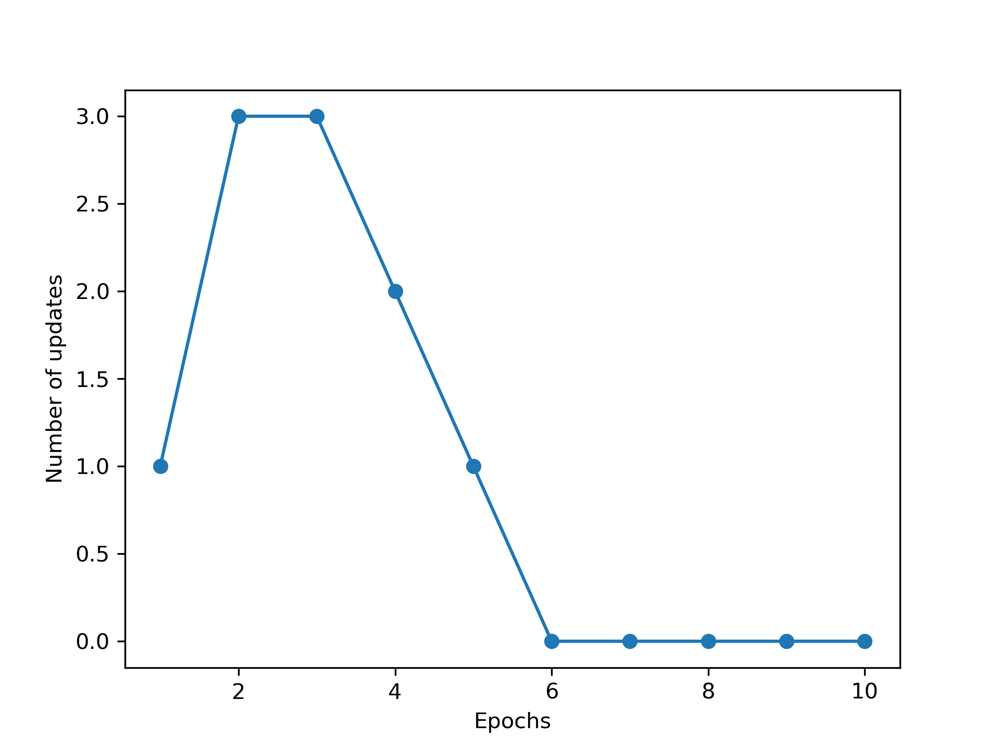
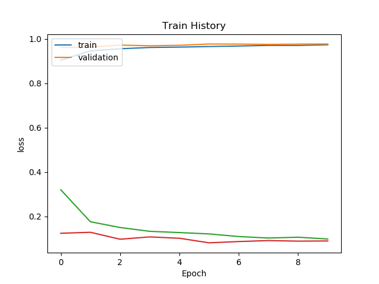
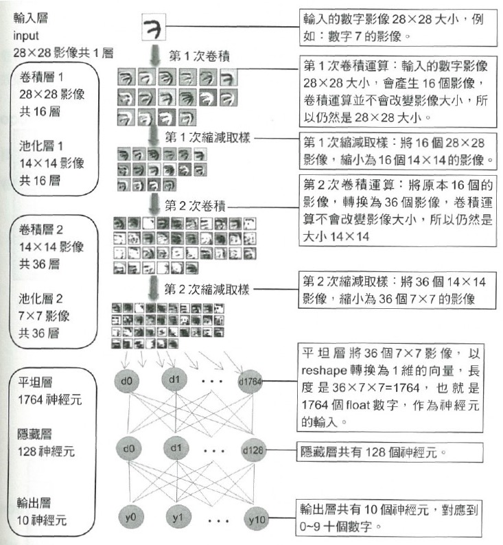
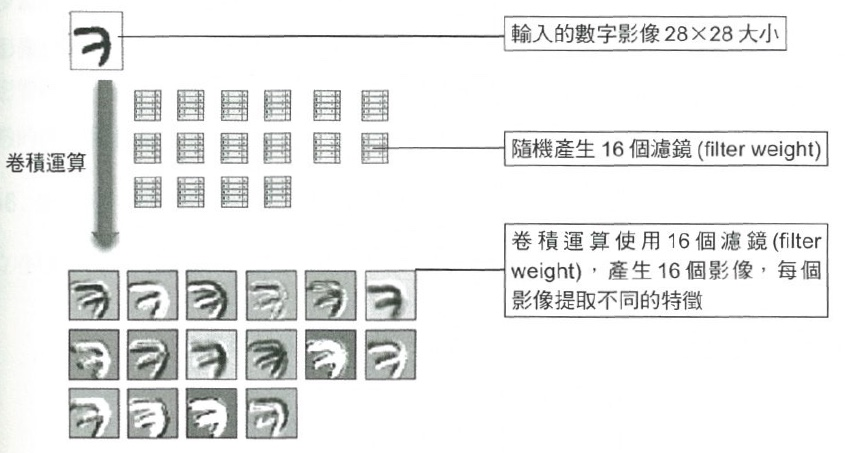
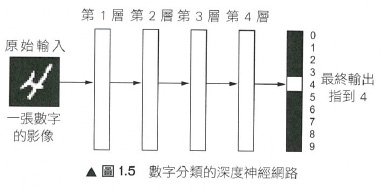
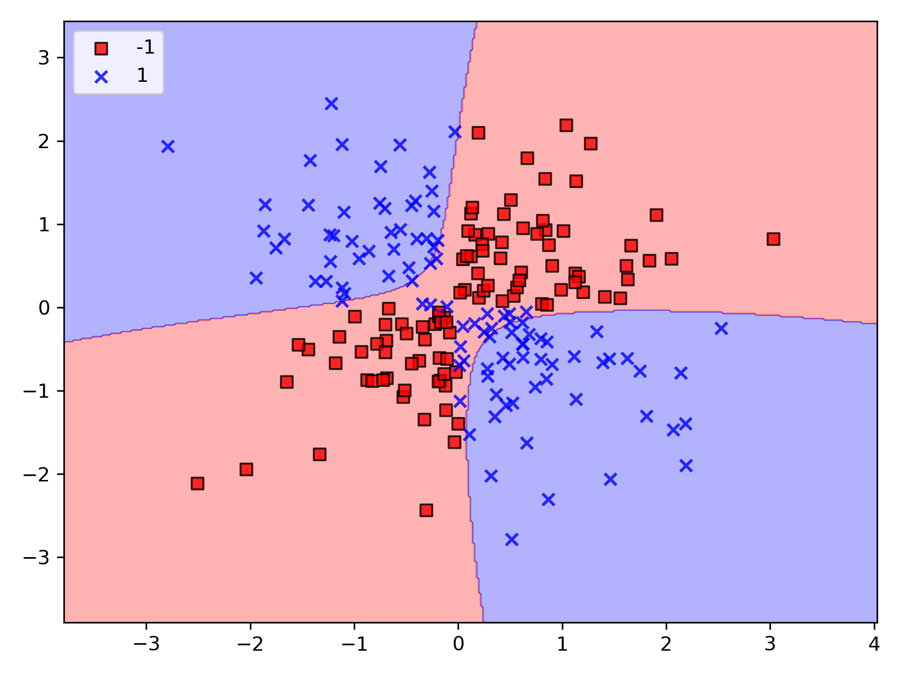

Deep Learning with Python
Table of Contents
- 1. 監督式學習範例：以感知器解決分類問題
- 2. 名詞解釋
- 3. 類神經網路
- 4. Story of gate: From perceptron to MLP
- 5. Say Hello to DNN: MNIST
- 6. 深度神經網路 DNN (Deep Neural Network)
- 7. Propagation
- 8. 神經網路的學習
- 9. 建構良好的訓練集：數據預處理
- 10. 降維來壓縮數據
- 11. 以少量資料集實做 CNN
- 12. 視覺化呈現 CNN 的學習內容
- 13. MLP 神經網路模型實作：以 Keras 為實作工具
- 14. 以 Keras 解決分類問題
- 15. 以 Keras 解決迴歸問題：預測房價: Boston
- 16. CNN 卷積神經網路: 以 Keras 為實作工具
- 17. Keras GAN
- 18. 深度學習
- 19. TensorFlow
- 20. PyTorch
- 21. Scikit-learn: 分類問題
- 22. NumPy
- 23. Pandas
- 24. AI v.s. security
- 25. Emacs 常用快速鍵
1 監督式學習範例：以感知器解決分類問題
從「鳶尾花資料集」取出兩類花(Setosa, Versicolor)，藉由不同的兩個屬性（花萼長、花瓣長）對其行分類，如圖1。
1: # coding: utf-8 2: import numpy as np 3: import pandas as pd 4: import matplotlib.pyplot as plt 5: from matplotlib.colors import ListedColormap 6: ### 感知器模型 7: class Perceptron(object): 8: """Perceptron classifier. 9: 參數： 10: ------------ 11: eta : float: 學習率 (0.0 ~ 1.0) 12: n_iter : int: 訓練次數 13: Passes over the training dataset. 14: random_state : int 15: 屬性 16: ----------- 17: w_ : 1d-array: 訓練後的權重 18: Weights after fitting. 19: errors_ : list: 每次訓練的錯誤次數 20: 21: """ 22: def __init__(self, eta=0.01, n_iter=50, random_state=1): 23: self.eta = eta 24: self.n_iter = n_iter 25: self.random_state = random_state 26: 27: def fit(self, X, y): 28: """Fit training data. 29: Parameters 30: ---------- 31: X : {array-like}, shape = [n_samples, n_features] 32: Training vectors, where n_samples is the number of samples and 33: n_features is the number of features. 34: y : array-like, shape = [n_samples] 35: Target values. 36: 37: Returns 38: ------- 39: self : object 40: 41: """ 42: rgen = np.random.RandomState(self.random_state) 43: self.w_ = rgen.normal(loc=0.0, scale=0.01, size=1 + X.shape[1]) 44: self.errors_ = [] 45: 46: for _ in range(self.n_iter): 47: errors = 0 48: for xi, target in zip(X, y): 49: update = self.eta * (target - self.predict(xi)) 50: self.w_[1:] += update * xi 51: self.w_[0] += update 52: errors += int(update != 0.0) 53: self.errors_.append(errors) 54: return self 55: 56: def net_input(self, X): 57: """Calculate net input""" 58: return np.dot(X, self.w_[1:]) + self.w_[0] 59: 60: def predict(self, X): 61: """Return class label after unit step""" 62: return np.where(self.net_input(X) >= 0.0, 1, -1) 63: 64: v1 = np.array([1, 2, 3]) 65: v2 = 0.5 * v1 66: np.arccos(v1.dot(v2) / (np.linalg.norm(v1) * np.linalg.norm(v2))) 67: 68: # 讀入訓練集資料 69: df = pd.read_csv('https://archive.ics.uci.edu/ml/' 70: 'machine-learning-databases/iris/iris.data', header=None) 71: print(df.tail()) 72: 73: # select setosa and versicolor 74: y = df.iloc[0:100, 4].values 75: y = np.where(y == 'Iris-setosa', -1, 1) 76: 77: # extract sepal length and petal length 78: X = df.iloc[0:100, [0, 2]].values 79: 80: # plot data 81: plt.clf() 82: plt.scatter(X[:50, 0], X[:50, 1], 83: color='red', marker='o', label='setosa') 84: plt.scatter(X[50:100, 0], X[50:100, 1], 85: color='blue', marker='x', label='versicolor') 86: 87: plt.xlabel('sepal length [cm]') 88: plt.ylabel('petal length [cm]') 89: plt.legend(loc='upper left') 90: 91: plt.savefig('02_06.png', dpi=300) 92: # plt.show() 93: 94: # 訓練感知器模型 95: ppn = Perceptron(eta=0.1, n_iter=10) 96: ppn.fit(X, y) 97: plt.clf() 98: plt.plot(range(1, len(ppn.errors_) + 1), ppn.errors_, marker='o') 99: plt.xlabel('Epochs') 100: plt.ylabel('Number of updates') 101: 102: plt.savefig('02_07.png', dpi=300) 103: #plt.show() 104: 105: # ### A function for plotting decision regions 106: def plot_decision_regions(X, y, classifier, resolution=0.02): 107: 108: # setup marker generator and color map 109: markers = ('s', 'x', 'o', '^', 'v') 110: colors = ('red', 'blue', 'lightgreen', 'gray', 'cyan') 111: cmap = ListedColormap(colors[:len(np.unique(y))]) 112: 113: # plot the decision surface 114: x1_min, x1_max = X[:, 0].min() - 1, X[:, 0].max() + 1 115: x2_min, x2_max = X[:, 1].min() - 1, X[:, 1].max() + 1 116: xx1, xx2 = np.meshgrid(np.arange(x1_min, x1_max, resolution), 117: np.arange(x2_min, x2_max, resolution)) 118: Z = classifier.predict(np.array([xx1.ravel(), xx2.ravel()]).T) 119: Z = Z.reshape(xx1.shape) 120: plt.contourf(xx1, xx2, Z, alpha=0.3, cmap=cmap) 121: plt.xlim(xx1.min(), xx1.max()) 122: plt.ylim(xx2.min(), xx2.max()) 123: 124: # plot class samples 125: for idx, cl in enumerate(np.unique(y)): 126: plt.scatter(x=X[y == cl, 0], 127: y=X[y == cl, 1], 128: alpha=0.8, 129: c=colors[idx], 130: marker=markers[idx], 131: label=cl, 132: edgecolor='black') 133: plt.clf() 134: plot_decision_regions(X, y, classifier=ppn) 135: plt.xlabel('sepal length [cm]') 136: plt.ylabel('petal length [cm]') 137: plt.legend(loc='upper left') 138: 139: 140: plt.savefig('02_08.png', dpi=300) 141: #plt.show() 142:
0 1 2 3 4
145 6.7 3.0 5.2 2.3 Iris-virginica
146 6.3 2.5 5.0 1.9 Iris-virginica
147 6.5 3.0 5.2 2.0 Iris-virginica
148 6.2 3.4 5.4 2.3 Iris-virginica
149 5.9 3.0 5.1 1.8 Iris-virginica
Figure 1: 待分類的兩種花依其不同屬性之分佈狀況

Figure 2: 感知器訓練過程

Figure 3: 訓練後的分類結果
2 名詞解釋
本節資料來源: 主流的深度學習模型有哪些？
- perceptron: 單一神經元，可視為一層的neural network
- MPL: Multi-layer perceptron: 多層的perceptron，也可視為neural network
- Shallow neural netwokrs: 一般來說有1-2個隱藏層的neural network就可稱為多層，準確來說叫淺層
- Deep learning: 隨著隱藏層增加，更深的神經網路(一般來說超過5層)就都叫深度學習
- 「深度」只是一個商業概念，很多時候工業界把3層隱藏層也叫做「深度學習」
- 在機器學習領域的約定俗成是，名字中有深度(Deep)的網絡僅代表其有超過5-7層的隱藏層。
2.1 Supervised neural networks
- ANN (Artificial Neural Network) / DNN (Deep Neural Networks)
神經網絡的基礎模型是感知機(Perceptron)，因此神經網絡也可以叫做多層感知機(Multi-layer Perceptron)，簡稱MLP。單層感知機叫做感知機，多層感知機(MLP)≈人工神經網絡(ANN)。
那麼多層到底是幾層？一般來說有1-2個隱藏層的神經網絡就可以叫做多層，準確的說是(淺層)神經網絡(Shallow Neural Networks)。隨著隱藏層的增多，更深的神經網絡(一般來說超過5層)就都叫做深度學習(DNN)。
然而，「深度」只是一個商業概念，很多時候工業界把3層隱藏層也叫做「深度學習」，所以不要在層數上太較真。在機器學習領域的約定俗成是，名字中有深度(Deep)的網絡僅代表其有超過5-7層的隱藏層。
- RNN: Recurrent Neural Network，Recursive neural networks。
雖然很多時候我們把這兩種網絡都叫做RNN，但事實上這兩種網路的結構事實上是不同的。而我們常常把兩個網絡放在一起的原因是：它們都可以處理有序列的問題，比如時間序列等。
舉個最簡單的例子，我們預測股票走勢用RNN就比普通的DNN效果要好，原因是股票走勢和時間相關，今天的價格和昨天、上周、上個月都有關係。而RNN有「記憶」能力，可以「模擬」數據間的依賴關係(Dependency)。
- LSTM:
為了加強這種RNN的「記憶能力」，人們開發各種各樣的變形體，如非常著名的Long Short-term Memory(LSTM)，用於解決「長期及遠距離的依賴關係」。如下圖所示，左邊的小圖是最簡單版本的循環網絡，而右邊是人們為了增強記憶能力而開發的LSTM。

Figure 4: LSTM
- Bi-directional RNN:
另一個循環網絡的變種 - 雙向循環網絡(Bi-directional RNN)也是現階段自然語言處理和語音分析中的重要模型。開發雙向循環網絡的原因是語言/語音的構成取決於上下文，即「現在」依託於「過去」和「未來」。單向的循環網絡僅著重於從「過去」推出「現在」，而無法對「未來」的依賴性有效的建模。
- LSTM:
- 卷積網絡(Convolutional Neural Networks)
卷積運算是一種數學計算，和矩陣相乘不同，卷積運算可以實現稀疏相乘和參數共享，可以壓縮輸入端的維度。和普通DNN不同，CNN並不需要為每一個神經元所對應的每一個輸入數據提供單獨的權重。

以上圖為例，卷積、池化的過程將一張圖片的維度進行了壓縮。從圖示上我們不難看出卷積網絡的精髓就是適合處理結構化數據，而該數據在跨區域上依然有關聯。
應用場景：雖然我們一般都把CNN和圖片聯繫在一起，但事實上CNN可以處理大部分格狀結構化數據(Grid-like Data)。舉個例子，圖片的像素是二維的格狀數據，時間序列在等時間上抽取相當於一維的的格狀數據，而視頻數據可以理解為對應視頻幀寬度、高度、時間的三維數據。
2.2 Unsupervised Pre-trained Neural Networks
3 類神經網路
神經網絡是非常重要的一種機器學習機制，它是一種模仿人類大腦學習機制的一種方法。人類的大腦從外界接受刺激，並處理這些輸入（通過神經元處理），最終產生輸出1。
當任務變得複雜的時候，大腦會使用多個神經元來形成一個複雜的網絡，並在神經元之間傳遞信息，人工神經網絡就是模仿這種處理機制的一種算法。如下圖的網絡是一種由多個互聯的神經元組成的網絡1。
Figure 5: DEEP NEURAL NETWORK
- 圖5中的圓圈就是神經元(perceptron)。每一個perceptron都由weight、bias和activation function組成。數據由input layer輸入。然後perceptron基於weight和bias，通過線性變換將輸入數據進行轉換。activation function則是用來完成非線性的轉換。數據從輸入層輸入後，會來到隱藏層。隱藏層將會對數據進行處理並輸送到輸出層。這種數據處理方式就是著名的前向傳播。
- 當輸出層的結果和我們期望的結果相差很大怎麼辦呢？在神經網絡中，我們可以基於這種錯誤來更新神經元的權重和偏移。這種處理方式被稱為後向傳播算法。一旦所有的數據經歷過這個處理，最終的權重和便宜就可以用來做預測了1。
A normal neural network2:

Figure 6: Neural Network
3.1 Perceptron
Perceptron is a single layer neural network and a multi-layer perceptron is called Neural Networks.
- Version #1: 使用weight
感知器（perceptron）是 人造神經元（artificial neuron）的一種，也是最基本的一種。它接受一些輸入，產生一個輸出。
digraph perceptron { rankdir=LR sigma [label="weighted\n sum"] output [label="output" shape="record"] x1 -> sigma [label = w1] x2 -> sigma [label = w2] sigma -> output }
Figure 7: Perceptron version 1
- 這種架構的輸入/輸出關係為線性
- 神經網路中再多的線性perceptron叠加，仍為線性
- 無法解決 線性不可分 的問題
- 線性可分 v.s. 線性不可分
- 低維映射至高維
在SVM的解決方案中，可以透過一個非線性的映射將低維空間線性不可分的樣本轉換至高維空間，使其成為線性可分 4，例如:
Figure 9: Kernal function mapping
- 這種架構的輸入/輸出關係為線性
- Version #2: 加入bias
digraph perceptron { rankdir=LR sigma [label="weighted\n sum"] output [label="output" shape="record"] x1 -> sigma [label = w1] x2 -> sigma [label = w2] 1 -> sigma[label = b] sigma -> output }
Figure 10: Perceptron version 2
- 不加 bias 你的分類線(面)就必須過原點，這顯然是不靈活的
- 透過bias，可以將NN進行左右調整，以適應(fit)更多情況
- 可以將bias視為一個activate perceptron的threshold
- bias也可以視為當輸入均為0時的輸出值
- 從仿生學的角度，刺激生物神經元使它興奮需要刺激強度超過一定的閾值，同樣神經元模型也仿照這點設置了bias
- 不加 bias 你的分類線(面)就必須過原點，這顯然是不靈活的
- Version #3: 加入activation function
加入activation function
digraph perceptron { rankdir=LR sigma [label="weighted\n sum"] av [label="activation\n function"] output [label="output" shape="record"] x1 -> sigma [label = w1] x2 -> sigma [label = w2] 1 -> sigma[label = b] sigma -> av -> output }
Figure 11: Perceptron version 2
- 結論: 什麼是perceptron
其實Perceptron就只是一個兩層的神經網路，輸入層和輸出層

3.2 為什麼沒有Activation Function的perceptron為linear model
思考下方堆疊兩層感知器的例子(這裡我們捨棄偏權值b，使問題單純化)：
Figure 12: Stacked perceptrons
其中
\[
y_1 = w_1^1x_1 + w_2^1x_2 \\
y_2 = w_3^1x_1 + w_4^1x_2 \\
\hat{y} = w_1^2y_1 + w_2^2y_2
\]
若將\(y_1\)與\(y_2\)代入\(\hat{y}\)，可以發現仍然是原始數據的線性組合，代表即使堆疊多層的感知器時，若沒有使用激活函數，本質上可以被單層感知器取代，如下5：
\[\hat{y} = w_1^2y_1 + w_2^2y_2 = (w_1^1w_1^2 + w_2^1x_2^2)x_1 + (w_3^1w_1^2 + w_4^1x_2^2)x_2\]
3.3 Activation Function
Activation function是神經網絡中極其重要的概念。它們決定了某個神經元是否被activate，這個神經元接受到的信息是否是有用的，是否該留下或者是該拋棄。
Activation function的形式如下1：
- 在神經元裡定義一些權重(weight)，經過計算之後，判斷結果是否超過一個閾值(threshold)，如果超過，神經元輸出為 1；反之，則輸出 0。
- 如果不用Activation function，每一層output都是上層input的線性函數，無論神經網絡有多少層，輸出都是輸入的線性組合。
- 加入非線性的function就能改變線性問題
- Step function
Step function，若輸入超過 0，則輸出 1；若輪入小於等於 0，則輸出 0，如公式\eqref{orgfa0721b}所示，其函數圖形則如圖13所示。
\begin{equation} \label{orgfa0721b} h(x) = \begin{cases} 1 & \text{if } x > 0 \\ 0 & \text{if } x\leq 0 \end{cases} \end{equation}
1: import numpy as np 2: import matplotlib.pylab as plt 3: 4: def step_function(x): 5: return np.array(x>0, dtype=np.int) 6: 7: x = np.arange(-5.0, 5.0, 0.1) 8: y = step_function(x) 9: plt.figure(figsize=(4,3)) 10: plt.plot(x, y) 11: plt.ylim(-0.1, 1.1) 12: plt.savefig("images/stepFuncPlot.png") 13: return "images/stepFuncPlot.png"

Figure 13: 階梯函數圖
- 為什麼第5行(np.array(x>0, dtype=np.int))這樣寫會變成0/1
- 當調整參數時，節點輸出的值在 0 和 1 之間躍遷，對調整參數造成很大不便。
- 為什麼第5行(np.array(x>0, dtype=np.int))這樣寫會變成0/1
- Sigmoid 函數
公式\eqref{orgd83c4ed}即為 sigmoid 函數(sigmoid function)，其中的\(exp(-x)\)代表\(e^{-x}\)，\(e\)為納皮爾常數(Napier’s constant)2.71828…的實數。
\begin{equation} \label{orgd83c4ed} h(x) = \frac{1}{1+exp(-x)} = \frac{1}{1+e^{-x}} \end{equation}
sigmoid 函數的 python 實作如下所述，而其圖形結果為平滑曲線(圖14)，針對輸入產生連續性的輸出，但仍與階梯函數相同，以 0 為界線，這種平滑度對於神經網路有相當重要的意義。此外，step function只能回傳 0 或 1，而 sigmoid 函數可以回傳實數。
1: import numpy as np 2: import matplotlib.pylab as plt 3: def sigmoid(x): 4: return 1 / (1 + np.exp(-x)) 5: x = np.arange(-5.0, 5.0, 0.1) 6: y = sigmoid(x) 7: print(y) 8: plt.figure(figsize=(4,3)) 9: plt.plot(x, y) 10: plt.ylim(-0.1, 1.1) 11: plt.savefig("sigmoidplot2.png") 12: return "sigmoidplot2.png"
Figure 14: sigmoid 函數圖
- 非線性功能
- 輸出：（0,1）
- 處理極端值
- 常用於隱藏層和輸出層
- 常用於二元分類
- 梯度消失問題
- 非線性功能
- ReLU 函數
神經網路感知器使用的活化函數多為非線性函數，如階梯函數與 sigmoid 函數，其主要原因在於，若在神經網路中使用線性函數，則不論加深多少層，這些函數都能合併為一個單一函數。例如，一個以\(h(x)=cx\)為活化函數的三層網路，其執行結果便相當於\(y(x)=h(h(h(x)))\)，亦即，其執行網果就如同一個以\(y(h)=ax\)為活化函數的一層網路，其中\(a=c^{3}\)。
雖然 sigmoid 函數很早就應用於神經網路中，但最近較常使用的為 ReLU (Rectified Linear Unit)函數，若輸入超過 0，則直接輸出；若輪入小於 0，則輸出 0，如公式\eqref{org6ba0ebd}所示，其函數圖形則如圖15所示。
\begin{equation} \label{org6ba0ebd} h(x) = \begin{cases} x & \text{if } x > 0 \\ 0 & \text{if } x\leq 0 \end{cases} \end{equation}
or
\[h(x) = max(0,x)\]
1: import numpy as np 2: import matplotlib.pylab as plt 3: def relu(x): 4: return np.maximum(0, x) 5: x = np.arange(-5.0, 5.0, 0.1) 6: y = relu(x) 7: print(y) 8: plt.figure(figsize=(4,3)) 9: plt.plot(x, y) 10: plt.ylim(-0.5, 5) 11: plt.savefig("ReLUPlot.png") 12: return "ReLUPlot.png"
Figure 15: ReLU 函數圖
- 非線性功能
- 輸出範圍：（0，\(\infty\)）
- 捨棄一些信息
- 常用於隱藏層
- 梯度爆炸問題
- 非線性功能
4 Story of gate: From perceptron to MLP
4.1 Example #1
- Question
有三個A、一個B，如何進行分類?

Figure 16: 分類任務:問題
- Idea
最簡單的分類方式是在A和B中間直接找條直線(\(w_1x_1+w_2x_2+b=0\))就可以將A和B完整切出兩個區塊，然後再搭配階梯函數(step function)將>0與<=0分別設為1與0，用來代表類別0與1。該直線方程式如下：
\begin{equation} \label{org2c741c1} y = \begin{cases} 1, & w_1x_1 + w_2x_2-b>0 \\ 0, & w_1x_1 + w_2x_2-b\leq0 \\ \end{cases} \end{equation}
- Solution
經過無數的嚐試錯誤，也許我們可以矇到一個如下的方程式
Figure 17: 分類任務:Solution
如果畫成Perceptron的圖:
digraph perceptron { rankdir=LR sigma [label="weighted\n sum"] output [label="output" shape="record"] x1 -> sigma [label = 1] x2 -> sigma [label = 1] 1 -> sigma[label = -0.5] sigma -> "step\nfunction" -> output }
\begin{align*} A(0,1) \rightarrow y &= f(0,1) = f(1\times0+1\times1-0.5) = f(0.5) = 1 \\ A(1,0) \rightarrow y &= f(1,0) = f(1\times1+1\times0–0.5) = f(0.5) = 1\\ A(1,1) \rightarrow y &= f(1,1) = f(1\times1+1\times1–0.5) = f(1.5) = 1\\ B(0,0) \rightarrow y &= f(0,0) = f(1\times0+1\times0–0.5) = f(-0.5) = 0\\ \end{align*}
如果將圖17的四點點代入y(方程式\eqref{org2c741c1}):
- OR gate
有點計概基礎的同學，應該可以發現圖16與OR邏輯閘一致，其真值表如下
A B A OR B 0 0 0 0 1 1 1 0 1 1 1 1 - Python實作
上述 OR gate的python實作如下
1: import numpy as np 2: 3: def step_function(x): 4: return np.array(x>0, dtype=np.int) 5: 6: def OR(x1, x2): 7: x = np.array([x1, x2]) 8: w = np.array([1, 1]) 9: b = -0.5 10: theta = 0 11: y = np.sum(w*x) + b 12: return step_function(y) 13: 14: print("0 OR 0 -> ", OR(0,0)) 15: print("0 OR 1 -> ", OR(0,1)) 16: print("1 OR 0 -> ", OR(1,0)) 17: print("1 OR 1 -> ", OR(1,1))
0 OR 0 -> 0 0 OR 1 -> 1 1 OR 0 -> 1 1 OR 1 -> 1
4.2 Example #2
上述範例中，我們以瞎貓精神找出了一組solution解決了OR gate的分類問題，請比照辦理，解決AND gate，建構出perceptro，實作出python code.
已知AND gate真值表如下
| A | B | A AND B |
|---|---|---|
| 0 | 0 | 0 |
| 0 | 1 | 0 |
| 1 | 0 | 0 |
| 1 | 1 | 1 |
4.3 XOR Problem
- Question
XOR(互斥或)真值表如下:
A B A XOR B 0 0 0 0 1 1 1 0 1 1 1 1 其輸入/輸出分佈圖為

Figure 18: XOR Gate
- Idea
這個時候一般線性的分類就沒有辦法很完美分割(如下圖)，所以就需要一些變形的方法來達到目的。

Figure 19: XOR Gate Solution ideas
一個便當吃不飽那就吃兩個阿
–馬惠帝
即便一個人再如何bumbler，仍有可能提出一些明智的話語，就如同星爺告訴我們的
所以，一條線無法分割–那就用兩條啊
- Solution

如前所述，一條線為一個perceptron，這裡會用到兩個
- \(h_1(x) = x_1 + x_2 - 0.5\)
- \(h_2(x) = x_1 + x_2 - 1.5\)

Figure 20: XOR Gate Solution 2
將圖19的4個點代入\(h_1\):
\begin{align*} h_1(0,0) &= f(1\times0+1\times0–0.5) = f(-0.5) = 0\\ h_1(0,1) &= f(1\times0+1\times1-0.5) = f(0.5) = 1\\ h_1(1,0) &= f(1\times1+1\times0–0.5) = f(0.5) = 1\\ h_1(1,1) &= f(1\times1+1\times1–0.5) = f(1.5) = 1\\ \end{align*}
將圖19的4個點代入\(h_2\):
\begin{align*} h_2(0,0) &= f(1\times0+1\times0–1.5) = f(-1.5) = 0\\ h_2(0,1) &= f(1\times0+1\times1-1.5) = f(-0.5) = 0\\ h_2(1,0) &= f(1\times1+1\times0–1.5) = f(-0.5) = 0\\ h_2(1,1) &= f(1\times1+1\times1–1.5) = f(0.5) = 1\\ \end{align*}
由上可知:
- (0, 0)帶入第1個perceptron \(h_1(0,0)\)輸出-0.5、帶入第2個perceptron \(h_2(0,0)\)輸出-1.5；(-0.5, -1.5)再經由step function轉換輸出(0,0)
- (0, 1)帶入第1個perceptron \(h_1(0,1)\)輸出0.5、帶入第2個perceptron \(h_2(0,1)\)輸出-0.5；(0.5, -0.5)再經由step function轉換輸出(1,0)
- (1, 0)帶入第1個perceptron \(h_1(1,0)\)輸出0.5、帶入第2個perceptron \(h_2(1,0)\)輸出-0.5；(0.5, -0.5)再經由step function轉換輸出(1,0)
- (1, 1)帶入第1個perceptron \(h_1(1,1)\)輸出1.5、帶入第2個perceptron \(h_2(1,1)\)輸出0.5；(1.5, 0.5)再經由step function轉換輸出(1,1)
即
\begin{align*} data(0,0) &= f(h_1,h_2) = (0,0) \\ data(0,1) &= f(h_1,h_2) = (1,0) \\ data(1,0) &= f(h_1,h_2) = (1,0) \\ data(1,1) &= f(h_1,h_2) = (1,1) \\ \end{align*}
這相當於透過兩個perceptron將原本的輸入做特徵空間轉換，如圖21:

Figure 21: XOR Gate Solution 3
這個時候只要設計一個線性分類器就可以完美分割兩類的資料了阿，如圖22:

Figure 22: XOR Gate Solution 4
XOR問題的神經網路結構如下圖:

Figure 23: XOR Gate Solution 5
- \(h_1(x) = x_1 + x_2 - 0.5\)
4.4 MLP (Multilayer perceptron)
由XOR問題的例子可以知道，第一層兩個Perceptron在做的事情其實是將資料投影到另一個特徵空間去,最後再把h1和h2的結果當作另一個Perceptron的輸入，再做一個下一層的Perceptron就可以完美分類XOR問題。
上例其實就是一個Two-Layer Perceptrons，第一層的Perceptron輸出其實就是每個hidden node，所以如果hidden layer再多一層就是Three-Layer Perceptrons，所以很多層的Perceptrons組合起來就是多層感知機 (Multilayer perceptron, MLP)。MLP其實就是可以用多層和多個Perceptron來達到最後目的，有點像用很多個回歸方法/線性分類器一層一層疊加來達到目的。
中間一堆的hidden layer其實就是在做資料的特徵擷取，可以降維，也可以增加維度，而這個過程不是經驗法則去設計，而是由資料去學習得來，最後的輸出才是做分類，所以最後一層也可以用SVM來分類。
如果層數再多也可以稱為深度神經網路(deep neural network, DNN)，所以現在稱的DNN其實就是人工神經網路的MLP。有一說法是說因為MLP相關的神經網路在之前因為電腦限制所以performance一直都沒有很好的突破，所以相關研究沒有像SVM這麼的被接受，因此後來Deep learning的聲名大噪，MLP也換個較酷炫的名字(deep neural network)來反轉神經網路這個名稱的聲勢。
多層感知機是一種前向傳遞類神經網路，至少包含三層結構(輸入層、隱藏層和輸出層)，並且利用到「倒傳遞」的技術達到學習(model learning)的監督式學習，以上是傳統的定義。現在深度學習的發展，其實MLP是深度神經網路(deep neural network, DNN)的一種special case，概念基本上一樣，DNN只是在學習過程中多了一些手法和層數會更多更深6。
5 Say Hello to DNN: MNIST
使用神經網路解決問題分為兩個步驟：「學習」與「推論」。
- 學習指使用訓練資料進行權重參數的學習
- 推論指使用學習過的參數進行資料分類
5.1 MNIST 資料集
- MNIST 是機器學習領域中相當著名的資料集，號稱機器學習領域的「Hello world.」，其重要性不言可喻。
- MNIST 資料集由 0~9 的數字影像構成(如圖24)，共計 60000 張訓練影像、10000 張測試影像。
- 一般的 MMIST 資料集的用法為：使用訓練影像進行學習，再利用學習後的模型預測能否正確分類測試影像。

Figure 24: MNIST 資料集內容範例
準備資料是訓練模型的第一步，基礎資料可以是網上公開的資料集，也可以是自己的資料集。視覺、語音、語言等各種型別的資料在網上都能找到相應的資料集。
- 準備 MNIST 資料
MNIST 數據集來自美國國家標準與技術研究所, National Institute of Standards and Technology (NIST). 訓練集 (training set) 由來自 250 個不同人手寫的數字構成, 其中 50% 是高中學生, 50% 來自人口普查局 (the Census Bureau) 的工作人員. 測試集(test set) 也是同樣比例的手寫數字數據。MNIST 數據集可在 http://yann.lecun.com/exdb/mnist/ 獲取, 它包含了四個部分:
- Training set images: train-images-idx3-ubyte.gz (9.9 MB, 解壓後 47 MB, 包含 60,000 個樣本)
- Training set labels: train-labels-idx1-ubyte.gz (29 KB, 解壓後 60 KB, 包含 60,000 個標籤)
- Test set images: t10k-images-idx3-ubyte.gz (1.6 MB, 解壓後 7.8 MB, 包含 10,000 個樣本)
- Test set labels: t10k-labels-idx1-ubyte.gz (5KB, 解壓後 10 KB, 包含 10,000 個標籤)
MNIST 資料集是一個適合拿來當作 TensotFlow 的練習素材，在 Tensorflow 的現有套件中，也已經有內建好的 MNIST 資料集，我們只要在安裝好 TensorFlow 的 Python 環境中執行以下程式碼，即可將 MNIST 資料成功讀取進來。.
import tensorflow as tf mnist = tf.keras.datasets.mnist (x_train, y_train), (x_test, y_test) = mnist.load_data()
在訓練模型之前，需要將樣本資料劃分為訓練集、測試集，有些情況下還會劃分為訓練集、測試集、驗證集。由上述程式第3行可知，下載後的 MNIST 資料分成訓練資料(training data)與測試資料(testing data)，其中 x 為圖片、y為所對應數字。
1: import tensorflow as tf 2: mnist = tf.keras.datasets.mnist 3: (x_train, y_train), (x_test, y_test) = mnist.load_data() 4: # ===================================== 5: # 判斷資料形狀 6: print(x_train.shape) 7: print(x_test.shape) 8: # 第一個label的內容 9: print(y_train[0]) 10: # 顯示影像內容 11: import matplotlib.pylab as plt 12: img = x_train[0] 13: plt.imshow(img) 14: plt.savefig("MNIST-Image.png")
(60000, 28, 28) (10000, 28, 28) 5
由上述程式輸出結果可以看到載入的 x 為大小為 28*28 的圖片共 60000 張，每一筆 MNIST 資料的照片(x)由 784 個 pixels 組成（28*28），照片內容如圖25，訓練集的標籤(y)則為其對應的數字(0～9)，此例為 5。

Figure 25: MNIST 影像示例
x 的影像資料為灰階影像，每個像素的數值介於 0~255 之間，矩陣裡每一項的資料則是代表每個 pixel 顏色深淺的數值，如下圖26所示：

Figure 26: MNIST 資料矩陣
載入的 y 為所對應的數字 0~9，在這我們要運用 keras 中的 np_utils.to_categorical 將 y 轉成 one-hot 的形式，將他轉為一個 10 維的 vector，例如：我們所拿到的資料為 y=3，經過 np_utils.to_categorical，會轉換為 y=[0,0,0,1,0,0,0,0,0,0]。這部份的轉換程式碼如下：
1: from keras.datasets import mnist 2: from keras.utils import np_utils 3: 4: import tensorflow as tf 5: mnist = tf.keras.datasets.mnist 6: (x_train, y_train), (x_test, y_test) = mnist.load_data() 7: # ===================================== 8: # 將圖片轉換為一個60000*784的向量，並且標準化 9: x_train = x_train.reshape(x_train.shape[0], 28*28) 10: x_test = x_test.reshape(x_test.shape[0], 28*28) 11: x_train = x_train.astype('float32') 12: x_test = x_test.astype('float32') 13: x_train = x_train/255 14: x_test = x_test/255 15: # 將y轉換成one-hot encoding 16: y_train = np_utils.to_categorical(y_train, 10) 17: y_test = np_utils.to_categorical(y_test, 10) 18: # 回傳處理完的資料 19: print(y_train[0]) 20: import numpy as np 21: np.set_printoptions(precision=2) 22: #print(x_train[0])
[0. 0. 0. 0. 0. 1. 0. 0. 0. 0.]
- Training set images: train-images-idx3-ubyte.gz (9.9 MB, 解壓後 47 MB, 包含 60,000 個樣本)
- MNIST 的推論處理
如圖27所示，MNIST 的推論神經網路最前端的輸入層有 784 (\(28*28=784\))個神經元，最後的輸出端有 10 個神經元(\(0~9\)個數字)，至於中間的隠藏層有兩個，第 1 個隱藏層有 50 個神經元，第 2 層有 100 個。此處的 50、100 可以設定為任意數（如，也可以是 128、64）。

Figure 27: MNIST-NeuralNet
為了完成上述推論，此處定義三個函數：get_data()、init_network()、predict()，其中 init_work()直接讀入作者已經訓練好的網絡權重。在以下這段程式碼中，權重與偏權值的參數會儲存成字典型態的變數。
1: from keras.datasets.mnist import load_data 2: import numpy as np 3: import pickle 4: def sigmoid(x): 5: return 1 / (1 + np.exp(-x)) 6: # 防止溢出型 7: def softmax(x): 8: c = np.max(x) 9: exp_x = np.exp(x - c) 10: sum_exp_x = np.sum(exp_x) 11: return exp_x / sum_exp_x 12: def get_data(): 13: (X_train, y_train), (X_test, y_test) = load_data() 14: return X_test.reshape(10000, 784), y_test 15: def init_network(): 16: # https://github.com/Bingyy/deep-learning-from-scratch/blob/master/ch03/sample_weight.pkl 17: with open('/Volumes/Vanessa/MNIST/data/mnist/sample_weight.pkl', 'rb') as f: 18: network = pickle.load(f) 19: return network 20: # 存儲的是網絡參數字典 21: network = init_network() 22: 23: # 組合網絡流程，用於預測 24: def predict(network, x): 25: W1, W2, W3 = network['W1'], network['W2'], network['W3'] 26: b1, b2, b3 = network['b1'], network['b2'], network['b3'] 27: a1 = np.dot(x,W1) + b1 28: z1 = sigmoid(a1) 29: a2 = np.dot(z1, W2) + b2 30: z2 = sigmoid(a2) 31: a3 = np.dot(z2, W3) + b3 32: y = softmax(a3) # 分類用的最後輸出層的激活函數 33: return y 34: # 使用網絡預測 35: X_test, y_test = get_data() # 得到測試數據 36: network = init_network() 37: 38: accuracy_cnt = 0 39: for i in range(len(X_test)): 40: y = predict(network, X_test[i]) 41: p = np.argmax(y) 42: np.set_printoptions(precision=4, suppress=True) 43: if p == y_test[i]: 44: accuracy_cnt += 1 45: print('準確率：', str(float(accuracy_cnt) / len(X_test)))
準確率： 0.0002
上述程式中，predict 程序(第24)透過矩陣相乘運算完成神經網路的參數傳遞，最後必須進行準確率的評估，程式碼第40行為神經網路針對輸入圖片的預測結果，所傳回的值為各猜測值的機率陣列，如：[0.0004 0.0011 0.9859 0.0065 0. 0.0007 0.0051 0. 0.0003 0. ]；而程式碼第41則是該圖片的應對標籤，np.argmax(y)會傳回 y 的最大值所在順序，若 y=[0,0,0,1,0,0,0,0,0,0]，則傳回 3，藉此計算預測正確的百分比。
- Python 與神經網路運算的批次處理
前節程式碼中最後以 for 迴圈來逐一處理預測結果與比較，輸入(X)為單一圖片，其處理程序如圖28所示：

Figure 28: MNIST-單一處理架構
事實上，在使用批次處理（如一次處理 100 張圖）反而能大幅縮短每張圖片的處理時間，因為多數處理數值運算的函式庫都會針對大型陣列運算進行最佳化，尤其是透過 GPU 來處理時更是如此，這時，傳送單張圖片反而成為效能瓶頸，以批次處理則可減輕匯流排頻寛負擔。若以每次處理 100 張為例，其處理程序則如圖29所示。
Figure 29: MNIST-批次處理架構
至於批次運算的程式碼如下。
1: from keras.datasets.mnist import load_data 2: import numpy as np 3: import pickle 4: def sigmoid(x): 5: return 1 / (1 + np.exp(-x)) 6: # 防止溢出型 7: def softmax(x): 8: c = np.max(x) 9: exp_x = np.exp(x - c) 10: sum_exp_x = np.sum(exp_x) 11: return exp_x / sum_exp_x 12: def get_data(): 13: (X_train, y_train), (X_test, y_test) = load_data() 14: return X_test.reshape(10000, 784), y_test 15: def init_network(): 16: # https://github.com/Bingyy/deep-learning-from-scratch/blob/master/ch03/sample_weight.pkl 17: with open('/Volumes/Vanessa/MNIST/sample_weight.pkl', 'rb') as f: 18: network = pickle.load(f) 19: return network 20: # 存儲的是網絡參數字典 21: network = init_network() 22: 23: # 組合網絡流程，用於預測 24: def predict(network, x): 25: W1, W2, W3 = network['W1'], network['W2'], network['W3'] 26: b1, b2, b3 = network['b1'], network['b2'], network['b3'] 27: a1 = np.dot(x,W1) + b1 28: z1 = sigmoid(a1) 29: a2 = np.dot(z1, W2) + b2 30: z2 = sigmoid(a2) 31: a3 = np.dot(z2, W3) + b3 32: y = softmax(a3) # 分類用的最後輸出層的激活函數 33: return y 34: # 使用網絡預測 35: X_test, y_test = get_data() # 得到測試數據 36: network = init_network() 37: 38: # 批次處理架構 39: batch_size = 100 40: accuracy_cnt = 0 41: for i in range(0, len(X_test), batch_size): 42: x_batch = X_test[i:i+batch_size] 43: y_batch = predict(network, x_batch) 44: p = np.argmax(y_batch, axis=1) 45: accuracy_cnt += np.sum(p == y_test[i:i+batch_size]) 46: print('準確率：', str(float(accuracy_cnt) / len(X_test)))
準確率： 0.9207
上述程式中，第42行每次取出 100 張圖形檔(X 陣列),第44行則取得這 100 筆資料中各筆資料最大值索引值，若以每次 4 筆資料為例，所得的估計值 p 可能為[7 2 1 0]，相對應的正確標籤值則儲存於 y_test[0:4]中，以此進行準確率的計算。
5.2 MNIST 資料集:以 DNN Sequential 模型為例
此處以最簡單的 DNN (deep neural network) 作為範例。以 Keras 的核心為模型，應用最常使用 Sequential 模型。藉由.add()我們可以一層一層的將神經網路疊起。在每一層之中我們只需要簡單的設定每層的大小(units)與激活函數(activation function)。需要特別記得的是：第一層要記得寫輸入的向量大小、最後一層的 units 要等於輸出的向量大小。在這邊我們最後一層使用的激活函數(activation function)為 softmax。
相對應程式碼如下：
1: # 載入資料 2: from keras.datasets import mnist 3: from keras.utils import np_utils 4: 5: def load_data(): 6: # 載入minst的資料 7: (x_train, y_train), (x_test, y_test) = mnist.load_data() 8: # 將圖片轉換為一個60000*784的向量，並且標準化 9: x_train = x_train.reshape(x_train.shape[0], 28*28) 10: x_test = x_test.reshape(x_test.shape[0], 28*28) 11: x_train = x_train.astype('float32') 12: x_test = x_test.astype('float32') 13: x_train = x_train/255 14: x_test = x_test/255 15: # 將y轉換成one-hot encoding 16: y_train = np_utils.to_categorical(y_train, 10) 17: y_test = np_utils.to_categorical(y_test, 10) 18: # 回傳處理完的資料 19: return (x_train, y_train), (x_test, y_test) 20: 21: import numpy as np 22: from keras.models import Sequential 23: from keras.layers.core import Dense,Activation 24: from keras.optimizers import Adam 25: 26: def build_model():#建立模型 27: model = Sequential() 28: #將模型疊起 29: model.add(Dense(input_dim=28*28,units=500,activation='relu')) 30: model.add(Dense(units=500,activation='relu')) 31: model.add(Dense(units=500,activation='relu')) 32: model.add(Dense(units=10,activation='softmax')) 33: model.summary() 34: return model 35: 36: # 開始訓練模型，此處使用了Adam做為我們的優化器，loss function選用了categorical_crossentropy。 37: (x_train,y_train),(x_test,y_test)=load_data() 38: model = build_model() 39: #開始訓練模型 40: model.compile(loss='categorical_crossentropy',optimizer="adam",metrics=['accuracy']) 41: model.fit(x_train,y_train,batch_size=100,epochs=20) 42: #顯示訓練結果 43: score = model.evaluate(x_train,y_train) 44: print ('\nTrain Acc:', score[1]) 45: score = model.evaluate(x_test,y_test) 46: print ('\nTest Acc:', score[1])
_________________________________________________________________ Layer (type) Output Shape Param # ================================================================= dense_1 (Dense) (None, 500) 392500 _________________________________________________________________ dense_2 (Dense) (None, 500) 250500 _________________________________________________________________ dense_3 (Dense) (None, 500) 250500 _________________________________________________________________ dense_4 (Dense) (None, 10) 5010 ================================================================= Total params: 898,510 Trainable params: 898,510 Non-trainable params: 0 _________________________________________________________________ Epoch 1/20 100/60000 [..............................] - ETA: 2:55 - loss: 2.2917 - acc: 0.1300 800/60000 [..............................] - ETA: 25s - loss: 1.6424 - ACM: 0.5362 ....... 16300/60000 [=======>......................] - ETA: 4s - loss: 0.3752 - acc: 0.8898 17000/60000 [=======>......................] - ETA: 4s - loss: 0.3681 - acc: 0.8916 ....... 50600/60000 [========================>.....] - ETA: 0s - loss: 0.2232 - acc: 0.9335 51300/60000 [========================>.....] - ETA: 0s - loss: 0.2220 - acc: 0.9338 ....... 59700/60000 [============================>.] - ETA: 0s - loss: 0.2078 - acc: 0.9377 60000/60000 [==============================] - 5s 81us/step - loss: 0.2074 - acc: 0.9379 Epoch 2/20 100/60000 [..............................] - ETA: 5s - loss: 0.0702 - acc: 0.9800 ...... 60000/60000 [==============================] - 5s 77us/step - loss: 0.0832 - acc: 0.9740 Epoch 3/20 ...... Epoch 29/20 32/60000 [..............................] - ETA: 1:10 1440/60000 [..............................] - ETA: 3s ...... 58496/60000 [============================>.] - ETA: 0s 60000/60000 [==============================] - 2s 34us/step Train Acc: 0.9981666666666666 32/10000 [..............................] - ETA: 0s 1568/10000 [===>..........................] - ETA: 0s 3104/10000 [========>.....................] - ETA: 0s 4640/10000 [============>.................] - ETA: 0s 6176/10000 [=================>............] - ETA: 0s 7680/10000 [======================>.......] - ETA: 0s 9184/10000 [==========================>...] - ETA: 0s 10000/10000 [==============================] - 0s 33us/step Test Acc: 0.9823
6 深度神經網路 DNN (Deep Neural Network)
6.1 學習與參數:以迴歸問題為例
想像一個國中的數學問題：在平面上畫出\(y=2x+3\)的直線，如圖30左的直線(\(y=ax+b\))，決定這條直線的因素有二：斜率\(a\)與截距\(b\)，這兩項因素即可視為該直線的參數，像這種由已知參數去畫出對映直線的問題稱之為順向問題；反之，如果目前只知道平面上有幾個點，希望能畫出最符合的這些點的線，這種問題就稱為逆向問題。像圖30右圖的紅線明顯就不是一條最符合的線，而解決這個問題就變成透過「尋找最佳參數」來畫出最理想的迴歸線，神經網路便是希望能藉由網路模型的不斷學習來找出最佳參數。
1: import numpy as np 2: import matplotlib.pylab as plt 3: def f(x): 4: return 3*x+2 5: x = np.arange(-5.0, 5.0, 0.1) 6: y = f(x) 7: plt.figure(figsize=(10, 5)) 8: plt.subplot(1, 2, 1) ## 左圖 9: plt.plot(x, y) 10: plt.ylim(-30, 30) 11: plt.axvline(0, color='k', linestyle='--') 12: plt.axhline(0, color='k', linestyle='--') 13: plt.xlabel('x') 14: plt.ylabel('y') 15: plt.subplot(1, 2, 2) ## 右圖 16: plt.axvline(0, color='k', linestyle='--') 17: plt.axhline(0, color='k', linestyle='--') 18: plt.ylim(-30, 30) 19: plt.plot(2, 8, "o") 20: plt.plot(-2, -7, "o") 21: plt.plot(4, 25, "o") 22: plt.plot(-4, -24, "o") 23: def f1(x): 24: return 12*x+29 25: y1 = f1(x) 26: plt.plot(x, y1, color='r') 27: plt.xlabel('x') 28: plt.ylabel('y') 29: plt.tight_layout() 30: plt.savefig("simplefx-1.png") 31: return "simplefx-1.png"

Figure 30: 由已知函數畫出直線與由已知點找未知函數
同理，如果我們將解題目標改變為「預測學生學測總級分」，那麼，我們得先了解有那些因素會影響學生的學測成績，初步估計也許包括以下因素：
- 上課狀況
- 是否認真寫作業
- 歷次段考成績
- 校內模考成績
- 回家後是否努力讀書
- 是否沉迷網路遊戲或手機遊戲
- 是否有男/女朋友
此時，我們的預測模型就如圖31所示
digraph exam{
rankdir=LR;
nodesep=.05;
graph[ranksep="3"]
上課狀況 -> 學測成績
是否認真寫作業 -> 學測成績
歷次段考成績 -> 學測成績
校內模考成績 -> 學測成績
放學後是否努力讀書 -> 學測成績
是否沉迷網路遊戲或手機遊戲 -> 學測成績
是否花太多時間交異性朋友 -> 學測成績
}

Figure 31: 學測成績預測模型#1
然而，上述因素只是一般性的文字描述，畢竟過於模糊而無法對之進行精確計算，所以，我們有必要再對其進行更精確的描述，此處的參數（即影響因素及相對權重）又稱為特徵值。此外，每個因素影響學測結果的程度理應會有所差異，因此也有必要對各因素賦予「加權」（也稱為權重），詳細考慮後的因素及加權列表如下。
| no | 因素編號 | 模糊描述 | 精確描述 | 權重 |
|---|---|---|---|---|
| 1 | \(x_1\) | 上課狀況 | 平均每次上課時認真聽講的時間百分比 | \(w_1\) |
| 2 | \(x_2\) | 是否認真寫作業 | 作業平均成績 | \(w_2\) |
| 3 | \(x_3\) | 歷次段考成績 | 各科段考平均成績 | \(w_3\) |
| 4 | \(x_4\) | 校內模考成績 | 歷次模考平均成績 | \(w_4\) |
| 5 | \(x_5\) | 放學後是否努力讀書 | 放學後花在課業上的時間 | \(w_5\) |
| 6 | \(x_6\) | 是否沉迷網路遊戲或手機遊戲 | 每天平均花在遊戲的時間 | \(w_6\) |
| 7 | \(x_7\) | 是否花太多時間交異性朋友 | 有/無男女朋友 | \(w_7\) |
此時，我們的預測模型就如圖32所示，換言之，是在解一個\(f(x)=x_1*w_1+x_2*w_2+x_3*w_3+...+x_7*w_7\)的函式問題。我們可以先針對這些特徵值對學生進行問卷調查，並追踪學生的學測成績，最後將取得的大量的特徵值輸入到到我們的函數模型（圖32）中，觀察計算結果與實際資料的吻合程度，藉由不斷的調整參數（權重）來控制函數，讓輸出的計算結果與實際答案完全吻合，以便求得最準確的函數。
digraph exam2{
rankdir=LR;
nodesep=.05;
graph[ranksep="3"]
x1:上課認真聽講時間百分比 -> 學測成績[label = "w1"];
x2:作業平均成績 -> 學測成績[label = "w2"];
x3:各科段考平均成績 -> 學測成績[label = "w3"];
x4:歷次模考平均成績 -> 學測成績[label = "w4"];
x5:放學後讀書的時間 -> 學測成績[label = "w5"];
x6:每天花在遊戲的時間 -> 學測成績[label = "w6"];
x7:有無男女朋友 -> 學測成績[label = "w7"];
}
Figure 32: 學測成績預測模型#2
然而，無論我們事前研究分析調查的再如何嚴謹，實際的計算結果與真實分數總會存在誤差，如表2，分別觀察這些誤差值並不容易看出吻合程度，但如果將個別的誤差平方後加總，則可以得到一個明確的誤差函數=\(3^2+(-3)^2+(-2)^2+(-2)^2...\)，至此，解題的任務便轉為：找出能讓誤差函數最小化的一組參數。
| 學生 A | 學生 B | 學生 C | 學生 D | … | |
|---|---|---|---|---|---|
| 資料 | 70 | 65 | 68 | 50 | … |
| 模型 | 67 | 68 | 70 | 52 | … |
| 誤差 | 3 | -3 | -2 | -2 | … |
像這種透過比對現有資料不斷調整參數以便將誤差函數減至最小的學習過程稱為「監督式學習」，而至於「非監督式學習」則是藉由找出不同學生在這些特徵值上的相似程度，將學生分群，而同一群組的學生共通之處或許便會直接與學測成績相關，學童在成長過程中的學習就是非監督式學習，透過觀週遭的一切事物，也許有些事情仍不了解，但多少都會從中整理、歸納出一些重要的知識；待到後開始上學，則較接近監督式學習。
6.2 如何調整參數
前節提及，為了能找到最理想的預測函數，我們可以不斷調整權重來把誤差函數降到最低。實務上，我們可以每次以最細微的調幅逐一調整（增加或減少）權重值來試圖減小損失函數，直到其無法再減少為止，此種方式稱為「坡度法」，而這種每次稍微調整一點點再觀察結果變化的手段稱為微分；若是同時微幅調整所有權重以將損失函數降到最低，這種方式則稱為「梯度下降法」。然而類似梯度法並不保證能找到將損失函數降到最小的權重組合，如圖33所示，以梯度法可能只會找到 A 點這個局部最小值，然而全體的最小值其實發生在 B 點。

Figure 33: 極小值與最小值的差異
6.3 模型的極限
在我們透過問卷取得大量的數據後，想像一下我們以這些數據來做為調整模型參數的依據，最後，我們如何評估這個模型的效能呢？一般來說，我們會把數據分成兩部份：一部份做為調整或學習參數的依據，稱做訓練資料；另一部份用來測試或檢驗模型的效能。之所以用不同的數據進行訓練與測試，是為了避免「過擬合」的狀況，即，因為測試資料與訓練資料一致，導致測試結果十分完美，然而，一旦把模型拿來應用到新的數據上（或是實際應用模型到真實世界中）時，反而效果會不如預期。
過擬合就好比學生在學習時只死記課本的習題，對於其他題型完全不予理會，如果考試也考課本的習題，考試成績自然優異，然而如果考試時題型略做變化，則考試結果就可能十分悲慘。
實際進行測試時，可以將資料分成數組，將其中一組當成測試資料。例如，分為 A、B、C、D4 組，然後輪流拿這 4 組資料中的一組做為測試資料進行 4 次相同的測試，目的在於提升模型的「泛化能力」，也就是減少其過擬合的可能性。
6.4 神經網路為什麼要有那麼多層
前節提及，我們的預測模型就如圖32所示，換言之，是在解一個\(f(x)=x_1*w_1+x_2*w_2+x_3*w_3+...+x_7*w_7\)的函式問題，那麼，為了能找到最理想的預測函數，可否把函數變的更加複雜，例如，將函數變為二次函數或更複雜的函數以提升預測的精準度？實則，這種社會科學的問題並不如自然科學的物理現象可以用明確的公式來解決，神經網路採用的是以組合的方式來將函數複雜化，例如，把圖32變為34的樣式，如此藉由改變各因素以及權值的組合，等於建立了許多新的特徵值，也增加了模型的複雜度。
digraph exam3 {
rankdir=LR;
nodesep=.05;
graph[ranksep="3"]
x4[label = "..."];
x1[label = "上課認真聽講時間百分比"];
x2[label = "作業平均成績"];
x3[label = "各科段考平均成績"];
o1[label = "新的特徵值之2"];
o2[label = "新的特徵值之3"];
o4[label = "....."];
o3[label = "新的特徵值之1"];
x1 -> o3[label = w11]; x1-> o1[label = w12]; x1 -> o2[label = w13]; x1 -> o4[label = w14];
x2 -> o3[label = w21]; x2-> o1[label = w22]; x2 -> o2[label = w23]; x2 -> o4[label = w24];
x3 -> o3[label = w31]; x3-> o1[label = w32]; x3 -> o2[label = w33]; x3 -> o4[label = w34];
x4 -> o3[label = w41]; x4-> o1[label = w42]; x4 -> o2[label = w43]; x4 -> o4[label = w44];
}
Figure 34: 學測成績預測模型#3
然而，如果只是以這種「新增特徵值組合與權重」進而產生新特徵值的方式來改變模型，那麼，再多的層數也能合併為一層，因為這些運算方式均屬於線性轉換，為了有效讓模型更加複雜，此處可以在模型中加入非線性轉換，如圖27中的 ReLU 函數。在將類似圖15這類非線性轉換函數加入模型後，其結果如圖35所示。
digraph exam{
rankdir=LR;
nodesep=.05;
graph[ranksep="3"]
subgraph cluster_0{
color=orange;
o2[label=""]; o3[label=""]; o4[label=""]; o1[label=""];
label = "非線性轉換"
}
z1[label = "輸出"];
x3[label = "各科段考平均成績"];
x4[label = "..."];
x1[label = "上課認真聽講時間百分比"];
x2[label = "作業平均成績"];
o4[label = "..."];
x1 -> o1[label = w11]; x1-> o2[label = w12]; x1 -> o3[label = w13]; x1 -> o4[label = w14];
x2 -> o1[label = w21]; x2-> o2[label = w22]; x2 -> o3[label = w23]; x2 -> o4[label = w24];
x3 -> o1[label = w31]; x3-> o2[label = w32]; x3 -> o3[label = w33]; x3 -> o4[label = w34];
x4 -> o1[label = w41]; x4-> o2[label = w42]; x4 -> o3[label = w43]; x4 -> o4[label = w44];
o1 -> z1; o2 -> z1; o3 -> z1; o4 -> z1;
}

Figure 35: 學測成績預測模型#4
7 Propagation
7.1 三層神經網路
圖36為典型的三層神經網路，輸入層(layer 0)有 2 個神經元，兩個隱藏層(layer 1, 2)各有 3 個及 2 個神經元，輸出層(layer 3)則有兩個神經元。神經網路中各層的神經元的訊息傳遞則是透過矩陣相乘來進行。
digraph threeLayerNetwork{
rankdir=LR
splines=line
nodesep=.05;
node [label=""];
subgraph cluster_0 {
color=white;
node [style=solid,color=blue4, shape=circle];
x3[label = x1];
x1[label = x2];
node [style=filled,color=gray, shape=circle];
x2[label = 1];
label = "layer 0";
}
subgraph cluster_1 {
color=white;
node [style=filled,color=gray, shape=circle];
a12[label = 1];
node [style=solid,color=red2, shape=circle];
a22[label = a2];
a32[label = a3];
a42[label = a1];
label = "layer 1";
}
subgraph cluster_2 {
color=white;
node [style=solid,color=red2, shape=circle];
a13[label = b2];
a23[label = b1];
node [style=filled,color=gray, shape=circle];
a33[label = 1];
label = "layer 2";
}
subgraph cluster_3 {
color=white;
node [style=solid,color=seagreen2, shape=circle];
O1[label = y1];
O2[label = y2];
label="layer 3";
}
x1 -> a22;
x1 -> a32;
x1 -> a42;
x2 -> a22;
x2 -> a32;
x2 -> a42;
x3 -> a22;
x3 -> a32;
x3 -> a42;
a12 -> a13;
a22 -> a13;
a32 -> a13;
a42 -> a13;
a12 -> a23;
a22 -> a23;
a32 -> a23;
a42 -> a23;
a13 -> O1
a23 -> O1
a33 -> O1
a13 -> O2
a23 -> O2
a33 -> O2
}
Figure 36: 三層神經網路
神網網路間的訊息傳遞(propagation)可分為以下兩類:
- 前向傳遞(Forward propagation): 較簡單 (只有線性合成，和非線性轉換)
- 反向傳遞 (Backward propagation): 較複雜 (因為多微分方程)
7.2 Forward propagation
- 各層間的訊息傳遞
以輸入層傳遞訊息至 layer 1 的神經元 a1 為例，a1 的訊息可由公式\eqref{orge5bd2bd}計算出來。
\begin{equation} \label{orge5bd2bd} a_1^{(1)}=w_{11}^{(1)}x_1+w_{12}^{(1)}x_2+b_1^{(1)} \end{equation}
其中
- \(w_{ab}^{(c)}\)中的\(a\)指的是下一層的第\(a\)個神經元
- \(w_{ab}^{(c)}\)中\(b\)指的是上一層的第\(b\)個神經
- \(w_{ab}^{(c)}\)中\(c\)指的則是第\(c\)層的權重。
而透過矩陣乘積，可由公式\eqref{orgae0d1a7}顯示 layer 1 的「加權總和」。
\begin{equation} \label{orgae0d1a7} A_1^{(1)}=XW^{(1)}+B^{(1)} \end{equation}
其中，
\[ X = \begin{pmatrix} x_1 & x_2 \end{pmatrix}, A^{(1)} = \begin{pmatrix} a_1^{(1)} & a_2^{(1)} & a_3^{(1)} \end{pmatrix}, B^{(1)} = \begin{pmatrix} b_1^{(1)} & b_2^{(1)} & b_3^{(1)} \end{pmatrix}, \\ W^{(1)} = \begin{pmatrix} w_{11}^{(1)} & w_{21}^{(1)} & w_{31}^{(1)} \\ w_{12}^{(1)} & w_{22}^{(1)} & w_{32}^{(1)} \end{pmatrix} \]
圖37以\(a_i\)代表隱藏層 layer 1 中各節點的加權總和，以\(z\)代表以活化函數轉換後的訊號，至於\(h()\)則表示活化函數 sigmoid。
digraph threeLayerNetworkv1{ rankdir=LR graph [pad="0.2", nodesep="0.1", ranksep="2"]; subgraph cluster_0 { color=white; node [style=filled,color=gray]; x0[label = 1]; node [style=empty,color=blue4]; x1[label = x1]; x2[label = x2]; label = "layer 0"; } subgraph cluster_1 { color=white; node [style=filled,color=gray]; a12[label = 1]; node [style=solid,color=red2]; a22[label = "z2=h(a2)"]; a32[label = "z3=h(a3)"]; a42[label = "z1=h(a1)"]; label = "layer 1"; } x0 -> a22[label = b2]; x0 -> a32[label = b3]; x0 -> a42[label = b1]; x1 -> a22[label = w12]; x1 -> a32[label = w13]; x1 -> a42[label = w11]; x2 -> a22[label = w22]; x2 -> a32[label = w23]; x2 -> a42[label = w21]; }
Figure 37: 三層神經網路中 layer 0 至 layer 1 間的訊息傳遞
以下列 python 執行此次轉換的結果如下。
1: #python code for message from layer 0 to node a1 2: import numpy as np 3: def sigmoid(x): 4: return 1 / (1 + np.exp(-x)) 5: X = np.array([1.0, 0.5]) 6: W1 = np.array([[0.1, 0.3, 0.5], [0.2, 0.4, 0.6]]) 7: B1 = np.array([0.1, 0.2, 0.3]) 8: A1 = np.dot(X, W1) + B1 9: Z1 = sigmoid(A1) 10: print(X) 11: print(Z1)
[1. 0.5] [0.57444252 0.66818777 0.75026011]
各層間的訊息傳遞大致如上述模式，唯一稍有不同的地方在於當隱藏層 layer 2 將訊習傳遞給輸出層 layer 4 時，所應用的活化函數為 identitiy function，其實作方式如下：
1: #python code for identity function 2: import numpy as np 3: def identity_fun(x): 4: return x 5: W3 = np.array([[0.1, 0.3], [0.2, 0.4]]) 6: B3 = np.array([0.1, 0.2]) 7: Z2 = [0.62624937, 0.7710107] 8: A3 = np.dot(Z2, W3) + B3 9: Y = identity_fun(A3) 10: print(Y)
[0.31682708 0.69627909]
- \(w_{ab}^{(c)}\)中的\(a\)指的是下一層的第\(a\)個神經元
- Python 實作: 多層神經網路的訊息傳遞
1: #python code for complete multi-layer network message trasmission 2: import numpy as np 3: def identity_fun(x): 4: return x 5: def sigmoid(x): 6: return 1 / (1 + np.exp(-x)) 7: def init_network(): 8: network = {} 9: network['W1'] = np.array([[0.1, 0.3, 0.5], [0.2, 0.4, 0.6]]) 10: network['b1'] = np.array([0.1, 0.2, 0.3]) 11: network['W2'] = np.array([[0.1, 0.4], [0.2, 0.5], [0.3, 0.6]]) 12: network['b2'] = np.array([0.1, 0.2]) 13: network['W3'] = np.array([[0.1, 0.3], [0.2, 0.4]]) 14: network['b3'] = np.array([0.1, 0.2]) 15: return network 16: def forword(network, x): 17: W1, W2, W3 = network['W1'], network['W2'], network['W3'] 18: b1, b2, b3 = network['b1'], network['b2'], network['b3'] 19: a1 = np.dot(x, W1) + b1 20: z1 = sigmoid(a1) 21: a2 = np.dot(z1, W2) + b2 22: z2 = sigmoid(a2) 23: a3 = np.dot(z2, W3) + b3 24: z3 = sigmoid(a3) 25: y = identity_fun(z3) 26: return y 27: network = init_network() 28: x = np.array([1.0, 0.5]) 29: y = forword(network, x) 30: 31: print(y)
[0.57855079 0.66736228]
7.3 Backward propagation
反向傳遞的目的就是利用最後的目標函數(loss/cost function)來進行參數的更新，一般來說都是用誤差均方和(mean square error)當作目標函數。如果誤差值越大，代表參數學得不好，所以需要繼續學習，直到參數或是誤差值收斂6。
回到圖36
\(x^{(i)}\)為第i筆輸入，其輸出值為
\[ y^{(i)}=\begin{bmatrix}
y_1^{(1)} \\
y_2^{(1)} \\
\end{bmatrix}\]
而輸出值與目標的誤差為
\[
E^{(i)}=\frac{1}{2}\sum_{j=0}^m(\hat{y}_j^{(i)}-y_j^{(i)})^2
\]
目標函數為所有樣本的誤差和
\[
E=\sum_{i=0}^nE^{(i)}
\]
最佳化的目的就是讓「所有樣本的誤差均方和」越小越好，所以目標是將最小化(微分方程式等於0找解)。
7.4 輸出層的設計：恆等函數與 softmax 函數
神經網路可以用來解決分類問題與迴歸問題，端視輸出層所使用的活化函數，解決迴歸問題時使用恆等函數，而分類問題則使用 softmax 函數 。恆等函數對於輸入的內容完全不做任何處理，直接輸出，其神經網路的結構如圖38所示。
digraph IDNT{
rankdir=LR;
a3 -> y3[label = "delta()"];
a2 -> y2[label = "delta()"];
a1 -> y1[label = "delta()"];
}
Figure 38: 恆等函數神經網路圖
而分類問題使用的 softmax 函數則如公式\eqref{org0a73c3c}所示，\(exp(x)\)為代表\(e^x\)的指標函數，輸出層有 n 個節點，而每個節點收到的訊息\(y_k\)來自前一層以箭頭連接的所有訊號輸入，由公式\eqref{org0a73c3c}的分母也可以看出，輸出的各個神經元會依以「依各節點訊號量比例」的模式影響下一層的輸入。
digraph SMNT{
rankdir=LR;
nodesep=.05;
graph[ranksep="3"]
a2 -> y1[label = "softmax()"];
a2 -> y3[label = "softmax()"];
a2 -> y2[label = "softmax()"];
a1 -> y1[label = "softmax()"];
a1 -> y2[label = "softmax()"];
a1 -> y3[label = "softmax()"];
a3 -> y1[label = "softmax()"];
a3 -> y2[label = "softmax()"];
a3 -> y3[label = "softmax()"];
}
Figure 39: softmax 函數神經網路圖
至於 softmax 的 python 實作則如下程式碼所示，為了避免因矩陣 a 的值過大而導至指數函數運算出現溢位，程式碼第4行的內容也可以改由第5行替代。
1: #python code for softmax funtion 2: import numpy as np 3: def softmax(a): 4: exp_a = np.exp(a) 5: #exp_a = np.exp(a - np.max(a)) 6: sum_exp_a = np.sum(exp_a) 7: y = exp_a / sum_exp_a 8: return(y) 9: a = np.array([0.3, 2.9, 4.0]) 10: print(softmax(a))
[0.01821127 0.24519181 0.73659691]
7.5 softmax 函數的特色
softmaxe 的輸出為介於 0 到 1 間的實數，此外，其輸出總和為 1，這個性質使的 softmax 函數的輸出也可解釋為「機率」。例如，前節程式碼的輸出結果為[0.01821127 0.24519181 0.73659691]，從以機率的角度我們可以說：分類的結果有 1.8%的機率為第 0 類；有 24.52%的機率為第 1 類；有 73.66%的機率為第 2 類。換言之，使用 softmax 函數可以針對問題提出對應的機率。
softmax 函數的另一個特色是其輸出結果仍保持與輸入訊息一致的大小關係，這是因為惷數函數\(y=exp(x)\)為單週函數。一般而言，神經網路會把輸出最大神經元的類別當作辨識結果，然而，因為 softmax 不影響大小順序，所以一般會省略 softmax 函數。
輸出層的節點數量取決於要解決的問題，例如，如果要解決的問題為「判斷一個手寫數字的結果」，則輸出層會有 10 個節點(分別代表 0~9)，而輸出訊息最大的結點則為最有可能的答案類別。
8 神經網路的學習
8.1 從資料中學習
神經網路的特色是可以從資料中學習，此處的學習指「自動決定權重參數」，以人工來指定權重參數值這個工作太過鉅大以至於可行性不高，因為有些神經網路的權重參數可能高達數千億個。機器學習與神經網路最大的差異也在於此。以辨識手寫字（如圖25）為例，機器學習的作法是先以人工找出該字圖形的特徵量（可以透過 SIFT、SURF、HOG 等視覺領域方法），將該特徵量轉換為向量，再利用機器學習的辨識器（如 SVM、KNN）來學習這些轉換過的特徵向量；而神經網路的作法則是直接將原始圖形當成輸入，至於特徵量本身也是透過神經網路自行學習取得，再透過這些行習得的特徵量進行學習辨識。
在機器學習的過程中，一般會把資料分成訓練資料與測試資料兩類，其中訓練資料用來進行學習、尋找最佳參數；而測試資料則是用來評估訓練後的模型成效。若只使用同一種資料集（如同一個人的字跡）來進行訓練與評估，則可能導致模型只對此人的字跡有辨識成效，這㮔問題稱為過度擬合（overfitting）。
8.2 Overfitting v.s. underfitting
機器學習的本質即在於最佳化與普遍性之間的拉扯，最佳化(optimization)是指調整模型使得模型能在訓練資料上獲得最佳表現的過程；而普遍性(generalization)是指已訓練過的模型對從未見過的資料的預測能力。在訓練之初，最佳化和普遍性是高度相關的，訓練資料的損失越低、測試資料的損失也越低。此時，模型仍處於低度擬合狀態，仍有進步空間；在訓練資料經過一定回合(epoch)的訓練後，普遍程度的改善幅逐漸停止，驗證指標隨之停滯然後開始變差，於是模型開始 overfitting。也就是說，模型已經學習了一些訓練集特有的模式，但這些特有模式根本和新資料不相關、甚或會誤導對新資料的預測。
為了防止模型在訓練資料中學到錯誤或不相關的模式，最好的解決方案是取得更多訓練資料，如果無法做到這一點，次佳的解決方案是調配模型儲存的訊訊量或者限制儲存資訊的類型或數值，如果一個神經網路只能記住少量的模式，那麼優化過程將迫使它專注於最顯著的那些模式，而不會去記住那些不相關的資訊，如此才能適應從未見過的新資料。
這種週配或限制模型資訊(即參數)以對抗 overfitting 的方式稱為常規化(regularization)，幾個常見的常規化技術如下：
- 縮減神經網路的大小
即減少模型可用來學習的參數數量(包含網路的層數和每層的神經元個數)，在深度學習中，模型中可學習參數的數量(權重數量)通常被稱為容量(capacity)。直覺上，有更多參數的模型具有更多的記憶能力(memorization capacity)，因此可以很容易在訓練樣本與其目標之間做出完美的對應，但卻沒有任何適應學習的能力。例如，我們可以建立具有 500000 個參數的模型來輕鬆學習(記憶)MNIST 訓練集中的每個數字所屬類別，但這種模型對於預測新的數字圖案毫無用處。
此外，如果神經網路的記憶資源有限，則無法輕易地直接在訓練樣本與目標之間做出對應，因此，要讓損失最小化，神經網路必須採用萃取過的資料表示法，以建立對目標的預測能力；另一方面，我們仍須讓神經網路擁有足夠的參數，以免模型 underfitting。也就是說，我們必須在容量過大(too much capacity)和容量不足(not enough capacity)之間取得平衡。
然而，到目前為止還沒有有效的公式來確定網路最佳的層數和神經元數，我們必須實際在神經網路進行多次評估(在驗證集上，而非測試集)，以找到正確的模型大小。我們通常會從較少的層數和 units 數開始，再逐漸增加層的 units 數或增加新層數，直到驗證損失不再進步為止。
以 imdb 的例子來看，原本的網路模型如下：
1: model = models.Sequential() 2: model.add(layers.Dense(16, activation='relu', input_shape=(10000,))) 3: model.add(layers.Dense(16, activation='relu')) 4: model.add(layers.Dense(1, activation='sigmoid'))
如果我們將每一層的神經元數量縮小：
1: model = models.Sequential() 2: model.add(layers.Dense(4, activation='relu', input_shape=(10000,))) 3: model.add(layers.Dense(4, activation='relu')) 4: model.add(layers.Dense(1, activation='sigmoid'))
則兩個版本的驗證損失比較如下圖，黑點為縮小網路 capacity 的驗證損失值，可以看出較原始版本的表現更佳，這個版本的神經網路在第 6 個 epoch 之後才開始 overfitting（原始的模型在第 4 個 epoch）就開始 overfitting。

Figure 40: 模型容量對驗證損失分數的影響-較小的模型
相反的，如果我們刻意將神經網路的 capacity 擴大，如下，每一層的神經元數量由原來的 16 增加到 512，則結果如圖41，擴大版的神經網路幾乎在訓練之初就開始 overfitting，而且越來越嚴重，其驗證損失的表現也較原始版本差。
1: model = models.Sequential() 2: model.add(layers.Dense(512, activation='relu', input_shape=(10000,))) 3: model.add(layers.Dense(512, activation='relu')) 4: model.add(layers.Dense(1, activation='sigmoid'))

Figure 41: 模型容量對驗證損失分數的影響-較大的容量
較大模型的神經網路雖然導致驗證損失的效能下降，但在訓練損失上的表現則否，由圖42的黑點可明顯看出大網路模型在訓練期間的損失極低，然而這種效能在面對新資料（驗證資烞十）時確無法表現出來。

Figure 42: 模型容量對訓練損失分數的影響-較大的容量
- 加入權重常規化 (weight regularization)
在設計網路模型時，一個原則為：如果兩種模型有同樣的效能表現，則較簡單的模型通常是更好的設計，也更不容易導致 overfitting。這裡所謂的簡單指的是參數值分佈的熵比較小(entropy of distribution of parameter values las less entropy)的模型，或是使用較少參數的模型。因此，降低 overfitting 就是想辦法採用較小的權重值以限制神經網路的複雜性，這會讓權重的分佈更為常規化(regularized)。權重值常規化(weight regularization)在作法上就是對損失函數中較大的權重加上代價(cost)項目，通常有兩種方式：
- L1 regularization: 在損失函數多加上一項 cost，這一項和權重係數的絕對值成正比。
- L2 regularization: 在損失函數多加上一項 cost，這一項和權重係數的平方成正比。L2 也稱為 weight decay。
在 Keras 中，常規化的實作只要利用 model.add()並指名參數把權重常規化物件傳入神經網路層即可。以下為 L2 regularization 的做法：
1: from keras import regularizers 2: 3: model = models.Sequential() 4: model.add(layers.Dense(16, kernel_regularizer=regularizers.l2(0.001), 5: activation='relu', input_shape=(10000,))) 6: model.add(layers.Dense(16, kernel_regularizer=regularizers.l2(0.001), 7: activation='relu')) 8: model.add(layers.Dense(1, activation='sigmoid'))
上述程式中 l2(0.001)的意思是表示該層權重矩陣中的每個係數都會加上(0.001*權重係數值)到神經網路的總損失函數上，由圖43的結果可看，加入 L2 regularization 的模組，其驗證損失的表現較佳。

Figure 43: 權重正規化對訓練損失分數的影響
- L1 regularization: 在損失函數多加上一項 cost，這一項和權重係數的絕對值成正比。
- 丟棄法 (dropout)
由 Ceoff Hinton 教授和他在多倫多大學的學生所開發出來的常規化技術之一，主要是在訓練期間隨機丟棄(dropping out，即把 feature 值歸零)layer 的一些輸出特徵，假設某層在訓練期間的某一狀態下其正常輸出向量為[0.2, 0.5, 1.3, 0.8, 1.1]，在 dropout 後，某幾個輸輸向量的值會被歸零，如[0, 0.5, 1.3, 0, 1.1]。丟棄率則是指被歸零的特徵值個數佔特徵值總數的比例，以此例而言丟棄率為 2/5=0.4。
丟棄率通常介於 0.2 到 0.5 之間，而在測試時，其實沒有任何特徵質會被丟棄，取而代之的是層的輸出值將依照丟棄率的比例縮小，以平䚘訓練時的輸出被歸零的影響。隨機歸零的核心想法是在 layer 的輸出值中加入“雜訊”，這樣可以打破不重要的偶然模式，如果沒有雜訊，神經網路就會開始“死記”。在 Keras 中，我們可以很簡單的透過 add()來加入 Dropout：
1: from keras import regularizers 2: 3: model = models.Sequential() 4: model.add(layers.Dense(16, kernel_regularizer=regularizers.l2(0.001), 5: activation='relu', input_shape=(10000,))) 6: model.add(layers.Dropout(0.5)) 7: model.add(layers.Dense(16, kernel_regularizer=regularizers.l2(0.001), 8: activation='relu')) 9: model.add(layers.Dropout(0.5)) 10: model.add(layers.Dense(1, activation='sigmoid'))
在加入兩個 Dropout 層後對於降低 overfitting 的效果如圖44所示。

Figure 44: 權重正規化對訓練損失分數的影響
8.3 損失函數
至於神經網路模型的成效則可由損失函數（loss function）來判斷，常見的損失函數有均方誤差與交叉熵誤差兩種。
- 均方誤差
均方誤差（mean squared error）可以公式\eqref{org2e33520}表示：
\begin{equation} \label{org2e33520} E = \frac{1}{2} \sum_{k}(y_k-t_k)^2 \end{equation}
公式\eqref{org2e33520}中的\(y_k\)為神經網路的輸出，\(t_k\)為訓練資料，\(k\)為資料的維度，其實際運算的資料內容與結果可由如下程式碼，當 y 的預測機率越接近正確答案時，均方誤差的值越小。
1: import numpy as np 2: def mean_squared_error(y, t): 3: return 0.5 * np.sum((y-t)**2) 4: # case 1: 正確答案為2, y[2]的機率最高時 5: y = np.array([0.1, 0.05, 0.6, 0.0, 0.05, 0.1, 0.0, 0.1, 0.0, 0.0]) 6: t = np.array([0, 0, 1, 0, 0, 0, 0, 0, 0, 0]) 7: print(mean_squared_error(y,t)) 8: 9: #case 2: 正確答案為2, y[7]的機率最高時 10: y = np.array([0.1, 0.05, 0.1, 0.0, 0.05, 0.1, 0.6, 0.0, 0.0, 0.0]) 11: print(mean_squared_error(y,t))
0.09750000000000003 0.5975
- 交叉熵誤差
交叉熵誤差（cross entropy error）可以公式\eqref{org3fd8a8a}表示：
\begin{equation} \label{org3fd8a8a} E = -\sum_{k}t_k\log y_k \end{equation}
公式\eqref{org3fd8a8a}中的\(y_k\)為神經網路的輸出，\(t_k\)為訓練資料（即正確答案標籤，為 one-hot 形式，只有正確案為 1，其餘為 0），\(log\)為以\(e\)為底的自然對數，其輸出圖形如圖45所示。
1: import numpy as np 2: import matplotlib.pylab as plt 3: x = np.arange(-0.1, 2, 0.0001) 4: y = np.log(x) 5: plt.figure(figsize=(4,3)) 6: plt.plot(x, y) 7: plt.ylim(-5.1, 1) 8: plt.savefig("log.png") 9: return "log.png"
Figure 45: 自然對數\(y=\log x\)曲線圖
以前述範例進行交叉熵的計算，其運算結果如下所示。進行\(log\)運算前先加上一極小值 delta 的原因在於避免因 log(0)產生無限大的-inf。執行結果與前例大致相同，越接近正確答案，誤差值越小。
1: import numpy as np 2: def cross_entropy_error(y, t): 3: delta = 1e-7 4: return -np.sum(t * np.log(y + delta)) 5: # case 1: 正確答案為2, y[2]的機率最高時 6: y = np.array([0.1, 0.05, 0.6, 0.0, 0.05, 0.1, 0.0, 0.1, 0.0, 0.0]) 7: t = np.array([0, 0, 1, 0, 0, 0, 0, 0, 0, 0]) 8: print(cross_entropy_error(y,t)) 9: 10: #case 2: 正確答案為2, y[7]的機率最高時 11: y = np.array([0.1, 0.05, 0.1, 0.0, 0.05, 0.1, 0.6, 0.0, 0.0, 0.0]) 12: print(cross_entropy_error(y,t))
0.510825457099338 2.302584092994546
- 批次學習
機器學習的目的在於使用訓練資料找能能儘量縮小損失函數的參數，因此，計算損失函數自然不是逐一計算，而是以縮小所有訓練資料的損失函數總和為最終目標。
\begin{equation} \label{org5d33cbe} E = -\frac{1}{N}\sum_{n}\sum_{k}t_{nk}\log y_{nk} \end{equation}
因此，前節中的交叉熵誤差（公式\eqref{org3fd8a8a}）就要修改為以下算式（\eqref{org5d33cbe}）：
公式\eqref{org5d33cbe}的 N 為資料筆數，\(y_{nk}\)代表神經網路第 n 筆資料的第 k 個輸出、\(t){nk}\)則為第 n 筆訓練資料的第 k 個值，最後除以 N、進行正規化，所得即為這 N 筆資料的「平均損失函數」。然而，實際執行時並無法取出所有訓練資料來運算，以 MNIST 資料集為例，訓練資料就有 60000 筆，若是其他大數劇則資料筆數可能達數千萬，較務實的作法，是隨機自資料集中抽取 N 筆資料（稱之為 mini batch）來計算平均損失函數，以代表整體。
那麼，這個隨機抽取的資料筆數要設定為多少才適合？可以從以下兩個觀點來看：
- 在合理範圍內，增大 Batch_Size 有何好處？
- 內存利用率提高了，大矩陣乘法的並行化效率提高。
- 跑完一次 epoch（全數據集）所需的迭代次數減少，對於相同數據量的處理速度進一步加快。
- 在一定範圍內，一般來說 Batch_Size 越大，其確定的下降方向越准，引起訓練震蕩越小。
- 內存利用率提高了，大矩陣乘法的並行化效率提高。
- 盲目增大 Batch_Size 有何壞處？
- 內存利用率提高了，但是內存容量可能撐不住了。
- 跑完一次 epoch（全數據集）所需的迭代次數減少，要想達到相同的精度，其所花費的時間大大增加了，從而對參數的修正也就顯得更加緩慢。
- Batch_Size 增大到一定程度，其確定的下降方向已經基本不再變化。
- 內存利用率提高了，但是內存容量可能撐不住了。
- 在合理範圍內，增大 Batch_Size 有何好處？
- 設定損失函數做為效能指標的原因
進行神經網路的學習，目的在於找出辨識準確度高的參數，那麼，為什麼不以「辨識準確率」做為指標，而是要導入損失函數？
神經網路的學習過程在於尋找最佳參數（即偏移值與權重），藉以找出能盡量縮小損失函數的參數，為達此目的，我們要對某特定參數所得的損失函數進行微分（即找出其斜度），亦即，找出「如果稍微改變這些參數，損失函數將會有何種變化？」的答案，假如微分後損失函數的值變為負值，則我們就將參數往正向變化以減少損失函數；假如微分後損失函數的值變為正值，我們就讓參數往負值變化，以減少損失函數；直到損失函數微分後的值變為 0 為止。
無法將辨識準確率作為指標的原因即在於，不論我們如何調整參數，辨識準確率的微分值都為 0。
例如，有 100 張訓練資料，如果能成功辨識出 32 張影像，其準確率為 32%，如果調整參數後只得到極小的變化，辨識準確度也只能在 33%、34%這些不連續的變化，而不會有 32.0124%的連續性變化。然而，如果以損失函數為指標，則能顯示出 0.92345….的結果；而略為改變參數值，即能得到 0.24884 的連續變化。
辨識準確率幾乎不會反應改變參數所帶來的微小變化，即使有反應也是不連續的變化，這個道理就好像把階梯函數拿來當成活化函數，對階梯函數的任何點（除 0 以外）做切線，其斜率均為 0。
8.4 數值微分
梯度法使用梯度的資料來決定學習（或找出最佳參數）的方向，此處會應用到數學的微分。微分指的是某個瞬間的變化量（如行進中的車輛瞬間速度的變化量），可以公式\eqref{org7783483}來定義：
上述公式中，等號左側\(\frac{df(x)}{dx}\)代表\(f(x)\)中對\(x\)微分，亦即，找出相對 x 之 f(x)的變化，也就是希望能找出：「隨著\(x\)的細微改變，函數\(f(x)\)會出現何種變化？」的答案，此處的\(h\)趨近於 0。
以公式\eqref{org7783483}實際進行 python 運算會因為 h 值太小而導致四捨五入無法計算出真實結果，如下列程式碼，若\(x=10e-50\)，其計算結果為 0。
1: def numerical_diff(f, x): 2: h = 10e - 50 3: return (f(x+h) - f(x)) /h
原因是因為\(h\)值過小而被四捨五入為 0，改善方式為將\(h\)設定為\(10^-4\)。
另一個要處理的問題是：我們想求得的是函數\(f(x)\)在點\(x\)的斜率，然而上述程式碼所計算出的是函數\(f(x)\)在\(x\)與\(x+h\)區間的斜率，改善方式是改為計算\(f(x+h)\)與\(f(x-h)\)區間的斜率，即進行數值微分（數值梯度），其程式碼如下：
1: def numerical_diff(f, x): 2: h = 1e-4 3: return (f(x+h) - f(x-h)) / (2*h)
若以上述方式，分別在\(x=5\)及\(x=10\)時對計算算式\(y=0.01x^2+0.1x\)的微分，其結果如下，橘色與綠色直線分別為\(x=5\)與\(x=10\)的切線。
1: import numpy as np 2: import matplotlib.pylab as plt 3: def numerical_diff(f, x): 4: h = 1e-4 5: return (f(x+h) - f(x-h)) / (2*h) 6: def function_1(x): 7: return 0.01*x**2 + 0.1*x 8: def tangent_line(f, x): 9: d = numerical_diff(f, x) 10: y = f(x) - d*x 11: return lambda t: d*t + y 12: x = np.arange(0.0, 20.0, 0.1) 13: y = function_1(x) 14: tf = tangent_line(function_1, 5) 15: y2 = tf(x) 16: tf2 = tangent_line(function_1, 10) 17: y3 = tf2(x) 18: plt.xlabel("x") 19: plt.ylabel("f(x)") 20: plt.plot(x, y) 21: plt.plot(x, y2) 22: plt.plot(x, y3) 23: plt.savefig("function_1.png") 24: print(numerical_diff(function_1,5)) 25: print(numerical_diff(function_1,10)) 26: #return "function_1.png"
0.1999999999990898 0.2999999999986347

Figure 46: \(f(x)=0.01x^2+0.1x\)圖表
此處計算的結果與數學解相比：\(\frac{df(x)}{dx}=0.02x+0.1\)，\(x=5\)、\(x=10\)的實際微分值應為 0.2、0.3，嚴格來說並不一致，但因誤差太小，可以視為相同。
若再進一步考慮兩個變數時的微分，如算式\eqref{orgb453f1e}，這種由多個變數形成的微分，稱作偏微分，，該公式對應的 python 程式碼如下：
1: def function_2(x): 2: return x[0]**2 + x[1]**2 3: # 或 return np.sum(x**2)
公式\(fx_0,x_1)=x_0^2+x_1^2\)的圖表如圖47所示。
1: def function_2(x): 2: return x[0]**2 + x[1]**2 3: 4: # 3Dグラフを描画 5: # cat multivariate_func_save.py 6: # coding: utf-8 7: import numpy as np 8: import matplotlib.pylab as plt 9: plt.switch_backend('agg') 10: from mpl_toolkits.mplot3d import Axes3D 11: 12: x = np.meshgrid(np.arange(-3, 3, 0.1), np.arange(-3, 3, 0.1)) 13: z = x[0]**2 + x[1]**2 14: 15: fig = plt.figure() 16: ax = Axes3D(fig) 17: ax.plot_wireframe(x[0], x[1], z) 18: 19: plt.xlim(-3.5, 3.5) 20: plt.ylim(-4.5, 4.5) 21: plt.xlabel("x0") 22: plt.ylabel("x1") 23: plt.savefig('multivariate_func.png')

Figure 47: \(f(x_0,x_1)=x_0^2+x_1^2\)圖表
1: # 當x0=3, x1=4時，對x0微分 2: def numerical_diff(f, x): 3: h = 1e-4 4: return (f(x+h) - f(x-h)) / (2*h) 5: def function_mult1(x0): 6: return x0*x0 + 4.0**2.0 7: # 當x0=3, x1=4時，對x1微分 8: def function_mult2(x1): 9: return 3.0**2.0 + x1*x1 10: print(numerical_diff(function_mult1, 3.0)) 11: print(numerical_diff(function_mult2, 4.0))
6.00000000000378 7.999999999999119
上述程式碼中，function_mult1 是先將計算「將\(x_1\)固定為常數 4.0 的新函數」，對\(x_0\)進行微分；function_multi2 則是先將\(x_0\)固定為常數 3，再對\(x_1\)求出微分。
8.5 梯度
若要一次計算出\(x_0\)與\(x_1\)的偏微分，可以計算\((\frac{\partial{f}}{\partial{x_0}},\frac{\partial{f}}{\partial{x_1}})\)，這種方式也叫梯度（gradient），對應之計算程式碼如下：
1: # f(x0, x1) = x0**2 + x1**2の勾配図を描くサンプルコード実行 2: # cat gradient_2d_save.py 3: 4: # coding: utf-8 5: # cf.http://d.hatena.ne.jp/white_wheels/20100327/p3 6: import numpy as np 7: import matplotlib.pylab as plt 8: plt.switch_backend('agg') 9: from mpl_toolkits.mplot3d import Axes3D 10: 11: def _numerical_gradient_no_batch(f, x): 12: h = 1e-4 # 0.0001 13: grad = np.zeros_like(x) # 產生和x相同形狀、內容均為0的陣列 14: 15: for idx in range(x.size): 16: tmp_val = x[idx] 17: # 計算f(x+h) 18: x[idx] = float(tmp_val) + h 19: fxh1 = f(x) # f(x+h) 20: x[idx] = tmp_val - h 21: fxh2 = f(x) # f(x-h) 22: grad[idx] = (fxh1 - fxh2) / (2*h) 23: 24: x[idx] = tmp_val # 恢復原值 25: return grad 26: 27: def numerical_gradient(f, X): 28: if X.ndim == 1: 29: return _numerical_gradient_no_batch(f, X) 30: else: 31: grad = np.zeros_like(X) 32: for idx, x in enumerate(X): 33: grad[idx] = _numerical_gradient_no_batch(f, x) 34: return grad 35: 36: def function_2(x): 37: if x.ndim == 1: 38: return np.sum(x**2) 39: else: 40: return np.sum(x**2, axis=1) 41: 42: def tangent_line(f, x): 43: d = numerical_gradient(f, x) 44: print(d) 45: y = f(x) - d*x 46: return lambda t: d*t + y 47: 48: x0 = np.arange(-2, 2.5, 0.25) 49: x1 = np.arange(-2, 2.5, 0.25) 50: X, Y = np.meshgrid(x0, x1) 51: X = X.flatten() 52: Y = Y.flatten() 53: grad = numerical_gradient(function_2, np.array([X, Y]) ) 54: plt.figure() 55: plt.quiver(X, Y, -grad[0], -grad[1], angles="xy",color="#666666") 56: #,headwidth=10,scale=40,color="#444444") 57: plt.xlim([-2, 2]) 58: plt.ylim([-2, 2]) 59: plt.xlabel('x0') 60: plt.ylabel('x1') 61: plt.grid() 62: plt.legend() 63: plt.draw() 64: #plt.show() 65: plt.savefig('gradient_2d.png') 66: print(numerical_gradient(function_2, np.array([3.0, 4.0]))) 67: print(numerical_gradient(function_2, np.array([0.0, 2.0]))) 68: print(numerical_gradient(function_2, np.array([3.0, 0.0])))
上述程式碼中，函數 numerical\textunderscore{}gradient 以函數 function\textunderscore{}2 以及陣列 x 為參數（程式碼第27行），針對陣列 x 的各元素計算數值微分，計算(3, 4)、(0, 2)、(3, 0)各點的梯度結果如下：
[6. 8.] [0. 4.] [6. 0.]
如圖48所示，所謂梯度，指的是函數\(f(x0,x1)\)的「最低位置（最小值）」，這裡的箭頭就如同羅盤，離「最低位置」越遠，箭頭越大。雖然圖48中箭頭所指為最低位置，但實際上不一定如此，梯度所指其實為各點之最低方向，其數學意義為：函數值減少最多的方向。

Figure 48: \(f(x_0,x_1)=x_0^2+x_1^2\)之梯度圖形
- 梯度法
神經網路的學習過程在於尋找最佳參數，這裡的意義也可說成：尋找可以讓損失函數為最小值的參數，以梯度來達成此目的的方法即為梯度法（gradient method），而最小值稱為鞍點（saddle point），鞍點是相對意義的存在，即，由某些方向看來是極大，但由其他方向看來為極小值，梯度法目的在找出梯度為 0 的位置，但不見的是極小值，當函數形成複雜扭曲形狀時，可能進入幾乎平坦而無法繼繼續學習的狀態，稱為「停滯期」。
\begin{equation} \label{orgc1229e5} \begin{split} &x_0=x_0-\eta\frac{\partial{f}}{\partial{x_0}}\\ &x_1=x_1-\eta\frac{\partial{f}}{\partial{x_1}} \end{split} \end{equation}
由此觀之，梯度法的精神即在於「朝著正確的方向前進一段距離、重新計算出正確方向、再前進一段距離….」。同樣的方法可以用來找出極小值（此時為梯度下降法，gradient descent method)，也能用來找出極大值（梯度上升法，gradient ascent method）。
若以公式來顯示梯度法，其結果如公式\eqref{orgc1229e5}所示：
公式\eqref{orgc1229e5}中的\(\eta\)代表更新的量，在神經網路中稱為學習率（learning rate），即，在一次學習中，要學習多少，要更新多少參數。公式\eqref{orgc1229e5}為一次更新的內容，或者，我們也可以看成「每次朝著正確方向前進的距離」。以 Python 實作的梯度下降法如下：
1: import numpy as np 2: def numerical_gradient(f, x): #f 為要進行最佳化的目標函數 3: h = 1e-4 # 0.0001 4: grad = np.zeros_like(x) 5: for idx in range(x.size): 6: tmp_val = x[idx] 7: x[idx] = tmp_val + h # 計算f(x+h) 8: fxh1 = f(x) 9: x[idx] = tmp_val - h # 計算(x-h) 10: fxh2 = f(x) 11: grad[idx] = (fxh1 - fxh2) / (2*h) 12: x[idx] = tmp_val # restore original value 13: return grad 14: def gradient_descent(f, init_x, lr=0.01, step_num=100): 15: x = init_x 16: for i in range(step_num): 17: grad = numerical_gradient(f, x) 18: x -= lr * grad 19: return x 20: def function_2(x): 21: return x[0]**2 + x[1]**2 22: init_x = np.array([-3.0, 4.0]) 23: print(gradient_descent(function_2, init_x=init_x, lr=0.1, step_num=100)) 24: init_x = np.array([20.0, -30.0]) 25: print(gradient_descent(function_2, init_x=init_x, lr=0.1, step_num=100)) 26: init_x = np.array([220.0, -330.0]) 27: print(gradient_descent(function_2, init_x=init_x, lr=0.1, step_num=100)) 28: print("學習率設為10.0") 29: init_x = np.array([-3.0, 4.0]) 30: print(gradient_descent(function_2, init_x=init_x, lr=10.0, step_num=100)) 31: print("學習率設為1e-10") 32: init_x = np.array([-3.0, 4.0]) 33: print(gradient_descent(function_2, init_x=init_x, lr=1e-10, step_num=100))
[-6.11110793e-10 8.14814391e-10] [ 4.07407195e-09 -6.11110793e-09] [ 4.48147915e-08 -6.72221872e-08] 學習率設為 10.0 [-2.58983747e+13 -1.29524862e+12] 學習率設為 1e-10 [-2.99999994 3.99999992]
上述程式中，init_x 為預設值、lr 代表 learning rate、step\textunderscore{}num 為重複次數，梯度由 numerical\textunderscore{}gradient(f,x)計算，程式執行結果為函數\(f(x_0,x_1)=x_0^2+x_1^2\)的最小值，預設值為\(x_0=-3,x_1=4\)，以梯度法求最小值，最後結果為(-6.1e-10,-8.1-10)，趨近於真實答案(0,0)，即使以其他預設值做為起點，所找到的最小值仍趨近正確答案, 而學習率太大或太小均無法得到良好的結果（學習率太大則會往大數值擴散；學習率太小則幾乎不更新就結束）。至於學習率這種依靠人工進行設定的值稱為超參數（hyperparameter），其最佳設定有賴以各種測試取得。至於梯度法的學習流程則如圖49所示。
1: # cat gradient_method_save.py 2: # coding: utf-8 3: import numpy as np 4: import matplotlib.pylab as plt 5: plt.switch_backend('agg') 6: def numerical_gradient(f, x): #f 為要進行最佳化的目標函數 7: h = 1e-4 # 0.0001 8: grad = np.zeros_like(x) 9: for idx in range(x.size): 10: tmp_val = x[idx] 11: x[idx] = tmp_val + h # 計算f(x+h) 12: fxh1 = f(x) 13: x[idx] = tmp_val - h # 計算(x-h) 14: fxh2 = f(x) 15: grad[idx] = (fxh1 - fxh2) / (2*h) 16: x[idx] = tmp_val # restore original value 17: return grad 18: 19: 20: def gradient_descent(f, init_x, lr=0.01, step_num=100): 21: x = init_x 22: x_history = [] 23: 24: for i in range(step_num): 25: x_history.append( x.copy() ) 26: 27: grad = numerical_gradient(f, x) 28: x -= lr * grad 29: 30: return x, np.array(x_history) 31: 32: 33: def function_2(x): 34: return x[0]**2 + x[1]**2 35: 36: init_x = np.array([-3.0, 4.0]) 37: 38: lr = 0.1 39: step_num = 20 40: x, x_history = gradient_descent(function_2, init_x, lr=lr, step_num=step_num) 41: 42: plt.plot( [-5, 5], [0,0], '--b') 43: plt.plot( [0,0], [-5, 5], '--b') 44: plt.plot(x_history[:,0], x_history[:,1], 'o') 45: 46: plt.xlim(-3.5, 3.5) 47: plt.ylim(-4.5, 4.5) 48: plt.xlabel("X0") 49: plt.ylabel("X1") 50: #plt.show() 51: plt.savefig('gradient_process_method.png') 52: #return "gradient_process_method.png"

Figure 49: \(f(x_0,x_1)=x_0^2+x_1^2\)的梯度法更新過程
- 神經網路的梯度
神經網路的梯度指與權重參數有關的損失函數梯度，若有個形狀為\(2*3\)、權重為\(W\)的神經網路，以\(L\)代表損失函數，則可以用\(\frac{\partial{L}}{\partial{W}}\)來表示梯度，其公式如下：
\begin{equation} \label{orgef46cd2} \begin{split} W= \begin{pmatrix} w_{11} & w_{12} & w_{13} \\ w_{21} & w_{22} & w_{23} \end{pmatrix} \\ \frac{\partial{L}}{\partial{W}}= \begin{pmatrix} \frac{\partial{L}}{\partial{w_{11}}} & \frac{\partial{L}}{\partial{w_{12}}} & \frac{\partial{L}}{\partial{w_{13}}} \\ \frac{\partial{L}}{\partial{w_{21}}} & \frac{\partial{L}}{\partial{w_{22}}} & \frac{\partial{L}}{\partial{w_{23}}} \end{pmatrix} \\ \end{splix} \end{equation}
\(\frac{\partial{L}}{\partial{W}}\)的各元素係由該元素的偏微分構成，如\(\frac{\partial{L}}{\partial{w_{11}}}\)即為在略改變\(w_{11}\)後損失函數所造成的變化，神經網路計算梯度的方式如下：
1: import numpy as np 2: def softmax(x): 3: if x.ndim == 2: 4: x = x.T 5: x = x - np.max(x, axis=0) 6: y = np.exp(x) / np.sum(np.exp(x), axis=0) 7: return y.T 8: 9: x = x - np.max(x) # 溢出对策 10: return np.exp(x) / np.sum(np.exp(x)) 11: 12: def cross_entropy_error(y, t): 13: if y.ndim == 1: 14: t = t.reshape(1, t.size) 15: y = y.reshape(1, y.size) 16: 17: # 监督数据是one-hot-vector的情况下，转换为正确解标签的索引 18: if t.size == y.size: 19: t = t.argmax(axis=1) 20: 21: batch_size = y.shape[0] 22: return -np.sum(np.log(y[np.arange(batch_size), t] + 1e-7)) / batch_size 23: 24: def _numerical_gradient_no_batch(f, x): 25: h = 1e-4 # 0.0001 26: grad = np.zeros_like(x) # 產生和x相同形狀、內容均為0的陣列 27: 28: for idx in range(x.size): 29: tmp_val = x[idx] 30: # 計算f(x+h) 31: x[idx] = float(tmp_val) + h 32: fxh1 = f(x) # f(x+h) 33: x[idx] = tmp_val - h 34: fxh2 = f(x) # f(x-h) 35: grad[idx] = (fxh1 - fxh2) / (2*h) 36: 37: x[idx] = tmp_val # 恢復原值 38: return grad 39: 40: def numerical_gradient(f, X): 41: if X.ndim == 1: 42: return _numerical_gradient_no_batch(f, X) 43: else: 44: grad = np.zeros_like(X) 45: for idx, x in enumerate(X): 46: grad[idx] = _numerical_gradient_no_batch(f, x) 47: return grad 48: 49: class simpleNet: 50: def __init__(self): 51: self.W = np.random.randn(2, 3) #以常態分佈初始化權重分配 52: 53: def predict(self, x): 54: return np.dot(x, self.W) 55: 56: def loss(self, x, t): 57: z = self.predict(x) 58: y = softmax(z) 59: loss = cross_entropy_error(y, t) 60: return loss 61: 62: net = simpleNet() 63: print(net.W) 64: x = np.array([0.6, 0.9]) 65: p = net.predict(x) 66: print(p) 67: t = np.array([0, 0, 1]) 68: print(net.loss(x, t)) 69: print("=========================") 70: f = lambda w: net.loss(x,t) 71: dW = numerical_gradient(f, net.W) 72: print(dW)
[[-0.17058278 0.11372612 -1.53368818] [ 0.19931583 -0.60202593 0.07473724]] [ 0.07703458 -0.47358766 -0.85294939] 1.6086010849717751 ========================= [[ 0.30439054 0.17550882 -0.47989936] [ 0.45658581 0.26326323 -0.71984904]]
simpleNet 以一個\(2*3\)的陣列做為權重參數 W，x 為輸入資料，t為正確答案標籤，此處我們希望針對 loss 函數進行梯度法取得最小值，所以定義一個函數 f，代入 x 及 t 傳回損失函數，然後將函數 f 做為參數傳給 numerical\textunderscore{}gradient 進行梯度下降運算，由運算結果 dW 的陣列內容可以看出，每增加一個\(h\)，\(w_{11}\)就增加 0.45、而\(w_{23}\)則下降 0.72。由此看來，為了要減少損失函數，應該持續增加\(w_{11}\)、減少\(w{23}\)，而且，\(w{23}\)的貢獻最大。
8.6 學習演算法
至此，神經網路的學習步驟大致如下：
- 小批次: 即從訓練資料中所隨機挑選部份數據
- 計算梯度: 然後朝著「減少小批次損失函數」為目標前進
- 更新參數: 每前進一步，就更新參數
- 回到步驟 1
上述作法稱之為「準確率梯度下降法(stochastic gradient descent)」，意味著「針對所選出的資料進行梯度下降」，一般以 SGD 為名。
- Gradient Descent
- Watch: https://www.youtube.com/watch?v=yKKNr-QKz2Q
- Gradient Descent (GD)
- Batch Gradient Descent (BGD)
- Mini-Batch Gradient Descent (MBGD)
- Stochastic Gradient Descent (SGD): 亂數選一個
- \( L=\sum_n{(\hat y ^n - (b+\sum {w_ix_i^n)})}^2\)
- Gradient Descent: \( \theta ^i = \theta ^{i-1} - \eta \triangledown L(\theta {i-1}) \)
- Stochastic Gradient Descent: \( L^n = (\hat y ^n - (b+\sum {w_ix_i^n)})}^2, \theta ^i=\theta ^{i-1} - \eta \triangledown L(\theta {i-1}) \)
- \( L=\sum_n{(\hat y ^n - (b+\sum {w_ix_i^n)})}^2\)
- Watch: https://www.youtube.com/watch?v=yKKNr-QKz2Q
- 優化器演算法 Optimizer
- Momentum
主要是用在計算參數更新方向前會考慮前一次參數更新的方向(
- Adaptive Learning Rates
- Reduce the learning rate by some factor every few epochs.
- At the beginning, we are far from the destination, so we use larger learning rate
- After several epochs, we are close to the destination, so we reduce the learning rate
- e.g. \(\frac{1}{t}\)decay: \(\eta^t=\frac{\eta}{\sqrt{t+1}} \)
- At the beginning, we are far from the destination, so we use larger learning rate
- Learning cannot be on-size-fits-all
- Given different parameters different learning rate
- Given different parameters different learning rate
- Reduce the learning rate by some factor every few epochs.
- Adaptive Learning Rates 範例
- Adagrad (John Duchi, JMLR’11)
- Original: \( w \leftarrow w - \frac{\eta\partial L}{\partial w} \)
- Adagrad: \( w \leftarrow - \frac{\eta_w\partial L}{\partial w}, where \partial_w = \frac{\eta}{\sqrt{\sum^t_i=0 (g^i)^2}} \), \(g^i\)is \(\frac{\partial L}{\partial w}\)obtained at the i-th update, and \(\partial_w\)means parameter dependent learning rate.
- Original: \( w \leftarrow w - \frac{\eta\partial L}{\partial w} \)
- RMSprop
- Adadelta (Metthew D. Zeiler, arXiv’12)
- “No more pesky learning rates” (Tom Schaul, arXiv’12)
- AdaSecant (Caglar Gulcehre, arXiv’14)
- Adam (Diederik P. Kingma, ICLR’15)
- Momentum: 計算參數更新方向前會考慮前一次參數更新的方向
- RMSprop: 在學習率上依據梯度的大小對學習率進行加強或是衰減
- Adam: 合併上述，各自做偏差的修正
- Video: Standfard: Lecture 7 | Training Neural Networks II
- Momentum: 計算參數更新方向前會考慮前一次參數更新的方向
- Nadam
- Adagrad (John Duchi, JMLR’11)
- Momentum
- 雙層神經網路的類別
以下以一個雙層神經網路的實作來進行說明：
1: # coding: utf-8 2: import sys, os 3: import numpy as np 4: sys.path.append(os.pardir) 5: #from common.functions import * 6: #from common.gradient import numerical_gradient 7: 8: def sigmoid(x): 9: return 1 / (1 + np.exp(-x)) 10: 11: def softmax(a): 12: exp_a = np.exp(a) 13: #exp_a = np.exp(a - np.max(a)) 14: sum_exp_a = np.sum(exp_a) 15: y = exp_a / sum_exp_a 16: return(y) 17: 18: def cross_entropy_error(y, t): 19: delta = 1e-7 20: return -np.sum(t * np.log(y + delta)) 21: 22: def numerical_gradient(f, x): 23: h = 1e-4 24: grad = np.zeros_like(x) 25: it = np.nditer(x, flags=['multi_index'], op_flags=['readwrite']) 26: # 數值微分計算參數梯度 27: while not it.finished: 28: idx = it.multi_index 29: tmp_val = x[idx] 30: x[idx] = float(tmp_val) + h 31: fxh1 = f(x) # f(x+h) 32: 33: x[idx] = tmp_val - h 34: fxh2 = f(x) # f(x-h) 35: grad[idx] = (fxh1 - fxh2) / (2*h) 36: 37: x[idx] = tmp_val # 値を元に戻す 38: it.iternext() 39: return grad 40: 41: class TwoLayerNet: 42: def __init__(self, input_size, hidden_size, output_size, weight_init_std=0.01): 43: # 隨機分配weight, bias設為0 44: self.params = {} 45: self.params['W1'] = weight_init_std * np.random.randn(input_size, hidden_size) 46: self.params['b1'] = np.zeros(hidden_size) 47: self.params['W2'] = weight_init_std * np.random.randn(hidden_size, output_size) 48: self.params['b2'] = np.zeros(output_size) 49: 50: def predict(self, x): 51: W1, W2 = self.params['W1'], self.params['W2'] 52: b1, b2 = self.params['b1'], self.params['b2'] 53: 54: a1 = np.dot(x, W1) + b1 55: z1 = sigmoid(a1) 56: a2 = np.dot(z1, W2) + b2 57: y = softmax(a2) 58: return y 59: 60: # x : 輸入資料, t : 訓練資料 61: def loss(self, x, t): 62: y = self.predict(x) 63: return cross_entropy_error(y, t) 64: 65: def accuracy(self, x, t): 66: y = self.predict(x) 67: y = np.argmax(y, axis=1) 68: t = np.argmax(t, axis=1) 69: accuracy = np.sum(y == t) / float(x.shape[0]) 70: return accuracy 71: 72: #計算各參數的梯度 73: def numerical_gradient(self, x, t): 74: loss_W = lambda W: self.loss(x, t) 75: grads = {} 76: grads['W1'] = numerical_gradient(loss_W, self.params['W1']) 77: grads['b1'] = numerical_gradient(loss_W, self.params['b1']) 78: grads['W2'] = numerical_gradient(loss_W, self.params['W2']) 79: grads['b2'] = numerical_gradient(loss_W, self.params['b2']) 80: return grads 81: 82: if __name__ == "__main__": 83: net = TwoLayerNet(input_size=784, hidden_size=100, output_size=10) 84: x = np.random.rand(100, 784) # 產生100張虛擬資料,輸入影像尺吋為28*28 85: y = net.predict(x) 86: t = np.random.rand(100, 10) # 產生100個虛擬的正確答案標籤,每個標籤有10個類別 87: rands = net.numerical_gradient(x, t) # 計算梯度 88: print(rands['W1']) 89: print(rands['b1']) 90: print(rands['W2'].shape) 91: print(rands['b2'].shape)
[[ 0.0226828 0.02099976 0.0072832 ... -0.01241413 0.01743683 0.00993156] [ 0.01682113 0.02138894 0.00436742 ... -0.01206379 0.01297583 0.01304035] [ 0.01799636 0.01291382 0.01139191 ... -0.01196413 0.00845844 0.00695222] ... [ 0.01469396 0.01507025 0.01288363 ... -0.01490424 0.0104561 0.01669903] [ 0.01329594 0.01683885 0.0005939 ... -0.01176064 0.01377726 0.01745393] [ 0.00360546 0.02353488 0.00761169 ... -0.01557991 0.00776723 0.01624418]] [ 0.03290075 0.03490604 0.01284017 -0.01780122 -0.00668078 0.00027693 0.07401821 0.02162429 0.03047587 0.02048195 0.01182109 -0.0355056 0.02144739 -0.01236585 0.03770265 -0.01983078 0.03263528 -0.02679656 0.01665097 0.03983289 0.01158896 0.00058352 0.01279443 0.01702231 0.00547242 0.04439308 -0.06806267 0.02272559 -0.01069871 -0.01259218 0.00342859 -0.03044122 0.02350026 -0.02573413 -0.00946125 0.00146879 -0.03312301 0.01705135 0.01477106 0.00567291 0.04036002 0.00070219 -0.02369712 0.06778704 -0.02958217 0.02881278 0.03482847 0.0426526 -0.00032182 -0.00342597 -0.03101994 0.006919 0.00050134 -0.0290734 0.02713591 -0.0429896 -0.03356116 0.04456035 0.03420876 -0.04981342 -0.00948666 0.03227471 0.00046413 -0.00104241 -0.03213071 -0.07219453 0.01028855 -0.00079787 0.00348281 -0.02041278 0.00601914 -0.00067298 -0.01878876 0.02557294 -0.02868863 -0.03383165 0.03133762 0.01079506 -0.02313358 0.02697757 0.01809054 0.03784744 -0.00824714 0.05378442 0.01241693 0.03035761 0.00919517 -0.03753735 -0.06883637 0.00995454 0.01601707 -0.02033777 -0.02233426 0.00668454 0.0055338 -0.00663979 0.00126532 -0.02274279 0.02845813 0.02777448] (100, 10) (10,)
上述程式變數補充說明如表3，
Table 3: TwoLayerNet 變數說明 變數 行數 說明 params 44 神經網路參數，為字典型態變數 params[’W1’]為第 1 層權重、params[’b1’]為第 1 層偏權值 grads 75 numerical_\textunderscore{}gradient 函數的傳回值，為字典型態變數 grads[’W1’]為第 1 層權重的梯度、grads[’b1’’為第 1 層偏權值的梯度 input\textunderscore{}size 42 輸入層神經元數量 hidden\textunderscore{}size 隱藏層神經元數量 output\textunderscore{}size 輸出層神經元數量 predict(self, x) 50 傳入輸入資料(x)為參數，進行辨識預測 loss(self, x, t) 61 傳入影像資料(x)、正確答案標籤(t)為參數，計算損失函數自然不是逐一計算 accuracy(self, x, t) 65 計算準確度 numericalk\textunderscore{}gradient 73 計算權重值及偏權值梯度 gradient(self, x, t) 80 同上，速度較快 雙層神經網路則如圖50所示

Figure 50: 雙層神經網路
- 小批次學習
以下以前節之 TwoLayerNet 類別、以小批次學習來解決 MNIST 手寫字母辨識問題。
1: import numpy as np 2: import tensorflow as tf 3: from keras.utils import np_utils 4: 5: mnist = tf.keras.datasets.mnist 6: (x_train, t_train), (x_test, t_test) = mnist.load_data() 7: # 將圖片轉換為一個60000*784的向量，並且標準化 8: x_train = x_train.reshape(x_train.shape[0], 28*28) 9: x_test = x_test.reshape(x_test.shape[0], 28*28) 10: x_train = x_train.astype('float32') 11: x_test = x_test.astype('float32') 12: x_train = x_train/255 13: x_test = x_test/255 14: # 將y轉換成one-hot encoding 15: t_train = np_utils.to_categorical(t_train, 10) 16: t_test = np_utils.to_categorical(t_test, 10) 17: 18: # ======================================================== 19: def sigmoid(x): 20: return 1 / (1 + np.exp(-x)) 21: 22: def softmax(a): 23: exp_a = np.exp(a) 24: #exp_a = np.exp(a - np.max(a)) 25: sum_exp_a = np.sum(exp_a) 26: y = exp_a / sum_exp_a 27: return(y) 28: 29: def cross_entropy_error(y, t): 30: delta = 1e-7 31: return -np.sum(t * np.log(y + delta)) 32: 33: def numerical_gradient(f, x): 34: h = 1e-4 35: grad = np.zeros_like(x) 36: it = np.nditer(x, flags=['multi_index'], op_flags=['readwrite']) 37: # 數值微分計算參數梯度 38: while not it.finished: 39: idx = it.multi_index 40: tmp_val = x[idx] 41: x[idx] = float(tmp_val) + h 42: fxh1 = f(x) # f(x+h) 43: 44: x[idx] = tmp_val - h 45: fxh2 = f(x) # f(x-h) 46: grad[idx] = (fxh1 - fxh2) / (2*h) 47: 48: x[idx] = tmp_val # 値を元に戻す 49: it.iternext() 50: return grad 51: 52: class TwoLayerNet: 53: def __init__(self, input_size, hidden_size, output_size, weight_init_std=0.01): 54: # 隨機分配weight, bias設為0 55: self.params = {} 56: self.params['W1'] = weight_init_std * np.random.randn(input_size, hidden_size) 57: self.params['b1'] = np.zeros(hidden_size) 58: self.params['W2'] = weight_init_std * np.random.randn(hidden_size, output_size) 59: self.params['b2'] = np.zeros(output_size) 60: 61: def predict(self, x): 62: W1, W2 = self.params['W1'], self.params['W2'] 63: b1, b2 = self.params['b1'], self.params['b2'] 64: 65: a1 = np.dot(x, W1) + b1 66: z1 = sigmoid(a1) 67: a2 = np.dot(z1, W2) + b2 68: y = softmax(a2) 69: return y 70: 71: # x : 輸入資料, t : 訓練資料 72: def loss(self, x, t): 73: y = self.predict(x) 74: return cross_entropy_error(y, t) 75: 76: def accuracy(self, x, t): 77: y = self.predict(x) 78: y = np.argmax(y, axis=1) 79: t = np.argmax(t, axis=1) 80: accuracy = np.sum(y == t) / float(x.shape[0]) 81: return accuracy 82: 83: #計算各參數的梯度 84: def numerical_gradient(self, x, t): 85: loss_W = lambda W: self.loss(x, t) 86: grads = {} 87: grads['W1'] = numerical_gradient(loss_W, self.params['W1']) 88: grads['b1'] = numerical_gradient(loss_W, self.params['b1']) 89: grads['W2'] = numerical_gradient(loss_W, self.params['W2']) 90: grads['b2'] = numerical_gradient(loss_W, self.params['b2']) 91: return grads 92: #===================================================================== 93: train_loss_list = [] 94: # 超參數設定 95: iters_num = 10000 96: train_size = x_train.shape[0] 97: batch_size = 100 98: learning_rate = 0.1 99: 100: network = TwoLayerNet(input_size=784, hidden_size=50, output_size=10) 101: 102: #for i in range(iters_num): 103: for i in range(3): 104: # 取得小批次 105: batch_mask = np.random.choice(train_size, batch_size) 106: x_batch = x_train[batch_mask] 107: t_batch = t_train[batch_mask] 108: # 計算梯度 109: grad = network.numerical_gradient(x_batch, t_batch) 110: # 更新參數 111: for key in ('W1', 'b1', 'W2', 'b2'): 112: network.params[key] -= learning_rate + grad[key] 113: # 記錄學習過程 114: loss = network.loss(x_batch, t_batch) 115: train_loss_list.append(loss) 116: # 輸出結果 117: print(train_loss_list)
[990.0180885577449] [990.0180885577449, 995.0232568391127] [990.0180885577449, 995.0232568391127, 1150.311320292553]
上述程式碼中，小批次大小為 100（第97行），每次從 60000 個訓練資料中隨機取出 100 筆資料（第105行，包含影像資料與正確答案標籤資料），接下來以此 100 筆資料計算梯度（第109行），然後利用準確率梯度下降法（SGD）更新參數（第111行）,然後記錄損失函數，如此整個步驟重複執行 10000 次（第103行）。
- 模型成效評估
如何評估
9 建構良好的訓練集：數據預處理
進行數運模式運算之前，需要進行的數據預處理工作大致可分為以下幾點：
- 數據遺漏值處理
- 數據分類編碼
- 數據訓練集與測試集之分割
- 數據特徵選取
9.1 處理數據遺漏
現實世界中可能會因各種原因導致數據缺失或遺漏(如問卷被刻意留白)，這些部份通常會以「空白」、「NaN」或「NULL」來取代。
- 遺漏值的識別
1: csv_data = '''A,X,B,C,D 2: 1.0,,2.0,3.0,4.0 3: 5.0,,6.0,,8.0 4: 10.0,,11.0,12.0 5: ,,,,''' 6: import sys 7: import pandas as pd 8: # python 2.7需進行unicode轉碼 9: if (sys.version_info < (3, 0)): 10: csv_data = unicode(csv_data) 11: # 讀入程式檔中的csv資料 12: from io import StringIO 13: df = pd.read_csv(StringIO(csv_data)) 14: print(df) 15: # 列出每行有的null個數 16: print(df.isnull().sum()) 17: # access the underlying NumPy array 18: # via the `values` attribute 19: df.values 20: 21: # 剛除有遺失值的資料列 22: print('刪掉有遺失值的列:df.dropna(axis=1)') 23: print(df.dropna(axis=0)) 24: # 剛除有遺失值的資料行 25: print('刪掉有遺失值的行:df.dropna(axis=1)') 26: print(df.dropna(axis=1)) 27: # 剛除整列為NaN者 28: print('剛除整行為NaN者:df.dropna(how=\'all\')') 29: print(df.dropna(how='all') ) 30: # 刪除有值個數低於thresh的列 31: print('刪除有值個數低於thresh的列:df.dropna(thresh=4)') 32: print(df.dropna(thresh=4)) 33: # 刪除特定行(如第C行)中有NaN之列 34: print('刪除特定行(如第C行)中有NaN之列:df.dropna(subset=[\'C\'])') 35: print(df.dropna(subset=['C']))
A X B C D 0 1.0 NaN 2.0 3.0 4.0 1 5.0 NaN 6.0 NaN 8.0 2 10.0 NaN 11.0 12.0 NaN 3 NaN NaN NaN NaN NaN A 1 X 4 B 1 C 2 D 2 dtype: int64 刪掉有遺失值的列:df.dropna(axis=1) Empty DataFrame Columns: [A, X, B, C, D] Index: [] 刪掉有遺失值的行:df.dropna(axis=1) Empty DataFrame Columns: [] Index: [0, 1, 2, 3] 剛除整行為NaN者:df.dropna(how='all') A X B C D 0 1.0 NaN 2.0 3.0 4.0 1 5.0 NaN 6.0 NaN 8.0 2 10.0 NaN 11.0 12.0 NaN 刪除有值個數低於thresh的列:df.dropna(thresh=4) A X B C D 0 1.0 NaN 2.0 3.0 4.0 刪除特定行(如第C行)中有NaN之列:df.dropna(subset=['C']) A X B C D 0 1.0 NaN 2.0 3.0 4.0 2 10.0 NaN 11.0 12.0 NaN雖然刪除包含遺漏值的數據似乎是個方便的方法，但終究可能會刪除過多的樣本，導致分析的結果並不可靠；或是因為刪除了特徵的時候，卻失去了重要的資訊。
9.2 填補遺遺漏值
最常見的「插補技術」之一為「平均插補」(mean imputation)，即，以整個特徵行的平均值來代替遺漏值。
1: csv_data = '''A,X,B,C,D 2: 1.0,,2.0,3.0,4.0 3: 5.0,,6.0,,8.0 4: 10.0,,11.0,12.0 5: ,,,,''' 6: import sys 7: import pandas as pd 8: # python 2.7需進行unicode轉碼 9: if (sys.version_info < (3, 0)): 10: csv_data = unicode(csv_data) 11: # 讀入程式檔中的csv資料 12: from io import StringIO 13: df = pd.read_csv(StringIO(csv_data)) 14: 15: # impute missing values via the column mean 16: from sklearn.preprocessing import Imputer 17: # axis=0: 以行的平均值來補 18: # axis=1: 以列的平均值來補 19: # strategy的選項有: median(中位數)、most_freqent(最頻繁出現者) 20: # most_freqent在做為分類特徵時很有用 21: imr = Imputer(missing_values='NaN', strategy='mean', axis=0) 22: imr = imr.fit(df.values) 23: imputed_data = imr.transform(df.values) 24: print(df) 25: print(imputed_data)
A X B C D
0 1.0 NaN 2.0 3.0 4.0
1 5.0 NaN 6.0 NaN 8.0
2 10.0 NaN 11.0 12.0 NaN
3 NaN NaN NaN NaN NaN
[[ 1. 2. 3. 4. ]
[ 5. 6. 7.5 8. ]
[10. 11. 12. 6. ]
[ 5.33333333 6.33333333 7.5 6. ]]
Imputer 類別在 scikit-learn 中屬於 transformer 類別，主要的工作是做「數據轉換」，這些 estimator 有兩種基本方法：fit 與 transform，fit 方法是用來進行參數學習。
9.3 處理數據中的分類特徵編碼問題
- categorical feature
真實世界的數據集往往包含各種「類別特徵」(categorical feature)，類別特徵可再分為
- nominal feature: 名義特徵
- ordinal feature: 次序特徵
1: import pandas as pd 2: df = pd.DataFrame([['green', 'M', 10.1, 'class2'], 3: ['red', 'L', 13.5, 'class1'], 4: ['blue', 'XL', 15.3, 'class2']]) 5: 6: df.columns = ['color', 'size', 'price', 'classlabel'] 7: print(df)
color size price classlabel 0 green M 10.1 class2 1 red L 13.5 class1 2 blue XL 15.3 class2
- nominal feature: 名義特徵
- 對應 ordinal feature
自定一個 mapping dictionary，即 size_mapping，然後將 classlabel 對應到 size_mapping 中的鍵值(程式第11行)。
1: import pandas as pd 2: df = pd.DataFrame([['green', 'M', 10.1, 'class2'], 3: ['red', 'L', 13.5, 'class1'], 4: ['blue', 'XL', 15.3, 'class2']]) 5: 6: df.columns = ['color', 'size', 'price', 'classlabel'] 7: ### Mapping ordinal features 8: size_mapping = {'XL': 3, 9: 'L': 2, 10: 'M': 1} 11: df['size'] = df['size'].map(size_mapping) 12: print(df)
color size price classlabel 0 green 1 10.1 class2 1 red 2 13.5 class1 2 blue 3 15.3 class2
- 對應 nominal feature
許多機器學習的函式庫需要將「類別標籤」編碼為整數值。方法之一是以列舉方式為這些 nominal features 自 0 開始編號，先以 enumerate 方式建立一個 mapping dictionary: class_mapping(程式第10行)，然後利用這個字典將類別特徵轉換為整數值。
此外，也可以利用已產生的對應字典，藉由借調 key-value 來產生「反轉字典」(第18行)，將對調產生的整數還原回原始類別特徵。
scikit-learn 中有一個更為方便的 LabelEncoder 類別則可以直接完成上述工作(第25行)。
1: import pandas as pd 2: df = pd.DataFrame([['green', 'M', 10.1, 'class2'], 3: ['red', 'L', 13.5, 'class1'], 4: ['blue', 'XL', 15.3, 'class2']]) 5: 6: df.columns = ['color', 'size', 'price', 'classlabel'] 7: # 建利對應字典 8: import pandas as np 9: class_mapping = { 10: label: idx for idx, label in enumerate(np.unique(df['classlabel'])) 11: } 12: print(class_mapping) 13: # 將類別特徵轉換為整數值 14: df['classlabel'] = df['classlabel'].map(class_mapping) 15: print(df) 16: 17: # 產生反轉字典，將整數還原至原始的類別標籤 18: inv_class_mapping = {v: k for k, v in class_mapping.items()} 19: df['classlabel'] = df['classlabel'].map(inv_class_mapping) 20: print(df) 21: 22: # Label encoding with sklearn's LabelEncoder 23: from sklearn.preprocessing import LabelEncoder 24: class_le = LabelEncoder() 25: y = class_le.fit_transform(df['classlabel'].values) 26: print(y) 27: df['classlabel'] = y 28: print(df) # 類別與數字的對應不一定與自訂字典一致 29:
{'class2': 0, 'class1': 1} color size price classlabel 0 green M 10.1 0 1 red L 13.5 1 2 blue XL 15.3 0 color size price classlabel 0 green M 10.1 class2 1 red L 13.5 class1 2 blue XL 15.3 class2 [1 0 1] color size price classlabel 0 green M 10.1 1 1 red L 13.5 0 2 blue XL 15.3 1 - 對 nominal feature 執行 one-hot encoding
scikit-learn 的 LabelENcoder 類別可以用來將「類別特徵」編碼為整數值，但這樣會引發另一個問題，如果我們將上述資料中的 color 特徵轉換為整數值，如下：
1: import pandas as pd 2: df = pd.DataFrame([['green', 'M', 10.1, 'class2'], 3: ['red', 'L', 13.5, 'class1'], 4: ['blue', 'XL', 15.3, 'class2']]) 5: 6: df.columns = ['color', 'size', 'price', 'classlabel'] 7: 8: X = df[['color', 'size', 'price', 'classlabel']].values 9: 10: # 以LabelEncoder轉換 11: from sklearn.preprocessing import LabelEncoder 12: color_le = LabelEncoder() 13: print(X[:,0]) 14: X[:,0] = color_le.fit_transform(X[:,0]) 15: print(X[:,0]) 16:
['green' 'red' 'blue'] [1 2 0]
由輸出結果可以發現，經過類別編碼後的顏色特徵，由原本不具次序的特徵變成存在大小關係(red>green>blue)，這明顯會影響 model 運算的結果。針對此一問題，常見的解決方案是 one-hot encoding，其原理是：對特徵值中的每個值，建立一個新的「虛擬特徵」(dummy feature)。方法有二：
- 利用 ColumnTransformer 函式庫的 ColumnTransformer 類別，將特徵值轉換 One-Hot Encoding 的對應矩陣，如程式第24行。
- 利用 Pandas 套件的 get_dummies 類別，一次將矩陣內指定之 column 轉換為 One-Hot encoding，如程式第28行。這種轉換只有字串數據會被轉換，其他內容則否。
1: import pandas as pd 2: df = pd.DataFrame([['green', 'M', 10.1, 'class2'], 3: ['red', 'L', 13.5, 'class1'], 4: ['blue', 'XL', 15.3, 'class2']]) 5: 6: df.columns = ['color', 'size', 'price', 'classlabel'] 7: 8: X = df[['color', 'size', 'price', 'classlabel']].values 9: print(df) 10: 11: # one-hot encoding: ColumnTransformer / fit_transform 12: from sklearn.preprocessing import LabelEncoder 13: from sklearn.preprocessing import OneHotEncoder 14: from sklearn.compose import ColumnTransformer 15: import numpy as np 16: 17: X = df[['color', 'size', 'price']].values 18: 19: ct = ColumnTransformer( 20: # The column numbers to be transformed (here is [0] but can be [0, 1, 3]) 21: # Leave the rest of the columns untouched 22: [('OneHot', OneHotEncoder(), [0])], remainder='passthrough' 23: ) 24: print(ct.fit_transform(X)) 25: 26: # on-hot encoding: pandas / get_dummies 27: import pandas as pd 28: print(pd.get_dummies(df[['price', 'color', 'size']]))
color size price classlabel 0 green M 10.1 class2 1 red L 13.5 class1 2 blue XL 15.3 class2 [[0.0 1.0 0.0 'M' 10.1] [0.0 0.0 1.0 'L' 13.5] [1.0 0.0 0.0 'XL' 15.3]] price color_blue color_green color_red size_L size_M size_XL 0 10.1 0 1 0 0 1 0 1 13.5 0 0 1 1 0 0 2 15.3 1 0 0 0 0 1
應用 one-hot encoding 時，我們必須留意它所引入的「多元共線性」(multicollinearity)問題，這在某些狀況下(如要計算反矩陣)可能會產生一些問題，若特徵間有高度相關，則會難以計算反矩陣，導致數值不穩定的舘計。
- 利用 ColumnTransformer 函式庫的 ColumnTransformer 類別，將特徵值轉換 One-Hot Encoding 的對應矩陣，如程式第24行。
9.4 訓練集與測試集的數據分割
1: # # Partitioning a dataset into a seperate training and test set 2: df_wine = pd.read_csv('https://archive.ics.uci.edu/' 3: 'ml/machine-learning-databases/wine/wine.data', 4: header=None) 5: 6: # if the Wine dataset is temporarily unavailable from the 7: # UCI machine learning repository, un-comment the following line 8: # of code to load the dataset from a local path: 9: 10: # df_wine = pd.read_csv('wine.data', header=None) 11: 12: 13: df_wine.columns = ['Class label', 'Alcohol', 'Malic acid', 'Ash', 14: 'Alcalinity of ash', 'Magnesium', 'Total phenols', 15: 'Flavanoids', 'Nonflavanoid phenols', 'Proanthocyanins', 16: 'Color intensity', 'Hue', 'OD280/OD315 of diluted wines', 17: 'Proline'] 18: 19: print('Class labels', np.unique(df_wine['Class label'])) 20: df_wine.head() 21: 22: X, y = df_wine.iloc[:, 1:].values, df_wine.iloc[:, 0].values 23: 24: X_train, X_test, y_train, y_test = train_test_split(X, y, 25: test_size=0.3, 26: random_state=0, 27: stratify=y) 28:
9.5 縮放特徵值、維持特徵值影響比例：正規化(normalization)
「特徵縮放」(Feature scaling)是資料預處理的一個關鍵，「決策樹」和「隨機森林」是極少數無需進行 feature scaling 的分類技術；對多數機器學習演算法而言，若特徵值經過適當的縮放，都能有更佳成效。
Feature scaling 的重要性可以以下例子看出，假設有兩個特徵值(a, b)，其中 a 的測量範圍為 1 到 10，b 的測量值範圍為 1 到 100000，以典型分類演算法的做法，一定是忙於最佳化特徵值 b；若以 KNN 的演算法，也會被特徵值 b 所技配。
正規化有兩種常用的方法，可以將不同規模的特徵轉化為相同的規模：常態化(normalization)和標準化(standardization)：
- 常態化
將特徵值縮化為 0~1 間，這是「最小最大縮放」(min-max scaling)的一個特例，某一特徵值的常態化做法如下：
\[x_{norm}^i = \frac{x^i-x_{min}}{x_{max}-x_{min}}\]
若以 scikit-learn 套件來完成實作，其程式碼如下：
1: from sklearn.preprocessing import MinMaxScaler 2: mms = MinMaxScaler() 3: X_train_norm = mms.fit_transform(X_train) 4: X_test_norm = mms.fit_transform(X_test)
- 標準化
雖說常態化簡單實用，但對許多機器學習演算法來說(特別是梯度下降法的最佳化)，標準化則更為實際，我們可令標準化後的特徵值其平均數為 0、標準差為 1，這樣一來，特徵值會滿足常態分佈，進而使演算法對於離群值不那麼敏感。標準化的公式如下：
\[x_{std}^i = \frac{x^i-\mu_x}{\sigma_x}\]
若以 scikit-learn 套件來完成實作，其程式碼如下：
1: from sklearn.preprocessing import StandardScaler 2: stdsc = StandardScaler() 3: X_train_std = stdsc.fit_transform(X_train) 4: X_test_std = stdsc.transform(X_test)
9.6 選取有意義的特徵
overfitting 的產生原因是模型過度遷就於訓練數據，導致面對新數據(測試集)時成效不彰，我們稱這種模型具有較高變異性(high variance)，一般的解決策略有：
- 收集更多的訓練數據集
- 經由正規化，對於過度複雜的模型引進一個「懲罰」(penalty)
- 以較少的參數做出較簡單的模型(使用更簡單的模型)
- 減少數據維度
- L1L2 regularzation
一個典型的解釋7如圖51，“我們知道, 過擬合就是所謂的模型對可見的數據過度自信, 非常完美的擬合上了這些數據, 如果具備過擬合的能力, 那麼這個方程就可能是一個比較複雜的非線性方程 , 正是因為這裡的 x^3 和 x^2 使得這條虛線能夠被彎來彎去, 所以整個模型就會特別努力地去學習作用在 x^3 和 x^2 上的 c, d 參數. 但是我們期望模型要學到的卻是 這條藍色的曲線. 因為它能更有效地概括數據.而且只需要一個 y=a+bx 就能表達出數據的規律. 或者是說, 藍色的線最開始時, 和紅色線同樣也有 c d 兩個參數, 可是最終學出來時, c 和 d 都學成了 0, 雖然藍色方程的誤差要比紅色大, 但是概括起數據來還是藍色好. 那我們如何保證能學出來這樣的參數呢? 這就是 l1 l2 正規化出現的原因啦.”

Figure 51: 過擬合問題
對於上述訓練出的兩個方程式，我們可以用\((y_{\theta}(x)-y)^2\)來計算模型預測值\(y(x)\)和真實數據\(y\)的誤差，而 L1, L2 就只是在這個誤差公式後加上一些式子來修正這個公式(如圖52)，其目的在於讓誤差的最佳化不僅取決於訓練數據擬合的優劣，同時也取決於參數值(如 c,d)的大小；L2 正規化以參數平方來做為計算方式，L1 正規化則是計算每個參數的絕對值。

Figure 52: L1,L2 正規化公式
進一步以 Tensorflow Playground 的圖示來觀察 L1,L2 正規化的差異8，如果把正規化(Regularization)設定為 L1，再執行訓練。可以看到很多權重都被設定為 0，特徵輸入與隱藏層的神經元被大大的減少，如圖53，整個模型的複雜度簡化很多。L1 正規化確實有助於將我們的複雜模型縮減為更小的泛化模型。添加正規化後，我們看到無用的功能全部變為零，並且連接線變得稀疏並顯示為灰色。倖存下來的唯一特徵是 x_1 平方和 x_2 平方，這是有道理的，因為這 2 個特徵加在一起就構成了一個圓的方程。

Figure 53: L1 正規化
反觀 L2 正規化，當我們訓練它時，每個權重與神經元都還是處於活動狀態，但是非常虛弱，如圖54，L1 正規化使用其中一個特徵而將某些拋棄，而 L2 正規化將同時保留特徵並使權重值保持較小。因此，使用 L1，您可以得到一個較小的模型，但預測性可能較低。。所以：
- L1 正規化：有可能導致零權重，因刪除更多特徵而使模型稀疏。
- L2 正規化：會對更大的權重值造成更大的影響，將使權重值保持較小。

Figure 54: L2 正規化
- L1 正規化：有可能導致零權重，因刪除更多特徵而使模型稀疏。
9.7 循序特徵選擇法
另一種降低模型複雜度以避免過度擬合的方式是經由「特徵選擇」(feature selection)來做「降維」(dimensionality reduction)，降維的做法有二：
- 特徵選擇：feature selection, 由原本的特徵中，選出一個子集合
- 特徵提取：feature extraction，由原本的特徵中，導出資訊來建構新的特徵
循序特徵選擇法(sequential feature selection)為貪婪演算法的一種，目標在移除不相關或相關較低的特徵，以提高計算效率，這對於不支援「正規化」的演算法來說是很有用的。「循序向後選擇」(Sequential Backward Selection, SBS)便是一個典型的循序特徵選擇法，其做法是逐一從特徵空間中移除特徵，直到只剩下所要的特徵個數。為了達到這個目的，我們要定義一個最小化的「準則函數」(criterion function), 這個準則可以簡化為「模型在移除某特徵前/後的效能差異。SBS 的 python 實作如下：
1: # ## Sequential feature selection algorithms 2: from sklearn.base import clone 3: from sklearn.metrics import accuracy_score 4: from itertools import combinations 5: class SBS(): 6: def __init__(self, estimator, k_features, scoring=accuracy_score, 7: test_size=0.25, random_state=1): 8: self.scoring = scoring 9: self.estimator = clone(estimator) 10: self.k_features = k_features 11: self.test_size = test_size 12: self.random_state = random_state 13: 14: def fit(self, X, y): 15: 16: X_train, X_test, y_train, y_test = train_test_split(X, y, test_size=self.test_size, 17: random_state=self.random_state) 18: 19: dim = X_train.shape[1] 20: self.indices_ = tuple(range(dim)) 21: self.subsets_ = [self.indices_] 22: score = self._calc_score(X_train, y_train, 23: X_test, y_test, self.indices_) 24: self.scores_ = [score] 25: 26: while dim > self.k_features: 27: scores = [] 28: subsets = [] 29: 30: for p in combinations(self.indices_, r=dim - 1): 31: score = self._calc_score(X_train, y_train, 32: X_test, y_test, p) 33: scores.append(score) 34: subsets.append(p) 35: 36: best = np.argmax(scores) 37: self.indices_ = subsets[best] 38: self.subsets_.append(self.indices_) 39: dim -= 1 40: 41: self.scores_.append(scores[best]) 42: self.k_score_ = self.scores_[-1] 43: 44: return self 45: 46: def transform(self, X): 47: return X[:, self.indices_] 48: 49: def _calc_score(self, X_train, y_train, X_test, y_test, indices): 50: self.estimator.fit(X_train[:, indices], y_train) 51: y_pred = self.estimator.predict(X_test[:, indices]) 52: score = self.scoring(y_test, y_pred) 53: return score 54: 55: import matplotlib.pyplot as plt 56: from sklearn.neighbors import KNeighborsClassifier 57: 58: knn = KNeighborsClassifier(n_neighbors=5) 59: 60: ##======== 61: # 讀入資料 62: from sklearn import datasets 63: import numpy as np 64: import pandas as pd 65: df_wine = pd.read_csv('https://archive.ics.uci.edu/' 66: 'ml/machine-learning-databases/wine/wine.data', 67: header=None) 68: df_wine.columns = ['Class label', 'Alcohol', 'Malic acid', 'Ash', 69: 'Alcalinity of ash', 'Magnesium', 'Total phenols', 70: 'Flavanoids', 'Nonflavanoid phenols', 'Proanthocyanins', 71: 'Color intensity', 'Hue', 'OD280/OD315 of diluted wines', 72: 'Proline'] 73: X, y = df_wine.iloc[:, 1:].values, df_wine.iloc[:, 0].values 74: from sklearn.model_selection import train_test_split 75: X_train, X_test, y_train, y_test = train_test_split(X, y, 76: test_size=0.3, 77: random_state=0, 78: stratify=y) 79: 80: # 將資料標準化: 利用preprocessing模組裡的StandardScaler類別 81: from sklearn.preprocessing import StandardScaler 82: sc = StandardScaler() # 實例化一個StandardScaler物件 83: # 利用fit方法，對X_train中每個特徵值估平均數和標準差 84: # 然後對每個特徵值進行標準化(train和test都要做) 85: sc.fit(X_train) 86: X_train_std = sc.transform(X_train) 87: X_test_std = sc.transform(X_test) 88: 89: ##=== 90: 91: # selecting features 92: sbs = SBS(knn, k_features=1) 93: sbs.fit(X_train_std, y_train) 94: 95: # plotting performance of feature subsets 96: k_feat = [len(k) for k in sbs.subsets_] 97: 98: plt.plot(k_feat, sbs.scores_, marker='o') 99: plt.ylim([0.7, 1.02]) 100: plt.ylabel('Accuracy') 101: plt.xlabel('Number of features') 102: plt.grid() 103: plt.tight_layout() 104: plt.savefig('04_08.png', dpi=300) 105: #plt.show() 106: print(sbs.subsets_) # 全部列出，找到3個特徵值是在第幾個位置 107: print(list(sbs.subsets_[10])) 108: k3 = list(sbs.subsets_[10]) 109: print(df_wine.columns[1:][k3]) 110: ## 比較全部特徵值與三個特徵值的效能 111: knn.fit(X_train_std, y_train) 112: print('Training accuracy (FULL):', knn.score(X_train_std, y_train)) 113: print('Test accuracy (FULL):', knn.score(X_test_std, y_test)) 114: knn.fit(X_train_std[:, k3], y_train) 115: print('Training accuracy (K3):', knn.score(X_train_std[:,k3], y_train)) 116: print('Test accuracy (K3):', knn.score(X_test_std[:,k3], y_test)) 117:
[(0, 1, 2, 3, 4, 5, 6, 7, 8, 9, 10, 11, 12), (0, 1, 2, 3, 4, 5, 6, 7, 9, 10, 11, 12), (0, 1, 2, 3, 4, 5, 6, 7, 9, 10, 11), (0, 1, 2, 3, 4, 5, 6, 7, 9, 11), (0, 1, 2, 3, 4, 5, 7, 9, 11), (0, 1, 2, 3, 5, 7, 9, 11), (0, 1, 2, 3, 5, 7, 11), (0, 1, 2, 3, 5, 11), (0, 1, 2, 3, 11), (0, 1, 2, 11), (0, 1, 11), (0, 11), (0,)] [0, 1, 11] Index(['Alcohol', 'Malic acid', 'OD280/OD315 of diluted wines'], dtype='object') Training accuracy (FULL): 0.967741935483871 Test accuracy (FULL): 0.9629629629629629 Training accuracy (K3): 0.9516129032258065 Test accuracy (K3): 0.9259259259259259

Figure 55: SBS
前述實作中，k_features 參數(程式第92行)定義了我們希望演算法「最後要保留多少特徵」，在預設情況下，以 accuracy_score(程式第98行)來評估模型效能。在 fit 的 while 迴圈中(26行)，由 itertools 模組的 combinations 方法所產生的特徵子集合會被評估並降維，直到只剩下所要的特徵個數。
在每次迭代中，演算法使用內部創建的測試數據集 X_test(第32行)來評估特徵子集合，然後留下精確度最佳的特徵子集合所得分數，加入串列 self.scores_中(第41行)，之後再以這些分數來評估結果。最後的特徵子集合「行索引」會被分派到變數 self.indices_中，然後以 transform 將這些所選定的特徵轉為新的數據陣列。
由圖55可以看到，當特徵數 k={3, 7, 8, 9, 10, 11, 12}時，KNN 分類器的準確率為 100%。若進一步想確定當 k=3 時，是哪三個特徵，則可以由 sbs.subset_中逐步探索出來(程式第106行)。
進一步比較「全部特徵值」以及「三個特徵值」所得出的模型效能，可以看到即使只留下三個特徵值，模型的效能仍相去不遠，更重要的是，透過降低維度，可以有效的提升運算效能。
9.8 以隨機森林評估特徵的重要性
隨機森林顧名思義，是用隨機的方式建立一個森林，森林裡面有很多的決策樹組成，隨機森林的每一棵決策樹之間是沒有關聯的。在得到森林之後，當有一個新的輸入樣本進入的時候，就讓森林中的每一棵決策樹分別進行一下判斷，看看這個樣本應該屬於哪一類（對於分類演算法），然後看看哪一類被選擇最多，就預測這個樣本為那一類9。上述 SBS 演算法係將低相關的特徵刪除、留下重要的特徵；而隨機森林則是利用許多決策樹來票選最後的決定。
1: from sklearn import datasets 2: import pandas as pd 3: import numpy as np 4: import matplotlib.pyplot as plt 5: 6: df_wine = pd.read_csv('https://archive.ics.uci.edu/' 7: 'ml/machine-learning-databases/wine/wine.data', 8: header=None) 9: df_wine.columns = ['Class label', 'Alcohol', 'Malic acid', 'Ash', 10: 'Alcalinity of ash', 'Magnesium', 'Total phenols', 11: 'Flavanoids', 'Nonflavanoid phenols', 'Proanthocyanins', 12: 'Color intensity', 'Hue', 'OD280/OD315 of diluted wines', 13: 'Proline'] 14: X, y = df_wine.iloc[:, 1:].values, df_wine.iloc[:, 0].values 15: from sklearn.model_selection import train_test_split 16: X_train, X_test, y_train, y_test = train_test_split(X, y, test_size=0.3, 17: random_state=0, 18: stratify=y) 19: 20: 21: from sklearn.ensemble import RandomForestClassifier 22: feat_labels = df_wine.columns[1:] 23: forest = RandomForestClassifier(n_estimators=500, 24: random_state=1) 25: 26: forest.fit(X_train, y_train) 27: importances = forest.feature_importances_ 28: 29: indices = np.argsort(importances)[::-1] 30: 31: for f in range(X_train.shape[1]): 32: print("%2d) %-*s %f" % (f + 1, 30, 33: feat_labels[indices[f]], 34: importances[indices[f]])) 35: 36: plt.title('Feature Importance') 37: plt.bar(range(X_train.shape[1]), 38: importances[indices], 39: align='center') 40: 1 41: plt.xticks(range(X_train.shape[1]), 42: feat_labels[indices], rotation=90) 43: plt.xlim([-1, X_train.shape[1]]) 44: plt.tight_layout() 45: plt.savefig('04_09.png', dpi=300) 46: #plt.show() 47:
1) Proline 0.185453 2) Flavanoids 0.174751 3) Color intensity 0.143920 4) OD280/OD315 of diluted wines 0.136162 5) Alcohol 0.118529 6) Hue 0.058739 7) Total phenols 0.050872 8) Magnesium 0.031357 9) Malic acid 0.025648 10) Proanthocyanins 0.025570 11) Alcalinity of ash 0.022366 12) Nonflavanoid phenols 0.013354 13) Ash 0.013279
Figure 56: FandomForest
由圖56的特徵排序為從 500 棵「決策樹」的「不純度」中最具「判別性」的特徵排列順序，
10 降維來壓縮數據
10.1 以主成份分析(PCA)對非監督式數據壓縮
「特徵選擇」需要原始的「特徵」；而「特徵提取」則是在於「轉換」數據，或是「投影」(project)數據到一個新的「特徵空間」，特徵提取不僅能改善儲存空間的使用或是提高學習演算法的計算效率，也可以有效地藉由降低「維數災難」來提高預測的正確性，特別是在處理非正規化模型時。
- 主成分分析 1
「主成份分析」(principal component analysis, PCA)是一種非監督式線性變換技術」，經常應用於「特徵提取」與「降維」，其他應用包括「探索式數據分析」和「股票市場分析」中的雜訊消除、生物資訊學領域中的「基因數據分析」與「基因表現層分析」。
這邊先簡單說維度詛咒，預測/分類能力通常是隨著維度數(變數)增加而上生，但當模型樣本數沒有繼續增加的情況下，預測/分類能力增加到一定程度之後，預測/分類能力會隨著維度的繼續增加而減小10。
主成份分析的基本假設是希望資料可以在特徵空間找到一個投影軸(向量)投影後可以得到這組資料的最大變異量。以圖57為例，PCA 的目的在於找到一個向量可以投影(圖中紅色的線)，讓投影後的資料變異量最大。

Figure 57: PCA-1 [fn:31]
- 投影(projection)
假設有一個點藍色的點對原點的向量為\(\vec{x_i}\)，有一個軸為 v，他的投影(正交為虛線和藍色線為 90 度)向量為紅色那條線，紅色線和黑色線的夾角為\(\theta\)，\(\vec{x_i}\)投影長度為藍色線，其長度公式為\(\left\|{x_i}\right\|cos\theta\)。
Figure 58: PCA-2 [fn:31]
假設有一組資料六個點(\(x_1, x_2, x_3, x_4, x_5, x_6\))，有兩個投影向量\(\vec{v}\)和\(\vec{v'}\)(如圖59)，投影下來後，資料在\(\vec{v'}\)上的變異量比\(v\)上的變異量小。

Figure 59: PCA-3 [fn:31]
從圖60也可以看出這些資料在\(v\)向量資料投影后有較大的變異量(較之投影於\(\vec{v'}\))。
Figure 60: PCA-4 [fn:31]
- 變異量的計算
典型的變異數公式如下：
\(\sigma^2 = \frac{1}{N}\sum\limits_{i=1}^N (X -\mu)^2}\)
若要計算前述所有資料點(\(x_1, x_2, x_3, x_4, x_5, x_6\))在\(v\)上的投影\(v^Tx_1, v^Tx_2, v^Tx_3, v^Tx_4, v^Tx_5, v^Tx_6\) ，則其變異數公式為
\(\sigma^2 = \frac{1}{N}\sum\limits_{i=1}^N (v^Tx_i -\mu)^2\)
又因 PCA 之前提假設是將資 shift 到 0(即，變異數的平均數為 0)以簡化運算，其公式會變為
\(\sigma^2 = \frac{1}{N}\sum\limits_{i=1}^N (v^Tx_i -\mu)^2 = \frac{1}{N}\sum\limits_{i=1}^N (v^Tx_i - 0)^2 = \frac{1}{N}\sum\limits_{i=1}^N (v^Tx_i)^2\)
而機器學習處理的資料點通常為多變量，故上述式子會以矩陣方式呈現
\(\Sigma = \frac{1}{N}\sum\limits_{i=1}^N (v^Tx_i)(v^Tx_i)^T = \frac{1}{N}\sum\limits_{i=1}^N (v^Tx_iv^Tx_iv) = v^T(\frac{1}{N}\sum\limits_{i=1}^Nx_iX_i^T)v = v^TCv\)
其中 C 為共變異數矩陣(covariance matrix)
\(C=\frac{1}{n}\sum\limits_{i=1}^nx_ix_i^T,\cdots x_i = \begin{bmatrix} x_1^{(1)} \\ x_2^{(2)} \\ \vdots \\ x_i^{(d)} \\ \end{bmatrix}\)
主成份分析的目的則是在找出一個投影向量讓投影後的資料變異量最大化（最佳化問題）：
\(v = \mathop{\arg\max}\limits_{x \in \mathcal{R}^d,\left\|v\right\|=1} {v^TCv}\)
進一步轉成 Lagrange、透過偏微分求解，其實就是解 C 的特徵值(eigenvalue, \(\lambda\))和特徵向量(eigenvector, \(v\))。
- 投影(projection)
- 主成份分析 2
回到前述例子(身高和體重)，下左圖，經由 PCA 可以萃取出兩個特徵成分(投影軸，下圖右的兩條垂直的紅線，較長的紅線軸為變異量較大的主成份)。此範例算最大主成份的變異量為 13.26，第二大主成份的變異量為 1.23。
Figure 61: PCA-5 [fn:31]
PCA 投影完的資料為下圖，從下圖可知，PC1 的變異足以表示此筆資料資訊。
Figure 62: PCA-6 [fn:31]
此做法可以有效的減少維度數，但整體變異量並沒有減少太多，此例從兩個變成只有一個，但變異量卻可以保留(13.26/(13.26+1.23)= 91.51%)，兩維度的資料做 PCA，對資料進行降維比較沒有感覺，但講解圖例比較容易。
- 主成份分析的主要步驟
- 標準化數據集
- 建立共變數矩陣
- 從共變數矩陣分解出特徵值與特徵向量
- 以遞減方式對特徵值進行排序，以便對特徵向量排名
1: import pandas as pd 2: from sklearn.model_selection import train_test_split 3: from sklearn.preprocessing import StandardScaler 4: import numpy as np 5: import matplotlib.pyplot as plt 6: from sklearn.decomposition import PCA 7: 8: # ## Extracting the principal components step-by-step 9: 10: df_wine = pd.read_csv('https://archive.ics.uci.edu/ml/' 11: 'machine-learning-databases/wine/wine.data', 12: header=None) 13: 14: df_wine.columns = ['Class label', 'Alcohol', 'Malic acid', 'Ash', 15: 'Alcalinity of ash', 'Magnesium', 'Total phenols', 16: 'Flavanoids', 'Nonflavanoid phenols', 'Proanthocyanins', 17: 'Color intensity', 'Hue', 18: 'OD280/OD315 of diluted wines', 'Proline'] 19: 20: print(df_wine.head()) 21: 22: # Splitting the data into 70% training and 30% test subsets. 23: 24: X, y = df_wine.iloc[:, 1:].values, df_wine.iloc[:, 0].values 25: 26: X_train, X_test, y_train, y_test = train_test_split(X, y, 27: test_size=0.3, 28: stratify=y, random_state=0) 29: 30: # 1. Standardizing the data. 31: sc = StandardScaler() 32: X_train_std = sc.fit_transform(X_train) 33: X_test_std = sc.transform(X_test) 34: 35: # 2. Eigendecomposition of the covariance matrix. 36: cov_mat = np.cov(X_train_std.T) 37: eigen_vals, eigen_vecs = np.linalg.eig(cov_mat) 38: 39: print('\nEigenvalues \n%s' % eigen_vals) 40: 41: # ## Total and explained variance 42: 43: tot = sum(eigen_vals) 44: var_exp = [(i / tot) for i in sorted(eigen_vals, reverse=True)] 45: cum_var_exp = np.cumsum(var_exp) 46: 47: plt.bar(range(1, 14), var_exp, alpha=0.5, align='center', 48: label='individual explained variance') 49: plt.step(range(1, 14), cum_var_exp, where='mid', 50: label='cumulative explained variance') 51: plt.ylabel('Explained variance ratio') 52: plt.xlabel('Principal component index') 53: plt.legend(loc='best') 54: plt.tight_layout() 55: plt.savefig('05_02.png', dpi=300) 56: #plt.show() 57:
Class label Alcohol ... OD280/OD315 of diluted wines Proline 0 1 14.23 ... 3.92 1065 1 1 13.20 ... 3.40 1050 2 1 13.16 ... 3.17 1185 3 1 14.37 ... 3.45 1480 4 1 13.24 ... 2.93 735 [5 rows x 14 columns] Eigenvalues [4.84274532 2.41602459 1.54845825 0.96120438 0.84166161 0.6620634 0.51828472 0.34650377 0.3131368 0.10754642 0.21357215 0.15362835 0.1808613 ]

Figure 63: Principal component index
雖然上圖的「解釋變異數」圖有點類似隨機森林評估特徵值重要性的結果，但二者最大的不同處在於 PCA 為一種非監督式方法，也就是說，關於類別標籤資訊是被忽略的。
- 標準化數據集
- 特徵轉換
在分解「共變數矩陣」成為「特徵對」後，接下來要將資料集轉換為新的「主成份」，其步驟如下：
- 選取\(k\)個最大特徵值所對應的 k 個特徵向量，其中\(k\)為新「特徵空間」的維數(\(k \le d\))。
- 用最前面的\(k\)個特徵向量建立「投影矩陣」(project matrix)\(W\)。
- 使用投影矩陣\(W\)，輸入值為\(d\)維數據集、輸出值為新的\(k\)維「特徵子空間」。
1: import pandas as pd 2: from sklearn.model_selection import train_test_split 3: from sklearn.preprocessing import StandardScaler 4: import numpy as np 5: import matplotlib.pyplot as plt 6: from sklearn.decomposition import PCA 7: 8: # ## Extracting the principal components step-by-step 9: 10: df_wine = pd.read_csv('https://archive.ics.uci.edu/ml/' 11: 'machine-learning-databases/wine/wine.data', 12: header=None) 13: 14: # df_wine.columns = ['Class label', 'Alcohol', 'Malic acid', 'Ash', 15: # 'Alcalinity of ash', 'Magnesium', 'Total phenols', 16: # 'Flavanoids', 'Nonflavanoid phenols', 'Proanthocyanins', 17: # 'Color intensity', 'Hue', 18: # 'OD280/OD315 of diluted wines', 'Proline'] 19: 20: # Splitting the data into 70% training and 30% test subsets. 21: X, y = df_wine.iloc[:, 1:].values, df_wine.iloc[:, 0].values 22: X_train, X_test, y_train, y_test = train_test_split(X, y, 23: test_size=0.3, 24: stratify=y, random_state=0) 25: # 1. Standardizing the data. 26: sc = StandardScaler() 27: X_train_std = sc.fit_transform(X_train) 28: X_test_std = sc.transform(X_test) 29: # 2. Eigendecomposition of the covariance matrix. 30: cov_mat = np.cov(X_train_std.T) 31: eigen_vals, eigen_vecs = np.linalg.eig(cov_mat) 32: # ## Total and explained variance 33: #tot = sum(eigen_vals) 34: #var_exp = [(i / tot) for i in sorted(eigen_vals, reverse=True)] 35: #cum_var_exp = np.cumsum(var_exp) 36: # ## Feature transformation 37: # Make a list of (eigenvalue, eigenvector) tuples 38: eigen_pairs = [(np.abs(eigen_vals[i]), eigen_vecs[:, i]) 39: for i in range(len(eigen_vals))] 40: # Sort the (eigenvalue, eigenvector) tuples from high to low 41: eigen_pairs.sort(key=lambda k: k[0], reverse=True) 42: w = np.hstack((eigen_pairs[0][1][:, np.newaxis], 43: eigen_pairs[1][1][:, np.newaxis])) 44: print('Matrix W:\n', w) 45: print(X_train_std[0].dot(w)) 46: X_train_pca = X_train_std.dot(w) 47: # plot 48: colors = ['r', 'b', 'g'] 49: markers = ['s', 'x', 'o'] 50: 51: for l, c, m in zip(np.unique(y_train), colors, markers): 52: plt.scatter(X_train_pca[y_train == l, 0], 53: X_train_pca[y_train == l, 1], 54: c=c, label=l, marker=m) 55: 56: plt.xlabel('PC 1') 57: plt.ylabel('PC 2') 58: plt.legend(loc='lower left') 59: plt.tight_layout() 60: plt.savefig('05_03.png', dpi=300) 61: #plt.show() 62:
Matrix W: [[-0.13724218 0.50303478] [ 0.24724326 0.16487119] [-0.02545159 0.24456476] [ 0.20694508 -0.11352904] [-0.15436582 0.28974518] [-0.39376952 0.05080104] [-0.41735106 -0.02287338] [ 0.30572896 0.09048885] [-0.30668347 0.00835233] [ 0.07554066 0.54977581] [-0.32613263 -0.20716433] [-0.36861022 -0.24902536] [-0.29669651 0.38022942]] [2.38299011 0.45458499]
使用上述程式碼產生的 13*2 維的投影矩陣可以轉換一個樣本\(x\)(以\(1 \times 13\)維的列向量表示)到 PCA 子空間(\(x'\))(前兩個主成份)：\(x' = xW\)(程式碼第45行)；同樣的，我們也可以將整個\(124 \times 13\)維的訓練數據集轉換到兩個主成份(\(124 \times 2\)維)(程式第46行)，最後，將轉換過的\(124 \times 2\)維矩陣以二維散點圖表示：

Figure 64: 05_03
由圖64中可看出，與第二個主成份(y 軸)相比，數據沿著第一主成份(x 軸)的分散程度更嚴重，而由此圖也可判斷，該數據應可以一個「線性分類器」進行有效分類。
- 選取\(k\)個最大特徵值所對應的 k 個特徵向量，其中\(k\)為新「特徵空間」的維數(\(k \le d\))。
- 以 Scikit-learn 進行主成份分析
1: from matplotlib.colors import ListedColormap 2: import pandas as pd 3: from sklearn.model_selection import train_test_split 4: from sklearn.preprocessing import StandardScaler 5: import numpy as np 6: import matplotlib.pyplot as plt 7: from sklearn.decomposition import PCA 8: from sklearn.linear_model import LogisticRegression 9: 10: # ## Extracting the principal components step-by-step 11: 12: df_wine = pd.read_csv('https://archive.ics.uci.edu/ml/' 13: 'machine-learning-databases/wine/wine.data', 14: header=None) 15: 16: # df_wine.columns = ['Class label', 'Alcohol', 'Malic acid', 'Ash', 17: # 'Alcalinity of ash', 'Magnesium', 'Total phenols', 18: # 'Flavanoids', 'Nonflavanoid phenols', 'Proanthocyanins', 19: # 'Color intensity', 'Hue', 20: # 'OD280/OD315 of diluted wines', 'Proline'] 21: 22: # Splitting the data into 70% training and 30% test subsets. 23: X, y = df_wine.iloc[:, 1:].values, df_wine.iloc[:, 0].values 24: X_train, X_test, y_train, y_test = train_test_split(X, y, 25: test_size=0.3, 26: stratify=y, random_state=0) 27: # 1. Standardizing the data. 28: sc = StandardScaler() 29: X_train_std = sc.fit_transform(X_train) 30: X_test_std = sc.transform(X_test) 31: 32: def plot_decision_regions(X, y, classifier, resolution=0.02): 33: # setup marker generator and color map 34: markers = ('s', 'x', 'o', '^', 'v') 35: colors = ('red', 'blue', 'lightgreen', 'gray', 'cyan') 36: cmap = ListedColormap(colors[:len(np.unique(y))]) 37: 38: # plot the decision surface 39: x1_min, x1_max = X[:, 0].min() - 1, X[:, 0].max() + 1 40: x2_min, x2_max = X[:, 1].min() - 1, X[:, 1].max() + 1 41: xx1, xx2 = np.meshgrid(np.arange(x1_min, x1_max, resolution), 42: np.arange(x2_min, x2_max, resolution)) 43: Z = classifier.predict(np.array([xx1.ravel(), xx2.ravel()]).T) 44: Z = Z.reshape(xx1.shape) 45: plt.contourf(xx1, xx2, Z, alpha=0.4, cmap=cmap) 46: plt.xlim(xx1.min(), xx1.max()) 47: plt.ylim(xx2.min(), xx2.max()) 48: 49: # plot class samples 50: for idx, cl in enumerate(np.unique(y)): 51: plt.scatter(x=X[y == cl, 0], 52: y=X[y == cl, 1], 53: alpha=0.6, 54: c=cmap(idx), 55: edgecolor='black', 56: marker=markers[idx], 57: label=cl) 58: 59: # Training logistic regression classifier using the first 2 principal components. 60: pca = PCA(n_components=2) 61: X_train_pca = pca.fit_transform(X_train_std) 62: X_test_pca = pca.transform(X_test_std) 63: 64: lr = LogisticRegression() 65: lr = lr.fit(X_train_pca, y_train) 66: 67: plot_decision_regions(X_train_pca, y_train, classifier=lr) 68: plt.xlabel('PC 1') 69: plt.ylabel('PC 2') 70: plt.legend(loc='lower left') 71: plt.tight_layout() 72: plt.savefig('05_04.png', dpi=300) 73: #plt.show() 74: plot_decision_regions(X_test_pca, y_test, classifier=lr) 75: plt.xlabel('PC 1') 76: plt.ylabel('PC 2') 77: plt.legend(loc='lower left') 78: plt.tight_layout() 79: plt.savefig('05_05.png', dpi=300) 80: #plt.show()
PCA 類別是 scikit-learn 中許多轉換類別之一，首先使用訓練數據集來 fit 模型並轉換數據集(程式第61行)，最後以 Logistic 迴歸對數據進行分類。圖65為訓練集資料的分類結果，圖66測為測試資料集分類結果，可以看出二者差異不大。

Figure 65: PCA 訓練數據
Figure 66: PCA 測試數據
10.2 利用線性判別分析(LDA)做監督式數據壓縮
LDA 的全稱是 Linear Discriminant Analysis（線性判別分析），是一種 supervised learning。因為是由 Fisher 在 1936 年提出的，所以也叫 Fisher’s Linear Discriminant。「線性判別分析」(linear discriminant analysis, LDA)為一種用來做「特徵提取」的技術，藉由降維來處理「維數災難」，可提高非正規化模型的計算效率。PCA 在於找出一個在數據集中最大化變異數的正交成分軸； 而 LDA 則是要找出可以最佳化類別分離的特徵子空間。
從主觀的理解上，主成分分析到底是什麼？它其實是對數據在高維空間下的一個投影轉換，通過一定的投影規則將原來從一個角度看到的多個維度映射成較少的維度。到底什麼是映射，下面的圖就可以很好地解釋這個問題——正常角度看是兩個半橢圓形分佈的數據集，但經過旋轉（映射）之後是兩條線性分佈數據集。11
[[file: | images/lda-rot-2.jpg]] | [[file: | images/lda-rot-4.jpg]] |
| images/lda-rot-2.jpg]] | [[file: | images/lda-rot-4.jpg]] |
| 1 | 2 | 3 | 4 |
[[file: | images/lda-rot-6.jpg]] | [[file: | images/lda-rot-8.jpg]] |
| images/lda-rot-6.jpg]] | [[file: | images/lda-rot-8.jpg]] |
| 5 | 6 | 7 | 8 |
LDA 與 PCA 都是常用的降維方法，二者的區別在於11：
- 出發思想不同。PCA 主要是從特徵的協方差角度，去找到比較好的投影方式，即選擇樣本點投影具有最大方差的方向（ 在信號處理中認為信號具有較大的方差，噪聲有較小的方差，信噪比就是信號與噪聲的方差比，越大越好。）；而 LDA 則更多的是考慮了分類標籤信息，尋求投影后不同類別之間數據點距離更大化以及同一類別數據點距離最小化，即選擇分類性能最好的方向。
- 學習模式不同。PCA 屬於無監督式學習，因此大多場景下只作為數據處理過程的一部分，需要與其他算法結合使用，例如將 PCA 與聚類、判別分析、回歸分析等組合使用；LDA 是一種監督式學習方法，本身除了可以降維外，還可以進行預測應用，因此既可以組合其他模型一起使用，也可以獨立使用。
- 降維後可用維度數量不同。LDA 降維後最多可生成 C-1 維子空間（分類標籤數-1），因此 LDA 與原始維度 N 數量無關，只有數據標籤分類數量有關；而 PCA 最多有 n 維度可用，即最大可以選擇全部可用維度。
圖67左側是 PCA 的降維思想，它所作的只是將整組數據整體映射到最方便表示這組數據的坐標軸上，映射時沒有利用任何數據內部的分類信息。因此，雖然 PCA 後的數據在表示上更加方便（降低了維數並能最大限度的保持原有信息），但在分類上也許會變得更加困難；圖67右側是 LDA 的降維思想，可以看到 LDA 充分利用了數據的分類信息，將兩組數據映射到了另外一個坐標軸上，使得數據更易區分了（在低維上就可以區分，減少了運算量）。

Figure 67: PCA LDA 差異
線性判別分析 LDA 算法由於其簡單有效性在多個領域都得到了廣泛地應用，是目前機器學習、數據挖掘領域經典且熱門的一個算法；但是算法本身仍然存在一些侷限性：
- 當樣本數量遠小於樣本的特徵維數，樣本與樣本之間的距離變大使得距離度量失效，使 LDA 算法中的類內、類間離散度矩陣奇異，不能得到最優的投影方向，在人臉識別領域中表現得尤為突出
- LDA 不適合對非高斯分佈的樣本進行降維
- LDA 在樣本分類信息依賴方差而不是均值時，效果不好
- LDA 可能過度擬合數據
10.3 利用核主成份分析(KPCA)處理非線性對應
10.4 相關資源
11 以少量資料集實做 CNN
使用少量資料訓練影像分類在實務的電腦視覺應用上十分常見，此處所謂少量樣本從幾百到幾萬張都算在內。此處以 4000 張為例(2000 cats v.s. 2000 dogs)，過程中使用 2000 張來訓練、1000 張用來驗證、1000 張用來測試。接下來導入以下技術來克服 overfitting:
- 資料擴增法(data augmentation):這是常用於減輕電腦視覺 overfitting 的強大技術，可以改善神經網路的成效，提升到 82%的準確率。
- 預先訓練神經網路的特徵萃取法(feature extraction with a pretrained network):應用於少量資料集的基本技術，可使神經網路成效達到 90%~96%的準確度。
- 微調預先訓練神經網路法(fine-tuning a pretrained network):也是常用於深度學習少量資料集的技術，將使神經網路準確率提升到 97%。
11.1 深度學習與少量資料的相關性
深度學習的基本特色是在它能自行在訓練資料中找到有趣的特徵，而不需要人為介入，但這只有在具備大量訓練樣本時才成立，特別是對於像圖片這類高維度(high-dimensional)的輸入樣本。所以也有人說深度學習一定要有大量資料才能進行。
然而樣本數與神經網路的大小與深度息息相關。只用幾十個樣本不可能訓練出可以解決複雜問題的卷積神經網路；相反的，如果只是要用來解決簡單任務，而且已經做好了 well-regularized 的小 model，那麼幾百個樣本或許就足夠了。因為卷積神經網路可以學習局部 pattern 且具平移不變性，所以在感知問題上具有高度的資料效率性。
此外，本質上，深度學習 model 是可高度再利用的。例如，使用大規模資料集訓練的影像 model 或語音轉文字的 model，只要進行小小的更改，便可以重新用於其他不同問題上。以電腦視覺的應用而言，許多預先訓練好的 model(通常是使用 Image-Net 資料集進行訓練)都是可公開下載的，以這些預先訓練好的 model 為基礎，再加以少量資料的訓練，就能產出更強大的 model。
11.2 實作
- 下載資料
2013 年的 Kaggle 貓狗辨識大賽，最佳 model 即是使用 CNN，當時準確率達 95%，2013 年後的準確率已提高至 98%。本案例之資料來源：https://www.kaggle.com/c/dogs-vs-cats/data，由於原始圖片尺寸未做修改，大小各異，故需先額外處理，複製圖片到訓練、驗證和測試目錄的程式碼如下：
1: import os, shutil 2: 3: # 解壓縮資料夾所在的目錄路徑 4: original_dataset_dir = r'/Volumes/Vanessa/dogs-vs-cats/train/train' 5: # 用來儲存少量資料集的目錄位置 6: base_dir = r'/Volumes/Vanessa/dogs-vs-cats/small' 7: if not os.path.isdir(base_dir): os.mkdir(base_dir) # 如果目錄不存在, 才建立目錄 8: 9: # 分拆成訓練、驗證與測試目錄位置 10: train_dir = os.path.join(base_dir, 'train') 11: if not os.path.isdir(train_dir): os.mkdir(train_dir) 12: 13: validation_dir = os.path.join(base_dir, 'validation') 14: if not os.path.isdir(validation_dir): os.mkdir(validation_dir) 15: 16: test_dir = os.path.join(base_dir, 'test') 17: if not os.path.isdir(test_dir): os.mkdir(test_dir) 18: 19: 20: train_cats_dir = os.path.join(train_dir, 'cats') 21: if not os.path.isdir(train_cats_dir): 22: os.mkdir(train_cats_dir) # 用來訓練貓圖片的目錄位置 23: 24: train_dogs_dir = os.path.join(train_dir, 'dogs') 25: if not os.path.isdir(train_dogs_dir): 26: os.mkdir(train_dogs_dir) # 用來訓練狗圖片的目錄位置 27: 28: validation_cats_dir = os.path.join(validation_dir, 'cats') 29: if not os.path.isdir(validation_cats_dir): 30: os.mkdir(validation_cats_dir) # 用來驗證貓圖片的目錄位置 31: 32: validation_dogs_dir = os.path.join(validation_dir, 'dogs') 33: if not os.path.isdir(validation_dogs_dir): 34: os.mkdir(validation_dogs_dir) # 用來驗證狗圖片的目錄位置 35: 36: test_cats_dir = os.path.join(test_dir, 'cats') 37: if not os.path.isdir(test_cats_dir): 38: os.mkdir(test_cats_dir) # 用來測試貓圖片的目錄位置 39: 40: test_dogs_dir = os.path.join(test_dir, 'dogs') 41: if not os.path.isdir(test_dogs_dir): 42: os.mkdir(test_dogs_dir) # 用來測試狗圖片的目錄位置 43: 44: # 複製前面 1000 張貓圖片到 train_cats_dir 訓練目錄 45: fnames = ['cat.{}.jpg'.format(i) for i in range(1000)] 46: for fname in fnames: 47: src = os.path.join(original_dataset_dir, fname) 48: dst = os.path.join(train_cats_dir, fname) 49: shutil.copyfile(src, dst) 50: 51: # 複製下 500 張貓圖片到 validation_cats_dir 驗證目錄 52: fnames = ['cat.{}.jpg'.format(i) for i in range(1000, 1500)] 53: for fname in fnames: 54: src = os.path.join(original_dataset_dir, fname) 55: dst = os.path.join(validation_cats_dir, fname) 56: shutil.copyfile(src, dst) 57: 58: # 複製下 500 張貓圖片到 test_cats_dir 測試目錄 59: fnames = ['cat.{}.jpg'.format(i) for i in range(1500, 2000)] 60: for fname in fnames: 61: src = os.path.join(original_dataset_dir, fname) 62: dst = os.path.join(test_cats_dir, fname) 63: shutil.copyfile(src, dst) 64: 65: # 複製前面 1000 張狗圖片到 train_dogs_dir 訓練目錄 66: fnames = ['dog.{}.jpg'.format(i) for i in range(1000)] 67: for fname in fnames: 68: src = os.path.join(original_dataset_dir, fname) 69: dst = os.path.join(train_dogs_dir, fname) 70: shutil.copyfile(src, dst) 71: 72: # 複製下 500 張狗圖片到 validation_dogs_dir 驗證目錄 73: fnames = ['dog.{}.jpg'.format(i) for i in range(1000, 1500)] 74: for fname in fnames: 75: src = os.path.join(original_dataset_dir, fname) 76: dst = os.path.join(validation_dogs_dir, fname) 77: shutil.copyfile(src, dst) 78: 79: # 複製下 500 張狗圖片到 test_dogs_dir 測試目錄 80: fnames = ['dog.{}.jpg'.format(i) for i in range(1500, 2000)] 81: for fname in fnames: 82: src = os.path.join(original_dataset_dir, fname) 83: dst = os.path.join(test_dogs_dir, fname) 84: shutil.copyfile(src, dst) 85: 86: print('複製完成')
複製完成
上述程式會產生三組資料集：訓練集狗貓各 1000、驗證集各 500、測試集各 500，可再以下列程式驗證：
1: import os, shutil 2: 3: # 解壓縮資料夾所在的目錄路徑 4: original_dataset_dir = r'/Volumes/Vanessa/dogs-vs-cats/train/train' 5: # 用來儲存少量資料集的目錄位置 6: base_dir = r'/Volumes/Vanessa/dogs-vs-cats/small' 7: 8: # 分拆成訓練、驗證與測試目錄位置 9: train_dir = os.path.join(base_dir, 'train') 10: validation_dir = os.path.join(base_dir, 'validation') 11: test_dir = os.path.join(base_dir, 'test') 12: train_cats_dir = os.path.join(train_dir, 'cats') 13: train_dogs_dir = os.path.join(train_dir, 'dogs') 14: validation_cats_dir = os.path.join(validation_dir, 'cats') 15: validation_dogs_dir = os.path.join(validation_dir, 'dogs') 16: test_cats_dir = os.path.join(test_dir, 'cats') 17: test_dogs_dir = os.path.join(test_dir, 'dogs') 18: 19: print('訓練用的貓照片張數:', len(os.listdir(train_cats_dir))) 20: print('訓練用的狗照片張數:', len(os.listdir(train_dogs_dir))) 21: print('驗證用的貓照片張數:', len(os.listdir(validation_cats_dir))) 22: print('驗證用的狗照片張數:', len(os.listdir(validation_dogs_dir))) 23: print('測試用的貓照片張數:', len(os.listdir(test_cats_dir))) 24: print('測試用的狗照片張數:', len(os.listdir(test_dogs_dir)))
訓練用的貓照片張數: 1000 訓練用的狗照片張數: 1000 驗證用的貓照片張數: 500 驗證用的狗照片張數: 500 測試用的貓照片張數: 500 測試用的狗照片張數: 500
- 建立神經網路
1: from keras import layers 2: from keras import models 3: 4: model = models.Sequential() 5: model.add(layers.Conv2D(32, (3, 3), activation='relu', 6: input_shape=(150, 150, 3))) 7: model.add(layers.MaxPooling2D((2, 2))) 8: model.add(layers.Conv2D(64, (3, 3), activation='relu')) 9: model.add(layers.MaxPooling2D((2, 2))) 10: model.add(layers.Conv2D(128, (3, 3), activation='relu')) 11: model.add(layers.MaxPooling2D((2, 2))) 12: model.add(layers.Conv2D(128, (3, 3), activation='relu')) 13: model.add(layers.MaxPooling2D((2, 2))) 14: model.add(layers.Flatten()) 15: model.add(layers.Dense(512, activation='relu')) 16: model.add(layers.Dense(1, activation='sigmoid')) 17: model.summary() # 查看模型摘要 18:
Model: "sequential_1" _________________________________________________________________ Layer (type) Output Shape Param # ================================================================= conv2d_1 (Conv2D) (None, 148, 148, 32) 896 _________________________________________________________________ max_pooling2d_1 (MaxPooling2 (None, 74, 74, 32) 0 _________________________________________________________________ conv2d_2 (Conv2D) (None, 72, 72, 64) 18496 _________________________________________________________________ max_pooling2d_2 (MaxPooling2 (None, 36, 36, 64) 0 _________________________________________________________________ conv2d_3 (Conv2D) (None, 34, 34, 128) 73856 _________________________________________________________________ max_pooling2d_3 (MaxPooling2 (None, 17, 17, 128) 0 _________________________________________________________________ conv2d_4 (Conv2D) (None, 15, 15, 128) 147584 _________________________________________________________________ max_pooling2d_4 (MaxPooling2 (None, 7, 7, 128) 0 _________________________________________________________________ flatten_1 (Flatten) (None, 6272) 0 _________________________________________________________________ dense_1 (Dense) (None, 512) 3211776 _________________________________________________________________ dense_2 (Dense) (None, 1) 513 ================================================================= Total params: 3,453,121 Trainable params: 3,453,121 Non-trainable params: 0 _________________________________________________________________
在編譯時，以 RMSProp 優化器，由於使用 sigmoid 單元結束神經網路，所以配合使用 binary_crossentropy 二元交叉熵作為損失基準。
1: from keras import optimizers 2: 3: model.compile(loss='binary_crossentropy', 4: optimizer=optimizers.RMSprop(lr=1e-4), 5: metrics=['acc'])
- 資料預處理
資料在送入神經網路前應先將 JPEG 檔案格式化成適當的浮點數張量，其步驟如下：
- 讀取影像檔
- 將 JPEG 內容解碼為 RGB 的像素
- 將 RGB 像素轉為浮點數張量
- 將像素值(0~255)壓縮到[0,1]區間
上述過程可以用 Keras 的 keras.preprocessing.image 模組來處理，它包含 ImageDataGenerator 類別，過程如下：
1: import os, shutil 2: 3: # 解壓縮資料夾所在的目錄路徑 4: original_dataset_dir = r'/Volumes/Vanessa/dogs-vs-cats/train/train' 5: # 用來儲存少量資料集的目錄位置 6: base_dir = r'/Volumes/Vanessa/dogs-vs-cats/small' 7: 8: # 分拆成訓練、驗證與測試目錄位置 9: train_dir = os.path.join(base_dir, 'train') 10: validation_dir = os.path.join(base_dir, 'validation') 11: 12: from keras.preprocessing.image import ImageDataGenerator 13: 14: train_datagen = ImageDataGenerator(rescale=1./255) #設定訓練、測試資料的 Python 產生器，並將圖片像素值依 1/255 比例重新壓縮到 [0, 1] 15: test_datagen = ImageDataGenerator(rescale=1./255) 16: 17: train_generator = train_datagen.flow_from_directory( 18: train_dir, # 目標目錄 19: target_size=(150, 150), # 調整所有影像大小成 150x150 20: batch_size=20, 21: class_mode='binary') # 因為使用二元交叉熵 binary_crossentropy 作為損失值，所以需要二位元標籤 22: 23: 24: validation_generator = test_datagen.flow_from_directory( 25: validation_dir, 26: target_size=(150, 150), 27: batch_size=20, 28: class_mode='binary') 29: 30: # 觀察產生器的結果 31: for data_batch, labels_batch in train_generator: 32: print('data batch shape:', data_batch.shape) 33: print('labels batch shape:', labels_batch.shape) 34: break 35:
Found 2000 images belonging to 2 classes. Found 1000 images belonging to 2 classes. data batch shape: (20, 150, 150, 3) labels batch shape: (20,)
結果顯示每批次產生出的資料為 20 張 150×150 的 RGB 影像以及 20 個 label(即答案)，需留意的是此處的 generator 會無 止盡的生成批次量樣本，也就會不停的持續循環產生影像到目標目錄中，所以要放 break。而上述程式中的 ImageDataGenerator(第14行)是一種產生器(Generator)，在 Python 中是一個持續迭代運作的物件，是一個可以與 for…in 一起使用的物件，產生器是使用 yield 建構的。典型的產生器範例如下：
1: def generator(): 2: i = 0 3: while True: 4: i += 1 5: yield i 6: 7: for item in generator(): 8: print(item) 9: if item > 3: 10: break
1 2 3 4
建構好 model、整理完資料，接下來就可以調整 model 來搭配產生器所產生的資料，我們可以應用 model 的 fit_generator 方法，這個方法的第 1 個參數即是一個 Python 的產生器，然而由於資料是無止盡地產生，所以在宣告訓練時期之前，Keras model 需要知道從產生器抽取多少樣本，這就是 steps_per_epoch 參數的功能，它指定了從產生器取得的批次量，也就是說，model 在運行了 steps_per_epoch 次的梯度下降步驟後，訓練過程將進入下一個訓練週期(epochs)。在以下的例子中，每個批次量包含 20 個樣本，而目標樣本有 2000 個，所以就需要有 100 個批次量。
1: history = model.fit_generator( 2: train_generator, #設定產生器 3: steps_per_epoch=100, #設定從產生器抽取100個批次量 4: epochs=30, 5: validation_data=validation_generator, 6: validation_steps=50) 7: 8: model.save('cats_and_dogs_small_i.h5')
使用上述 fit_generator 時，還可以傳遞 validation_data 參數，此參數可以接收一個資料產生器，也可以接收 Numpy 陣列，如果接收的資料來自產生器，則還要指定 validation_steps 參數，告訴程式要從產生器中抽取多少次批量進行評估。在完成訓練後把 model 存起來，並繪製訓練週期與驗證週期的 model 損失值與準確度。
- 讀取影像檔
- 完整程式
1: import os, shutil 2: 3: # 解壓縮資料夾所在的目錄路徑 4: original_dataset_dir = r'/Volumes/Vanessa/dogs-vs-cats/train/train' 5: # 用來儲存少量資料集的目錄位置 6: base_dir = r'/Volumes/Vanessa/dogs-vs-cats/small' 7: 8: # 分拆成訓練、驗證與測試目錄位置 9: train_dir = os.path.join(base_dir, 'train') 10: validation_dir = os.path.join(base_dir, 'validation') 11: test_dir = os.path.join(base_dir, 'test') 12: train_cats_dir = os.path.join(train_dir, 'cats') 13: train_dogs_dir = os.path.join(train_dir, 'dogs') 14: validation_cats_dir = os.path.join(validation_dir, 'cats') 15: validation_dogs_dir = os.path.join(validation_dir, 'dogs') 16: test_cats_dir = os.path.join(test_dir, 'cats') 17: test_dogs_dir = os.path.join(test_dir, 'dogs') 18: 19: # 建立模組 20: from keras import layers 21: from keras import models 22: 23: model = models.Sequential() 24: model.add(layers.Conv2D(32, (3, 3), activation='relu', 25: input_shape=(150, 150, 3))) 26: model.add(layers.MaxPooling2D((2, 2))) 27: model.add(layers.Conv2D(64, (3, 3), activation='relu')) 28: model.add(layers.MaxPooling2D((2, 2))) 29: model.add(layers.Conv2D(128, (3, 3), activation='relu')) 30: model.add(layers.MaxPooling2D((2, 2))) 31: model.add(layers.Conv2D(128, (3, 3), activation='relu')) 32: model.add(layers.MaxPooling2D((2, 2))) 33: model.add(layers.Flatten()) 34: model.add(layers.Dense(512, activation='relu')) 35: model.add(layers.Dense(1, activation='sigmoid')) 36: model.summary() # 查看模型摘要 37: 38: # 配置 model 以進行訓練 39: from keras import optimizers 40: 41: model.compile(loss='binary_crossentropy', 42: optimizer=optimizers.RMSprop(lr=1e-4), 43: metrics=['acc']) 44: 45: # 使用 ImageDataGenerator 產生器從目錄中讀取影像 46: from keras.preprocessing.image import ImageDataGenerator 47: 48: train_datagen = ImageDataGenerator(rescale=1./255) #設定訓練、測試資料的 Python 產生器，並將圖片像素值依 1/255 比例重新壓縮到 [0, 1] 49: test_datagen = ImageDataGenerator(rescale=1./255) 50: 51: train_generator = train_datagen.flow_from_directory( 52: train_dir, # 目標目錄 53: target_size=(150, 150), # 調整所有影像大小成 150x150 54: batch_size=20, 55: class_mode='binary') # 因為使用二元交叉熵 binary_crossentropy 作為損失值，所以需要二位元標籤 56: 57: 58: validation_generator = test_datagen.flow_from_directory( 59: validation_dir, 60: target_size=(150, 150), 61: batch_size=20, 62: class_mode='binary') 63: 64: # 訓練model 65: from keras import models 66: from keras import layers 67: 68: history = model.fit_generator( 69: train_generator, #設定產生器 70: steps_per_epoch=100, #設定從產生器抽取100個批次量 71: epochs=30, verbose=1, #verbose=1, 不顯示訓練過程 72: validation_data=validation_generator, 73: validation_steps=50) 74: 75: model.save('cats_and_dogs_small_i.h5') 76: 77: # 繪製model的損失率與精確率 78: import matplotlib.pyplot as plt 79: 80: acc = history.history['acc'] 81: val_acc = history.history['val_acc'] 82: loss = history.history['loss'] 83: val_loss = history.history['val_loss'] 84: 85: epochs = range(1, len(acc) + 1) 86: 87: plt.clf() 88: plt.plot(epochs, acc, 'bo', label='Training acc') 89: plt.plot(epochs, val_acc, 'b', label='Validation acc') 90: plt.title('Training and validation accuracy') 91: plt.legend() 92: plt.plot() 93: plt.savefig("cats-and-dogs-accuracy-v1.png") 94: plt.figure() 95: 96: plt.clf() 97: plt.plot(epochs, loss, 'bo', label='Training loss') 98: plt.plot(epochs, val_loss, 'b', label='Validation loss') 99: plt.title('Training and validation loss') 100: plt.legend() 101: plt.plot() 102: plt.savefig("cats-and-dogs-loss-v1.png") 103:
Model: "sequential_1" _________________________________________________________________ Layer (type) Output Shape Param # ================================================================= conv2d_1 (Conv2D) (None, 148, 148, 32) 896 _________________________________________________________________ max_pooling2d_1 (MaxPooling2 (None, 74, 74, 32) 0 _________________________________________________________________ conv2d_2 (Conv2D) (None, 72, 72, 64) 18496 _________________________________________________________________ max_pooling2d_2 (MaxPooling2 (None, 36, 36, 64) 0 _________________________________________________________________ conv2d_3 (Conv2D) (None, 34, 34, 128) 73856 _________________________________________________________________ max_pooling2d_3 (MaxPooling2 (None, 17, 17, 128) 0 _________________________________________________________________ conv2d_4 (Conv2D) (None, 15, 15, 128) 147584 _________________________________________________________________ max_pooling2d_4 (MaxPooling2 (None, 7, 7, 128) 0 _________________________________________________________________ flatten_1 (Flatten) (None, 6272) 0 _________________________________________________________________ dense_1 (Dense) (None, 512) 3211776 _________________________________________________________________ dense_2 (Dense) (None, 1) 513 ================================================================= Total params: 3,453,121 Trainable params: 3,453,121 Non-trainable params: 0 _________________________________________________________________ Found 2000 images belonging to 2 classes. Found 1000 images belonging to 2 classes.
Figure 68: Cats and Dogs Accuracy V1
Figure 69: Cats and Dogs Loss V1
由圖68看出訓練準確度成線性成長直到逼近 100%，但驗證準確度則在第三個訓練週期後就停留在 70%；訓練損失分數也呈線性下降，但驗證損失分數則約在第 12 週期後達到最低點。這些都是明顯的 overfitting 訊號。
由於訓練樣本數(2000)相對較少，overfitting 將成為訓練 model 的首要顧慮因素，幾種緩解 overfitting 的技術有：
- dropout
- 權重調整(L2 regularization)
- 資料擴增法(data augmentation)
- dropout
11.3 改善#1: 使用資料擴增法(data augmentation)
Overfitting 的部份成因是由於樣本太少導致無法訓練出具備普適性、可套用到新資料的 model，想像一下如果有無限量的資料，則 model 將會因應用手邊資料的各種可能面向，也就不致於 overfitting。資料擴增就是由現有訓練樣本生成更多訓練資料的方法，主要是透過隨機變換原始資料，以產生相似的影像，進而增加訓練樣本數。最終目標是在訓練時，model 不會看到兩次完全相同的影像。
在 Keras 中，我們可以藉由設定 ImageDataGenerator，在讀取影像時執行隨機變換(random transformation)來達到資料擴增，至於變換的方向則可以在 ImageDataGenerator 的參數中進一步指定。以下例來看：
1: datagen = ImageDataGenerator( 2: rotation_range=40, #旋轉角度值(0~180) 3: width_shift_range=0.2, #水平隨機平移(圖片寬度之百分比) 4: height_shift_range=0.2, #垂直隨機平移(圖片高度之百分比) 5: shear_range=0.2, #隨機傾斜(順時鐘傾斜角度) 6: zoom_range=0.2, #隨機縮放(縮放百分比) 7: horizontal_flip=True, #隨機水平翻轉(影像非左右對稱才有效) 8: fill_mode='nearest') #新建影像填補像素方法
上述程式之 fill__{}mode 共提供四種像素填補方法：
- constant: 依照輸入的 cval(浮點數或整數)將影像邊界之外都以該值填補，例如 cval=k，則影像填補為 kkkkkkkk|abcd|kkkkkkkk
- nearest: 以最接近的像素值填補，如：aaaaaaaa|abcd|dddddddd
- reflect: 以影像重複填補(影像以一正一反方向)，如 abcddcba|abcd|dcbaabcd
- wrap: 以影像重複填補，如：abcdabcd|abcd|abcdabcd
以下為實際運作的示範：
1: import matplotlib 2: import platform 3: if platform.system() == 'Darwin': 4: matplotlib.use('MacOSX') 5: else: 6: matplotlib.use('TkAgg') 7: 8: from keras.preprocessing.image import ImageDataGenerator 9: 10: datagen = ImageDataGenerator( 11: rotation_range=40, #旋轉角度值(0~180) 12: width_shift_range=0.2, #水平隨機平移(圖片寬度之百分比) 13: height_shift_range=0.2, #垂直隨機平移(圖片高度之百分比) 14: shear_range=0.2, #隨機傾斜(順時鐘傾斜角度) 15: zoom_range=0.2, #隨機縮放(縮放百分比) 16: horizontal_flip=True, #隨機水平翻轉(影像非左右對稱才有效) 17: fill_mode='nearest') #新建影像填補像素方法 18: 19: import os, shutil 20: 21: # 解壓縮資料夾所在的目錄路徑 22: original_dataset_dir = r'/Volumes/Vanessa/dogs-vs-cats/train/train' 23: base_dir = r'/Volumes/Vanessa/dogs-vs-cats/small' 24: 25: train_dir = os.path.join(base_dir, 'train') 26: train_cats_dir = os.path.join(train_dir, 'cats') 27: 28: from keras.preprocessing import image 29: import numpy as np 30: 31: fnames = [os.path.join(train_cats_dir, fname) for 32: fname in os.listdir(train_cats_dir)] 33: 34: img_path = fnames[3] #選一張影像來擴充 35: print(img_path) 36: 37: #讀取影像、調整大小 38: img = image.load_img(img_path, target_size=(150, 150)) 39: #將其調整為shape=(150, 150, 3) 40: x = image.img_to_array(img) 41: #調整shape為(1, 150, 150, 3) 42: x = x.reshape((1, ) + x.shape) 43: print(x.shape) 44: 45: i = 0 46: # 繪製model的損失率與精確率 47: import matplotlib.pyplot as plt 48: 49: for batch in datagen.flow(x, batch_size=1): 50: plt.figure(i) 51: #imgplot = plt.imshow(image.array_to_img(batch[0])) 52: plt.imshow(image.array_to_img(batch[0])) 53: #plt.clf() 54: plt.plot() 55: plt.savefig("CatsAugmentation"+str(i)+".png") 56: i += 1 57: if i % 4 == 0: 58: break 59: #plt.show() 60: #plt.savefig("CatsAugmentation.png")
/Volumes/Vanessa/dogs-vs-cats/small/train/cats/cat.100.jpg (1, 150, 150, 3)
[[file: images/CatsAugmentation1.png]]
images/CatsAugmentation1.png]]
[[file: images/CatsAugmentation3.png]]
images/CatsAugmentation3.png]]
雖然資料擴增能擴充來自少量的原始圖片，但終究無法自行產生資訊，只能重新混合現有資訊，影像間仍是高度相關，仍不足以完全擺脫 overfitting 問題，所以進一步在密集連接的分類器前，在 model 中增加 Dropout 層(Fatten 層後)。
1: import matplotlib 2: import platform 3: if platform.system() == 'Darwin': 4: matplotlib.use('MacOSX') 5: else: 6: matplotlib.use('TkAgg') 7: 8: from keras.preprocessing.image import ImageDataGenerator 9: 10: import os, shutil 11: 12: # 解壓縮資料夾所在的目錄路徑 13: original_dataset_dir = r'/Volumes/Vanessa/dogs-vs-cats/train/train' 14: # 用來儲存少量資料集的目錄位置 15: base_dir = r'/Volumes/Vanessa/dogs-vs-cats/small' 16: 17: # 分拆成訓練、驗證與測試目錄位置 18: train_dir = os.path.join(base_dir, 'train') 19: validation_dir = os.path.join(base_dir, 'validation') 20: test_dir = os.path.join(base_dir, 'test') 21: train_cats_dir = os.path.join(train_dir, 'cats') 22: train_dogs_dir = os.path.join(train_dir, 'dogs') 23: validation_cats_dir = os.path.join(validation_dir, 'cats') 24: validation_dogs_dir = os.path.join(validation_dir, 'dogs') 25: test_cats_dir = os.path.join(test_dir, 'cats') 26: test_dogs_dir = os.path.join(test_dir, 'dogs') 27: 28: # 建立模組 29: from keras import layers 30: from keras import models 31: from keras import regularizers 32: model = models.Sequential() 33: model.add(layers.Conv2D(32, (3, 3), activation='relu', 34: input_shape=(150, 150, 3))) 35: model.add(layers.MaxPooling2D((2, 2))) 36: model.add(layers.Conv2D(64, (3, 3), activation='relu')) 37: model.add(layers.MaxPooling2D((2, 2))) 38: model.add(layers.Conv2D(128, (3, 3), activation='relu')) 39: model.add(layers.MaxPooling2D((2, 2))) 40: model.add(layers.Conv2D(128, (3, 3), activation='relu')) 41: model.add(layers.MaxPooling2D((2, 2))) 42: model.add(layers.Flatten()) 43: model.add(layers.Dropout(0.5)) 44: model.add(layers.Dense(512, activation='relu')) 45: model.add(layers.Dense(1, activation='sigmoid')) 46: model.summary() # 查看模型摘要 47: 48: # 配置 model 以進行訓練 49: from keras import optimizers 50: 51: model.compile(loss='binary_crossentropy', 52: optimizer=optimizers.RMSprop(lr=1e-4), 53: metrics=['acc']) 54: 55: #資料擴增 56: train_datagen = ImageDataGenerator( 57: rescale=1./255, 58: rotation_range=40, 59: width_shift_range=0.2, 60: height_shift_range=0.2, 61: shear_range=0.2, 62: zoom_range=0.2, 63: horizontal_flip=True, ) 64: 65: test_datagen = ImageDataGenerator(rescale=1./255) # 請注意！驗證資料不應該擴充!!! 66: 67: train_generator = train_datagen.flow_from_directory( 68: train_dir, # 目標目錄 69: target_size=(150, 150), # 所有圖像大小調整成 150×150 70: batch_size=32, 71: class_mode='binary') # 因為使用二元交叉熵 binary_crossentropy 作為損失，所以需要二元標籤 72: 73: 74: validation_generator = test_datagen.flow_from_directory( 75: validation_dir, 76: target_size=(150, 150), 77: batch_size=32, 78: class_mode='binary') 79: 80: # 訓練 81: history = model.fit_generator( 82: train_generator, 83: steps_per_epoch=100, 84: epochs=100, 85: verbose=1, 86: validation_data=validation_generator, 87: validation_steps=50) 88: 89: model.save('cats_and_dogs_small_data_augmentation.h5') 90: 91: # 繪製model的損失率與精確率 92: import matplotlib.pyplot as plt 93: 94: acc = history.history['acc'] 95: val_acc = history.history['val_acc'] 96: loss = history.history['loss'] 97: val_loss = history.history['val_loss'] 98: 99: epochs = range(1, len(acc) + 1) 100: plt.clf() 101: plt.plot(epochs, acc, 'bo', label='Training acc') 102: plt.plot(epochs, val_acc, 'b', label='Validation acc') 103: plt.title('Training and validation accuracy') 104: plt.legend() 105: plt.plot() 106: plt.savefig("CatsDogsDataAugmentation-acc.png") 107: plt.figure() 108: 109: plt.clf() 110: plt.plot(epochs, loss, 'bo', label='Training loss') 111: plt.plot(epochs, val_loss, 'b', label='Validation loss') 112: plt.title('Training and validation loss') 113: plt.legend() 114: plt.plot() 115: plt.savefig("CatsDogsDataAugmentation-loss.png") 116:
Model: "sequential_1" _________________________________________________________________ Layer (type) Output Shape Param # ================================================================= conv2d_1 (Conv2D) (None, 148, 148, 32) 896 _________________________________________________________________ max_pooling2d_1 (MaxPooling2 (None, 74, 74, 32) 0 _________________________________________________________________ conv2d_2 (Conv2D) (None, 72, 72, 64) 18496 _________________________________________________________________ max_pooling2d_2 (MaxPooling2 (None, 36, 36, 64) 0 _________________________________________________________________ conv2d_3 (Conv2D) (None, 34, 34, 128) 73856 _________________________________________________________________ max_pooling2d_3 (MaxPooling2 (None, 17, 17, 128) 0 _________________________________________________________________ conv2d_4 (Conv2D) (None, 15, 15, 128) 147584 _________________________________________________________________ max_pooling2d_4 (MaxPooling2 (None, 7, 7, 128) 0 _________________________________________________________________ flatten_1 (Flatten) (None, 6272) 0 _________________________________________________________________ dropout_1 (Dropout) (None, 6272) 0 _________________________________________________________________ dense_1 (Dense) (None, 512) 3211776 _________________________________________________________________ dense_2 (Dense) (None, 1) 513 ================================================================= Total params: 3,453,121 Trainable params: 3,453,121 Non-trainable params: 0 _________________________________________________________________ Found 2000 images belonging to 2 classes. Found 1000 images belonging to 2 classes. 100/100 [==============================] - 101s 1s/step - loss: 0.3521 - acc: 0.8438 - val_loss: 0.4726 - val_acc: 0.8061

Figure 70: Cats and Dogs Data Augmentation - Accuracy

Figure 71: Cats and Dogs Data Augmentation - Loss
由圖70和71可以發現，在加入了 data augmentation 和 dropout 後，訓練曲線與驗證曲線漸趨一致，不再 overfitting，model 的準確度也達到 84%。但值的一題的是，同樣的資料集與演算法，在 Google colab 上以 GPU 執行的結果(下圖)與在本機執行(上圖)時並不相同。

Figure 72: Cats and Dogs Data Augmentation on Google colab - Accuracy

Figure 73: Cats and Dogs Data Augmentation on Google colab - Loss
在透過進一步 regularization 技術的使用，以及調整神經網路參數(如每個卷積層的過濾器數量、神經網路中的層數)，我們就能獲得更高的準確度(86%或 87%)，但在資料不及的情況下(如本例)，我們仍很難進一步提升準確度，此時，就要使用預先訓練 model。
11.4 改善 2: 使用 pretrained network
Pretrained network，以簡單的話來說，就是「站在巨人的肩膀」12，所謂「巨人」，就是別人已經用 ImageNet 訓練好的模型，例如 Google 的 Inception Model、Microsoft 的 Resnet Model 等等，把它當作 Pre-trained Model，幫助我們提取出照片的特徵(feature)。順帶一提，所謂的 Transfer Learning 就是把 Pre-trained Model 最後一層拔掉 (註：最後一層是用來分類的)，加入新的一層，然後用新資料訓練新層的參數。
能夠用來被當成 pretrained netwrok 的 model 通常是擁有大量資料集的大規模圖片分類模型，如果這個原始資料集足夠大量且具通用性，那麼 pretrained network 學習的空間層次特徵(spartial hierarchy features)就足以充當視覺世界的通用 model，其特徵對於許多不同的電腦視覺問題都同樣有效，即便是要辨識與原始任務完全不同的類別也能通用。
例如，以 ImageNet 先訓練出一個神經網路(其辨識項目為日常生活用品)，然後重新訓練這個已訓練完成的神經網路，去識別和原始樣本天差地別的家具產品等。和許多淺層的神經網路相較，深度學習的關鍵優勢在於學習到的特徵可移植到不同問題上。
以下由 Karen Simonyan 和 Andrew Zisserman 於 2014 年開發的 VGG16 架構。使用 pretrain network 有兩種方式：特徵萃取(feature extraction)和徵調(fine-tuning)。
- 特徵萃取
Feature extraction 是使用 pretrained network 學習到的表示法，以這些表示法從新樣本中萃取有趣的特徵，然後將這些特徵輸入到從頭訓練的新分類器中進行處理。用於影像分類的 CNN 分為以下兩部份：以一系列的卷積層和池化層開始，以密集連接的分類器結束。第一部分稱為 model 的 convolutional base (卷積基底)，在 CNN 的情況下，特徵萃取以一個 pretrained network 做為 convolutional base，透過 convolutional base 處理新資料，
Figure 74: 套用同樣的 convolutional base，交換分類器
為何不連分類器也預先訓練？原因是 CNN 的特徵圖是來自影像上通用 pattern 的概念，因此無論面臨何種電腦視覺問題，都能通用；而分類器學習到的表示法可能只適用於 model 所訓練的類別，僅關於整個影像中該類別相關的機率。此外，卷積特徵圖仍會描述物件出現的位置，但密集層並沒有空間的概念，密集層學習到的表示法不再包含物件在輸入影像中位罝的任何訊息，所以只要是和物件出現位置相關的問題，密集層產生的特徵絕大多數是沒有用的。
特定卷積層所萃取出來的表示法，其普適程度取於該層的深度，model 中較早出現的層會萃取局部、高度通用的特徵圖（例如可視邊緣、顏色或紋理），而較深入的層則會萃取更抽象的概念（如貓耳朵、狗眼），如果新的資料集與訓練原始 model 的資料集有很大的差別，最好使用 model 的前幾層來進行特徵萃取，而不是使用整個 convolutional base。以下以 ImageNet 訓練的 VGG16 所產生的 convolutional base 來實作，類似 pretrained 的影像分類 model 還有 Xception、Inception V3、ResNet50、VGG19、MobileNet，均已收錄於 keras.applications。
- 1. 初始化 model
要使用這個 pretrained model，還需要傳三個參數給 VGG16 建構式：
- weights: 用於初始化 model 的權重檢查點
- include_top: 指在神經網路頂部有沒有包含密集連接的分類器。預設情況下，密集連接分類器對應於 ImageNet 的 1000 個類別。然而，我們實際想分類的可能沒這麼多層，所以這裡不一定要包含預設分類器。
- input_shape: qpaqamo 供給神經網路的影像張量 shape。這個參數為 optional，如果不傳，則神經網路能處理任何 shape 的輸入張量。
1: from keras.applications import VGG16 2: 3: conv_base = VGG16(weights='imagenet', 4: include_top=False, 5: input_shape=(150, 150, 3)) 6: conv_base.summary()
Model: "vgg16" _________________________________________________________________ Layer (type) Output Shape Param # ================================================================= input_1 (InputLayer) (None, 150, 150, 3) 0 _________________________________________________________________ block1_conv1 (Conv2D) (None, 150, 150, 64) 1792 _________________________________________________________________ block1_conv2 (Conv2D) (None, 150, 150, 64) 36928 _________________________________________________________________ block1_pool (MaxPooling2D) (None, 75, 75, 64) 0 _________________________________________________________________ block2_conv1 (Conv2D) (None, 75, 75, 128) 73856 _________________________________________________________________ block2_conv2 (Conv2D) (None, 75, 75, 128) 147584 _________________________________________________________________ block2_pool (MaxPooling2D) (None, 37, 37, 128) 0 _________________________________________________________________ block3_conv1 (Conv2D) (None, 37, 37, 256) 295168 _________________________________________________________________ block3_conv2 (Conv2D) (None, 37, 37, 256) 590080 _________________________________________________________________ block3_conv3 (Conv2D) (None, 37, 37, 256) 590080 _________________________________________________________________ block3_pool (MaxPooling2D) (None, 18, 18, 256) 0 _________________________________________________________________ block4_conv1 (Conv2D) (None, 18, 18, 512) 1180160 _________________________________________________________________ block4_conv2 (Conv2D) (None, 18, 18, 512) 2359808 _________________________________________________________________ block4_conv3 (Conv2D) (None, 18, 18, 512) 2359808 _________________________________________________________________ block4_pool (MaxPooling2D) (None, 9, 9, 512) 0 _________________________________________________________________ block5_conv1 (Conv2D) (None, 9, 9, 512) 2359808 _________________________________________________________________ block5_conv2 (Conv2D) (None, 9, 9, 512) 2359808 _________________________________________________________________ block5_conv3 (Conv2D) (None, 9, 9, 512) 2359808 _________________________________________________________________ block5_pool (MaxPooling2D) (None, 4, 4, 512) 0 ================================================================= Total params: 14,714,688 Trainable params: 14,714,688 Non-trainable params: 0 _________________________________________________________________
由上述輸出觀察，最終特徵圖的 shape 為(4, 4, 512)，這算是神經網路的 top 層特徵，這個預訓練的 model 共有 13 層 Conv2D 層，最後要再接上密集連接分類器。做法有二：
- 在資料集上執行 convolutional base，將輸出記錄到硬碟上的 Numpy 陣列，然後再輸入到獨立的密集分類層。這種解決方案只需要為每個輪入影像執行一次 convolutional base，而 convolutional base 是處理過程中成本最高的部份，所以這種做法速度快成本低。但也因如此，這種做法不允許使用資料擴增法。
- 在頂部(最後端)增加 Dnese 層來擴展 model (conv_base)，並從輸入資料開始，從頭到尾執行整個處理過程。這種方式允許資料擴增技術，因為每次輸入影像在執行 convolutional base 時都會在 model 處理到。但這種方式的成本較高。
- weights: 用於初始化 model 的權重檢查點
- 2. 快速特徵萃取
先執行 ImageDataGenerator，將影像轉換為 Numpy 陣列及其 label 向量，然後呼叫 conv_base model 的 predict 方法從這些影像中萃取特徵。
1: from keras.applications import VGG16 2: 3: conv_base = VGG16(weights='imagenet', 4: include_top=False, 5: input_shape=(150, 150, 3)) 6: 7: import os 8: import numpy as np 9: from keras.preprocessing.image import ImageDataGenerator 10: 11: base_dir = r'/Volumes/Vanessa/dogs-vs-cats/small' 12: train_dir = os.path.join(base_dir, 'train') 13: validation_dir = os.path.join(base_dir, 'validation') 14: test_dir = os.path.join(base_dir, 'test') 15: 16: datagen = ImageDataGenerator(rescale=1./255) 17: batch_size = 20 18: 19: def extract_features(directory, sample_count): 20: features = np.zeros(shape=(sample_count, 4, 4, 512)) 21: labels = np.zeros(shape=(sample_count)) 22: generator = datagen.flow_from_directory(directory, 23: target_size=(150, 150), 24: batch_size=batch_size, 25: class_mode='binary') 26: i = 0 27: for inputs_batch, labels_batch in generator: 28: features_batch = conv_base.predict(inputs_batch) 29: features[i * batch_size : (i + 1) * batch_size] = features_batch 30: labels[i * batch_size : (i + 1) * batch_size] = labels_batch 31: i += 1 32: print(i, end=' ') # 由於萃取需要較長的時間，我們印出 i 來檢視進度 33: if i * batch_size >= sample_count: 34: break 35: return features, labels 36: 37: train_features, train_labels = extract_features(train_dir, 2000) 38: validation_features, validation_labels = extract_features(validation_dir, 1000) 39: test_features, test_labels = extract_features(test_dir, 1000)
Found 2000 images belonging to 2 classes. 1 2 3 4 5 6 7 8 9 10 11 12 13 14 15 16 17 18 19 20 21 22 23 24 25 26 27 28 29 30 31 32 33 34 35 36 37 38 39 40 41 42 43 44 45 46 47 48 49 50 51 52 53 54 55 56 57 58 59 60 61 62 63 64 65 66 67 68 69 70 71 72 73 74 75 76 77 78 79 80 81 82 83 84 85 86 87 88 89 90 91 92 93 94 95 96 97 98 99 100 Found 1000 images belonging to 2 classes. 1 2 3 4 5 6 7 8 9 10 11 12 13 14 15 16 17 18 19 20 21 22 23 24 25 26 27 28 29 30 31 32 33 34 35 36 37 38 39 40 41 42 43 44 45 46 47 48 49 50 Found 1000 images belonging to 2 classes. 1 2 3 4 5 6 7 8 9 10 11 12 13 14 15 16 17 18 19 20 21 22 23 24 25 26 27 28 29 30 31 32 33 34 35 36 37 38 39 40 41 42 43 44 45 46 47 48 49 50
- 3. 展平資料
由於目前的萃取特徵 shape = (樣本數, 4, 4, 512)，為了要提供給密集層分類器，必須將資料展平為(樣本數, 8192)。
1: train_features = np.reshape(train_features, (2000, 4 * 4 * 512)) 2: validation_features = np.reshape(validation_features, (1000, 4 * 4 * 512)) 3: test_features = np.reshape(test_features, (1000, 4 * 4 * 512))
- 4. 訓練
接下來就可以建立我們的密集分類層（使用 dropout 和 regularization)在剛剛萃取的資料和標籤上進行訓練。因為只有兩個密集層，所以訓練的速度會很快。
1: from keras import models 2: from keras import layers 3: from keras import optimizers 4: 5: model = models.Sequential() 6: model.add(layers.Dense(256, activation='relu', input_dim=4 * 4 * 512)) 7: model.add(layers.Dropout(0.5)) # 丟棄法 8: model.add(layers.Dense(1, activation='sigmoid')) 9: 10: model.compile(optimizer=optimizers.RMSprop(lr=2e-5), 11: loss='binary_crossentropy', 12: metrics=['acc']) 13: 14: history = model.fit(train_features, 15: train_labels,epochs=30, 16: batch_size=20, 17: validation_data=(validation_features, validation_labels))
- 5. 繪圖
1: import matplotlib.pyplot as plt 2: 3: acc = history.history['acc'] 4: val_acc = history.history['val_acc'] 5: loss = history.history['loss'] 6: val_loss = history.history['val_loss'] 7: 8: epochs = range(1, len(acc) + 1) 9: 10: plt.plot(epochs, acc, 'bo', label='Training acc') 11: plt.plot(epochs, val_acc, 'b', label='Validation acc') 12: plt.title('Training and validation accuracy') 13: plt.legend() 14: 15: plt.figure() 16: 17: plt.plot(epochs, loss, 'bo', label='Training loss') 18: plt.plot(epochs, val_loss, 'b', label='Validation loss') 19: plt.title('Training and validation loss') 20: plt.legend() 21: 22: plt.show()
- 6. 實際執行結果
1: ##### 2: from keras.applications import VGG16 3: 4: conv_base = VGG16(weights='imagenet', 5: include_top=False, 6: input_shape=(150, 150, 3)) 7: 8: import os 9: import numpy as np 10: from keras.preprocessing.image import ImageDataGenerator 11: 12: base_dir = r'/Volumes/Vanessa/dogs-vs-cats/small' 13: train_dir = os.path.join(base_dir, 'train') 14: validation_dir = os.path.join(base_dir, 'validation') 15: test_dir = os.path.join(base_dir, 'test') 16: 17: datagen = ImageDataGenerator(rescale=1./255) 18: batch_size = 20 19: 20: def extract_features(directory, sample_count): 21: features = np.zeros(shape=(sample_count, 4, 4, 512)) 22: labels = np.zeros(shape=(sample_count)) 23: generator = datagen.flow_from_directory(directory, 24: target_size=(150, 150), 25: batch_size=batch_size, 26: class_mode='binary') 27: i = 0 28: for inputs_batch, labels_batch in generator: 29: features_batch = conv_base.predict(inputs_batch) 30: features[i * batch_size : (i + 1) * batch_size] = features_batch 31: labels[i * batch_size : (i + 1) * batch_size] = labels_batch 32: i += 1 33: print(i, end=' ') # 由於萃取需要較長的時間，我們印出 i 來檢視進度 34: if i * batch_size >= sample_count: 35: break 36: return features, labels 37: 38: train_features, train_labels = extract_features(train_dir, 2000) 39: validation_features, validation_labels = extract_features(validation_dir, 1000) 40: test_features, test_labels = extract_features(test_dir, 1000) 41: 42: ##### 43: train_features = np.reshape(train_features, (2000, 4 * 4 * 512)) 44: validation_features = np.reshape(validation_features, (1000, 4 * 4 * 512)) 45: test_features = np.reshape(test_features, (1000, 4 * 4 * 512)) 46: 47: 48: ##### 49: from keras import models 50: from keras import layers 51: from keras import optimizers 52: 53: model = models.Sequential() 54: model.add(layers.Dense(256, activation='relu', input_dim=4 * 4 * 512)) 55: model.add(layers.Dropout(0.5)) # 丟棄法 56: model.add(layers.Dense(1, activation='sigmoid')) 57: 58: model.compile(optimizer=optimizers.RMSprop(lr=2e-5), 59: loss='binary_crossentropy', 60: metrics=['acc']) 61: 62: history = model.fit(train_features, 63: train_labels,epochs=30, 64: batch_size=20, 65: validation_data=(validation_features, validation_labels)) 66: 67: 68: ##### 69: import matplotlib.pyplot as plt 70: 71: acc = history.history['acc'] 72: val_acc = history.history['val_acc'] 73: loss = history.history['loss'] 74: val_loss = history.history['val_loss'] 75: 76: epochs = range(1, len(acc) + 1) 77: plt.clf() 78: plt.plot(epochs, acc, 'bo', label='Training acc') 79: plt.plot(epochs, val_acc, 'b', label='Validation acc') 80: plt.title('Training and validation accuracy') 81: plt.legend() 82: plt.plot() 83: plt.savefig("Pretrained-VGG16-1-acc.png") 84: plt.figure() 85: 86: plt.clf() 87: plt.plot(epochs, loss, 'bo', label='Training loss') 88: plt.plot(epochs, val_loss, 'b', label='Validation loss') 89: plt.title('Training and validation loss') 90: plt.legend() 91: plt.plot() 92: plt.savefig("Pretrained-VGG16-1-loss.png") 93:
Found 2000 images belonging to 2 classes. 1 2 3 4 5 6 7 8 9 10 11 12 13 14 15 16 17 18 19 20 21 22 23 24 25 26 27 28 29 30 31 32 33 34 35 36 37 38 39 40 41 42 43 44 45 46 47 48 49 50 51 52 53 54 55 56 57 58 59 60 61 62 63 64 65 66 67 68 69 70 71 72 73 74 75 76 77 78 79 80 81 82 83 84 85 86 87 88 89 90 91 92 93 94 95 96 97 98 99 100 Found 1000 images belonging to 2 classes. 1 2 3 4 5 6 7 8 9 10 11 12 13 14 15 16 17 18 19 20 21 22 23 24 25 26 27 28 29 30 31 32 33 34 35 36 37 38 39 40 41 42 43 44 45 46 47 48 49 50 Found 1000 images belonging to 2 classes. 1 2 3 4 5 6 7 8 9 10 11 12 13 14 15 16 17 18 19 20 21 22 23 24 25 26 27 28 29 30 31 32 33 34 35 36 37 38 39 40 41 42 43 44 45 46 47 48 49 50 Train on 2000 samples, validate on 1000 samples Epoch 30/30 1980/2000 [============================>.] - ETA: 0s - loss: 0.0909 - acc: 0.9722 2000/2000 [==============================] - 3s 2ms/step - loss: 0.0905 - acc: 0.9725 - val_loss: 0.2450 - val_acc: 0.9020
Figure 75: 簡單特徵萃取的訓練和驗證準確度

Figure 76: 簡單特徵萃取的訓練和驗證損失
圖中顯示可以達到 90%的驗證準確度，比較原來的 model 成效，雖然準確度有提高，但仍可看到 overfitting 的情況，即便 model 裡已套用了 dropout，也許是因為無法使用資料擴增法，對 overfitting 的防治仍然有限。
- 7. 加入資料擴增的特徵萃取
將資料擴增加入特徵萃取的作法是擴展 conv_base model 並從輸入資料開始，從頭到尾執行整個處理過程，這種做法的運算成本非常昂貴，只能在 GPU 上執行，在 CPU 上絕對難以處理。由於 model 的行為與 layer 類似，因此可以將 model(如 conv\uunder{}base)視為 layer，增加到 Sequential model 中，就如同增加神經網路的 layer 一樣。其作法如下：
1: from keras import models 2: from keras import layers 3: from keras.applications import VGG16 4: 5: conv_base = VGG16(weights='imagenet', # 卷積基底 6: include_top=False, 7: input_shape=(150, 150, 3)) 8: 9: model = models.Sequential() 10: model.add(conv_base) # 將卷積基底視為層加入 Sequential 模型中 11: model.add(layers.Flatten()) # 攤平 12: model.add(layers.Dense(256, activation='relu')) 13: model.add(layers.Dense(1, activation='sigmoid')) # 增加密集層分類器 14: model.summary() # 查看模型摘要
Model: "sequential_1" _________________________________________________________________ Layer (type) Output Shape Param # ================================================================= vgg16 (Model) (None, 4, 4, 512) 14714688 _________________________________________________________________ flatten_1 (Flatten) (None, 8192) 0 _________________________________________________________________ dense_1 (Dense) (None, 256) 2097408 _________________________________________________________________ dense_2 (Dense) (None, 1) 257 ================================================================= Total params: 16,812,353 Trainable params: 16,812,353 Non-trainable params: 0 _________________________________________________________________
如上圖，VGG16 的 convolutional base 有 14714688 個參數，在頂部(後端)增加的分類器有 200 多萬個參數。在加入資料擴增之前，凍結 convolutional base 是非常重要的，凍結(freeze)表示在訓練期間禁止更新權重，如果不這樣做，則 convolutional base 先前學習到的表示法就會在訓練期間被修改掉，因為頂部的 Dense 層是隨機初始化的，所以非常大量的權重更新將透過神經網路傳播，會導致先前學習到的表示法被破壞掉。
在 Keras 中，可以透過設定模型的 trainable 屬性為 False 來凍結 convolutional base 神經網路：
1: from keras import models 2: from keras import layers 3: from keras.applications import VGG16 4: 5: conv_base = VGG16(weights='imagenet', # 卷積基底 6: include_top=False, 7: input_shape=(150, 150, 3)) 8: 9: model = models.Sequential() 10: model.add(conv_base) # 將卷積基底視為層加入 Sequential 模型中 11: model.add(layers.Flatten()) # 攤平 12: model.add(layers.Dense(256, activation='relu')) 13: model.add(layers.Dense(1, activation='sigmoid')) # 增加密集層分類器 14: 15: # freeze convolutional base 16: print('This is the number of trainable weights ' 17: 'before freezing the conv base:', len(model.trainable_weights)) 18: conv_base.trainable = False # 凍結權重 19: print('This is the number of trainable weights ' 20: 'after freezing the conv base:', len(model.trainable_weights))
This is the number of trainable weights before freezing the conv base: 30 This is the number of trainable weights after freezing the conv base: 4
由於 conv_base 被凍結更新權重，所以 model 只會訓練增力的兩個 Dense 層權重，每層有兩個參數要更新(主要權重矩陣和偏差向量)，所以一共剩 4 個 trainable weights，原本的 pretrained model 有 13 層 Conv2D，共 26 個 trainable weights。
接下來就可以使用資料擴增來訓練 model:
1: from keras import models 2: from keras import layers 3: from keras.applications import VGG16 4: 5: conv_base = VGG16(weights='imagenet', # 卷積基底 6: include_top=False, 7: input_shape=(150, 150, 3)) 8: 9: import os 10: import numpy as np 11: from keras.preprocessing.image import ImageDataGenerator 12: 13: base_dir = r'/Volumes/Vanessa/dogs-vs-cats/small' 14: train_dir = os.path.join(base_dir, 'train') 15: validation_dir = os.path.join(base_dir, 'validation') 16: test_dir = os.path.join(base_dir, 'test') 17: 18: model = models.Sequential() 19: model.add(conv_base) # 將卷積基底視為層加入 Sequential 模型中 20: model.add(layers.Flatten()) # 攤平 21: model.add(layers.Dense(256, activation='relu')) 22: model.add(layers.Dense(1, activation='sigmoid')) # 增加密集層分類器 23: 24: conv_base.trainable = False # 凍結權重 25: 26: # data augmentation 27: from keras.preprocessing.image import ImageDataGenerator 28: from keras import optimizers 29: 30: train_datagen = ImageDataGenerator( # 擴充訓練資料 31: rescale=1./255, 32: rotation_range=40, 33: width_shift_range=0.2, 34: height_shift_range=0.2, 35: shear_range=0.2, 36: zoom_range=0.2, 37: horizontal_flip=True, 38: fill_mode='nearest') 39: 40: test_datagen = ImageDataGenerator(rescale=1./255) # 請注意驗證資料不應該擴充 41: 42: 43: train_generator = train_datagen.flow_from_directory( 44: train_dir, # 目標目錄路徑 45: target_size=(150, 150), # 調整所有圖像大小成 150×150 46: batch_size=20, 47: class_mode='binary') # 因為使用二元交叉熵 binary_crossentropy 作為損失分數，所 以需要二元標籤 48: 49: validation_generator = test_datagen.flow_from_directory( 50: validation_dir, 51: target_size=(150, 150), 52: batch_size=20, 53: class_mode='binary') 54: 55: model.compile( loss='binary_crossentropy', 56: optimizer=optimizers.RMSprop(lr=2e-5), 57: metrics=['acc']) 58: 59: history = model.fit_generator( 60: train_generator, 61: steps_per_epoch=100, 62: epochs=30, 63: validation_data=validation_generator, 64: validation_steps=50) 65: 66: # 繪製model的損失率與精確率 67: import matplotlib.pyplot as plt 68: 69: acc = history.history['acc'] 70: val_acc = history.history['val_acc'] 71: loss = history.history['loss'] 72: val_loss = history.history['val_loss'] 73: 74: epochs = range(1, len(acc) + 1) 75: plt.clf() 76: plt.plot(epochs, acc, 'bo', label='Training acc') 77: plt.plot(epochs, val_acc, 'b', label='Validation acc') 78: plt.title('Training and validation accuracy') 79: plt.legend() 80: plt.plot() 81: plt.savefig("CatsDogsDataAugmentationPretrained-acc.png") 82: plt.figure() 83: 84: plt.clf() 85: plt.plot(epochs, loss, 'bo', label='Training loss') 86: plt.plot(epochs, val_loss, 'b', label='Validation loss') 87: plt.title('Training and validation loss') 88: plt.legend() 89: plt.plot() 90: plt.savefig("CatsDogsDataAugmentationPretrained-loss.png") 91:
Found 2000 images belonging to 2 classes. Found 1000 images belonging to 2 classes. Epoch 1/30 2900 1/100 [..............................] - ETA: 8:14 - loss: 0.6634 - acc: 0.5500 100/100 [==============================] - 575s 6s/step - loss: 0.2791 - acc: 0.8820 - val_loss: 0.4186 - val_acc: 0.8990
Figure 77: Cats and Dogs Data Augmentation / Pretrained- Accuracy
Figure 78: Cats and Dogs Data Augmentation - Loss
實作結果，驗證準確率達 90%，優於從頭訓練小型神經網路（結果與原書中達 96%有所出入）。
- 1. 初始化 model
- 微調
微調(fine-tuning)為另一種廣泛使用的 model reuse 技術，本質上是特徵萃取的變化版，其做法是在特徵萃取的過程中不凍結整個 convolutional base，而是解凍 convolutional base 頂部的某些層以用於特徵萃取，並對於新增加於 model 的部份(如密集層分類器)與被解凍的部份層一起進行聯合訓練。
微調神經網路的步驟如下：
- 在已訓練過的基礎神經網路(即 convolutional base)上增加自定義神經網路
- 凍結 convolutional base
- 訓練步驟 1 增加的部份(即最頂端的分類器)
- 解凍 convolutional base 的某幾層
- 共同訓練解凍層和分類器
以 VGG16 的模組架構為例，其分層架構如下：
1: from keras.applications import VGG16 2: 3: conv_base = VGG16(weights='imagenet', 4: include_top=False, 5: input_shape=(150, 150, 3)) 6: conv_base.summary()
Model: "vgg16" _________________________________________________________________ Layer (type) Output Shape Param # ================================================================= input_1 (InputLayer) (None, 150, 150, 3) 0 _________________________________________________________________ block1_conv1 (Conv2D) (None, 150, 150, 64) 1792 _________________________________________________________________ block1_conv2 (Conv2D) (None, 150, 150, 64) 36928 _________________________________________________________________ block1_pool (MaxPooling2D) (None, 75, 75, 64) 0 _________________________________________________________________ block2_conv1 (Conv2D) (None, 75, 75, 128) 73856 _________________________________________________________________ block2_conv2 (Conv2D) (None, 75, 75, 128) 147584 _________________________________________________________________ block2_pool (MaxPooling2D) (None, 37, 37, 128) 0 _________________________________________________________________ block3_conv1 (Conv2D) (None, 37, 37, 256) 295168 _________________________________________________________________ block3_conv2 (Conv2D) (None, 37, 37, 256) 590080 _________________________________________________________________ block3_conv3 (Conv2D) (None, 37, 37, 256) 590080 _________________________________________________________________ block3_pool (MaxPooling2D) (None, 18, 18, 256) 0 _________________________________________________________________ block4_conv1 (Conv2D) (None, 18, 18, 512) 1180160 _________________________________________________________________ block4_conv2 (Conv2D) (None, 18, 18, 512) 2359808 _________________________________________________________________ block4_conv3 (Conv2D) (None, 18, 18, 512) 2359808 _________________________________________________________________ block4_pool (MaxPooling2D) (None, 9, 9, 512) 0 _________________________________________________________________ block5_conv1 (Conv2D) (None, 9, 9, 512) 2359808 _________________________________________________________________ block5_conv2 (Conv2D) (None, 9, 9, 512) 2359808 _________________________________________________________________ block5_conv3 (Conv2D) (None, 9, 9, 512) 2359808 _________________________________________________________________ block5_pool (MaxPooling2D) (None, 4, 4, 512) 0 ================================================================= Total params: 14,714,688 Trainable params: 14,714,688 Non-trainable params: 0 _________________________________________________________________
我們可以調整這個 convolutional base 的最頂層(block5)三層的卷積層，即 block5_conv1、block5_conv2、block5_conv3 三層，然後凍結 block4_pool 以下的所有層。之所以選擇只解凍 convolutional base 的最頂層，幾個考量原因如下：
- 相對於 convolutional base 中的低層主要是對更通用、可重複使用的特徵進行編碼；更高層則是對更特定的特徵進行編碼，所以這些特徵需要重新調整才能適用於新的問題。如果是對低層進行微調，則會出現反效果。
- 訓練的參數越多，就越可能 overfitting。convolutional base 有近 1500 萬個參數，因此在少量資料集上訓練會有風險。
解凍部份 convolutional base 的方式如下：
1: from keras.applications import VGG16 2: 3: conv_base = VGG16(weights='imagenet', 4: include_top=False, 5: input_shape=(150, 150, 3)) 6: conv_base.summary() 7: 8: conv_base.trainable = True #先設定所有layer都可訓練? 9: set_trainable = False #預設為凍結 10: 11: for layer in conv_base.layers: #由低到高 12: if layer.name == 'block5_conv1': #直到出現block5_conv1這層後開始解凍 13: set_trainable = True 14: if set_trainable: 15: layer.trainable = True 16: else: 17: layer.trainable = False
解凍完部份 layer 後即可開始徵調神經網路，這裡使用 RMSProp 優化器以非常低的學習率來微調，降低學習率的目的在減小 3 個解凍層的修改幅度，以免因為過大的修改損害到這些表示法。
1: # 編譯模型 2: model.compile( 3: loss='binary_crossentropy', 4: optimizer=optimizers.RMSprop(lr=1e-5), 5: metrics=['acc']) 6: 7: # 訓練模型 8: history = model.fit_generator( 9: train_generator, 10: steps_per_epoch=100, 11: epochs=100, 12: validation_data=validation_generator, 13: validation_steps=50)
1: import os 2: import numpy as np 3: from keras.preprocessing.image import ImageDataGenerator 4: 5: base_dir = r'/Volumes/Vanessa/dogs-vs-cats/small' 6: train_dir = os.path.join(base_dir, 'train') 7: validation_dir = os.path.join(base_dir, 'validation') 8: test_dir = os.path.join(base_dir, 'test') 9: 10: # 部份凍結 11: 12: from keras.applications import VGG16 13: 14: conv_base = VGG16(weights='imagenet', 15: include_top=False, 16: input_shape=(150, 150, 3)) 17: conv_base.summary() 18: 19: conv_base.trainable = True #先設定所有layer都可訓練? 20: set_trainable = False #預設為凍結 21: 22: for layer in conv_base.layers: #由低到高 23: if layer.name == 'block5_conv1': #直到出現block5_conv1這層後開始解凍 24: set_trainable = True 25: if set_trainable: 26: layer.trainable = True 27: else: 28: layer.trainable = False 29: 30: # data augmentation 31: from keras.preprocessing.image import ImageDataGenerator 32: from keras import optimizers 33: 34: train_datagen = ImageDataGenerator( # 擴充訓練資料 35: rescale=1./255, 36: rotation_range=40, 37: width_shift_range=0.2, 38: height_shift_range=0.2, 39: shear_range=0.2, 40: zoom_range=0.2, 41: horizontal_flip=True, 42: fill_mode='nearest') 43: 44: test_datagen = ImageDataGenerator(rescale=1./255) # 請注意驗證資料不應該擴充 45: 46: 47: train_generator = train_datagen.flow_from_directory( 48: train_dir, # 目標目錄路徑 49: target_size=(150, 150), # 調整所有圖像大小成 150×150 50: batch_size=20, 51: class_mode='binary') # 因為使用二元交叉熵 binary_crossentropy 作為損失分數，所 以需要二元標籤 52: 53: validation_generator = test_datagen.flow_from_directory( 54: validation_dir, 55: target_size=(150, 150), 56: batch_size=20, 57: class_mode='binary') 58: 59: 60: from keras import models 61: from keras import layers 62: from keras import optimizers 63: 64: # model還是要加後面的layer? 65: model = models.Sequential() 66: model.add(conv_base) # 將卷積基底視為層加入 Sequential 模型中 67: model.add(layers.Flatten()) # 攤平 68: model.add(layers.Dense(256, activation='relu')) 69: model.add(layers.Dense(1, activation='sigmoid')) # 增加密集層分類器 70: 71: 72: # 微調 73: # 編譯模型 74: model.compile( 75: loss='binary_crossentropy', 76: optimizer=optimizers.RMSprop(lr=1e-5), 77: metrics=['acc']) 78: 79: # 訓練模型 80: history = model.fit_generator( 81: train_generator, 82: steps_per_epoch=100, 83: epochs=100, 84: validation_data=validation_generator, 85: validation_steps=50) 86: 87: # 繪製model的損失率與精確率 88: import matplotlib.pyplot as plt 89: 90: acc = history.history['acc'] 91: val_acc = history.history['val_acc'] 92: loss = history.history['loss'] 93: val_loss = history.history['val_loss'] 94: 95: epochs = range(1, len(acc) + 1) 96: plt.clf() 97: plt.plot(epochs, acc, 'bo', label='Training acc') 98: plt.plot(epochs, val_acc, 'b', label='Validation acc') 99: plt.title('Training and validation accuracy') 100: plt.legend() 101: plt.plot() 102: plt.savefig("FineTune-acc-1.png") 103: plt.figure() 104: 105: plt.clf() 106: plt.plot(epochs, loss, 'bo', label='Training loss') 107: plt.plot(epochs, val_loss, 'b', label='Validation loss') 108: plt.title('Training and validation loss') 109: plt.legend() 110: plt.plot() 111: plt.savefig("FineTune-loss-1.png")
Model: "vgg16" _________________________________________________________________ Layer (type) Output Shape Param # ================================================================= input_1 (InputLayer) (None, 150, 150, 3) 0 _________________________________________________________________ block1_conv1 (Conv2D) (None, 150, 150, 64) 1792 _________________________________________________________________ block1_conv2 (Conv2D) (None, 150, 150, 64) 36928 _________________________________________________________________ block1_pool (MaxPooling2D) (None, 75, 75, 64) 0 _________________________________________________________________ block2_conv1 (Conv2D) (None, 75, 75, 128) 73856 _________________________________________________________________ block2_conv2 (Conv2D) (None, 75, 75, 128) 147584 _________________________________________________________________ block2_pool (MaxPooling2D) (None, 37, 37, 128) 0 _________________________________________________________________ block3_conv1 (Conv2D) (None, 37, 37, 256) 295168 _________________________________________________________________ block3_conv2 (Conv2D) (None, 37, 37, 256) 590080 _________________________________________________________________ block3_conv3 (Conv2D) (None, 37, 37, 256) 590080 _________________________________________________________________ block3_pool (MaxPooling2D) (None, 18, 18, 256) 0 _________________________________________________________________ block4_conv1 (Conv2D) (None, 18, 18, 512) 1180160 _________________________________________________________________ block4_conv2 (Conv2D) (None, 18, 18, 512) 2359808 _________________________________________________________________ block4_conv3 (Conv2D) (None, 18, 18, 512) 2359808 _________________________________________________________________ block4_pool (MaxPooling2D) (None, 9, 9, 512) 0 _________________________________________________________________ block5_conv1 (Conv2D) (None, 9, 9, 512) 2359808 _________________________________________________________________ block5_conv2 (Conv2D) (None, 9, 9, 512) 2359808 _________________________________________________________________ block5_conv3 (Conv2D) (None, 9, 9, 512) 2359808 _________________________________________________________________ block5_pool (MaxPooling2D) (None, 4, 4, 512) 0 ================================================================= Total params: 14,714,688 Trainable params: 14,714,688 Non-trainable params: 0 _________________________________________________________________ Found 2000 images belonging to 2 classes. Found 1000 images belonging to 2 classes. 100/100 [==============================] - 602s 6s/step - loss: 0.0200 - acc: 0.9935 - val_loss: 0.0559 - val_acc: 0.9380

Figure 79: VGG16 Fine Tune Acc

Figure 80: VGG16 Fine Tune Loss
微調的訓練準確率來到 99%，驗證準確率也有 94%，這是使用 2000 個訓練樣本就達到的結果。
- 在已訓練過的基礎神經網路(即 convolutional base)上增加自定義神經網路
12 視覺化呈現 CNN 的學習內容
CNN 學習的表示法非常適合以視覺化呈現，因為它們大部份就是視覺概念的表示法(represnetations of visual concepts)，幾種常用的視得化技術如下：
- 視覺化中間層 convnet 的輸出(中間啟動函數)：有助於理解 convnet 是如何一層一層的轉化資料，以及對過濾器(filter)的含義。
- 視覺化 CNN 過濾器：用於準確理解 CNN 中每個過濾器所要接受的視覺 patter 或概念中
- 視覺化類別激活熱圖(heatmaps of class activation): 有助於了解影像的哪些部份被識別為某個類別，藉以定位影像中的物件。
12.1 中間層輸出視覺化
這部份工作主要是在給定輸入影像後，顯示 convnet 各個卷積層和池化層輸出的特徵層。主要是讓我們能看到在 convnet 的學習過程中，輸入資料是如何經由逐層分解到不同的過濾器，雖然輸入資料為三個維度(width, height, channel)，但其實每個 channel 會針對相對獨立的 feature 進行編碼，所以此處是將每個 channel 的內容獨立繪製成 2D 圖形秀出，此即響應圖(比喻為將吐司切片。
以下先載入之前儲存好的 model，取一張測試集中的照片(未經訓練過)，秀出原始內容，然後萃取出特徵圖，因為我們只要看一張圖，所以要建新一個新的 Keras model。
1: #讀出之前存的model 2: from keras.models import load_model 3: model = load_model('cats_and_dogs_small_data_augmentation.h5') 4: model.summary() 5: 6: #預處理單張照片 7: img_path = base_dir = r'/Volumes/Vanessa/dogs-vs-cats/small/test/cats/cat.1556.jpg' 8: from keras.preprocessing import image 9: import numpy as np 10: 11: img = image.load_img(img_path, target_size=(150, 150)) 12: #以下將這張照片預處理成4D張量，將值限制到0~1間 13: img_tensor = image.img_to_array(img) 14: img_tensor = np.expand_dims(img_tensor, axis = 0) 15: img_tensor /= 255. 16: print(img_tensor.shape) 17: 18: #顯示原圖 19: import matplotlib.pyplot as plt 20: plt.imshow(img_tensor[0]) 21: plt.plot() 22: plt.savefig("origin.cat.png") 23: 24: #用一個輸入張量和一個輸出張量list來建一個新model 25: from keras import models 26: #萃取model的前8層輸出張量 27: layer_outputs = [layer.output for layer in model.layers[:8]] 28: for op in layer_outputs: 29: print(op) 30: #在給定輸入張量的條件下，建立會產生這些輸出的model 31: activation_model = models.Model(inputs=model.input, outputs=layer_outputs) 32: #當餵入一張影像後，此model會輸出原model中前8層啟動函數的值 33: #故此處會傳回一個含8個輸出張量的list，即8個layer的啟動函數輸出值 34: activations = activation_model.predict(img_tensor) 35: print(len(activations)) 36: 37: #例如，在餵入影像後，第一個卷積層(index=0)的啟動函數張量為 38: first_layer_activation = activations[0] 39: print(first_layer_activation.shape) 40: 41: #繪出第4個channel的響應圖 42: plt.matshow(first_layer_activation[0, :, :, 4], cmap='viridis') 43: plt.plot() 44: plt.savefig("origin_channel_4_map.png") 45: 46: #繪出第4個channel的響應圖 47: plt.matshow(first_layer_activation[0, :, :, 7], cmap='viridis') 48: plt.plot() 49: plt.savefig("origin_channel_7_map.png")
Model: "sequential_1"
_________________________________________________________________
Layer (type) Output Shape Param #
=================================================================
conv2d_1 (Conv2D) (None, 148, 148, 32) 896
_________________________________________________________________
max_pooling2d_1 (MaxPooling2 (None, 74, 74, 32) 0
_________________________________________________________________
conv2d_2 (Conv2D) (None, 72, 72, 64) 18496
_________________________________________________________________
max_pooling2d_2 (MaxPooling2 (None, 36, 36, 64) 0
_________________________________________________________________
conv2d_3 (Conv2D) (None, 34, 34, 128) 73856
_________________________________________________________________
max_pooling2d_3 (MaxPooling2 (None, 17, 17, 128) 0
_________________________________________________________________
conv2d_4 (Conv2D) (None, 15, 15, 128) 147584
_________________________________________________________________
max_pooling2d_4 (MaxPooling2 (None, 7, 7, 128) 0
_________________________________________________________________
flatten_1 (Flatten) (None, 6272) 0
_________________________________________________________________
dropout_1 (Dropout) (None, 6272) 0
_________________________________________________________________
dense_1 (Dense) (None, 512) 3211776
_________________________________________________________________
dense_2 (Dense) (None, 1) 513
=================================================================
Total params: 3,453,121
Trainable params: 3,453,121
Non-trainable params: 0
_________________________________________________________________
(1, 150, 150, 3)
Tensor("conv2d_1/Relu:0", shape=(?, 148, 148, 32), dtype=float32)
Tensor("max_pooling2d_1/MaxPool:0", shape=(?, 74, 74, 32), dtype=float32)
Tensor("conv2d_2/Relu:0", shape=(?, 72, 72, 64), dtype=float32)
Tensor("max_pooling2d_2/MaxPool:0", shape=(?, 36, 36, 64), dtype=float32)
Tensor("conv2d_3/Relu:0", shape=(?, 34, 34, 128), dtype=float32)
Tensor("max_pooling2d_3/MaxPool:0", shape=(?, 17, 17, 128), dtype=float32)
Tensor("conv2d_4/Relu:0", shape=(?, 15, 15, 128), dtype=float32)
Tensor("max_pooling2d_4/MaxPool:0", shape=(?, 7, 7, 128), dtype=float32)
8
(1, 148, 148, 32)
由上述結果可看出 firtst_layer_activation 的輸出為一個 148×148 的特徵圖，共有 32 個 channel，即原 model 中第一層的 conv2d 的輸出內容。其中第 1556 張原圖如下：
Figure 81: Origin cat
其中第 4 個 channel 似乎是編碼成一個邊緣特徵偵測器，如圖82。
Figure 82: Effect of channel 4
而第 7 個 channel 看起來則像個亮綠點偵測器，可以用來編碼貓眼特徵。
Figure 83: Effect of channel 7
如果想看出神經網路中所有啟動函數輸出的完整圖形、每個 channel 的響應圖，其相對應程式碼如下：
1: #讀出之前存的model 2: from keras.models import load_model 3: model = load_model('cats_and_dogs_small_data_augmentation.h5') 4: model.summary() 5: 6: #預處理單張照片 7: img_path = base_dir = r'/Volumes/Vanessa/dogs-vs-cats/small/test/cats/cat.1556.jpg' 8: from keras.preprocessing import image 9: import numpy as np 10: 11: img = image.load_img(img_path, target_size=(150, 150)) 12: #以下將這張照片預處理成4D張量，將值限制到0~1間 13: img_tensor = image.img_to_array(img) 14: img_tensor = np.expand_dims(img_tensor, axis = 0) 15: img_tensor /= 255. 16: print(img_tensor.shape) 17: 18: #顯示原圖 19: import matplotlib.pyplot as plt 20: plt.imshow(img_tensor[0]) 21: plt.plot() 22: plt.savefig("origin.cat.png") 23: 24: #用一個輸入張量和一個輸出張量list來建一個新model 25: from keras import models 26: #萃取model的前8層輸出張量 27: layer_outputs = [layer.output for layer in model.layers[:8]] 28: #在給定輸入張量的條件下，建立會產生這些輸出的model 29: activation_model = models.Model(inputs=model.input, outputs=layer_outputs) 30: #當餵入一張影像後，此model會輸出原model中前8層啟動函數的值 31: #故此處會傳回一個含8個輸出張量的list，即8個layer的啟動函數輸出值 32: activations = activation_model.predict(img_tensor) 33: #例如，在餵入影像後，第一個卷積層(index=0)的啟動函數張量為 34: first_layer_activation = activations[0] 35: 36: ###========================= 37: layer_names = [] 38: 39: # 取得各層的名字，這樣才可以成為圖表的一部分 40: for layer in model.layers[:8]: 41: layer_names.append(layer.name) 42: 43: images_per_row = 16 44: 45: for layer_name, layer_activation in zip(layer_names, activations): 46: n_features = layer_activation.shape[-1] 47: size = layer_activation.shape[1] 48: 49: n_cols = n_features // images_per_row 50: display_grid = np.zeros((size * n_cols, images_per_row * size)) 51: 52: for col in range(n_cols): 53: for row in range(images_per_row): 54: channel_image = layer_activation[0, :, :, col * images_per_row + row] 55: channel_image -= channel_image.mean() 56: channel_image /= channel_image.std() 57: channel_image *= 64 58: channel_image += 128 59: channel_image = np.clip(channel_image, 0, 255).astype('uint8') 60: display_grid[col * size : (col + 1) * size, 61: row * size : (row + 1) * size] = channel_image 62: 63: scale = 1. / size 64: plt.figure(figsize=(scale * display_grid.shape[1], 65: scale * display_grid.shape[0])) 66: plt.title(layer_name) 67: plt.grid(False) 68: plt.imshow(display_grid, aspect='auto', cmap='viridis') 69: plt.plot() 70: plt.savefig(layer_name+".png") 71: plt.clf()
Model: "sequential_1" _________________________________________________________________ Layer (type) Output Shape Param # ================================================================= conv2d_1 (Conv2D) (None, 148, 148, 32) 896 _________________________________________________________________ max_pooling2d_1 (MaxPooling2 (None, 74, 74, 32) 0 _________________________________________________________________ conv2d_2 (Conv2D) (None, 72, 72, 64) 18496 _________________________________________________________________ max_pooling2d_2 (MaxPooling2 (None, 36, 36, 64) 0 _________________________________________________________________ conv2d_3 (Conv2D) (None, 34, 34, 128) 73856 _________________________________________________________________ max_pooling2d_3 (MaxPooling2 (None, 17, 17, 128) 0 _________________________________________________________________ conv2d_4 (Conv2D) (None, 15, 15, 128) 147584 _________________________________________________________________ max_pooling2d_4 (MaxPooling2 (None, 7, 7, 128) 0 _________________________________________________________________ flatten_1 (Flatten) (None, 6272) 0 _________________________________________________________________ dropout_1 (Dropout) (None, 6272) 0 _________________________________________________________________ dense_1 (Dense) (None, 512) 3211776 _________________________________________________________________ dense_2 (Dense) (None, 1) 513 ================================================================= Total params: 3,453,121 Trainable params: 3,453,121 Non-trainable params: 0 _________________________________________________________________ (1, 150, 150, 3)
Figure 84: conv2d_1.png

Figure 85: max_pooling2d_1.png
Figure 86: conv2d_2.png
Figure 87: max_pooling2d_2.png
Figure 88: conv2d_3.png
Figure 89: max_pooling2d_3.png
Figure 90: conv2d_4.png
Figure 91: max_pooling2d_4.png
由上圖可知，隨層數越來越高，啟動函數的輸出變得越來越抽象，視覺上也越來越難解釋，model 開始編碼出更高階的概念。此外，啟動函數輸出的稀疏性也隨著層數的深度而增加，在第一層中，所有的過濾器都被輸入影響所驅動(都有值)，但接下來就有越來越多的 filter 的值是空的(全黑)，這表示在這些層的輸入影像中已經找不到過濾器要編碼的圖案 pattern 了。
上述示例也證明了深度神經網路所學習到的表示法有一個重要特性：各層萃取的特徵隨著層的𣶶度而變的越來越抽象，越高階的啟動函數越不會帶有關於特定輸入的資訊，卻具備更多關於目標的資訊（此例中指的是貓或狗）。這和人或動物感知世界的方式很像：在觀察一個場景幾秒中後閉眼，我們可以記得場景中有哪些抽象事物，但不會記得每個物體的特殊外觀，因為大腦也會將事物抽象化。
12.2 視覺化 convnet 的 filter
另一種視覺化的方法：convnet 是去看各 filter 要過濾的視覺化圖案(visual pattern)。我們可以先餵給 convnet 一張空白的影像，然後將梯度下降法套用到 convnet 上，一直到所指定的層、所指定的 filter 對輸入影像的響應達到最大化，如此所得到的輸入影像就是讓該 filter 產生最大化響的影像，也就是 filter 的長相。方法如下：
- 先建立一個損失函數，讓 convnet 指定層中指定的濾波器的啟動函數輸出最大化
- 使用隨機梯度下降(SGD)來調整輸入影像像素值，以便最大化這個啟動函數輸出值
1: from keras.applications import VGG16 2: from keras import backend as K #載入Keras的後端，用來操作張量(取平均) 3: 4: model = VGG16(weights='imagenet', 5: include_top=False) 6: 7: layer_name = 'block3_conv1' 8: filter_index = 0 9: 10: layer_output = model.get_layer(layer_name).output 11: loss = K.mean(layer_output[:, :, :, filter_index]) # 定義損失函數張量, 其為層輸出張量數值取平均 12: 13: #得到損失函數張量後，接著使用backend模組gradients()函數來取得損失函數張量相對於model輸入的梯度 14: # gradients() 會傳回一個由張量組成的list, 在本例中, list 的大小為 1, 因此, 只取出其第 0 個元素, 即 grads 是 1 個梯度張量 15: grads = K.gradients(loss, model.input)[0] 16: 17: #為確保梯度下降過程順利，此處把梯度張量除以其L2 norm，這是為了讓更新幅度限制在規範的範圍內 18: # 在做除法之前先加上 1e-5 以避免意外地除以 0 19: grads /= (K.sqrt(K.mean(K.square(grads))) + 1e-5) 20: 21: #定義一個Keras後端程式來計算損失張量和梯度張量的數值:iterate 22: iterate = K.function([model.input], [loss, grads]) # 定義一個 Keras 後端函式 23: 24: import numpy as np 25: loss_value, grads_value = iterate([np.zeros((1, 150, 150, 3))]) 26: #輸出損失張量與梯度張量 27: 28: #定義一個迴圈來進行SGD 29: # 從帶有雜訊的灰階圖像開始 30: input_img_data = np.random.random((1, 150, 150, 3)) * 20 + 128. # 1... 31: 32: step = 1. # 每個梯度更新的大小 33: for i in range(40): # 執行梯度上升 40 步 34: loss_value, grads_value = iterate([input_img_data]) # 計算損失值和梯度值 35: # 2. 以朝向最大化損失調整輸入圖像 (以前SGD 是用 -= 算符, 現在反過來是用 += 算符) 36: input_img_data += grads_value * step 37: 38: #得到的圖像張量是shape為(1, 150, 150, 3)的浮點張量，對之進行後處理轉為可顯示格式 39: def deprocess_image(x): 40: x -= x.mean() 41: x /= (x.std() + 1e-5) # 1. 張量正規化：以 0 為中心, 確保 std 為 0.1 42: x *= 0.1 43: x += 0.5 44: x = np.clip(x, 0, 1) # 修正成 [0, 1], 即 0-1 之間 45: x *= 255 46: x = np.clip(x, 0, 255).astype('uint8') # 2.轉換成 RGB 陣列 47: return x 48: import matplotlib.pyplot as plt 49: #將層的名稱和過濾器索引作為輸入參數，回傳有效影像張量 50: def generate_pattern(layer_name, filter_index, size=150): 51: layer_output = model.get_layer(layer_name).output # 取得指定層的輸出張量 52: loss = K.mean(layer_output[:, :, :, filter_index]) # 1. 取得指定過濾器的輸出張量, 並以最大化此張量的均值做為損失 53: grads = K.gradients(loss, model.input)[0] # 根據此損失計算輸入影像的梯度 54: grads /= (K.sqrt(K.mean(K.square(grads))) + 1e-5) # 標準化技巧：梯度標準化 55: iterate = K.function([model.input], [loss, grads]) # 2.建立 Keras function 來針對給定的輸入影像回傳損失和梯度 56: input_img_data = np.random.random((1, size, size, 3)) * 20 + 128. # 3. 從帶有雜訊的灰階影像開始 57: 58: step = 1. 59: for i in range(40): # 執行梯度上升 40 步 60: loss_value, grads_value = iterate([input_img_data]) # 4. 針對給定的輸入影像回傳損失和梯度 61: input_img_data += grads_value * step 62: img = input_img_data[0] 63: return deprocess_image(img) # 進行圖像後處理後回傳 64: 65: plt.imshow(generate_pattern('block3_conv1', 0)) # 我們來看看 block3_conv1 層中的過濾器 0 的特徵圖 66: plt.plot() 67: plt.savefig("block3_conv1_filter_feature.png") 68: 69: # 產生一層中所有過濾器響應圖 70: for layer_name in ['block1_conv1', 'block2_conv1', 'block3_conv1', 'block4_conv1']: 71: size = 64 72: margin = 5 73: 74: # 1. 用於儲存結果的空(黑色)影像 75: results = np.zeros((8 * size + 7 * margin, 8 * size + 7 * margin, 3)) 76: 77: for i in range(8): # ← 迭代產生網格的行 78: for j in range(8): # ←迭代產生網格的列 79: # 在 layer_name 中產生過濾器 i +(j * 8) 的 pattern 80: filter_img = generate_pattern(layer_name, i + (j * 8), size=size) 81: 82: # 將結果放在結果網格的方形(i, j)中 83: horizontal_start = i * size + i * margin 84: horizontal_end = horizontal_start + size 85: vertical_start = j * size + j * margin 86: vertical_end = vertical_start + size 87: results[horizontal_start: horizontal_end, vertical_start: vertical_end, :] = filter_img 88: 89: # 顯示網格結果 90: plt.figure(figsize=(20, 20)) 91: plt.imshow(results) 92: plt.plot() 93: plt.savefig(layer_name+"_pattern.png")
Figure 92: block3_conv1 層中的第 0 個 channel 的最大回應 pattern
block3_conv1 層中的過濾器 0 似乎對波爾卡圓點圖案有回應，再來就是開始對每一層中的每個 filter/channel，為簡化起見，只每每一層中的前 64 個過濾器，將結果以 8×8 網格方式呈現。
結果和課本的圖差異很大……
Figure 93: pattern of block1_conv1

Figure 94: pattern of block_conv1
Figure 95: pattern of block3_conv1
Figure 96: pattern of block4_conv1
12.3 視覺化類別激活熱圖 heatmap of class activation
CMA(class activation map)可以用來理解影像中的哪些部份會讓 convnet 做出最終分類的決策，這有助於 convnet 決策過程的偵錯。CAM 主要是針對輸入影像產生類別激活熱圖(heatmap of class)，這是一個 2D 的分數網格圖，針對輸入影像的每個位置(網格)進行計算，然後指出每個位置相對於目前類別的重要性。我們可以使用“Graid-CAM: Visual Explanations from Deep Networks via Gradient-based Localization”這篇論文提到的方法，即，給定影像，取得卷積層的輸出特徵，以“這個類別對每個 channel 的梯度值”對這個特徵圖中的每個 channel 做加權。進而產生「某張圖片激活某類別的強度」的 2D 分數網格圖。做法如下：
1: from keras.applications.vgg16 import VGG16 2: 3: model = VGG16(weights='imagenet') # 請注意, 在頂部包含了密集連接的分類器 (預設 include_top=True) 4: 5: # 預先處理 VGG16 的輸入影像 6: from keras.preprocessing import image 7: from keras.applications.vgg16 import preprocess_input, decode_predictions 8: import numpy as np 9: 10: img_path = r'/Volumes/Vanessa/dogs-vs-cats/african_elephants.jpg' 11: 12: img = image.load_img(img_path, target_size=(224, 224)) 13: print(type(img)) # 目前圖片為 <class 'PIL.Image.Image'> 物件 14: print(img.size) # 可以用 size 屬性查看尺寸 -> (224, 224) 15: 16: x = image.img_to_array(img) # 將 PIL 物件轉為 float32 的 Numpy 陣列 17: print(x.shape) # shape=(224, 224, 3) 18: 19: 20: # 將 x 陣列 (可視為張量) 增加一個批次軸, shape=(1, 224, 224, 3) 21: x = np.expand_dims(x, axis=0) 22: print(x.shape) 23: 24: x = preprocess_input(x) # 預處理批次量 (這會對每一 channel 做顏色值正規化) 25: 26: 27: #使用 VGG 神經網路預測圖片類別 28: preds = model.predict(x) 29: print('預測結果:', decode_predictions(preds, top=3)[0]) 30: 31: np.argmax(preds[0]) 32: 33: #設定 Gard-CAM 演算法 34: from keras import backend as K 35: 36: african_elephant_output = model.output[:, 386] # ← 預測向量中的 "非洲象" 項目 37: 38: last_conv_layer = model.get_layer('block5_conv3') # block5_conv3 層的輸出特徵圖, 其為 VGG16 中的最後一個卷積層 39: 40: grads = K.gradients(african_elephant_output, last_conv_layer.output)[0] # block5_conv3 的輸出特徵圖中關於 "非洲象" 類別的梯度 41: 42: pooled_grads = K.mean(grads, axis=(0, 1, 2)) # 轉換成向量 shape = (512, ), 其中每個項目是特定特徵圖 channel 的梯度平均強度(值) 43: 44: # 給定輸入影像的條件下, 讓我們可以存取剛剛定義的數值：pooled_grads 和 block5_conv3 的輸出特徵圖 45: iterate = K.function([model.input], 46: [pooled_grads, last_conv_layer.output[0]]) 47: 48: # 對於給定的兩隻大象樣本影像, 產生這兩個量值, 以 Numpy 陣列呈現 49: pooled_grads_value, conv_layer_output_value = iterate([x]) 50: 51: # 將特徵圖陣列中的每個 channel 與 "大象" 類別相關的 "此 channel 的重要程度" 相乘 52: for i in range(512): 53: conv_layer_output_value[:, :, i] *= pooled_grads_value[i] 54: 55: # 特徵圖的跨 channel 平均值是類別激活函數輸出的熱圖 56: heatmap = np.mean(conv_layer_output_value, axis=-1) 57: 58: #熱圖後期處理 59: import matplotlib.pyplot as plt 60: import numpy as np 61: 62: heatmap = np.maximum(heatmap, 0) 63: heatmap /= np.max(heatmap) 64: plt.matshow(heatmap) 65: plt.plot() 66: plot.savefig("heapmapOfClassActivation.png") 67: 68: # 將熱圖與原始影像疊加在一起 69: import cv2 70: 71: img = cv2.imread(img_path) 72: 73: heatmap = cv2.resize(heatmap, (img.shape[1], img.shape[0])) 74: 75: heatmap = np.uint8(255 * heatmap) 76: 77: heatmap = cv2.applyColorMap(heatmap, cv2.COLORMAP_JET) 78: 79: superimposed_img = heatmap * 0.4 + img # 這裡 0.4 是熱圖強度因子 80: 81: print('是否儲存成功:', cv2.imwrite('elephant_cam.jpg', superimposed_img)) 82:
Figure 97: Heapmap of class activation
Figure 98: 將激活熱圖與影像叠加
上圖的視覺化技術回答了兩個重要問題：
- 為什麼神經網路認為這個影像裡有非洲象?
- 非洲象位於影像中的哪個位置?
13 MLP 神經網路模型實作：以 Keras 為實作工具
13.1 簡介
Keras 是 Python 的深度學習框架，提供一種便利的方式來定義和訓練幾秬所有類型的深度學習模型。
- 優點
- 相同的程式碼可在 CPU 或 GPU 上執行
- 內建程式庫支擾了卷積神經網路(用於電腦視覺)、循環神經網路(用於序列資料處理)，以及二者的任何組合。
- Keras 可以使用最少的程式碼，花最少的時間，就能建立深度學習模型，並進行培訓、評做準確率；相對的，如果使用 TensorFlow，則需要更多程式碼，花費更多時間。
- 採用寬鬆的 MIT 授權條款，所以可以自由使用在商業專案上。
Keras 是一個 model-level 模型級的深度學習程式庫，Keras 只處理模型的建立、訓練、預測等功能。深度學習程式庫的運作（如張量運算），Keras 必須配合使用「後端引擎」(backend Engine)進行運算。目前 Keras 提供了兩種 backend engine：Theano 與 TensorFlow。其基本架構如下圖所示：
+----------------------------+ | Keras | +----------------------------+ | TensorFlow/Theano/CNTK/... | +------------+---------------+ | CUDA/cuDNN | BLAS, Eigen | +------------+---------------+ | GPU | CPU | +------------+---------------+

Figure 99: 深度學習軟硬體架構
由圖99可看出，Keras 並未被綁定在特定張量程式庫中，而是改以模組方式處理，目前可用的後端引擎有 Montreal 大學 MILA 實驗室的 Theano、Google 的 TensorFlow、Microsoft 的 CNTK…等，這些後端引擎在應用不同硬體(CPU/GPU)時則會採用不同的低階程式庫(CUDA/Eigen)。
- 相同的程式碼可在 CPU 或 GPU 上執行
13.2 Keras 程式設計模式
Keras 的開發流程大致如下：
- 定義問題並建立資料集
- 選擇一種評量成功的準則(metrics)
- 決定驗證(validation)程序
- 準備資料：定義訓練資料：即 input tensor 和 target tensors(label tensors)
- 開發出優於基準(baseline)的模型：定義神經網路模型的 layers，以便將 input tensor 對應到預測值
- 選擇 loss function, optimizer 和監控的評量準則(metrics)來建立學習過程
- 呼叫模型中的 fit()方法來迭代訓練資料
- 擴大規模：開發一個過度適配的模型
- 常規化模型並調整參數
- 定義問題並建立資料集
進行模型建構之初，我們首先要評估的是：
- 輸入資料是什麼？想要預測什麼？有什麼樣的訓練資料，就只能學習預測該類問題。例如，手上只有電影評論和情緒標註資料，就只能學習對電影評論的情緒分類。
- 面臨什麼樣的問題？是二元分類？多類別分類？純量迴歸？向量迴歸？多類別多標籤？分群？生成式學習？增強式學習？不同的問題類型會引導我們如何選擇模型架構與損失函數。
在確認上述兩項問題後，我們是基於以下兩個假設來進行模型的建立：
- 假設機器可以根據給定的輸入資料預測結果
- 假設手上的資料能提供足夠的資訊，讓機器能學習到輸入與輸出間的關係
在真正建構出一個可用模型之前，上述兩個假設依然只是假設，必須經過驗證後才能確定成立與否。重點是：並非所有的問題都能透過模型來解決，例如：試圖以最近的歷史價格來預測股票市場的走勢就很難成功，因為光是參考歷史價格並不足以提供預測股價所需資訊。
另一種要特別留意的問題類型為非平穩問題(nonstationary problems)，例如分析服裝的消售/推薦，這當中存在的最大問題在於人們購買的衣服種類會隨季節而變化，所以服裝購買在幾個月內是非平穩現象，建立的模型內容會隨著時間而變化。在這種情況下，解決方法有：
- 不斷以最近的資料重新訓練模型，或
- 在相對平穩的時間區間(具有規律的週期間)收集資料，以購買衣服為例，應該以年為單位進行資料收集才足以補捉到季節變化的規律。
最後，切記：機器學習只能用於學習訓練資料中已存在的模式，也就是只能認出以前見過的模式。通常我們所謂以過去的資料預測未來，是假設未來的行為在過去曾發生過，但實際情況則未必如此。
- 輸入資料是什麼？想要預測什麼？有什麼樣的訓練資料，就只能學習預測該類問題。例如，手上只有電影評論和情緒標註資料，就只能學習對電影評論的情緒分類。
- 選擇一種評量成功的準則(metrics)
選好評量成功的準則，才有選擇損失函數的依據。在 Keras 中，所謂選擇評量準則，就是在 compile 時選擇適當的 metrics 參數。大概的選擇原則如下：
- 二元分類問題：accuracy 和 ROC AUC(area under the receiver operating characteristic curve)為兩種常用的度量。
- 類別不均(class-imbalanced)問題：使用 precision 和 recall 來做度量。
- 排名問題或多標籤問題：使用平均精度
- 少問的問題：自行定義指標
- 二元分類問題：accuracy 和 ROC AUC(area under the receiver operating characteristic curve)為兩種常用的度量。
- 決定驗證(validation)程序
一旦決定目標，就要決定驗證學習進度的方法，三種常見的驗證方法如下所述，但在大多數情況下，第一個方法就有不錯的效能。
- Simple hold-out: 資料量大時適用
- K-fold cross validation: 樣本資料不夠多時用
- Iterated K-fold validation with shuffling: 資料量非常少時用
- Simple hold-out: 資料量大時適用
- 準備資料
一旦知道要訓練什麼、要優化什麼、以及如評估效能，就可以著手準備建構模型，但首先要把資料整理成可以輸入神經網路的格式（張量），以監督式學習而言，其輸入的訓練資料會有以下兩類：即 input tensor 和 target tensors(label tensors)
- 開發優於基準(baseline)的模型
此階段的目標在於實現統計功效(statistical power)，以 MNIST 資料集為例，任何準確度大於 0.1 的模型都可以說具有統計功效的（因為一共有 10 個答案類鞏）；而在 IMDB 範例中，只要準確度大於 0.5 即算。雖然 baseline 是一個很低的標準，但我們不見得都能實現這個目標，如果在嚐試過多個合理架構後模型表現仍無法優於隨機基準能力，則很有可能問題出在輸入資料，也許輸入資料沒有所需答案。
如果一切順利，則接下來我們要做出三個關鍵選擇來建構第一個模型：
- 選擇最後一層的啟動函數：這將為神經網路建立輸出的形式。例如，IMDB 分類最後使用 sigmoid 分成兩個值、MNIST 則以 softmax 分為 10 類。
- 損失函數：要配合問題類型，如 IMDB 使用 binary_crossentropy、迴歸則使用 mse。
- 優化器設定：大多數情況下，rmsprop 可做為預設選項搭配預設學習率
下表為選擇啟動函數與損失函數的參考
問題類型 輸出層啟動函數 損失函數 Binary classification Sigmoid binary_crossentropy Multiclass, single-label classification softmax categorical_crossentropy Multiclass, multi-label classification sigmoid binary_crossentropy Regression to arbitrary values None mse Regression to values between 0 and 1 sigmoid mse or binary_crossentropy - 選擇最後一層的啟動函數：這將為神經網路建立輸出的形式。例如，IMDB 分類最後使用 sigmoid 分成兩個值、MNIST 則以 softmax 分為 10 類。
- 擴大規模：開發一個過度適配的模型
一旦成功建構了一個超越 baseline 的模型，問題就變成：這個模型夠不夠強大？有沒有足夠的 layer 和參數來正確模擬手上的問題？例如，只有兩個 units 的單隱藏層也許有辨識 MNIST 的統計功效，但不足以很好的解決該問題。而機器學習就是在最佳化和普適性之間做取捨，理想的模型是介於 underfitting 和 overfitting 的交界、介於模型太小(undercapacity)和模型太大(overcapacity)之間，要找出這個位置，勢必要先越過它再回來。所以，要搞清楚需要多大的模型，就要開發一個太大的模型，有幾種方法可以達到這點：
- 加入更多的 layer
- 增加每一層的 capacity
- 訓練更多的週期
- 加入更多的 layer
- 常規化模型並調整參數
這裡會花掉最多時間：要反覆修改模型、訓練模型、評估驗證資料，然後再次修改，以下有幾種做法：
- 加入 dropout
- 嘗試不同架構：新增或刪除 layer
- 添加 L1 或 L2 regularization，或同時使用
- 嘗試使用不同的超參數，如每一曾的 units 數或優化器的學習率
- 著重於特徵工程，如加入新特徵、刪除似乎沒用的特徵
一旦開發出令人滿意的模型配置，就可以在所有可用資料(訓練和驗證)上訓練最終產出的模型，並在測試集上最後一次評估它。
- 加入 dropout
13.3 基本流程
在 Keras 定義 model 有兩種方法：
- Sequential class: 適用於線性堆叠的模型
- functional API: 適用任何有向無環的神經網路架構
以下為建立 sequential model 的例子：
- 建立模型
1: from keras import models 2: from keras import layers 3: 4: model = models.Sequential() 5: # 新增一個輸入為874維、輸出為32維的Dense layer 6: model.add(layers.Dense(32, activation='relu', input_shape=(784,))) 7: # 接數來自上層32維的輸入，輸出一個10維的資料 8: model.add(layers.Dense(10, activation='softmax'))
若使用 API 來定義相同的模型，其語法如下：
1: from keras import models 2: from keras import layers 3: 4: input_tensor = layers.Input(shape=(784,)) 5: x = layers.Dense(32, activation='relu')(input_tensor) 6: output_tensor = layers.Dense(10, activation='softmax')(x) 7: model = models.Model(inputs=input_tensor, outputs=output_tensor) 8:
- 一旦建立好模型架構，則無論是使用 Sequential 或 API，其餘步驟均相同。神經網路是在編譯(model.compile)時建立的，我們可以在其中指定使用的 optimizer 和 loss function，以及訓練期間監看的評量準則(metrics)，典型的範例如下：
1: from keras import optimizers 2: model.compile(optimizer=optimizers.RMSprop(lr=0.001), loss='mse', metrics=['accuracy'])
- 最後，整個學習程序經由 fit()將輸入資料以 Numpy 陣列的形式傳給模型：
1: model.fit(input_tensor, target_tensor, batch_size=128, ephchs=10)
13.4 以 Keras 實作 MNist 手寫數字辨識資料集
- 讀入資料與預處理
MNist 手寫數字辨識資料集是由 Yann LeCun 所蒐集，他也是 CNN 的創始人。MNist 資料集共有訓練資料集 60000 筆、測試資料集 10000 筆，每筆資料都由一 28*28 的 image 以及相對應的 label 組成。
1: '''###1. 下載MNist資料###''' 2: '''1.1 滙入Keras及相關所需資源''' 3: import numpy as np # 支援維度陣列之矩陣運算 4: import pandas as pf 5: from keras.utils import np_utils # 要將table轉為one-hot encoding 6: 7: np.random.seed(10) #讓每次產生的亂數一致 8: 9: '''1.2 匯入Keras模組以下載MNist資料集''' 10: from keras.datasets import mnist 11: '''1.3 讀取MNist資料集''' 12: (x_train_image, y_train_label), (x_test_image, y_test_label) = mnist.load_data() 13: 14: '''1.4 查看MNist資料集筆數''' 15: print('4. 查看MNist資料集筆數') 16: print('train data=', len(x_train_image)) 17: print(' test data=', len(x_test_image)) 18: 19: '''###2. 查看訓練資料''' 20: '''2.1 輸出訓練資料格式''' 21: print('2.1 查看訓練資料格式') 22: print('train image=', x_train_image.shape) 23: print(' test image=', y_train_label.shape) 24: 25: '''2.2 定義plot_image函數顯示數字影像''' 26: import matplotlib.pyplot as plt 27: def plot_image(imgname, image): 28: fig = plt.gcf() #定設圖形大小 29: fig.set_size_inches(2,2) 30: plt.imshow(image, cmap='binary') #cmap參數設定為binary以黑白灰階顯示 31: # plt.show() #for jupyter or colab 32: plt.plot() 33: plt.savefig(imgname+".png") 34: 35: '''2.3 執行plot_image函數查看第0筆數字影像及對應label''' 36: plot_image("Keras-mnist-0", x_train_image[0]) 37: print(y_train_label[0]) 38: 39: '''###3. 查看多筆資料''' 40: '''3.1 建立plot_images_labels_prediction()函式''' 41: def plot_images_labels_prediction(imgname, images, labels, prediction, idx, num = 10): 42: fig = plt.gcf() 43: fig.set_size_inches(8,4) # 設定顯示圖形大小 44: if num>25: num=25 # 顯示資料筆數上限 45: for i in range(0, num): 46: ax=plt.subplot(2,5,1+i) # 此處顯示10筆圖形，2*5個 47: ax.imshow(images[idx], cmap='binary') # 畫圖 48: title= "label=" +str(labels[idx]) # 加入子圖形title 49: if len(prediction)>0: 50: title+=",predict="+str(prediction[idx]) # 標題title加入預測結果 51: ax.set_title(title,fontsize=10) 52: ax.set_xticks([]);ax.set_yticks([]) #不顯示刻度 53: idx+=1 54: #plt.show() 55: #plt.plot() 56: plt.savefig(imgname+".png") 57: 58: '''3.2 執行plot_images_labels_prediction函數查看多筆images及labels''' 59: plot_images_labels_prediction("Keras-mnist-1",x_train_image,y_train_label,[],0,10) 60: 61: '''###4. 多層感知器(Multilayer perception, MLP)模型資料預處理''' 62: '''4.1 以reshape轉換image矩陣''' 63: x_Train = x_train_image.reshape(60000, 784).astype('float32') 64: x_Test = x_test_image.reshape(10000, 784).astype('float32') 65: print(x_Train.shape) 66: print(x_Test.shape) 67: '''4.2 將影像之數字矩陣正規化''' 68: x_Train_normalize = x_Train/ 255 69: x_Test_normalize = x_Test/ 255 70: 71: '''4.3 原始label欄位''' 72: print(y_train_label[:5]) # 輸出前5筆 73: '''4.4 進行One-hot encoding''' 74: y_TrainOneHot = np_utils.to_categorical(y_train_label) 75: y_TestOneHot = np_utils.to_categorical(y_test_label) 76: '''4.5 轉換後之label欄位''' 77: print(y_TrainOneHot[:5]) # 輸出前5筆 78: 79: '''###5. Keras MLP'''
4. 查看MNist資料集筆數 train data= 60000 test data= 10000 2.1 查看訓練資料格式 train image= (60000, 28, 28) test image= (60000,) 5 (60000, 784) (10000, 784) [5 0 4 1 9] [[0. 0. 0. 0. 0. 1. 0. 0. 0. 0.] [1. 0. 0. 0. 0. 0. 0. 0. 0. 0.] [0. 0. 0. 0. 1. 0. 0. 0. 0. 0.] [0. 1. 0. 0. 0. 0. 0. 0. 0. 0.] [0. 0. 0. 0. 0. 0. 0. 0. 0. 1.]]
Figure 100: MNist 第一筆資料影像

Figure 101: MNist 前十筆資料影像
- Keras MLP 辨識 MNist
- MLP 模型旳建立步驟
- 進行資料預處理(preprocess)
- 匯入所需模組
1: from keras.utils import np_utils 2: import numpy as np # 支援維度陣列之矩陣運算 3: np.random.seed(10) #讓每次產生的亂數一致
- 讀取 mnist 資料
1: from keras.datasets import mnist 2: (x_train_image, y_train_label), (x_test_image, y_test_label) = mnist.load_data()
- 利用 reshape 轉換影像特徵值(features)
#+BEGIN_SRC python -r -n :results output :exports both :eval no
x_Train = x_train_image.reshape(60000, 784).astype(’float32’)
x_Test = x_test_image.reshape(10000, 784).astype(’float32’)
#+END_SRC***** 建立模型
- 將 feature 標準化
1: x_Train_normalize = x_Train/ 255 2: x_Test_normalize = x_Test/ 255
- 以 one-hot encoding 轉換數字真實值(label)
1: y_TrainOneHot = np_utils.to_categorical(y_train_label) 2: y_TestOneHot = np_utils.to_categorical(y_test_label)
- 匯入所需模組
- 建立模型
- 匯入所需模組
1: from keras.models import Sequential 2: from keras.layers import Dense
在 Keras 在 Keras 中有兩類主要的模型：Sequential 順序模型 和 使用函數式 API 的 Model 類模型。
- 建立 Sequential 模型
建立一個線性堆叠模型，後續再使用 model.add()方法將各神經網路層加入模型中即可。
1: model = Sequential()
- 建立「輸入層」與「隠藏層」
Dense 神經網路層的特色：所有的上一層與下一層的神經元都完全連接。
1: # 以常態分佈的亂數初始化weight和bias 2: model.add(Dense(units=256, input_dim=784, kernel_initializer='normal', activation='relu'))
- 建立「輸出層」
10 個神經元分別對應 0~9 的答案，softmax 可以將神經元的輸出結果轉換為預測每一個數字的機率。建立這裡的 Dense 網路層時無需設定 input_data，因為 Keras 會自動依照上一層的 units 神經元個數(256)來設定這一層的 input_dim 神經元個數。
1: # 以常態分佈的亂數初始化weight和bias 2: model.add(Dense(units=10, kernel_initializer='normal', activation='softmax'))
- 查看模型摘要
1: print(model.summary())
- 執行結果
1: from keras.utils import np_utils 2: import numpy as np # 支援維度陣列之矩陣運算 3: np.random.seed(10) #讓每次產生的亂數一致 4: from keras.datasets import mnist 5: (x_train_image, y_train_label), (x_test_image, y_test_label) = mnist.load_data() 6: x_Train = x_train_image.reshape(60000, 784).astype('float32') 7: x_Test = x_test_image.reshape(10000, 784).astype('float32') 8: x_Train_normalize = x_Train/ 255 9: x_Test_normalize = x_Test/ 255 10: y_TrainOneHot = np_utils.to_categorical(y_train_label) 11: y_TestOneHot = np_utils.to_categorical(y_test_label) 12: from keras.models import Sequential 13: from keras.layers import Dense 14: model = Sequential() 15: model.add(Dense(units=256, input_dim=784, kernel_initializer='normal', activation='relu')) 16: model.add(Dense(units=10, kernel_initializer='normal', activation='softmax')) 17: print(model.summary())
Model: "sequential_1" _________________________________________________________________ Layer (type) Output Shape Param # ================================================================= dense_1 (Dense) (None, 256) 200960 _________________________________________________________________ dense_2 (Dense) (None, 10) 2570 ================================================================= Total params: 203,530 Trainable params: 203,530 Non-trainable params: 0 _________________________________________________________________ None
以上每一層 Param 稱為超參數(Hyper-Parameters)，計算方式為：Param=(上一層神經元數量)\(\times\)(本層的神經元數量)\(+\)(本層的神經元數量)。其中：
- 隠藏層的 Param 為 200960，即 784(輸入層神經元數量)\(\times\)256(隠藏層神經元數量)+256(隠藏層神經元數量)=200960
- 輸出層的 Param 為 2570，即 256(隠藏層神經元數量)\(\times\)10(輸出層神經元數量)+10(輸出層神經元數量)=2570
- 隠藏層的 Param 為 200960，即 784(輸入層神經元數量)\(\times\)256(隠藏層神經元數量)+256(隠藏層神經元數量)=200960
- 匯入所需模組
- 進行訓練
模型建立後，即可利用 Back Propagation 來進行訓練，其步驟如下：
- 定義訓練方式13
在訓練模型前，我們必須使用 compile 方式，設定訓練模式
1: model.compile(loss='categorical_crossentropy', optimizer='adam', metrics=['accuracy'])
model.compile()接收三個參數：
- 優化器 optimizer。它可以是現有優化器的字符串標識符，如 rmsprop 或 adagrad，也可以是 Optimizer 類的實例。詳見：optimizers。
- 損失函數 loss，模型試圖最小化的目標函數。它可以是現有損失函數的字符串標識符，如 categorical_crossentropy 或 mse，也可以是一個目標函數。詳見：losses。
- 評估標準 metrics。對於任何分類問題，你都希望將其設置為 metrics = [’accuracy’]。評估標準可以是現有的標準的字符串標識符，也可以是自定義的評估標準函數。
1: # 多分類問題 2: model.compile(optimizer='rmsprop', 3: loss='categorical_crossentropy', 4: metrics=['accuracy']) 5: 6: # 二分類問題 7: model.compile(optimizer='rmsprop', 8: loss='binary_crossentropy', 9: metrics=['accuracy']) 10: 11: # 均方誤差回歸問題 12: model.compile(optimizer='rmsprop', 13: loss='mse') 14: 15: # 自定義評估標準函數 16: import keras.backend as K 17: 18: def mean_pred(y_true, y_pred): 19: return K.mean(y_pred) 20: 21: model.compile(optimizer='rmsprop', 22: loss='binary_crossentropy', 23: metrics=['accuracy', mean_pred]) 24:
- 優化器 optimizer。它可以是現有優化器的字符串標識符，如 rmsprop 或 adagrad，也可以是 Optimizer 類的實例。詳見：optimizers。
- 開始訓練
x,y 分別為輸入之訓練參數資料，split=0.2 表示該批資料的 80%作為訓練用、20%作為驗證用，共執行 10 次訓練週期、verbose=2 則表示要顯示訓練過程。
1: train_history = model.fit(x=x_Train_normalize, y=y_Train_OneHot, 2: validation_split=0.2, epochs=10, verbose=2)
fit 完整語法如下：
1: fit(self, x=None, y=None, batch_size=None, 2: epochs=1, verbose=1, callbacks=None, 3: validation_split=0.0, validation_data=None, 4: shuffle=True, class_weight=None, sample_weight=None, 5: initial_epoch=0, steps_per_epoch=None, validation_steps=None)
對應參數分別為：14
- x：輸入數據。如果模型只有一個輸入，那麼 x 的類型是 numpy array，如果模型有多個輸入，那麼 x 的類型應當為 list，list 的元素是對應於各個輸入的 numpy array。如果模型的每個輸入都有名字，則可以傳入一個字典，將輸入名與其輸入數據對應起來。
- y：標籤，numpy array。如果模型有多個輸出，可以傳入一個 numpy array 的 list。如果模型的輸出擁有名字，則可以傳入一個字典，將輸出名與其標籤對應起來。
- batch_size：整數，指定進行梯度下降時每個 batch 包含的樣本數。訓練時一個 batch 的樣本會被計算一次梯度下降，使目標函數優化一步。
- epochs：整數，訓練終止時的 epoch 值，訓練將在達到該 epoch 值時停止，當沒有設置 initial_epoch 時，它就是訓練的總輪數，否則訓練的總輪數為 epochs - inital_epoch
- verbose：日誌顯示，0為不在標準輸出流輸出日誌信息，1為輸出進度條記錄，2為每個 epoch 輸出一行記錄
- callbacks：list，其中的元素是 keras.callbacks.Callback 的對象。這個 list 中的回調函數將會在訓練過程中的適當時機被調用，參考回調函數
- validation_split：0~1 之間的浮點數，用來指定訓練集的一定比例數據作為驗證集。驗證集將不參與訓練，並在每個 epoch 結束後測試的模型的指標，如損失函數、精確度等。注意，validation_split 的劃分在 shuffle 之後，因此如果你的數據本身是有序的，需要先手工打亂再指定 validation_split，否則可能會出現驗證集樣本不均勻。
- validation_data：形式為（X，y）或（X，y，sample_weights）的 tuple，是指定的驗證集。此參數將覆蓋 validation_spilt。
- shuffle：布爾值，表示是否在訓練過程中每個 epoch 前隨機打亂輸入樣本的順序。
- class_weight：字典，將不同的類別映射為不同的權值，該參數用來在訓練過程中調整損失函數（只能用於訓練）。該參數在處理非平衡的訓練數據（某些類的訓練樣本數很少）時，可以使得損失函數對樣本數不足的數據更加關注。
- sample_weight：權值的 numpy array，用於在訓練時調整損失函數（僅用於訓練）。可以傳遞一個 1D 的與樣本等長的向量用於對樣本進行 1 對 1 的加權，或者在面對時序數據時，傳遞一個的形式為（samples，sequence_length）的矩陣來為每個時間步上的樣本賦不同的權。這種情況下請確定在編譯模型時添加了 sample_weight_mode=’temporal’。
- initial_epoch: 從該參數指定的 epoch 開始訓練，在繼續之前的訓練時有用。
- steps_per_epoch: 一個 epoch 包含的步數（每一步是一個 batch 的數據送入），當使用如 TensorFlow 數據 Tensor 之類的輸入張量進行訓練時，預設的 None 代表自動分割，即數據集樣本數/batch 樣本數。
- validation_steps: 僅當 steps_per_epoch 被指定時有用，在驗證集上的 step 總數。
- x：輸入數據。如果模型只有一個輸入，那麼 x 的類型是 numpy array，如果模型有多個輸入，那麼 x 的類型應當為 list，list 的元素是對應於各個輸入的 numpy array。如果模型的每個輸入都有名字，則可以傳入一個字典，將輸入名與其輸入數據對應起來。
- 建立、顯示訓練過程：show_train_history
上述過程包括 accuracy 及 loss 均儲存於 train_history 變數中，可以下列程式碼將其轉變為圖表：
1: import matplotlib.pyplot as plt 2: def show_train_history(train_history, train, validation): 3: plt.plot(train_history.history[train]) 4: plt.plot(train_history.history[validation]) 5: plt.title('Train History') 6: plt.ylabel(train) 7: plt.xlabel('Epoch') 8: plt.legend(['train','validation'], toc='upper left') 9: plt.show()
- 畫出 accuracy 執行結果
1: show_train_history(train_history,'train_acc','val_acc')
- 完整執行結果
1: import warnings 2: import tensorflow as tf 3: 4: warnings.filterwarnings('ignore') 5: from keras.utils import np_utils 6: import numpy as np # 支援維度陣列之矩陣運算 7: np.random.seed(10) #讓每次產生的亂數一致 8: from keras.datasets import mnist 9: (x_train_image, y_train_label), (x_test_image, y_test_label) = mnist.load_data() 10: x_Train = x_train_image.reshape(60000, 784).astype('float32') 11: x_Test = x_test_image.reshape(10000, 784).astype('float32') 12: x_Train_normalize = x_Train/ 255 13: x_Test_normalize = x_Test/ 255 14: y_TrainOneHot = np_utils.to_categorical(y_train_label) 15: y_TestOneHot = np_utils.to_categorical(y_test_label) 16: from keras.models import Sequential 17: from keras.layers import Dense 18: model = Sequential() 19: model.add(Dense(units=256, input_dim=784, kernel_initializer='normal', activation='relu')) 20: model.add(Dense(units=10, kernel_initializer='normal', activation='softmax')) 21: #===進行訓練=== 22: model.compile(loss='categorical_crossentropy', optimizer='adam', metrics=['accuracy']) 23: train_history = model.fit(x=x_Train_normalize, y=y_TrainOneHot, 24: validation_split=0.2, epochs=20, verbose=2) 25: import matplotlib.pyplot as plt 26: def show_train_history(train_history, train, validation): 27: plt.plot(train_history.history[train]) 28: plt.plot(train_history.history[validation]) 29: plt.title('Train History') 30: plt.ylabel(train) 31: plt.xlabel('Epoch') 32: plt.legend(['train','validation'], loc='upper left') 33: #plt.show() # for jupyter notebook 34: # 以下修改for console run 35: img = plt.plot() 36: return img 37: 38: # 以下的accuracy在Linux/Windows下要改為acc 39: # 以下的val_accuracy在Linux/Windows下要改為val_acc 40: # show_train_history(train_history, 'accuracy', 'val_accuracy') 41: img = show_train_history(train_history, 'accuracy', 'val_accuracy') 42: plt.savefig("Keras-MNist-Train-1.png") 43: img = show_train_history(train_history, 'loss', 'val_loss') 44: plt.savefig("Keras-MNist-Train-2.png") # 45: # 以測試資料評估精確率 46: # save 47: print('test before save model: ', model.predict(x_Test[0:5])) 48: 49: scores = model.evaluate(x_Test_normalize, y_TestOneHot) 50: print('accuracy',scores) 51: print('accuracy',scores[1]) 52: 53: model.save('Keras_MNist_model.h5') # HDF5 file, you have to pip3 install h5py if don't have it 54: del model # deletes the existing model
Train on 48000 samples, validate on 12000 samples Epoch 1/20 - 9s - loss: 0.2697 - accuracy: 0.9225 - val_loss: 0.1326 - val_accuracy: 0.9611 Epoch 2/20 - 8s - loss: 0.1075 - accuracy: 0.9683 - val_loss: 0.1038 - val_accuracy: 0.9694 Epoch 3/20 - 8s - loss: 0.0710 - accuracy: 0.9777 - val_loss: 0.0929 - val_accuracy: 0.9726 Epoch 4/20 - 8s - loss: 0.0513 - accuracy: 0.9843 - val_loss: 0.0826 - val_accuracy: 0.9762 Epoch 5/20 - 8s - loss: 0.0377 - accuracy: 0.9882 - val_loss: 0.0786 - val_accuracy: 0.9757 Epoch 6/20 - 8s - loss: 0.0262 - accuracy: 0.9920 - val_loss: 0.0790 - val_accuracy: 0.9787 Epoch 7/20 - 8s - loss: 0.0202 - accuracy: 0.9938 - val_loss: 0.0863 - val_accuracy: 0.9770 Epoch 8/20 - 8s - loss: 0.0161 - accuracy: 0.9948 - val_loss: 0.0873 - val_accuracy: 0.9779 Epoch 9/20 - 8s - loss: 0.0138 - accuracy: 0.9957 - val_loss: 0.0984 - val_accuracy: 0.9753 Epoch 10/20 - 8s - loss: 0.0101 - accuracy: 0.9969 - val_loss: 0.1103 - val_accuracy: 0.9750 Epoch 11/20 - 8s - loss: 0.0114 - accuracy: 0.9960 - val_loss: 0.0920 - val_accuracy: 0.9787 Epoch 12/20 - 8s - loss: 0.0071 - accuracy: 0.9979 - val_loss: 0.1012 - val_accuracy: 0.9777 Epoch 13/20 - 8s - loss: 0.0077 - accuracy: 0.9977 - val_loss: 0.1182 - val_accuracy: 0.9758 Epoch 14/20 - 8s - loss: 0.0057 - accuracy: 0.9983 - val_loss: 0.0993 - val_accuracy: 0.9799 Epoch 15/20 - 8s - loss: 0.0072 - accuracy: 0.9976 - val_loss: 0.1104 - val_accuracy: 0.9786 Epoch 16/20 - 8s - loss: 0.0052 - accuracy: 0.9983 - val_loss: 0.1036 - val_accuracy: 0.9797 Epoch 17/20 - 8s - loss: 0.0061 - accuracy: 0.9984 - val_loss: 0.1288 - val_accuracy: 0.9767 Epoch 18/20 - 8s - loss: 0.0061 - accuracy: 0.9981 - val_loss: 0.1279 - val_accuracy: 0.9773 Epoch 19/20 - 9s - loss: 0.0052 - accuracy: 0.9985 - val_loss: 0.1226 - val_accuracy: 0.9763 Epoch 20/20 - 9s - loss: 0.0044 - accuracy: 0.9984 - val_loss: 0.1365 - val_accuracy: 0.9772 test before save model: [[0. 0. 0. 0. 0. 0. 0. 1. 0. 0.] [0. 0. 1. 0. 0. 0. 0. 0. 0. 0.] [0. 1. 0. 0. 0. 0. 0. 0. 0. 0.] [1. 0. 0. 0. 0. 0. 0. 0. 0. 0.] [0. 0. 0. 0. 1. 0. 0. 0. 0. 0.]] 32/10000 [..............................] - ETA: 0s 1664/10000 [===>..........................] - ETA: 0s 3168/10000 [========>.....................] - ETA: 0s 4832/10000 [=============>................] - ETA: 0s 6432/10000 [==================>...........] - ETA: 0s 8032/10000 [=======================>......] - ETA: 0s 9760/10000 [============================>.] - ETA: 0s 10000/10000 [==============================] - 0s 31us/step accuracy [0.11840327789002267, 0.9767000079154968] accuracy 0.9767000079154968
Figure 103: Keras Mnist Model 訓練#1: accuracy
圖103為執行 10 次週期後的預測精確度變化，可以看出以下現象：
- 訓練與驗證的精確率均隨訓練週期增加而提高
- 訓練精確度較驗證精確度高，原因是用來評估訓練精確率的資料已在訓練階段用過了；而用來評做驗證精確率的資料則否；這就類似，考試時考學過的練習題，學生得分較高。
- 驗證精確率雖然低，但較符合現實情況，即，考試時考學生沒有做過的題目。
- 如果訓練精確率持續增高，但驗證精率卻無法提升，可能是出現過度擬合(overfitting)的現象。,
Figure 104: Keras Mnist Model 訓練#1: lost function
由圖104亦可看出，訓練誤差與驗證誤差亦隨週期增加而降低，且訓練襄差最終低於驗證誤差。
訓練完成後，再以測試資料來評估模型準確率。
- 訓練與驗證的精確率均隨訓練週期增加而提高
- 定義訓練方式13
- 進行預測
模型在訓練、驗證、測試後，即可以此訓練完之模型進行預測，預測方式如下：
1: from keras.utils import np_utils 2: from keras.datasets import mnist 3: import matplotlib.pyplot as plt 4: from keras.models import load_model 5: 6: (x_train_image, y_train_label), (x_test_image, y_test_label) = mnist.load_data() 7: x_Train = x_train_image.reshape(60000, 784).astype('float32') 8: x_Test = x_test_image.reshape(10000, 784).astype('float32') 9: # Define func 10: def plot_images_labels_prediction(imgname, images, labels, prediction, idx, num = 10): 11: fig = plt.gcf() 12: fig.set_size_inches(8,4) # 設定顯示圖形大小 13: if num>25: num=25 # 顯示資料筆數上限 14: for i in range(0, num): 15: ax=plt.subplot(2,5,1+i) # 此處顯示10筆圖形，2*5個 16: ax.imshow(images[idx], cmap='binary') # 畫圖 17: title= "label=" +str(labels[idx]) # 加入子圖形title 18: if len(prediction)>0: 19: title+=",predict="+str(prediction[idx]) # 標題title加入預測結果 20: ax.set_title(title,fontsize=10) 21: ax.set_xticks([]);ax.set_yticks([]) #不顯示刻度 22: idx+=1 23: #plt.show() 24: #plt.plot() 25: plt.savefig(imgname+".png") 26: # 載入儲存之模型 27: model = load_model('Keras_MNist_model.h5') 28: # 顯示340-349共10筆資料 29: prediction = model.predict_classes(x_Test) 30: plot_images_labels_prediction('Keras-MNist-Train-3',x_test_image, y_test_label, 31: prediction, idx=340) 32:
上述程式碼將訓練好後儲存的模型取出，拿 10 筆記錄去預測，發現第一筆有誤（真實值 label 為 5、預測值為 3）。
- 顯示混淆矩陣(confusion matrix)
若想進一步得知哪些數字容易被混淆，可以使用混淆矩陣(confustion matrix, 也稱為誤差矩陣 error matrix)。實務上可以利用 pandas crosstab 來建立，程式碼如下：
1: from keras.utils import np_utils 2: from keras.datasets import mnist 3: import matplotlib.pyplot as plt 4: from keras.models import load_model 5: 6: (x_train_image, y_train_label), (x_test_image, y_test_label) = mnist.load_data() 7: 8: x_Train = x_train_image.reshape(60000, 784).astype('float32') 9: x_Test = x_test_image.reshape(10000, 784).astype('float32') 10: 11: model = load_model('Keras_MNist_model.h5') 12: prediction = model.predict_classes(x_Test) 13: 14: import pandas as pd 15: confuse = pd.crosstab(y_test_label, prediction, rownames=['label'], colnames=['predict']) 16: print(confuse)
predict 0 1 2 3 4 5 6 7 8 9 label 0 972 1 2 0 0 0 2 1 2 0 1 0 1126 3 1 0 0 2 1 2 0 2 7 1 1005 4 2 0 2 7 4 0 3 1 0 1 999 0 3 0 3 2 1 4 2 0 3 1 958 1 3 3 1 10 5 5 0 1 29 1 842 5 3 5 1 6 7 3 1 1 3 2 941 0 0 0 7 2 3 5 3 1 0 0 1009 1 4 8 10 0 4 10 2 1 3 5 938 1 9 5 5 0 4 9 0 0 11 0 975
由輸出結果可以得知，5很容易被誤判為 3(共 29 次)。若想進一步得知到底有那幾張圖為上述狀況，則可以加入限制條件，程式碼如下：
1: from keras.utils import np_utils 2: from keras.datasets import mnist 3: import matplotlib.pyplot as plt 4: from keras.models import load_model 5: import pandas as pd 6: 7: (x_train_image, y_train_label), (x_test_image, y_test_label) = mnist.load_data() 8: x_Test = x_test_image.reshape(10000, 784).astype('float32') 9: 10: model = load_model('Keras_MNist_model.h5') 11: prediction = model.predict_classes(x_Test) 12: df = pd.DataFrame({'label': y_test_label, 'predict':prediction}) 13: print(df[(df.label==5)&(df.predict==3)]) 14: 15: def plot_image(imgname, image): 16: fig = plt.gcf() #定設圖形大小 17: fig.set_size_inches(2,2) 18: plt.imshow(image, cmap='binary') #cmap參數設定為binary以黑白灰階顯示 19: # plt.show() #for jupyter or colab 20: plt.plot() 21: plt.savefig(imgname+".png") 22: 23: # 顯示第340筆資料 24: plot_image('Keras-MNist-Train-4', x_test_image[340]) 25:
label predict 340 5 3 1003 5 3 1082 5 3 1393 5 3 2035 5 3 2291 5 3 2369 5 3 2526 5 3 2597 5 3 2604 5 3 2810 5 3 2970 5 3 3117 5 3 3414 5 3 4255 5 3 4271 5 3 4360 5 3 5874 5 3 5891 5 3 5913 5 3 5937 5 3 5972 5 3 5982 5 3 5985 5 3 6028 5 3 6042 5 3 6043 5 3 6598 5 3 9982 5 3
Figure 105: Keras Mnist Model 訓練#1: error sample
- 進行資料預處理(preprocess)

13.5 強化 MLP 辨識 solution #1: 增加隠藏層神經元數
為了增加 MLP 的準確率，其中一種方法可以增加隠藏層的神經元數至 1000 個，程式碼如下：
1: from keras.utils import np_utils 2: import numpy as np # 支援維度陣列之矩陣運算 3: np.random.seed(10) #讓每次產生的亂數一致 4: from keras.datasets import mnist 5: (x_train_image, y_train_label), (x_test_image, y_test_label) = mnist.load_data() 6: x_Train = x_train_image.reshape(60000, 784).astype('float32') 7: x_Test = x_test_image.reshape(10000, 784).astype('float32') 8: x_Train_normalize = x_Train/ 255 9: x_Test_normalize = x_Test/ 255 10: y_TrainOneHot = np_utils.to_categorical(y_train_label) 11: y_TestOneHot = np_utils.to_categorical(y_test_label) 12: from keras.models import Sequential 13: from keras.layers import Dense 14: model = Sequential() 15: #=====增加神經元數 16: model.add(Dense(units=1000, input_dim=784, kernel_initializer='normal', activation='relu')) 17: model.add(Dense(units=10, kernel_initializer='normal', activation='softmax')) 18: print(model.summary()) 19: #=====查看訓練過程及結果 20: model.compile(loss='categorical_crossentropy', optimizer='adam', metrics=['accuracy']) 21: train_history = model.fit(x=x_Train_normalize, y=y_TrainOneHot, 22: validation_split=0.2, epochs=10, verbose=2) 23: import matplotlib.pyplot as plt 24: def show_train_history(train_history, train, validation): 25: plt.plot(train_history.history[train]) 26: plt.plot(train_history.history[validation]) 27: plt.title('Train History') 28: plt.ylabel(train) 29: plt.xlabel('Epoch') 30: plt.legend(['train','validation'], loc='upper left') 31: # plt.show() # for jupyter notebook 32: # 以下修改for console run 33: img = plt.plot() 34: return img 35: 36: # 以下的accuracy在Linux/Windows下要改為acc 37: # 以下的val_accuracy在Linux/Windows下要改為val_acc 38: # show_train_history(train_history, 'accuracy', 'val_accuracy') 39: img = show_train_history(train_history, 'accuracy', 'val_accuracy') 40: plt.savefig("Keras-MNist-Train-5.png") 41: img = show_train_history(train_history, 'loss', 'val_loss') 42: plt.savefig("Keras-MNist-Train-6.png") # 43: # 以測試資料評估精確率 44: scores = model.evaluate(x_Test_normalize, y_TestOneHot) 45: print('accuracy',scores[1]) 46: 47: model.save('Keras_MNist_model-1.h5') 48: del model # deletes the existing model
Model: "sequential_1" _________________________________________________________________ Layer (type) Output Shape Param # ================================================================= dense_1 (Dense) (None, 1000) 785000 _________________________________________________________________ dense_2 (Dense) (None, 10) 10010 ================================================================= Total params: 795,010 Trainable params: 795,010 Non-trainable params: 0 _________________________________________________________________ None Train on 48000 samples, validate on 12000 samples Epoch 1/10 - 22s - loss: 0.2047 - accuracy: 0.9385 - val_loss: 0.1026 - val_accuracy: 0.9691 Epoch 2/10 - 22s - loss: 0.0797 - accuracy: 0.9754 - val_loss: 0.0866 - val_accuracy: 0.9734 Epoch 3/10 - 23s - loss: 0.0504 - accuracy: 0.9833 - val_loss: 0.0917 - val_accuracy: 0.9737 Epoch 4/10 - 22s - loss: 0.0356 - accuracy: 0.9888 - val_loss: 0.0820 - val_accuracy: 0.9772 Epoch 5/10 - 23s - loss: 0.0259 - accuracy: 0.9914 - val_loss: 0.0763 - val_accuracy: 0.9785 Epoch 6/10 - 22s - loss: 0.0201 - accuracy: 0.9931 - val_loss: 0.0898 - val_accuracy: 0.9792 Epoch 7/10 - 23s - loss: 0.0171 - accuracy: 0.9942 - val_loss: 0.0934 - val_accuracy: 0.9789 Epoch 8/10 - 22s - loss: 0.0148 - accuracy: 0.9950 - val_loss: 0.0965 - val_accuracy: 0.9790 Epoch 9/10 - 22s - loss: 0.0148 - accuracy: 0.9951 - val_loss: 0.1181 - val_accuracy: 0.9771 Epoch 10/10 - 22s - loss: 0.0117 - accuracy: 0.9961 - val_loss: 0.1280 - val_accuracy: 0.9741 32/10000 [..............................] - ETA: 0s 1120/10000 [==>...........................] - ETA: 0s 2112/10000 [=====>........................] - ETA: 0s 3008/10000 [========>.....................] - ETA: 0s 4000/10000 [===========>..................] - ETA: 0s 5152/10000 [==============>...............] - ETA: 0s 6208/10000 [=================>............] - ETA: 0s 7296/10000 [====================>.........] - ETA: 0s 8448/10000 [========================>.....] - ETA: 0s 9568/10000 [===========================>..] - ETA: 0s 10000/10000 [==============================] - 0s 48us/step accuracy 0.9760000109672546
Figure 106: Keras Mnist Model 訓練#2: accuracy
Figure 107: Keras Mnist Model 訓練#2: loss information
將神經元數增加至 1000 後，精確率由 0.97 提升至 0.98。但測驗準確率仍未提升，可見 overfitting 仍然嚴重。
13.6 強化 MLP 辨識 solution #2: 加入 DropOut 以避免 overfitting
為解決 Overfitting 問題，此處再加入 Dropout(0.5)指令，其功能為在每次訓練迭代時，會隨機地在隱藏層中放棄 50%的神經元，以避免 overfitting，程式碼如下：
1: from keras.utils import np_utils 2: import numpy as np # 支援維度陣列之矩陣運算 3: 4: np.random.seed(10) #讓每次產生的亂數一致 5: from keras.datasets import mnist 6: (x_train_image, y_train_label), (x_test_image, y_test_label) = mnist.load_data() 7: x_Train = x_train_image.reshape(60000, 784).astype('float32') 8: x_Test = x_test_image.reshape(10000, 784).astype('float32') 9: x_Train_normalize = x_Train/ 255 10: x_Test_normalize = x_Test/ 255 11: y_TrainOneHot = np_utils.to_categorical(y_train_label) 12: y_TestOneHot = np_utils.to_categorical(y_test_label) 13: 14: from keras.models import Sequential 15: from keras.layers import Dense 16: model = Sequential() 17: #=====增加神經元數 18: model.add(Dense(units=1000, input_dim=784, kernel_initializer='normal', activation='relu')) 19: #=====加入Dropout 20: from keras.layers import Dropout 21: model.add(Dropout(0.5)) 22: #=====加入輸出層 23: model.add(Dense(units=10, kernel_initializer='normal', activation='softmax')) 24: print(model.summary()) 25: #=====訓練模型、查看結果 26: model.compile(loss='categorical_crossentropy', optimizer='adam', metrics=['accuracy']) 27: train_history = model.fit(x=x_Train_normalize, y=y_TrainOneHot, 28: validation_split=0.2, epochs=10, verbose=2) 29: import matplotlib.pyplot as plt 30: def show_train_history(train_history, train, validation): 31: plt.plot(train_history.history[train]) 32: plt.plot(train_history.history[validation]) 33: plt.title('Train History') 34: plt.ylabel(train) 35: plt.xlabel('Epoch') 36: plt.legend(['train','validation'], loc='upper left') 37: # plt.show() # for jupyter notebook 38: # 以下修改for console run 39: img = plt.plot() 40: return img 41: 42: # 以下的accuracy在Linux/Windows下要改為acc 43: # 以下的val_accuracy在Linux/Windows下要改為val_acc 44: # show_train_history(train_history, 'accuracy', 'val_accuracy') 45: img = show_train_history(train_history, 'accuracy', 'val_accuracy') 46: plt.savefig("Keras-MNist-Train-7.png") 47: img = show_train_history(train_history, 'loss', 'val_loss') 48: plt.savefig("Keras-MNist-Train-8.png") # 49: # 以測試資料評估精確率 50: scores = model.evaluate(x_Test_normalize, y_TestOneHot) 51: print('accuracy=',scores[1]) 52: # 進行預測 53: prediction=model.predict_classes(x_Test) 54: # 輸出confuse mqtrix 55: import pandas as pd 56: pd.crosstab(y_test_label,prediction, 57: rownames=['label'],colnames=['predict']) 58: # 儲存訓練好的模式 59: model.save('Keras_MNist_model-2.h5') 60: del model # deletes the existing model
Model: "sequential_1" _________________________________________________________________ Layer (type) Output Shape Param # ================================================================= dense_1 (Dense) (None, 1000) 785000 _________________________________________________________________ dropout_1 (Dropout) (None, 1000) 0 _________________________________________________________________ dense_2 (Dense) (None, 10) 10010 ================================================================= Total params: 795,010 Trainable params: 795,010 Non-trainable params: 0 _________________________________________________________________ None Train on 48000 samples, validate on 12000 samples Epoch 1/10 - 25s - loss: 0.2673 - accuracy: 0.9171 - val_loss: 0.1145 - val_accuracy: 0.9659 Epoch 2/10 - 25s - loss: 0.1319 - accuracy: 0.9581 - val_loss: 0.1046 - val_accuracy: 0.9689 Epoch 3/10 - 26s - loss: 0.1008 - accuracy: 0.9686 - val_loss: 0.1004 - val_accuracy: 0.9690 Epoch 4/10 - 26s - loss: 0.0884 - accuracy: 0.9719 - val_loss: 0.0826 - val_accuracy: 0.9763 Epoch 5/10 - 26s - loss: 0.0764 - accuracy: 0.9752 - val_loss: 0.0858 - val_accuracy: 0.9763 Epoch 6/10 - 25s - loss: 0.0703 - accuracy: 0.9779 - val_loss: 0.0826 - val_accuracy: 0.9779 Epoch 7/10 - 25s - loss: 0.0617 - accuracy: 0.9811 - val_loss: 0.0849 - val_accuracy: 0.9772 Epoch 8/10 - 25s - loss: 0.0597 - accuracy: 0.9817 - val_loss: 0.0816 - val_accuracy: 0.9795 Epoch 9/10 - 26s - loss: 0.0529 - accuracy: 0.9829 - val_loss: 0.0878 - val_accuracy: 0.9787 Epoch 10/10 - 28s - loss: 0.0516 - accuracy: 0.9838 - val_loss: 0.0833 - val_accuracy: 0.9805 32/10000 [..............................] - ETA: 0s 1088/10000 [==>...........................] - ETA: 0s 2016/10000 [=====>........................] - ETA: 0s 2848/10000 [=======>......................] - ETA: 0s 3904/10000 [==========>...................] - ETA: 0s 5024/10000 [==============>...............] - ETA: 0s 6144/10000 [=================>............] - ETA: 0s 7264/10000 [====================>.........] - ETA: 0s 8384/10000 [========================>.....] - ETA: 0s 9472/10000 [===========================>..] - ETA: 0s 10000/10000 [==============================] - 0s 48us/step accuracy= 0.9815000295639038
由訓練過程可以看出，驗證精確率(0.9805)已接近訓練精確率(0.9838)，可見已改善了 overfitting 問題。
Figure 108: Keras Mnist Model 訓練#3: accuracy
Figure 109: Keras Mnist Model 訓練#3: loss information
由圖108也可看出，驗證精確率已隨訓練週期提高，驗證誤差也隨訓練週期降低。
13.7 強化 MLP 辨識 solution #3: 增加隱藏層層數
本例 MLP 模型的預測能力仍有改善空間：增加隠藏層層數。以下程式碼將隠藏層數提高至 2 層：
1: from keras.utils import np_utils 2: import numpy as np # 支援維度陣列之矩陣運算 3: 4: np.random.seed(10) #讓每次產生的亂數一致 5: from keras.datasets import mnist 6: (x_train_image, y_train_label), (x_test_image, y_test_label) = mnist.load_data() 7: x_Train = x_train_image.reshape(60000, 784).astype('float32') 8: x_Test = x_test_image.reshape(10000, 784).astype('float32') 9: x_Train_normalize = x_Train/ 255 10: x_Test_normalize = x_Test/ 255 11: y_TrainOneHot = np_utils.to_categorical(y_train_label) 12: y_TestOneHot = np_utils.to_categorical(y_test_label) 13: 14: from keras.models import Sequential 15: from keras.layers import Dense 16: from keras.layers import Dropout 17: 18: model = Sequential() 19: #=====增加第1層隱藏層神經元數 20: model.add(Dense(units=1000, input_dim=784, kernel_initializer='normal', activation='relu')) 21: #=====加入Dropout 22: model.add(Dropout(0.5)) 23: #=====增加第2層隱藏層 24: model.add(Dense(units=1000, kernel_initializer='normal', activation='relu')) 25: #=====加入第2層Dropout 26: model.add(Dropout(0.5)) 27: #=====加入輸出層 28: model.add(Dense(units=10, kernel_initializer='normal', activation='softmax')) 29: print(model.summary()) 30: #=====訓練模型、查看結果 31: model.compile(loss='categorical_crossentropy', optimizer='adam', metrics=['accuracy']) 32: train_history = model.fit(x=x_Train_normalize, y=y_TrainOneHot, 33: validation_split=0.2, epochs=10, verbose=2) 34: import matplotlib.pyplot as plt 35: def show_train_history(train_history, train, validation): 36: plt.plot(train_history.history[train]) 37: plt.plot(train_history.history[validation]) 38: plt.title('Train History') 39: plt.ylabel(train) 40: plt.xlabel('Epoch') 41: plt.legend(['train','validation'], loc='upper left') 42: # plt.show() # for jupyter notebook 43: # 以下修改for console run 44: img = plt.plot() 45: return img 46: 47: # 以下的accuracy在Linux/Windows下要改為acc 48: # 以下的val_accuracy在Linux/Windows下要改為val_acc 49: # show_train_history(train_history, 'accuracy', 'val_accuracy') 50: img = show_train_history(train_history, 'accuracy', 'val_accuracy') 51: plt.savefig("Keras-MNist-Train-9.png") 52: img = show_train_history(train_history, 'loss', 'val_loss') 53: plt.savefig("Keras-MNist-Train-a.png") # 54: # 以測試資料評估精確率 55: scores = model.evaluate(x_Test_normalize, y_TestOneHot) 56: print('accuracy=',scores[1]) 57: # 進行預測 58: prediction=model.predict_classes(x_Test) 59: # 輸出confuse mqtrix 60: import pandas as pd 61: pd.crosstab(y_test_label,prediction, 62: rownames=['label'],colnames=['predict']) 63: # 儲存訓練好的模式 64: model.save('Keras_MNist_model-3.h5') 65: del model # deletes the existing model
Model: "sequential_1" _________________________________________________________________ Layer (type) Output Shape Param # ================================================================= dense_1 (Dense) (None, 1000) 785000 _________________________________________________________________ dropout_1 (Dropout) (None, 1000) 0 _________________________________________________________________ dense_2 (Dense) (None, 1000) 1001000 _________________________________________________________________ dropout_2 (Dropout) (None, 1000) 0 _________________________________________________________________ dense_3 (Dense) (None, 10) 10010 ================================================================= Total params: 1,796,010 Trainable params: 1,796,010 Non-trainable params: 0 _________________________________________________________________ None Train on 48000 samples, validate on 12000 samples Epoch 1/10 - 51s - loss: 0.3197 - accuracy: 0.9040 - val_loss: 0.1234 - val_accuracy: 0.9613 Epoch 2/10 - 53s - loss: 0.1753 - accuracy: 0.9463 - val_loss: 0.1277 - val_accuracy: 0.9635 Epoch 3/10 - 50s - loss: 0.1493 - accuracy: 0.9557 - val_loss: 0.0965 - val_accuracy: 0.9725 Epoch 4/10 - 49s - loss: 0.1321 - accuracy: 0.9616 - val_loss: 0.1069 - val_accuracy: 0.9693 Epoch 5/10 - 50s - loss: 0.1265 - accuracy: 0.9632 - val_loss: 0.1008 - val_accuracy: 0.9714 Epoch 6/10 - 50s - loss: 0.1204 - accuracy: 0.9658 - val_loss: 0.0802 - val_accuracy: 0.9772 Epoch 7/10 - 50s - loss: 0.1086 - accuracy: 0.9681 - val_loss: 0.0860 - val_accuracy: 0.9768 Epoch 8/10 - 50s - loss: 0.1018 - accuracy: 0.9709 - val_loss: 0.0904 - val_accuracy: 0.9755 Epoch 9/10 - 50s - loss: 0.1055 - accuracy: 0.9708 - val_loss: 0.0878 - val_accuracy: 0.9768 Epoch 10/10 - 50s - loss: 0.0973 - accuracy: 0.9739 - val_loss: 0.0886 - val_accuracy: 0.9771 32/10000 [..............................] - ETA: 0s 768/10000 [=>............................] - ETA: 0s 1472/10000 [===>..........................] - ETA: 0s 2016/10000 [=====>........................] - ETA: 0s 2656/10000 [======>.......................] - ETA: 0s 3360/10000 [=========>....................] - ETA: 0s 4032/10000 [===========>..................] - ETA: 0s 4736/10000 [=============>................] - ETA: 0s 5472/10000 [===============>..............] - ETA: 0s 6176/10000 [=================>............] - ETA: 0s 6912/10000 [===================>..........] - ETA: 0s 7648/10000 [=====================>........] - ETA: 0s 8384/10000 [========================>.....] - ETA: 0s 9120/10000 [==========================>...] - ETA: 0s 9856/10000 [============================>.] - ETA: 0s 10000/10000 [==============================] - 1s 73us/step accuracy= 0.9793999791145325
Figure 110: Keras Mnist Model 訓練#3: accuracy

Figure 111: Keras Mnist Model 訓練#3: loss information
由訓練成果判斷，雖然精確率並未提升，但是由圖110可以看出驗證精確率已經比訓練精確率高，已確實可以解決 overfitting 的問題。
隨著 MLP 模型的改進，雖然精確率可逐步提升，也可藉由加入 Dropout 解決 overfitting 的問題，但 MLP 仍有其極限，如果要進一步提升準確率，就要使用卷積神經網路 CNN (convolutional neural network)。
14 以 Keras 解決分類問題
14.1 二元分類：IMDB
自 IMDB 資料集中取得 50000 個正/負評論，各 25000 個，該資料集已內建於 Keras 中，且資料已先預處理，電影評論內容為由單字構成的 list 結構，例如，若評論內容為“In a Wonderful morning…”，其 list 結構可能為(8, 3, 386, 1969…)，每個單字都會依據其出現頻率給定一個編號，編號越小越常見。(與 IMDb 相關的 paper 參見Sentiment Analysis on IMDb / paperswithcode
1: from keras.datasets import imdb 2: (train_data, train_labels), (test_data, test_labels) = imdb.load_data(num_words=10000) 3: print(train_data[0]) 4: print(train_labels[0])
[1, 14, 22, 16, 43, 530, 973, 1622, 1385, 65, 458, 4468, 66, 3941, 4, 173, 36, 256, 5, 25, 100, 43, 838, 112, 50, 670, 2, 9, 35, 480, 284, 5, 150, 4, 172, 112, 167, 2, 336, 385, 39, 4, 172, 4536, 1111, 17, 546, 38, 13, 447, 4, 192, 50, 16, 6, 147, 2025, 19, 14, 22, 4, 1920, 4613, 469, 4, 22, 71, 87, 12, 16, 43, 530, 38, 76, 15, 13, 1247, 4, 22, 17, 515, 17, 12, 16, 626, 18, 2, 5, 62, 386, 12, 8, 316, 8, 106, 5, 4, 2223, 5244, 16, 480, 66, 3785, 33, 4, 130, 12, 16, 38, 619, 5, 25, 124, 51, 36, 135, 48, 25, 1415, 33, 6, 22, 12, 215, 28, 77, 52, 5, 14, 407, 16, 82, 2, 8, 4, 107, 117, 5952, 15, 256, 4, 2, 7, 3766, 5, 723, 36, 71, 43, 530, 476, 26, 400, 317, 46, 7, 4, 2, 1029, 13, 104, 88, 4, 381, 15, 297, 98, 32, 2071, 56, 26, 141, 6, 194, 7486, 18, 4, 226, 22, 21, 134, 476, 26, 480, 5, 144, 30, 5535, 18, 51, 36, 28, 224, 92, 25, 104, 4, 226, 65, 16, 38, 1334, 88, 12, 16, 283, 5, 16, 4472, 113, 103, 32, 15, 16, 5345, 19, 178, 32] 1
如上為第一筆評論的單字代號與評論結果，若要將原始資料的單字代號還原，其程式碼如下：
1: from keras.datasets import imdb 2: (train_data, train_labels), (test_data, test_labels) = imdb.load_data(num_words=10000) 3: 4: # word_index is a dictionary mapping words to an integer index 5: word_index = imdb.get_word_index() 6: print("字典中key為this對應的value:",word_index['this']) 7: # We reverse it, mapping integer indices to words 8: reverse_word_index = dict([(value, key) for (key, value) in word_index.items()]) 9: print("反轉字典中key為11所對應到的value:",reverse_word_index[11]) 10: print("反轉字典中key為1所對應到的value:",reverse_word_index[1]) 11: print("反轉字典中key為2所對應到的value:",reverse_word_index[2]) 12: # We decode the review; note that our indices were offset by 3 13: # because 0, 1 and 2 are reserved indices for "padding", "start of sequence", and "unknown". 14: decoded_review = ' '.join([reverse_word_index.get(i - 3, '?') for i in train_data[0]]) 15: print(decoded_review)
字典中key為this對應的value: 11 反轉字典中key為11所對應到的value: this 反轉字典中key為1所對應到的value: the 反轉字典中key為2所對應到的value: and 編號 0的單字: None 編號 1的單字: the 編號 2的單字: and 編號 3的單字: a 編號11的單字: this ? this film was just brilliant casting location scenery story direction everyone's really suited the part they played and you could just imagine being there robert ? is an amazing actor and now the same being director ? father came from the same scottish island as myself so i loved the fact there was a real connection with this film the witty remarks throughout the film were great it was just brilliant so much that i bought the film as soon as it was released for ? and would recommend it to everyone to watch and the fly fishing was amazing really cried at the end it was so sad and you know what they say if you cry at a film it must have been good and this definitely was also ? to the two little boy's that played the ? of norman and paul they were just brilliant children are often left out of the ? list i think because the stars that play them all grown up are such a big profile for the whole film but these children are amazing and should be praised for what they have done don't you think the whole story was so lovely because it was true and was someone's life after all that was shared with us all
上述程式中第5行主要負責取得單字(key)的對應數字(value)的字典，再藉由第8行將(key:value)轉換為(value:key)，最後第14行將字典中的單字回復至原始評論，程式中(i-3)的原因是第2的 load 已預留了第 0~2 個位置做特殊用途。
- 準備資料
由於 IMDB 匯入 train_data 及 test_data 均為 list 型態，要先轉換為 tensor 才能輸入至神經網路，方法有二：
- 填補資料中每個子 list 內容使其具有相同長度，再轉 shapre。
- 對每個子 list 做 one-hot 編碼，其程式碼如下：
1: from keras.datasets import imdb 2: 3: (train_data, train_labels), (test_data, test_labels) = imdb.load_data(num_words=10000) 4: 5: import numpy as np 6: 7: def vectorize_sequences(sequences, dimension=10000): 8: # Create an all-zero matrix of shape (len(sequences), dimension) 9: results = np.zeros((len(sequences), dimension)) 10: for i, sequence in enumerate(sequences): 11: results[i, sequence] = 1. # set specific indices of results[i] to 1s 12: return results 13: 14: # Our vectorized training data 15: x_train = vectorize_sequences(train_data) 16: # Our vectorized test data 17: x_test = vectorize_sequences(test_data) 18: 19: print(x_train[0]) 20: 21: # 最後再將標籤資料也向量化 22: y_train = np.asarray(train_labels).astype('float32') 23: y_test = np.asarray(test_labels).astype('float32') 24: 25: print(y_train[0])
[0. 1. 1. ... 0. 0. 0.] 1.0
- 填補資料中每個子 list 內容使其具有相同長度，再轉 shapre。
- 建立神經網路
由於輸入資料為向量、標籤為純量(1, 0)，對這樣的問題，適合用 relu 啟動函數的全連接層(Dense)堆疊架構：Dense(16, activation=’relu’)。其中 16 指該層神經元的數量(也可看成該層的寬度)，典型旳寫法為：
1: output = relu(dot(W, input)+b)
擁有 16 個神經單元表示權重矩陣 W 的 shape 為(input_dimension, 10)，在 W 和 input 做內積後，input 資料會被映射到 16 維的空間上，最後加上 b、套用 relu 運算來產生輸出值。每一層的神經元數越多，可以讓神經網路學習更複雜的資料表示法，但也使計算成本更高。
要建構一個 Dense 層堆疊架構，要考慮兩個關鍵：
- 要用多少層？
- 每一層要有多少神經元？
此處使用兩個中間層、一個輸出層，如圖112，一般的神經網路中，介於輸入層和輸出層間的習慣稱為隱藏層(hidden layers)，但 Keras 的輸入層也有隱藏層的特性。圖112的 hidden layer 以 relu 為啟動函數，輸出層以 sigmoid 啟動函數輸出機率值。
輸入(向量化文字) | v +-------------------+ |+-----------------+| || Dense(units=16) ||-+ |+--------+--------+| | | | | +-隱藏層 | v | | |+-----------------+| | || Dense(units=10) ||-+ |+--------+--------+| | | | | v | |+-----------------+|-+ || Dense(units=1) || +-輸出層 |+-----------------+|-+ +-------------------+
Figure 112: IMDB model 架構
為何要有 relu 等啟動函數？原因之一是這類函數為非線性函數(如圖15)，如果不是線性函數，則 Dense 層的運作就會變成
1: output = dot(W, input)+b
也就是說，該層只能學習輸入資料的線性變換，即使輸入資料的維度再多，也只是這些多維空間的所有可能線性變換，如此一來就算加入再多層的運算，最終仍只是在做線性運算，並無助於複雜學習。
圖112的實作程式如下：
1: from keras import models 2: from keras import layers 3: 4: model = models.Sequential() 5: model.add(layers.Dense(16, activation='relu', input_shape=(10000,))) 6: model.add(layers.Dense(16, activation='relu')) 7: model.add(layers.Dense(1, activation='sigmoid'))
建好 model 後，要選擇一個損失函數和一個優化器，由於要處理的是二元分類問題，所以最好用 binary_crossentropy 損失函數，因為 crossentropy 主要就是用來測量機率分佈之間的距離(差異)。其實作如下：
1: model.compile(optimizer='rmsprop', 2: loss='binary_crossentropy', 3: metrics=['accuracy'])
之所以能將 optimizer 和 loss function 以字串方式經由參數傳給 compoile()，這是因為 rmsprop、binary_crossentropy 和 accuracy 均已事先在 Keras 套件中定義好了，若是要進一步自訂參數(如自訂學習率)，做法如下：
1: # 調整learning rate 2: from keras import optimizers 3: 4: model.compile(optimizer=optimizers.RMSprop(lr=0.001), 5: loss='binary_crossentropy', 6: metrics=['accuracy']) 7: 8: # 使用另外的評估函數 9: from keras import losses 10: from keras import metrics 11: 12: model.compile(optimizer=optimizers.RMSprop(lr=0.001), 13: loss=losses.binary_crossentropy, 14: metrics=[metrics.binary_accuracy]) 15: 16:
- 要用多少層？
- 驗證神經網路的 model
為了在訓練期間監控 model 對新資料的準確度，可以從原始訓練資料中分離出 10000 個樣本來建立驗證資料集。
1: x_val = x_train[:10000] # 前10000個資料為驗證集 2: partial_x_train = x_train[10000:] # 第10000個以後為訓練集 3: 4: y_val = y_train[:10000] 5: partial_y_train = y_train[10000:]
接下來才是使用 fit()來訓練模型，進行 20 個訓練週期(epoch，即，把 x_train 和 y_train 張量中的所有訓練樣本進行 20 輪的訓練)，以 512 個小樣本的小批量(batch_size)進行訓練，
1: history = model.fit(partial_x_train, 2: partial_y_train, 3: epochs=20, 4: batch_size=512, 5: validation_data=(x_val, y_val))
model.fit()會回傳一個 history 物件，這物件本身有一個 history 屬性，為一個包含有關訓練過程中相關數據的字典，這個字期包含有 4 個項目(val_loss, val_acc, loss, acc)，為訓練和驗證時監控的指標。
1: # 準備資料 2: from keras.datasets import imdb 3: (train_data, train_labels), (test_data, test_labels) = imdb.load_data(num_words=10000) 4: import numpy as np 5: def vectorize_sequences(sequences, dimension=10000): 6: # Create an all-zero matrix of shape (len(sequences), dimension) 7: results = np.zeros((len(sequences), dimension)) 8: for i, sequence in enumerate(sequences): 9: results[i, sequence] = 1. # set specific indices of results[i] to 1s 10: return results 11: # Our vectorized training data 12: x_train = vectorize_sequences(train_data) 13: # Our vectorized test data 14: x_test = vectorize_sequences(test_data) 15: # 最後再將標籤資料也向量化 16: y_train = np.asarray(train_labels).astype('float32') 17: y_test = np.asarray(test_labels).astype('float32') 18: # 建立model 19: from keras import models 20: from keras import layers 21: model = models.Sequential() 22: model.add(layers.Dense(16, activation='relu', input_shape=(10000,))) 23: model.add(layers.Dense(16, activation='relu')) 24: model.add(layers.Dense(1, activation='sigmoid')) 25: from keras import optimizers 26: model.compile(optimizer=optimizers.RMSprop(lr=0.001), 27: loss='binary_crossentropy', 28: metrics=['accuracy']) 29: # 驗證數據集 30: x_val = x_train[:10000] # 前10000個資料為驗證集 31: partial_x_train = x_train[10000:] # 第10000個以後為訓練集 32: y_val = y_train[:10000] 33: partial_y_train = y_train[10000:] 34: # 訓練model 35: history = model.fit(partial_x_train, 36: partial_y_train, 37: epochs=20, 38: batch_size=512, 39: validation_data=(x_val, y_val), 40: verbose=0) 41: # 秀出history架構 42: history_dict = history.history 43: print(history_dict.keys()) 44: 45: # 畫圖 46: import matplotlib.pyplot as plt 47: accuracy = history.history['accuracy'] 48: val_accuracy = history.history['val_accuracy'] 49: loss = history.history['loss'] 50: val_loss = history.history['val_loss'] 51: epochs = range(1, len(accuracy) + 1)# "bo" is for "blue dot" 52: plt.plot(epochs, loss, 'bo', label='Training loss') 53: # b is for "solid blue line" 54: plt.plot(epochs, val_loss, 'b', label='Validation loss') 55: plt.title('Training and validation loss') 56: plt.xlabel('Epochs') 57: plt.ylabel('Loss') 58: plt.legend() 59: plt.plot() 60: plt.savefig("imdb-Keras-1.png") 61: #plt.show()plt.clf() # clear figure 62: 63: plt.clf() 64: acc_values = history_dict['accuracy'] 65: val_acc_values = history_dict['val_accuracy'] 66: plt.plot(epochs, accuracy, 'bo', label='Training acc') 67: plt.plot(epochs, val_accuracy, 'b', label='Validation acc') 68: plt.title('Training and validation accuracy') 69: plt.xlabel('Epochs') 70: plt.ylabel('Loss') 71: plt.legend() 72: plt.plot() 73: plt.savefig("imdb-Keras-2.png") 74: #plt.show() 75:
dict_keys(['val_loss', 'val_accuracy', 'loss', 'accuracy'])
Figure 113: IMDB-Keras-1
Figure 114: IMDB-Keras-2
- 優化 model
由圖113、114可以看出，上述 model 雖然在訓練階段的效能不錯，loss function 隨 epoch 下降、accuracy 也隨 epoch 升高，但在驗證階段的表現卻十分不理想，不僅 accuracy 隨 epoch 的增加呈緩降趨勢，loss function 甚至還往上急升。
第二版的 model 加入了兩層 layer 以及 dropout 層，其架構如下:
輸入(向量化文字) | v +-------------------+ |+-----------------+| || Dense(units=16) ||-+ |+--------+--------+| | | | | | | v | | |+-----------------+| | || Dense(units=64) || | |+--------+--------+| | | | | | | v | | |+-----------------+| | || Dropout(0.25) || | |+--------+--------+| | | | | +-隱藏層 | v | | |+-----------------+| | || Dense(units=64) || | |+--------+--------+| | | | | | | v | | |+-----------------+| | || Dropout(0.25) || | |+--------+--------+| | | | | | | v | | |+-----------------+| | || Dense(units=10) ||-+ |+--------+--------+| | | | | v | |+-----------------+|-+ || Dense(units=1) || +-輸出層 |+-----------------+|-+ +-------------------+
Figure 115: IMDB model 架構#2
1: # 準備資料 2: from keras.datasets import imdb 3: (train_data, train_labels), (test_data, test_labels) = imdb.load_data(num_words=10000) 4: import numpy as np 5: def vectorize_sequences(sequences, dimension=10000): 6: # Create an all-zero matrix of shape (len(sequences), dimension) 7: results = np.zeros((len(sequences), dimension)) 8: for i, sequence in enumerate(sequences): 9: results[i, sequence] = 1. # set specific indices of results[i] to 1s 10: return results 11: # Our vectorized training data 12: x_train = vectorize_sequences(train_data) 13: # Our vectorized test data 14: x_test = vectorize_sequences(test_data) 15: # 最後再將標籤資料也向量化 16: y_train = np.asarray(train_labels).astype('float32') 17: y_test = np.asarray(test_labels).astype('float32') 18: # 建立model 19: from keras import models 20: from keras import layers 21: 22: model = models.Sequential() 23: model.add(layers.Dense(16, activation='relu', input_shape=(10000,))) 24: model.add(layers.Dense(64, activation='relu')) 25: model.add(layers.Dropout(0.25)) 26: model.add(layers.Dense(64, activation='relu')) 27: model.add(layers.Dropout(0.25)) 28: model.add(layers.Dense(1, activation='sigmoid')) 29: from keras import optimizers 30: from keras import metrics 31: model.compile(optimizer=optimizers.RMSprop(lr=0.0001), 32: loss='binary_crossentropy', 33: metrics=[metrics.binary_accuracy]) 34: # 驗證數據集 35: x_val = x_train[:10000] # 前10000個資料為驗證集 36: partial_x_train = x_train[10000:] # 第10000個以後為訓練集 37: y_val = y_train[:10000] 38: partial_y_train = y_train[10000:] 39: # 訓練model 40: history = model.fit(partial_x_train, 41: partial_y_train, 42: epochs=20, 43: batch_size=512, 44: validation_data=(x_val, y_val), 45: verbose=0) 46: # 秀出history架構 47: history_dict = history.history 48: print(history_dict.keys()) 49: 50: # 進行預測 51: x = model.predict(x_test) 52: print(x) 53: 54: # 畫圖 55: import matplotlib.pyplot as plt 56: plt.clf() 57: binary_accuracy = history.history['binary_accuracy'] 58: val_binary_accuracy = history.history['val_binary_accuracy'] 59: loss = history.history['loss'] 60: val_loss = history.history['val_loss'] 61: epochs = range(1, len(binary_accuracy) + 1)# "bo" is for "blue dot" 62: plt.plot(epochs, loss, 'bo', label='Training loss') 63: # b is for "solid blue line" 64: plt.plot(epochs, val_loss, 'b', label='Validation loss') 65: plt.title('Training and validation loss') 66: plt.xlabel('Epochs') 67: plt.ylabel('Loss') 68: plt.legend() 69: plt.plot() 70: plt.savefig("imdb-Keras-3.png") 71: #plt.show()plt.clf() # clear figure 72: 73: plt.clf() 74: acc_values = history_dict['binary_accuracy'] 75: val_acc_values = history_dict['val_binary_accuracy'] 76: plt.plot(epochs, binary_accuracy, 'bo', label='Training acc') 77: plt.plot(epochs, val_binary_accuracy, 'b', label='Validation acc') 78: plt.title('Training and validation accuracy') 79: plt.xlabel('Epochs') 80: plt.ylabel('Loss') 81: plt.legend() 82: plt.plot() 83: plt.savefig("imdb-Keras-4.png") 84: #plt.show() 85:
dict_keys(['val_loss', 'val_binary_accuracy', 'loss', 'binary_accuracy']) [[0.1434195 ] [0.9996901 ] [0.98705375] ... [0.05256996] [0.11039814] [0.7423996 ]]
[[file:images/imdb-Keras-1.png]]
[[file:images/imdb-Keras-2.png]]
比較上述兩組結果，可以發現優化版的 model 在 loss function 以及 accuracy 的表現都有進步。
14.2 多類別分類：數位新聞
目標：將路透社(Reuters)的數位新聞專欄分成 46 個主題，這屬於多類別分類(multiclass classification)問題，每個資料點只會被歸入一個類別；如果每個資料點可能屬於多個類別，則屬於多標籤多類別(multilabel multiclass classification)問題。
- 資料集
和 MNIST、IMDB 一樣，這組由 Reuters 在 1986 年發布的簡短新聞主題資料集也內建在 Keras 中，這個資料集總共分為 46 個不同主題。
1: from keras.datasets import reuters 2: (train_data, train_labels), (test_data, test_labels) = reuters.load_data(num_words=10000) 3: print(train_data[0]) 4: print(train_labels[0])
[1, 2, 2, 8, 43, 10, 447, 5, 25, 207, 270, 5, 3095, 111, 16, 369, 186, 90, 67, 7, 89, 5, 19, 102, 6, 19, 124, 15, 90, 67, 84, 22, 482, 26, 7, 48, 4, 49, 8, 864, 39, 209, 154, 6, 151, 6, 83, 11, 15, 22, 155, 11, 15, 7, 48, 9, 4579, 1005, 504, 6, 258, 6, 272, 11, 15, 22, 134, 44, 11, 15, 16, 8, 197, 1245, 90, 67, 52, 29, 209, 30, 32, 132, 6, 109, 15, 17, 12] 3
將資料向量化有幾種方式：將 label list 轉為整數張量，或是用 one-hot 編碼。以下為使用 pythonh 自訂的編碼程式：
1: import numpy as np 2: 3: def vectorize_sequences(sequences, dimension=10000): 4: results = np.zeros((len(sequences), dimension)) 5: for i, sequence in enumerate(sequences): 6: results[i, sequence] = 1. 7: return results 8: 9: # Our vectorized training data 10: x_train = vectorize_sequences(train_data) 11: # Our vectorized test data 12: x_test = vectorize_sequences(test_data) 13:
另外，Keras 也有一個內建的函式可用：
1: from keras.utils.np_utils import to_categorical 2: 3: one_hot_train_labels = to_categorical(train_labels) 4: one_hot_test_labels = to_categorical(test_labels) 5:
- 建立神經網路
此次面臨的問題不似 IMDB 只分成兩類，而是共有 46 類，若每個 Dense layer 仍只使用 16 個維度，可能無法學會區分 46 個不同類別，故有需要將維度增加：
1: from keras import models 2: from keras import layers 3: 4: model = models.Sequential() 5: model.add(layers.Dense(64, activation='relu', input_shape=(10000,))) 6: model.add(layers.Dense(64, activation='relu')) 7: model.add(layers.Dense(46, activation='softmax')) 8:
另外，輸出層將啟動函數由 sigmoid 改為 softmax，以機率值來顯示預測的類別結果，配合這種情境，最適合的損失函數為 categorical_crossentropy，它可以測量兩個機率分佈間的差距（即神經網路輸出的預測機率分佈與真實分佈間的距離），透過最小化這兩個分佈間的距離來訓練神經網路，讓結果接近答案。
1: model.compile(optimizer='rmsprop', 2: loss='categorical_crossentropy', 3: metrics=['accuracy']) 4:
- 驗證數據集
由訓練集鵋出 1000 個樣本來驗證：
1: x_val = x_train[:1000] 2: partial_x_train = x_train[1000:] 3: 4: y_val = one_hot_train_labels[:1000] 5: partial_y_train = one_hot_train_labels[1000:]
- 完整實作
以下為完整的 model 程式碼
1: from keras.datasets import reuters 2: 3: (train_data, train_labels), (test_data, test_labels) = reuters.load_data(num_words=10000) 4: 5: import numpy as np 6: 7: def vectorize_sequences(sequences, dimension=10000): 8: results = np.zeros((len(sequences), dimension)) 9: for i, sequence in enumerate(sequences): 10: results[i, sequence] = 1. 11: return results 12: 13: # Our vectorized training data 14: x_train = vectorize_sequences(train_data) 15: # Our vectorized test data 16: x_test = vectorize_sequences(test_data) 17: 18: from keras.utils.np_utils import to_categorical 19: 20: one_hot_train_labels = to_categorical(train_labels) 21: one_hot_test_labels = to_categorical(test_labels) 22: 23: # 建構模型 24: from keras import models 25: from keras import layers 26: 27: model = models.Sequential() 28: model.add(layers.Dense(64, activation='relu', input_shape=(10000,))) 29: model.add(layers.Dense(64, activation='relu')) 30: model.add(layers.Dense(46, activation='softmax')) 31: 32: model.compile(optimizer='rmsprop', 33: loss='categorical_crossentropy', 34: metrics=['accuracy']) 35: 36: # 驗證 37: x_val = x_train[:1000] 38: partial_x_train = x_train[1000:] 39: 40: y_val = one_hot_train_labels[:1000] 41: partial_y_train = one_hot_train_labels[1000:] 42: 43: # 訓練 44: history = model.fit(partial_x_train, 45: partial_y_train, 46: epochs=9, 47: batch_size=512, 48: validation_data=(x_val, y_val), 49: verbose=0) 50: 51: history_dict = history.history 52: print(history_dict.keys()) 53: 54: # 評估 55: # Returns the loss value & metrics values for the model in test mode. 56: results = model.evaluate(x_test, one_hot_test_labels) 57: print("評估資料內容：",results) 58: 59: # 預測 60: predictions = model.predict(x_test) 61: print("預測資料架構：",predictions[0].shape) 62: print("預測資料內容：",predictions[0]) 63: print("預測結果:",np.argmax(predictions[0])) 64: print("答案:",one_hot_test_labels[0]) 65: # 畫圖 66: 67: import matplotlib.pyplot as plt 68: 69: loss = history.history['loss'] 70: val_loss = history.history['val_loss'] 71: 72: epochs = range(1, len(loss) + 1) 73: 74: plt.plot(epochs, loss, 'bo', label='Training loss') 75: plt.plot(epochs, val_loss, 'b', label='Validation loss') 76: plt.title('Training and validation loss') 77: plt.xlabel('Epochs') 78: plt.ylabel('Loss') 79: plt.axis([0, 10, 0, 3]) 80: plt.legend() 81: plt.plot() 82: plt.savefig("reuters-1.png") 83: #plt.show() 84: 85: plt.clf() # clear figure 86: 87: accuracy = history.history['accuracy'] 88: val_accuracy = history.history['val_accuracy'] 89: 90: plt.plot(epochs, accuracy, 'bo', label='Training accuracy') 91: plt.plot(epochs, val_accuracy, 'b', label='Validation accuracy') 92: plt.title('Training and validation accuracy') 93: plt.xlabel('Epochs') 94: plt.ylabel('Loss') 95: plt.axis([0, 10, 0, 1]) 96: plt.legend() 97: plt.plot() 98: plt.savefig("reuters-2.png") 99: # plt.show() 100:
dict_keys(['val_loss', 'val_accuracy', 'loss', 'accuracy']) 32/2246 [..............................] - ETA: 0s 672/2246 [=======>......................] - ETA: 0s 1344/2246 [================>.............] - ETA: 0s 2016/2246 [=========================>....] - ETA: 0s 2246/2246 [==============================] - 0s 78us/step 評估資料內容： [0.9810597261783807, 0.7804986834526062] 預測資料架構： (46,) 預測資料內容： [4.7579077e-05 1.2676844e-03 1.5874884e-04 9.6115595e-01 2.2415580e-02 4.0142340e-06 1.0888425e-04 6.9402384e-05 6.5381191e-04 8.4027524e-05 1.4560925e-05 1.6368082e-03 9.6688804e-05 4.5832386e-04 2.1395419e-05 2.1998589e-05 5.2564731e-03 1.6274580e-04 1.8614135e-05 1.5144094e-03 2.2311162e-03 5.8142754e-04 1.6369991e-05 2.4161035e-04 3.8008704e-05 1.2996762e-04 9.4583183e-06 1.0127547e-04 1.5613921e-05 2.0752830e-04 1.2362217e-04 9.5950272e-05 4.5157034e-05 3.6724876e-05 3.9637266e-04 6.4885942e-05 1.7066645e-04 6.9418798e-05 2.6165835e-05 1.2429565e-04 1.5218212e-05 7.5062417e-05 1.4183885e-06 6.8154754e-06 2.2027129e-06 6.0409470e-06] 預測結果: 3 答案: [0. 0. 0. 1. 0. 0. 0. 0. 0. 0. 0. 0. 0. 0. 0. 0. 0. 0. 0. 0. 0. 0. 0. 0. 0. 0. 0. 0. 0. 0. 0. 0. 0. 0. 0. 0. 0. 0. 0. 0. 0. 0. 0. 0. 0. 0.]
Figure 116: Reuters-1
Figure 117: Reuters-2
程式第56行傳回的值有兩個，一個是 loss value、一個是在建構 model 時(model.compile)所指定的評估標準 metrics（程式第34行），在此處指的是 accuracy。上述程式在經由 9 個 epoch 後精準度已近 80%(0.79)。
- 優化 model
上例中的中間層若將神經元數(維度)降到 4，則其驗證準確率會降至 71%，主要原因是因為這樣會壓縮大量資訊到一個低維度的中間層表示空間，雖然神經網路能將大部份必要的資訊塞進這 4 維表示法中，但仍顯不足。若再提升維度、增加層數、加入 Dropout，結果似乎沒有顯著改善，為什麼？
1: from keras.datasets import reuters 2: 3: (train_data, train_labels), (test_data, test_labels) = reuters.load_data(num_words=10000) 4: 5: import numpy as np 6: 7: def vectorize_sequences(sequences, dimension=10000): 8: results = np.zeros((len(sequences), dimension)) 9: for i, sequence in enumerate(sequences): 10: results[i, sequence] = 1. 11: return results 12: 13: # Our vectorized training data 14: x_train = vectorize_sequences(train_data) 15: # Our vectorized test data 16: x_test = vectorize_sequences(test_data) 17: 18: from keras.utils.np_utils import to_categorical 19: 20: one_hot_train_labels = to_categorical(train_labels) 21: one_hot_test_labels = to_categorical(test_labels) 22: 23: # 建構模型 24: from keras import models 25: from keras import layers 26: 27: model = models.Sequential() 28: model.add(layers.Dense(64, activation='relu', input_shape=(10000,))) 29: model.add(layers.Dense(128, activation='relu')) 30: model.add(layers.Dropout(0.25)) 31: model.add(layers.Dense(256, activation='relu')) 32: model.add(layers.Dropout(0.3)) 33: model.add(layers.Dense(512, activation='relu')) 34: model.add(layers.Dropout(0.5)) 35: model.add(layers.Dense(46, activation='softmax')) 36: 37: model.compile(optimizer='rmsprop', 38: loss='categorical_crossentropy', 39: metrics=['accuracy']) 40: 41: # 驗證 42: x_val = x_train[:1000] 43: partial_x_train = x_train[1000:] 44: 45: y_val = one_hot_train_labels[:1000] 46: partial_y_train = one_hot_train_labels[1000:] 47: 48: # 訓練 49: history = model.fit(partial_x_train, 50: partial_y_train, 51: epochs=9, 52: batch_size=512, 53: validation_data=(x_val, y_val), 54: verbose=0) 55: 56: history_dict = history.history 57: print(history_dict.keys()) 58: 59: # 評估 60: # Returns the loss value & metrics values for the model in test mode. 61: results = model.evaluate(x_test, one_hot_test_labels) 62: print("評估資料內容：",results) 63: 64: # 預測 65: predictions = model.predict(x_test) 66: print("預測資料架構：",predictions[0].shape) 67: print("預測資料內容：",predictions[0]) 68: print("預測結果:",np.argmax(predictions[0])) 69: print("答案:",one_hot_test_labels[0]) 70: # 畫圖 71: 72: import matplotlib.pyplot as plt 73: 74: loss = history.history['loss'] 75: val_loss = history.history['val_loss'] 76: 77: epochs = range(1, len(loss) + 1) 78: 79: plt.plot(epochs, loss, 'bo', label='Training loss') 80: plt.plot(epochs, val_loss, 'b', label='Validation loss') 81: plt.title('Training and validation loss') 82: plt.xlabel('Epochs') 83: plt.ylabel('Loss') 84: plt.axis([0, 10, 0, 3]) 85: plt.legend() 86: plt.plot() 87: plt.savefig("reuters-3.png") 88: #plt.show() 89: 90: plt.clf() # clear figure 91: 92: accuracy = history.history['accuracy'] 93: val_accuracy = history.history['val_accuracy'] 94: 95: plt.plot(epochs, accuracy, 'bo', label='Training accuracy') 96: plt.plot(epochs, val_accuracy, 'b', label='Validation accuracy') 97: plt.title('Training and validation accuracy') 98: plt.xlabel('Epochs') 99: plt.ylabel('Loss') 100: plt.axis([0, 10, 0, 1]) 101: plt.legend() 102: plt.plot() 103: plt.savefig("reuters-4.png") 104: # plt.show() 105: 106:
dict_keys(['val_loss', 'val_accuracy', 'loss', 'accuracy']) 32/2246 [..............................] - ETA: 0s 544/2246 [======>.......................] - ETA: 0s 1088/2246 [=============>................] - ETA: 0s 1632/2246 [====================>.........] - ETA: 0s 2208/2246 [============================>.] - ETA: 0s 2246/2246 [==============================] - 0s 96us/step 評估資料內容： [1.3893752790197982, 0.7497773766517639] 預測資料架構： (46,) 預測資料內容： [8.8242497e-11 1.8549613e-07 1.2244985e-12 9.9946600e-01 4.8491010e-04 2.4004774e-11 4.0463274e-08 2.8705716e-09 1.4672127e-06 1.2457425e-12 2.1608832e-08 1.1945065e-06 1.6438412e-08 6.1330823e-08 5.5952110e-10 2.0300506e-12 4.4415983e-06 5.0839004e-09 3.8925752e-09 2.0913212e-05 2.0335670e-05 7.7277225e-09 1.0450782e-12 6.6110601e-08 2.6362378e-11 2.6260804e-07 2.6264095e-12 4.5255667e-11 4.4987689e-10 2.7449030e-09 1.0358207e-08 7.0458644e-10 1.4057776e-09 6.6201856e-11 9.8362518e-09 1.4279193e-11 2.3172060e-08 3.4204664e-10 7.4201589e-10 3.5206096e-08 2.1588344e-09 2.4565621e-09 1.9249602e-11 5.2338623e-11 4.7235077e-14 9.4377089e-14] 預測結果: 3 答案: [0. 0. 0. 1. 0. 0. 0. 0. 0. 0. 0. 0. 0. 0. 0. 0. 0. 0. 0. 0. 0. 0. 0. 0. 0. 0. 0. 0. 0. 0. 0. 0. 0. 0. 0. 0. 0. 0. 0. 0. 0. 0. 0. 0. 0. 0.]
[[file:images/reuters-1.png]]
[[file:images/reuters-2.png]]
15 以 Keras 解決迴歸問題：預測房價: Boston
迴歸(regression)與邏輯斯迴歸(logistic regression)不同，後者為分類法，與迴歸無關。本例使用資料集為 1970 年中期 Boston 郊區資料，包含犯罪率、當地財產稅等，用以預測某郊區房價中位數，本例有 506 筆資料，分為 404 個訓練樣本和 102 個測試樣本，但每個 feature 的單位不同，故須先進行資料預調整。
15.1 準備資料
1: from keras.datasets import boston_housing 2: 3: (train_data, train_targets), (test_data, test_targets) = boston_housing.load_data() 4: 5: print(train_data.shape) 6: print(test_data.shape)
Downloading data from https://s3.amazonaws.com/keras-datasets/boston_housing.npz 8192/57026 [===>..........................] - ETA: 1s 24576/57026 [===========>..................] - ETA: 0s 40960/57026 [====================>.........] - ETA: 0s 57344/57026 [==============================] - 1s 11us/step (404, 13) (102, 13)
由於將不同類型不同單位的數值直接輸入神經網路會有問題，故要先資料進行正規化(normalization)處理，即，減去平均值，除以標準差。需留意的是，正規化時要用訓練資料集來計算 mean 和 std，不能使用測試集的資料。
1: mean = train_data.mean(axis=0) 2: train_data -= mean 3: std = train_data.std(axis=0) 4: train_data /= std 5: 6: test_data -= mean 7: test_data /= std
15.2 建立神經網路
由於可用的樣本很少，所以使用一個較小的神經網路，一般來說，訓練資料集越少，過度配適的情況會越嚴重。
1: from keras import models 2: from keras import layers 3: 4: def build_model(): 5: # Because we will need to instantiate 6: # the same model multiple times, 7: # we use a function to construct it. 8: model = models.Sequential() 9: model.add(layers.Dense(64, activation='relu', 10: input_shape=(train_data.shape[1],))) 11: model.add(layers.Dense(64, activation='relu')) 12: model.add(layers.Dense(1)) 13: model.compile(optimizer='rmsprop', loss='mse', metrics=['mae']) 14: return model 15:
這裡以 1 unit 的神經網路結束而且沒有啟動函數(第12行)，代表為線性轉換，這是純量迴歸的基本設定，會輸出一個浮點數型別的數值(即迴歸值)，如果使用啟動函數，則只會輸出 0~1 間的值。另，mse 也是迴歸常用的損失函數，在評量指標的選擇方面，則採用 mae(mean absolute error，即預測值與目標值間差異的絕對值)。
15.3 驗證
本例中由於資料點少，驗證集也只有 100 筆資料，故驗證分數可能會因驗證資料點或訓練資料點的選用而有很大的變化，因而阻礙評估 model 優劣的可靠性。在這種情況下，最好的方式是選用 K-fold corss validation，做法如圖118，原理是將資料拆分為 K 個區域(通常 K=4 或 5)，每次取一個區域做為驗證資料集，最後求 K 次驗證分數的平均值。

Figure 118: K-fold 交叉驗證
K-fold cross validation 的 python 實作程式碼如下：
1: import numpy as np 2: 3: k = 4 4: num_val_samples = len(train_data) // k 5: num_epochs = 100 6: all_scores = [] 7: for i in range(k): 8: print('processing fold #', i) 9: # Prepare the validation data: data from partition # k 10: val_data = train_data[i * num_val_samples: (i + 1) * num_val_samples] 11: val_targets = train_targets[i * num_val_samples: (i + 1) * num_val_samples] 12: 13: # Prepare the training data: data from all other partitions 14: partial_train_data = np.concatenate( 15: [train_data[:i * num_val_samples], 16: train_data[(i + 1) * num_val_samples:]], 17: axis=0) 18: partial_train_targets = np.concatenate( 19: [train_targets[:i * num_val_samples], 20: train_targets[(i + 1) * num_val_samples:]], 21: axis=0) 22: 23: # Build the Keras model (already compiled) 24: model = build_model() 25: # Train the model (in silent mode, verbose=0) 26: model.fit(partial_train_data, partial_train_targets, 27: epochs=num_epochs, batch_size=1, verbose=0) 28: # Evaluate the model on the validation data 29: val_mse, val_mae = model.evaluate(val_data, val_targets, verbose=0) 30: all_scores.append(val_mae)
1: from keras.datasets import boston_housing 2: (train_data, train_targets), (test_data, test_targets) = boston_housing.load_data() 3: print(train_data.shape) 4: print(test_data.shape) 5: 6: mean = train_data.mean(axis=0) 7: train_data -= mean 8: std = train_data.std(axis=0) 9: train_data /= std 10: test_data -= mean 11: test_data /= std 12: 13: from keras import models 14: from keras import layers 15: def build_model(): 16: # Because we will need to instantiate 17: # the same model multiple times, 18: # we use a function to construct it. 19: model = models.Sequential() 20: model.add(layers.Dense(64, activation='relu', 21: input_shape=(train_data.shape[1],))) 22: model.add(layers.Dense(64, activation='relu')) 23: model.add(layers.Dense(1)) 24: model.compile(optimizer='rmsprop', loss='mse', metrics=['mae']) 25: return model 26: 27: import numpy as np 28: 29: k = 4 30: num_val_samples = len(train_data) // k 31: num_epochs = 100 32: all_scores = [] 33: for i in range(k): 34: print('processing fold #', i) 35: # Prepare the validation data: data from partition # k 36: val_data = train_data[i * num_val_samples: (i + 1) * num_val_samples] 37: val_targets = train_targets[i * num_val_samples: (i + 1) * num_val_samples] 38: # Prepare the training data: data from all other partitions 39: partial_train_data = np.concatenate( 40: [train_data[:i * num_val_samples], 41: train_data[(i + 1) * num_val_samples:]], 42: axis=0) 43: partial_train_targets = np.concatenate( 44: [train_targets[:i * num_val_samples], 45: train_targets[(i + 1) * num_val_samples:]], 46: axis=0) 47: # Build the Keras model (already compiled) 48: model = build_model() 49: # Train the model (in silent mode, verbose=0) 50: model.fit(partial_train_data, partial_train_targets, 51: epochs=num_epochs, batch_size=1, verbose=0) 52: # Evaluate the model on the validation data 53: val_mse, val_mae = model.evaluate(val_data, val_targets, verbose=0) 54: all_scores.append(val_mae) 55: 56: print(all_scores) 57: print(np.mean(all_scores))
(404, 13) (102, 13) processing fold # 0 processing fold # 1 processing fold # 2 processing fold # 3 [1.8689913749694824, 2.581745147705078, 2.9093284606933594, 2.6838433742523193] 2.51097708940506
由上述結果看來，拆成 4 區的驗證分數自 1.87 到 2.91，總平均為 2.51，這個平均值是較為可靠的指標，因為當目標房價的數值很大時，1.87 到 2.91 會變成很大的誤差。
可能是因為 MAC 與 Linux 版本的 Anaconda 相容性問題，或是 Keras 版本差異問題，MAC 版與 Linux 下的 history.history 架構略有差異：
1: # Linux with Keras 2.2.5 2: dict_keys(['val_loss', 'val_mean_absolute_error', 'loss', 'mean_absolute_error']) 3: # Mac with Keras 2.3.1 4: dict_keys(['val_loss', 'val_mae', 'loss', 'mae'])
1: from keras.datasets import boston_housing 2: (train_data, train_targets), (test_data, test_targets) = boston_housing.load_data() 3: print(train_data.shape) 4: print(test_data.shape) 5: mean = train_data.mean(axis=0) 6: train_data -= mean 7: std = train_data.std(axis=0) 8: train_data /= std 9: test_data -= mean 10: test_data /= std 11: from keras import models 12: from keras import layers 13: def build_model(): 14: # Because we will need to instantiate 15: # the same model multiple times, 16: # we use a function to construct it. 17: model = models.Sequential() 18: model.add(layers.Dense(64, activation='relu', 19: input_shape=(train_data.shape[1],))) 20: model.add(layers.Dense(64, activation='relu')) 21: model.add(layers.Dense(1)) 22: model.compile(optimizer='rmsprop', loss='mse', metrics=['mae']) 23: return model 24: 25: import numpy as np 26: from keras import backend as K 27: # Some memory clean-up 28: K.clear_session() 29: k = 4 30: num_val_samples = len(train_data) // k 31: num_epochs = 500 32: all_mae_histories = [] 33: for i in range(k): 34: print('processing fold #', i) 35: # Prepare the validation data: data from partition # k 36: val_data = train_data[i * num_val_samples: (i + 1) * num_val_samples] 37: val_targets = train_targets[i * num_val_samples: (i + 1) * num_val_samples] 38: # Prepare the training data: data from all other partitions 39: partial_train_data = np.concatenate( 40: [train_data[:i * num_val_samples], 41: train_data[(i + 1) * num_val_samples:]], 42: axis=0) 43: partial_train_targets = np.concatenate( 44: [train_targets[:i * num_val_samples], 45: train_targets[(i + 1) * num_val_samples:]], 46: axis=0) 47: # Build the Keras model (already compiled) 48: model = build_model() 49: # Train the model (in silent mode, verbose=0) 50: history = model.fit(partial_train_data, partial_train_targets, 51: validation_data=(val_data, val_targets), 52: epochs=num_epochs, batch_size=1, verbose=0) 53: mae_history = history.history['val_mae'] 54: all_mae_histories.append(mae_history) 55: 56: average_mae_history = [np.mean([x[i] for x in all_mae_histories]) for i in range(num_epochs)] 57: import matplotlib.pyplot as plt 58: plt.plot(range(1, len(average_mae_history) + 1), average_mae_history) 59: plt.xlabel('Epochs') 60: plt.ylabel('Validation MAE') 61: plt.plot() 62: plt.savefig("Boston-House-Price.png") 63: 64: # 排除每週期的前10個資料點 65: def smooth_curve(points, factor=0.9): 66: smoothed_points = [] 67: for point in points: 68: if smoothed_points: 69: previous = smoothed_points[-1] 70: smoothed_points.append(previous * factor + point * (1 - factor)) 71: else: 72: smoothed_points.append(point) 73: return smoothed_points 74: 75: smooth_mae_history = smooth_curve(average_mae_history[10:]) 76: plt.clf() 77: plt.plot(range(1, len(smooth_mae_history) + 1), smooth_mae_history) 78: plt.xlabel('Epochs') 79: plt.ylabel('Validation MAE') 80: plt.plot() 81: plt.savefig("Boston-House-Price-ex10.png") 82:
(404, 13) (102, 13) processing fold # 0 processing fold # 1 processing fold # 2 processing fold # 3
Figure 119: Boston House Price Training MAE
圖119是由每一訓練週期的平均 MAE 分數所繪出的折線圖，由於單位刻度與 y 軸刻度問題，此圖失去了部份重要細節，經由下列方式進行修正：
- 省略前 10 個資料點，
- 把每個資料點替換成前一點的指數移動平均值(exponential moving average, EMA)，讓誤差變平滑。
EMA 常應用於各領域的資料分析中，其核心概念為：現在的資料會被過去的資料所影響，而時間點越近的資料影響越大，反之越小，如股票的漲幅，前 10 年的漲跌與前 10 日的漲跌，自然是後者對未來的影響更大。
EMA 的數學函式如下：
\( E_t = a \times V_t + (1-a) \times E_{t-1} \)，其中
- \(E_t\)為時間點\(t\)的指數移動平均值
- \(a\)為平滑係數，通常介於 0 到 1 之間
- \(V_t\)為時間點\(t\)的原始數值
- \(E_{t-1}\)為時間點\(t-1\)的指數移動平均值
為什麼前例中前 10 筆數據的與其他數據差異如此巨大？我們以前 10 天的資料(一天一筆)來看，第 10 天的 EMA 為：
\( E_{10} = aV_{10} + (1-a)E_9 \)
展開第 9 天的\(E_9\)後
\( E_{10} = aV_{10} + (1-a)[aV_9 + (1-a)E_8] \)
整理後變成
\( E_{10} = a(V_{10} + (1-a)V_9) + (1-a)^{2}E_8 \)
若繼續展開所有天數，將得到
\( E_{10} = a(V_{10} + (1-a)V_9) + (1-a)^{2}E_8+ \dots + (1-a)^{9}V_{1}) + (1-a)^{9}E_1 \)
通常上式的最後一項會因為時間很長而變太小，故可忽略不計，而由此也可看出，\(E_{10}\)的值會被每天的原始資料\((V_{10} \dots V_{1}\))影響，每多一天，原始數值就會多乘(1-a)倍，成指數關係，故時間越久遠的事件，影響越小。
[[]
由圖130是可看出 MAE 在 80 個週期後已停止改善，然後開始往上升，即，過了這點就開始發生過度適配的情況。
15.4 小結
由此範例可知：
- 進行迴歸分木卜竹一中時，常以 MSE 做為損失函數、以 MAE 做為評估指標(而非 accuracy).
- 當輸入資料的特徵有不同刻度時，應先將每個特徵進行轉換。
- 當可用資料很少時，使用 K-fold 驗證來評估模式。
- 當可用資料很少時，最好使用隠藏層較少(較淺)的小型神經網路，如一個或兩個，以免產生過渡配適。
1: import keras 2: print(keras.__version__)
2.3.1
1:
1:
1:
1:
16 CNN 卷積神經網路: 以 Keras 為實作工具
卷積神經網路(CNN)是由一位計算機科學家楊・勒丘恩(Yann LeCun)所提出，此人在機器學習、計算機視覺、計算機神經科學等領域都有很多貢獻。
CNN 也是模仿人類大腦的認知方式，譬如我們辨識一個圖像，會先注意到顏色鮮明的點、線、面，之後將它們構成一個個不同的形狀(眼睛、鼻子、嘴巴…)，這種抽象化的過程就是 CNN 演算法建立模型的方式。卷積層(Convolution Layer) 就是由點的比對轉成局部的比對，透過一塊塊的特徵研判，逐步堆疊綜合比對結果，就可以得到比較好的辨識結果，過程如下圖。15
資料來源：16
16.1 CNN v.s. MLP
CNN 與前章所述之 MLP 的主要差異可由下圖看出，即，CNN 在輪入層中多了卷積層與池化層，MLP 有兩個缺點17：
- 需要大量記憶體:在處理 256x256 大小的彩色圖片時，會需要用到 256 * 256 * 3 =196,608 個 Input Neuron，如果中間的隱藏層有 1000 個 Neuron，每個神經元需要一個浮點數的權重值 (8bytes)，那麼總共需要 196,608 * 1000 * 8 = 1.4648GBytes 的記憶體才夠。更何況這還只是個簡單的模型。
- 多層感知器只針對圖片中每個單一像素去作判斷，完全捨棄重要的影像特徵。人類在判斷所看到的物體時，會從不同部位的特徵先作個別判斷，例如當你看到一架飛機，會先從機翼、機鼻、機艙體等這些特徵，再跟記憶中的印象來判斷是否為一架飛機，甚至再進一步判斷為客機還是戰鬥機。但是多層感知器沒有利用這些特徵，所以在影像的判讀上準確率就沒有接下來要討論的 CNN 來得好。
與 MLP 相比，CNN 多了卷積層與池化層，卷積層用來強調圖案(資料)特徵，池化層則可以縮減取樣，減少 overfitting 問題。二者架構差異如圖120所示。
Figure 120: CNN 與 MLP 之差異
16.2 CNN 模型架構
典型的 CNN 模型架構如圖121所示，主要可分為兩大部份：

Figure 121: CNN 架構圖
16.3 卷積運算
以全連接層（Affine 層）來處理神經網路的問題在於：全連接層會忽略資料的「形狀」。例如，假設輸入資料為影像，則通常會包含水平、垂直、色版方向的三維形狀，然而當這些資料輸入全連接層時，三維資料就必須變為平面（一維資料），如前述的 MNist 資料集，輸入為(1, 28, 28)，即，一種顏色、28*28 像素，輸入全連接層後會變成一行的 784 個資料。
三維形狀的影像包含了許多重要的空間資料，例如，類似的空間有著相似的象素值、RGB 各色版間有緊密連接的關連性，距離較遠的像素彼此沒有關連…等特質，這些特質會在全連接層中被忽略掉。卷積層（Convolution layer）則能維持這些形狀，我們把 CNN 的卷積層輸出入資料稱作特徵圖（input / output feature map），而在卷積層中執行的處理則稱為卷積運算，若以影像處理來比喻卷積運算，則相當於「濾鏡效果」。卷積層的意義即是將原本一個影像經由卷積運算產生多個影像，每個影像均代表不同特徵。卷積運算方式如下：
典型的卷積運算如圖122，此處特徵圖為(4,4)，濾鏡為(3,3)，輸出為(2,2)，這裡的濾鏡又稱為「核(kernel)」，其初始值由隨機方式產生。此外，在全連接網路層中，除了權重參數（核）之外，還有偏權值，其結果如圖123。
digraph structs {
rankdir=LR;
S[label = "⊗" shape=circle size = "1" color=white]
struct1 [shape = record label="{1|2|3|0}|{0|1|2|<f1>3}|{3|0|1|2}|{2|3|0|1}"];
struct2 [shape = record label="{2|0|1}|{<f21>0|1|<f22>2}|{1|0|2}"];
struct3 [shape = record label="{15|16}|{<f3>6|15}"];
struct1:f1 -> S;
S -> struct2:f21;
struct2:f22 -> struct3:f3;
}

Figure 122: 卷積運算
digraph structs {
nodesep=0.2;
ranksep = 0.3;
rankdir=LR;
S1[label = "⊗" shape=circle size = "1" color=white]
S2[label = "+" shape=record size = "1" color=white]
S3[label = "3" shape=record size = "1" color=white nodesep = 0.2]
struct1 [shape = record label="{1|2|3|0}|{0|1|2|<f1>3}|{3|0|1|2}|{2|3|0|1}"];
struct2 [shape = record label="{2|0|1}|{<f21>0|1|<f22>2}|{1|0|2}"];
struct3 [shape = record label="{15|16}|{ <f31>6|<f32>15}"];
struct5 [shape = record label="{18|19}|{<f5> 9|18}"];
struct1:f1 -> S1;
S1 -> struct2:f21;
struct2:f22 -> struct3:f31;
struct3:f32 -> S2 -> S3 -> struct5:f5;
}

Figure 123: 卷積運算 2
由圖122、123的卷積運算可以看出，輸入特徵值在經過運算後，其大小會縮小，可以預見的結果是，在經過多層神經網路反複進行卷積運算後，輸出特徵值大小很快就會縮小為 1，而無法再進行卷積運算。為了避免這種情況發生，在進行卷積運算前，可以針對輸入資料周圍補上一圈固定的資料（例如 0），這個動作稱為填補(padding)，如果我們對在卷積運算前對於圖122中的輸入特徵值進行寬度 1 的填補，則其結果如圖124所示。
digraph structs {
rankdir=LR;
S[label = "⊗" shape=circle size = "1" color=white]
struct1 [shape = record label="{0|0|0|0|0|0}|{0|1|2|3|0|0}|{0|0|1|2|3|<f3>0}|{0|3|0|1|2|0}|{0|2|3|0|1|0}|{0|0|0|0|0|0}"];
struct2 [shape = record label="{2|0|1}|{<f21>0|1|<f22>2}|{1|0|2}"];
struct3 [shape = record label="{7|12|10|4}|{<f3>4|15|16|10}|{10|6|15|6}|{8|10|4|3}"];
struct1:f1 -> S;
S -> struct2:f21;
struct2:f22 -> struct3:f3;
}
Figure 124: 卷積運算 3
進行上述卷積運算時，每次自左而右、自上而下，自輸入特徵值取出一個與核大小相同的子矩陣與核進行運算，而每個取出的子矩陣的間隔稱為步幅(stride)，上述範例中的 stide 均為 1，若 stride 設為 2，則一個(7,7)的輸入特徵值與一個(3,3)的核進行運算後，其輸出特徵值大小只剩(3,3)。
上述範例中的特徵值均為二維矩陣，亦即，僅能表示水平與垂直方向的單色點陣圖，若輸入中包含色彩資料(RGB)，則輸入特徵圖將升及為三維矩陣（三層二維矩陣，每層表示一種 RGB 值），核的結構也是三維矩陣，但輸出特徵值則為二維矩陣。 以 MNist 資料集為例，將數字 7 的 28*28 影像以隨機產生的 5*5 濾鏡(或稱 filter weight、kernel)對其進行卷積，其結果如圖125所示，這種效果有助於提取輸入影像的不同特徵，例如邊緣、線條…等。

Figure 125: 卷積運算 4
實際建構模型時，不會只進行單一 kenrel 的卷積，圖126即是隨機產生 16 個 kernel 對輸入影像提取不同特徵。

Figure 126: 卷積運算 5
密集層和卷積層之間的根本區別在於：密集層會由輸入的特徵空間中學習全域的 pattern，而卷積層則是學習局部的 pattern，以影像辨識為例，convent 會把輸入分解成小小的 2D 窗格，然後從中找出 pattern。這個關鍵特性為 CNN 提供了兩個有趣的特質：
- 學習到的 pattern 具平移不變性(translation invariant)：在影像的右下角學習到的某個 pattern，CNN 可以在任何位置識別這樣的 pattern(如左上角)，相對的，當密集層連接神經網路看到 pattern 出現在新位置時，就必須重新學習。這使的 CNN 可以更有效率地處理影像資料。
- 學習到 pattern 的空間層次結構(spatial hierarchies of patterns)：第一層卷積層會學習到諸如邊邊角角的小局部圖案，第二層卷積層則會基於第一層學到的特徵(小圖案)來學習較大的圖案，這使得 CNN 能夠有效地學習越來越複雜和抽象的視覺概念。
CNN 所運算的 3D 張量稱為特徵映射圖(feature maps，簡稱特徵圖)，特徵圖有 2 個空間軸(height, width)以及 1 個色深度軸(depth / channel)，對於 RGB 影像來說，depth 值為 3。卷積運算會從輸入特徵中萃取出各種小區塊 pattern，當它對整張影像都做完萃取之後，就會產生輸出特徵映射圖(output feature map)。輸出特徵映射圖仍是 3D 張量，具有寬度和高度，但此時其深度軸已不再代表 RGB 顏色值，此時它代表過濾器(filter)，每一種 filter 會對輸入資料進行特定面向的編碼、萃取出結果，例如，filter 可以萃取到「在輸入資料中出現一張臉」這種高階抽象的概念，將不是臉的都過濾掉。
16.4 池化層(Pooling Layer)
卷積層之間通常會加一個池化層(Pooling Layer)，它是一個壓縮圖片並保留重要資訊的方法，取樣的方法一樣是採滑動視窗，但是通常取最大值(Max-Pooling)，而非加權總和，若滑動視窗大小設為 2，『滑動步長』(Stride) 也為 2，則資料量就降為原本的四分之一，但因為取最大值，它還是保留局部範圍比對的最大可能性。也就是說，池化後的資訊更專注於圖片中是否存在相符的特徵，而非圖片中『哪裡』存在這些特徵，幫助 CNN 判斷圖片中是否包含某項特徵，而不必關心特徵所在的位置，這樣圖像偏移，一樣可以辨識出來。其架構如圖127所示。16

Figure 127: CNN 之池化層
池化層以縮減取樣(downsampling)的方式縮小影像可以帶來以下優點：
- 減少需要處理的資料點：減少後續運算所需時間。
- 讓影像位置差異變小：影像要辨識的目標（如 MNist 資料集的數字）可能因為在影像中的位置不同而影響辦識，減小影像可以讓數字的位置差異變小。
- 參數的數量程計算量下降：同時也能控制 overfitting。
圖128即為使用 Max-Pool 對 16 個卷積影像進行縮減取樣(downsampling)的效果，將 16 個 28*28 個影像縮小為 16 個 14*14 的影像，但仍保持其特徵。MaxPooling 主要是由輸入特徵圖中做採樣並輸出樣本的最大值，它在概念上類似於卷積層操作，但並不是用卷積核(convolution kernel)張量積的方式來轉換局部區塊，而是經由手動編碼的 max 張量操作進行轉換。與卷積層操作的很大區別是 MaxPooling 通常用 2×2 窗格和步長(strides)2 來完成，以便將特徵圖每一軸的採樣減少到原來的 1/2，而卷積層操作通常使用 3×3 窗格且不指定步長(即使用預設步長 1)。

Figure 128: 池化效果
為什麼要採用這種方式來縮小採樣特徵圖而不用原來的特徵圖尺寸一路執行下去？假設一個有不加入 MaxPooling 而是以全卷積層的模型設計如下：
1: model_no_max_pool = models.Sequential() 2: model_no_max_pool.add(layers.Conv2D(32, (3, 3), activation='relu'), 3: input_shape=(28, 28, 1)) 4: model_no_max_pool.add(layers.Conv2D(64, (3, 3), activation='relu'),) 5: model_no_max_pool.add(layers.Conv2D(64, (3, 3), activation='relu'),)
上述設計的問題可以從以下兩個面向來看：18
- 不利於學習特徵的空間層次結構。當 strides=1，第二層的 3×3 窗格要走過 5×5 的區域才能包含第一層的 7×7 區城，進而生成下一層的完整 3×3 區域，依此類推，第三層的 3×3 窗格也要走過 5×5 的區域才能包含第二層的 5×5 區域。也就是說，第三層的 3×3 窗格實際上僅包含來自原始輸入的 7×7 區城的資訊。相對於初始輸入，由卷積神經網路學習的高階 pattern 仍然進展很小，不足以學習分類數字。我們希望的是：最後一個卷積層的輸出特徵已經能提供有關輸入資料的總體訊息。
- 最終特徵圖的每個樣本總係數為 22×22×64=3-976，這是相當巨大的 model，如果要將其展平以在頂部連接大小為 512 的 Dense 層，則該層將會有 1580 萬個參數，這對小 model 而言實在是太大，而且會導致 overfitting。
雖然 MaxPooling 並不是縮小探樣特徵圖的唯一方法（也可以透過卷積層的 strides 來調整，或是使用平均池化而非 MaxPooling）,不過就經驗來看，MaxPooling 往往比這些方案好。主要原因是：特徵通常是源自於空間某些有特色的 pattern，因此要取其最大值才更具訊息性，若採用平均值，則特色就被掩蓋了。
16.5 以 CNN 實作 MNIST
- 資料預處理(preprocess)
1: ### 1. 匯入所需模組 2: from keras.utils import np_utils # 要將table轉為one-hot encoding 3: import numpy as np 4: np.random.seed(9527) #讓每次產生的亂數一致 5: 6: ### 2. 匯入Keras模組以下載MNist資料集''' 7: from keras.datasets import mnist 8: ### 讀取MNist資料集 9: (x_Train, y_Train), (x_Test, y_Test) = mnist.load_data() 10: 11: ### 3. 將features轉為4矩陣(6000*28*28*1) 12: x_Train4D = x_Train.reshape(x_Train.shape[0],28,28,1).astype('float32') 13: x_Test4D = x_Test.reshape(x_Test.shape[0],28,28,1).astype('float32') 14: 15: ### 3. 將features標準化 16: x_Train4D_normalize = x_Train4D / 255 17: x_Test4D_normalize = x_Test4D / 255 18: 19: ### 4. Onehot encoding 20: y_TrainOneHot = np_utils.to_categorical(y_Train) 21: y_TestOneHot = np_utils.to_categorical(y_Test)
- 建立模型
1: ### 1. 匯入所需模組 2: from keras.models import Sequential 3: from keras.layers import Dense, Dropout, Flatten, Conv2D, MaxPooling2D 4: 5: ### 2. 建立keras的Sequential模型 6: model = Sequential() 7: 8: ### 3. 卷積層1與池化層1 (一個完整的卷積運算包含一個卷積層與池化層)，濾鏡大小為5*5 9: ### 輸入的影像為28*28，卷積運算後產生16個影像，大小不變(padding=same) 10: ### 因為影像為單色，故影像大小為 28*28*1 11: ### 預設input_shape: image_height, image:width, image_channels 12: model.add(Conv2D(filters=16, kernel_size=(5,5), padding='same', 13: input_shape(28, 28, 1), activation='relu')) 14: ### 將16個28*28影像轉為16個14*14影像 15: model.add(MaxPooling2D(pool_size=(2, 2))) 16: 17: ### 4. 卷積層2與池化層2 (一個完整的卷積運算包含一個卷積層與池化層)，濾鏡大小為5*5 18: ### 將原本16個影像轉換為36個影像 19: 20: model.add(Conv2D(filters=36, kernel_size=(5,5), padding='same', 21: input_shape(28, 28, 1), activation='relu')) 22: ### 將36個14*14影像轉為36個7*7的影像 23: model.add(MaxPooling2D(pool_size=(2, 2))) 24: 25: ### 5. 加入Dropout避免overfitting，隨機放棄神經網路中25%的神經元 26: model.add(Dropout(0.25)) 27: 28: ### 6. 建立神經網路(平坦層、隠藏層、輸出層) 29: ### 隠藏層有128個神經元，並隨機放棄50%的神經元 30: model.add(Flatten()) 31: model.add(Dense(128, activation='relu')) 32: model.add(Dropout(0.5)) 33: ### 輸出層有0~9共10個神經元，以softmax輸出對映機率 34: model.add(Dense(10, activation='softmax')) 35: 36: ### 7. 查看模型摘要 37: print(model.summary())
- 訓練模型
1: ### 1. 定義訓練方式 2: ### 在深度學習中使用cross_entropy交叉熵訓練效果較好 3: ### 使用adam做最佳化可以讓訓練更快收歛，提高準確率 4: ### 最後以accuracy來評估模型準確率 5: model.compile(loss='categorical_crossentropy', 6: optimizer='adam', metrics=['accuracy']) 7: ### 執行10次訓練週期，每一批次算300筆資料 8: ### 因為共有48000筆訓練資料，每批次300筆，約分160批次訓練 9: train_history=model.fit(x=x_Train4D_normalize, 10: y=y_TrainOneHot, validation_split=0.2, 11: epochs=10, batch_size=300, verbose=2) 12: 13: ### 2. 畫出效果圖及誤差圖 14: show_train_history('acc', 'val_acc') 15: show_train_history('loss', 'val_loss')
- 評估模型準確率
1: scores = model.evaluate(x_Test4D_normalize, y_TestOneHot) 2: print(scores[1])
- 進行預測
1: prediction = model.predict_classes(x_Test4D_normalize) 2: ### 顯示前10筆預測結果 3: print(prediction[:10] 4: plot_images_labels_prediction(x_Test, y_Test, prediction, idx=0) 5: ### 顯示混淆矩陣 6: import pandas as pd 7: pd.crosstab(y_Test, prediction, rownames=['label'], colnames=['predict'])
- 執行結果
1: ### define function 2: import os 3: os.environ['TF_CPP_MIN_LOG_LEVEL']='2' 4: import matplotlib.pyplot as plt 5: def plot_images_labels_prediction(imgname, images, labels, prediction, idx, num = 10): 6: fig = plt.gcf() 7: fig.set_size_inches(8,4) # 設定顯示圖形大小 8: if num>25: num=25 # 顯示資料筆數上限 9: for i in range(0, num): 10: ax=plt.subplot(2,5,1+i) # 此處顯示10筆圖形，2*5個 11: ax.imshow(images[idx], cmap='binary') # 畫圖 12: title= "label=" +str(labels[idx]) # 加入子圖形title 13: if len(prediction)>0: 14: title+=",predict="+str(prediction[idx]) # 標題title加入預測結果 15: ax.set_title(title,fontsize=10) 16: ax.set_xticks([]);ax.set_yticks([]) #不顯示刻度 17: idx+=1 18: #plt.show() 19: #plt.plot() 20: plt.savefig(imgname+".png") 21: 22: def show_train_history(imgname, train_acc, test_acc): 23: plt.plot(train_history.history[train_acc]) 24: plt.plot(train_history.history[test_acc]) 25: plt.title('Train History') 26: plt.ylabel('Accuracy') 27: plt.xlabel('Epoch') 28: plt.legend(['train','test'], loc='upper left') 29: plt.savefig(imgname+".png") 30: plt.clf() 31: 32: ### 1. 資料預處理(preprocess) 33: from keras.utils import np_utils 34: import numpy as np 35: np.random.seed(9527) #讓每次產生的亂數一致 36: 37: from keras.datasets import mnist 38: from keras import layers 39: (x_Train, y_Train), (x_Test, y_Test) = mnist.load_data() 40: x_Train4D = x_Train.reshape(x_Train.shape[0],28,28,1).astype('float32') 41: x_Test4D = x_Test.reshape(x_Test.shape[0],28,28,1).astype('float32') 42: x_Train4D_normalize = x_Train4D / 255 43: x_Test4D_normalize = x_Test4D / 255 44: y_TrainOneHot = np_utils.to_categorical(y_Train) 45: y_TestOneHot = np_utils.to_categorical(y_Test) 46: 47: ### 2. 建立模型 48: from keras.models import Sequential 49: from keras.layers import Dense, Dropout, Flatten, Conv2D, MaxPooling2D 50: 51: model = Sequential() 52: # model.add(layers.Conv2D(16, (5,5), activation='relu', input_shape=(28,28,1))) 53: model.add(Conv2D(filters=16, kernel_size=(5,5), padding='same', 54: input_shape=(28, 28, 1), activation='relu')) 55: # model.add(layers.MaxPooling2D((2,2))) 56: model.add(MaxPooling2D(pool_size=(2, 2))) 57: # model.add(layers.Conv2D(36, (5,5), activation='relu', input_shape=(28,28,1))) 58: model.add(Conv2D(filters=36, kernel_size=(5,5), padding='same', 59: input_shape=(28, 28, 1), activation='relu')) 60: # model.add(layers.MaxPooling2D((2,2))) 61: model.add(MaxPooling2D(pool_size=(2, 2))) 62: # model.add(layers.Dropout(0.25)) 63: model.add(Dropout(0.25)) 64: # model.add(layers.Flatten()) 65: model.add(Flatten()) 66: # model.add(layers.Dense(128, activation='relu')) 67: model.add(Dense(128, activation='relu')) 68: # model.add(layers.Dropout(0.5)) 69: model.add(Dropout(0.5)) 70: # model.add(layers.Dense(10, activation='softmax')) 71: model.add(Dense(10, activation='softmax')) 72: print(model.summary()) 73: 74: ### 3. 訓練模型 75: model.compile(loss='categorical_crossentropy', 76: optimizer='adam', metrics=['accuracy']) 77: train_history=model.fit(x=x_Train4D_normalize, 78: y=y_TrainOneHot, validation_split=0.2, 79: epochs=10, batch_size=300, verbose=0) 80: print(train_history) 81: show_train_history("CNN-MNist-acc", 'accuracy', 'val_accuracy') 82: show_train_history("CNN-MNist-loss", 'loss', 'val_loss') 83: 84: ### 4. 評估模型準確率 85: scores = model.evaluate(x_Test4D_normalize, y_TestOneHot) 86: print(scores[1]) 87: 88: ### 5. 進行預測 89: prediction = model.predict_classes(x_Test4D_normalize) 90: print(prediction[:10]) 91: plot_images_labels_prediction("CNN_MNist", x_Test, y_Test, prediction, idx=0) 92: import pandas as pd 93: p = pd.crosstab(y_Test, prediction, rownames=['label'], colnames=['predict']) 94: print(p)
Model: "sequential_1" _________________________________________________________________ Layer (type) Output Shape Param # ================================================================= conv2d_1 (Conv2D) (None, 28, 28, 16) 416 _________________________________________________________________ max_pooling2d_1 (MaxPooling2 (None, 14, 14, 16) 0 _________________________________________________________________ conv2d_2 (Conv2D) (None, 14, 14, 36) 14436 _________________________________________________________________ max_pooling2d_2 (MaxPooling2 (None, 7, 7, 36) 0 _________________________________________________________________ dropout_1 (Dropout) (None, 7, 7, 36) 0 _________________________________________________________________ flatten_1 (Flatten) (None, 1764) 0 _________________________________________________________________ dense_1 (Dense) (None, 128) 225920 _________________________________________________________________ dropout_2 (Dropout) (None, 128) 0 _________________________________________________________________ dense_2 (Dense) (None, 10) 1290 ================================================================= Total params: 242,062 Trainable params: 242,062 Non-trainable params: 0 _________________________________________________________________ None 0.9930999875068665 [7 2 1 0 4 1 4 9 5 9] predict 0 1 2 3 4 5 6 7 8 9 label 0 977 0 0 0 0 0 1 1 1 0 1 0 1133 2 0 0 0 0 0 0 0 2 0 0 1031 0 0 0 0 1 0 0 3 0 0 1 1008 0 0 0 0 1 0 4 0 0 0 0 974 0 1 0 1 6 5 2 0 0 9 0 879 1 0 0 1 6 3 2 0 0 1 4 947 0 1 0 7 0 1 2 2 0 0 0 1022 1 0 8 1 0 1 2 0 1 0 2 965 2 9 2 1 0 3 3 1 0 2 2 995
Figure 129: 訓練精確度
Figure 130: 訓練 loss 誤差

Figure 131: 前 10 筆預測結果
在上例中，第一個卷積層輸入了大小為(28, 28, 1)(第54行)的特徵圖，輸出了大小為(5, 5, 16)的特徵圖，此處卷積層對輸入資料做了 16 種 filter 運算，在這 16 個輸出 channel 中，每個 channel 都包含了一個 5*5 的網格值，這是每個 filter 對於輸入資料的響應圖(response map)，表示該過濾器在輸入資料(影像)中各個位置(滑動)取得的回應值(經由卷積運算)所組成的影像，這就是特徵圖(feature map)這個術語的含義：深度軸中的每個維度都是一個特徵(filter)，而 2D 輸出張量[:,:,n]是第 n 個 filter 對輸入資料回應的 2D 空間圖(response map)。
卷積層由兩個關鍵參數定義：
- 由輸入採樣的區塊大小(size of the patches extracted from the input): 也就是掃描窗格的大小(windows_height, window_width，通常是 3*3 或 5*5)，也就是 filter 大小。
- 輸出特徵圖的深度(depth of the output feature map)：也就是卷積層過濾器數量，在本例中以 16 開頭，以 36 結束。Keras 的 Conv2D 層傳的參數為：
Conv2D(output_depth, (window_height, window_width))
卷積層的主要工作就是透過在 3D 輸入特徵圖上滑動(sliding)3×3 或 5×5 的小窗格，在該位置上取得特徵(input__{}depth 最開始是有 RGB 顏色的，但接下來就變成 filter)；其次，將每個 3D 區塊轉換(即卷積運算)成 shape=(output_depth,)的 1D 向量，然後將所有這些向量依照空間上的位置排列重新組裝成 shape=(height, width, output_output)的 3D 輸出特徵圖。
- 由輸入採樣的區塊大小(size of the patches extracted from the input): 也就是掃描窗格的大小(windows_height, window_width，通常是 3*3 或 5*5)，也就是 filter 大小。
16.6 以 Keras 實作 Cifar-10
1: ### 1. Import Library 2: from keras.datasets import cifar10 3: import numpy as np 4: np.random.seed(10) 5: 6: ### 2. 資料準備 7: (x_img_train,y_label_train),(x_img_test,y_label_test) = cifar10.load_data() 8: x_img_train_normalize = x_img_train.astype('float32') / 255.0 9: x_img_test_normalize = x_img_test.astype('float32') / 255.0 10: '''正規化''' 11: from keras.utils import np_utils 12: y_label_train_OneHot = np_utils.to_categorical(y_label_train) 13: y_label_test_OneHot = np_utils.to_categorical(y_label_test) 14: 15: ### 3. 建立模型 16: from keras.models import Sequential 17: from keras.layers import Dense, Dropout, Activation, Flatten 18: from keras.layers import Conv2D, MaxPooling2D, ZeroPadding2D 19: '''卷積層1與池化層1''' 20: # 隨機產生32個3*3的濾鏡，輸入的影像為32*32*3(RGB) 21: model.add(Conv2D(filters=32,kernel_size=(3,3), input_shape=(32, 32, 3), 22: activation='relu', padding='same')) 23: model.add(Dropout(rate=0.25)) # 每次訓練迭代時會隨機放棄25%的神經元 24: model.add(Conv2D(filters=32, kernel_size=(3, 3), 25: activation='relu', padding='same')) 26: # 進行第一次縮減取樣，將影像縮為16*16 27: model.add(MaxPooling2D(pool_size=(2, 2))) 28: '''卷積層2與池化層2''' 29: # 將前一層傳進的32個16*16影像轉為64個16*16影像 30: model.add(Conv2D(filters=64, kernel_size=(3, 3), ### 產生64個影像 31: activation='relu', padding='same')) 32: model.add(Dropout(0.25)) 33: model.add(Conv2D(filters=64, kernel_size=(3, 3), 34: activation='relu', padding='same')) 35: # 再將64個16*16影像縮減取樣為8*8 36: model.add(MaxPooling2D(pool_size=(2, 2))) 37: '''卷積層3與池化層3''' 38: # 將64個8*8個影像轉為128個 39: model.add(Conv2D(filters=128, kernel_size=(3, 3), 40: activation='relu', padding='same')) 41: model.add(Dropout(0.3)) 42: model.add(Conv2D(filters=128, kernel_size=(3, 3), 43: activation='relu', padding='same')) 44: # 再將128個8*8影像縮減取樣為4*4 45: model.add(MaxPooling2D(pool_size=(2, 2))) 46: '''建立神經網路(平坦層、隱藏層、輸出層)''' 47: # 將128*4*4的3維矩陣轉為1維(2048個float數字，對應到2048個神經元) 48: model.add(Flatten()) 49: model.add(Dropout(0.3)) 50: model.add(Dense(2500, activation='relu')) ### 隠藏層1有2500個神經元 51: model.add(Dropout(0.3)) 52: model.add(Dense(1500, activation='relu')) ### 隠藏層2有1500神經元 53: model.add(Dropout(0.3)) 54: model.add(Dense(10, activation='softmax')) ### 10個label 55: print(model.summary()) 56: ### 4. 載入之前訓練的模型 57: try: 58: model.load_weights("SaveModel/cifarCnnModelnew1.h5") 59: print("載入模型成功!繼續訓練模型") 60: except: 61: print("載入模型失敗!開始訓練一個新模型") 62: ### 5. 訓練模型 63: # 訓練前先以compile設定模型, 設定內容包含 64: # 1. 損失函數, 2. 最佳化方法, 3. 評估模型的方法 65: model.compile(loss='categorical_crossentropy', 66: optimizer='adam', metrics=['accuracy']) 67: # 開始訓練, 執行50次訓練週期、每一批次500筆資料 68: # 40000筆資料，每一批次500筆資料, 分為80批次進行訓練 69: # 每個epoch訓練完後會存一筆accuracy和loss記錄到train_history 70: train_history=model.fit(x_img_train_normalize, y_label_train_OneHot, 71: validation_split=0.2, 72: epochs=50, batch_size=500, verbose=1) 73: import matplotlib.pyplot as plt 74: def show_train_history(train_acc,test_acc): 75: plt.plot(train_history.history[train_acc]) 76: plt.plot(train_history.history[test_acc]) 77: plt.title('Train History') 78: plt.ylabel('Accuracy') 79: plt.xlabel('Epoch') 80: plt.legend(['train', 'test'], loc='upper left') 81: plt.show() 82: show_train_history('acc','val_acc') 83: ### 6. 評估模型準確率 84: scores = model.evaluate(x_img_test_normalize, 85: y_label_test_OneHot, verbose=0) 86: scores[1] 87: ### 7. 進行預測 88: prediction=model.predict_classes(x_img_test_normalize) 89: print(prediction[:10]) 90: ### 8. 查看預測結果 91: label_dict={0:"airplane",1:"automobile",2:"bird",3:"cat",4:"deer", 92: 5:"dog",6:"frog",7:"horse",8:"ship",9:"truck"} 93: import matplotlib.pyplot as plt 94: def plot_images_labels_prediction(images,labels,prediction, 95: idx,num=10): 96: fig = plt.gcf() 97: fig.set_size_inches(12, 14) 98: if num>25: num=25 99: for i in range(0, num): 100: ax=plt.subplot(5,5, 1+i) 101: ax.imshow(images[idx],cmap='binary') 102: 103: title=str(i)+','+label_dict[labels[i][0]] 104: if len(prediction)>0: 105: title+='=>'+label_dict[prediction[i]] 106: 107: ax.set_title(title,fontsize=10) 108: ax.set_xticks([]);ax.set_yticks([]) 109: idx+=1 110: plt.show() 111: 112: plot_images_labels_prediction(x_img_test,y_label_test, 113: prediction,0,10) 114: 115: ### 9. 查看預測機率 116: Predicted_Probability=model.predict(x_img_test_normalize) 117: def show_Predicted_Probability(y,prediction, 118: x_img,Predicted_Probability,i): 119: print('label:',label_dict[y[i][0]], 120: 'predict:',label_dict[prediction[i]]) 121: plt.figure(figsize=(2,2)) 122: plt.imshow(np.reshape(x_img_test[i],(32, 32,3))) 123: plt.show() 124: for j in range(10): 125: print(label_dict[j]+ 126: ' Probability:%1.9f'%(Predicted_Probability[i][j])) 127: 128: show_Predicted_Probability(y_label_test,prediction, 129: x_img_test,Predicted_Probability,0) 130: show_Predicted_Probability(y_label_test,prediction, 131: x_img_test,Predicted_Probability,3) 132: 133: ### 10. confusion matrix 134: import pandas as pd 135: print(label_dict) 136: pd.crosstab(y_label_test.reshape(-1),prediction, 137: rownames=['label'],colnames=['predict']) 138: ### 11. Save model to JSON 139: model_json = model.to_json() 140: with open("SaveModel/cifarCnnModelnew.json", "w") as json_file: 141: json_file.write(model_json) 142: 143: ### 12. Save Model to YAML 144: model_yaml = model.to_yaml() 145: with open("SaveModel/cifarCnnModelnew.yaml", "w") as yaml_file: 146: yaml_file.write(model_yaml) 147: 148: ### 13. Save Weight to h5 149: model.save_weights("SaveModel/cifarCnnModelnew.h5") 150: print("Saved model to disk")
17 Keras GAN
18 深度學習
深度學習是加深層數後的多層神經網路。MNIST 歷年的競賽前幾名都是以 CNN 為基礎，進一步提高辨識準確率的方法還包括整體學習、學習率遞減（learning rate decay）、資料擴增（Data Augmentation, 如利用旋轉、垂直或水平移動輸入影像來小幅改變輸入資料以增加輸入影像張數）。
關於增力層數的重要性，目前還缺乏理論佐證，但從過往的研究或實驗中，有幾點可以說明。
- 在 ILSVRC 這種大型視覺辨識競賽結果中，加深層數的比例多與辨識效能成正比。
- 加深層數可以在減少網路參數的狀況下得到相同成效，透過重叠層級，可以讓 ReLU 等活化函數夾在卷積層之間，進一步提高網路的表現力，因為透過活化函數，可以在網路增加「非線性」的能力，重叠非線性性函數，也能達到更複雜的表現力。
- 學習的效率也是加深層數的優點之一，卷積層的神經元會反應出邊界等單純形狀，隨著層數增加，可以反應出紋理、物體部位等特質，依照階層逐漸變複雜。
- 以辨識「狗」為例子，如果要以層數較少的網路來解決這個問題，卷積層就要一次「理解」眾多特徵，還要因應不同拍攝環境帶來的變化，一次處理這些龐大的資料會花費許多學習時間； 如果加深層數，就能用階層分解必須學習的問題，每一層可以處理單純的問題，例如，最初的層級可以只學習邊界，利用少量的學習資料來進行效率化的學習。
- 加深層數可以階層性的傳遞資料，例如，擷取出邊界的下一層會使用邊界資料來學習更高階的問題（如判斷形狀）。
典型的深度學習如圖132，在此例中，輸入為一張手寫數字的影像，經由 4 層的深度學習模型後得知此數字為 4。

Figure 132: 典型的深度神經網路-1
圖133進一步說明網路模型中每一層的作用，可以將每一層網路視為對影像的特殊運算，如此一層一層逐一精煉(purified)，最後得到結果。
Figure 133: 典型的深度神經網路-2
18.1 深度學習運作原理
前歷深度學習中的每一「層」(layer)如何運作，取決於儲存於該層的權重(weight)，而權重是由多個數字組成。從技術層面來看，layer 是由各個權重參數(parameters)來和輸入的資料進行運算以執行資料轉換的工作(如圖134)。而所謂的學習，指的就是幫助神經網路的每一層找出適當的權重值，讓神經網路可以將輸入的訓練資料經由與權重的運作推導出接近標準答案的運算結果(即圖134中的預測 Y)。然而，這在實際運作上是十分困難的，因為一個深度神經網路可以包含數千萬個權重，此外，其中一個權重被改變後，往往會影響其他權重的運作。
Figure 134: nn 中 layer 的 parameter
為了提高神經網路的效能(預測的準確率)，我們要即時的掌握目前的輸出(Y)與真正的標準答案還差多少，這個評估由神經網路的損失函數(loss function, 或稱目標函數, objective function)來負責，如圖135。損失函數會取得神經網路的預測結果與標準答案二者的損失分數(又稱差距分數)，做為每一次學習的表現效能之評估標準。
Figure 135: 損失函數
而深度學習的基本工作就是使用損失函數做為回饋訊息來一步步微調權重，逐步降低每次學習的損失分數，最終目標在於讓損失函數結果達到最小，而這個微調工作則由優化器(optimizer，也稱最佳化函數)來執行。優化器實作了反向傳播演算法(Backpropagation)，這也是深度學習中的核心演算法，藉此來週整權重。
Figure 136: 優化器
那麼，在最初一次的學習，權重的值是如何設定的呢？可以先全數設為零，但更常用的做法是隨機指定，隨著多次學習後，權重會逐步往正確的方向調整，損失分數也會慢慢降低。
18.2 深度學習應用領域
- 影像辨識
- 卷積神經網路 CNN
傳統機器學習進行圖片識別，主要是希望能透過原始像數值找出一種適合的分類器(classifier)，但事實證明這麼做不管用，因為信噪比太低。後來的改善方式是由人類挑選出重要特徵，然後由機器學習演算法使用這些「特徵向量(feature vectors)」進行分類判斷。這種特徵提取(feature extraction)的做法確實改善了信噪比，但是如果圖片的重要特點因光線或其他因素難以識別，則精確率會降低很多，而且，事前的人工挑選特徵花去太多人力，以深度學習進行圖片視覺就是設法消除那些既繁瑣又會造成侷限性的特徵選取程序。David Hubel 和 Torsten Wiesel 發現動物視覺皮層有一部份專門負責檢測邊緣，1959 年他們把電極插入貓的大腦中，在螢幕上投射出黑白圖案，發現有些神經元只有在出現垂直線時被激發，有些則只有在出現水平線時被激發，有些則是只有看到某特定角度的線時被激發。進一步的研究確認，視覺皮層是以分層的結構組織起來的，每一層都會根據前一層所偵測到的特徵得出進一步的訊息，從線條、輪廓、形狀，一直到整個物體。由上述研究得來的第一個概念就是「過濾器(filter)」。
典型的過濾器如下：
- blur = [[1./9, 1./9, 1./9], [1./9, 1./9, 1./9], [1./9, 1./9, 1./9]]

Figure 137: 模糊過濾器
- edges = [[1, 1, 1], [1, -8, 1], [1, 1, 1]]
圖137為一 3*3 的模楜強過濾器產生的效果，圖150則為邊緣強週器的效果。過濾器可以改變圖形，並顯示可用於「圖形偵測」和「圖形分類」的特徵。例如，為了對數字進行分類，內部的顏色並不重要，此時，邊緣強調過濾器就有助於辨識數字的一般形狀，進而提升數字識別效能。
我們可以用「類神經網路」的方式來理解「過濾器」，將我們定義的「過濾器」視為一組加權，最終的值又做為下一層的啟動值（輸入）。如圖138，過濾器會逐次掃過整張圖，然後建立一組新的圖片，
Figure 138: 過濾器的掃瞄計算
- blur = [[1./9, 1./9, 1./9], [1./9, 1./9, 1./9], [1./9, 1./9, 1./9]]
- 卷積神經網路 CNN
- 語言模型
- 遞迴類神經網路(Recurrent Neural Networks, RNNs)
RNN 能夠處理「任意個數的輸入序列」，所以十分適合用在「語言塑模」或「語音辨識」。理論上，RNN 可以用來處理任何問題，因戈大火弓它已被證明具有「圖靈完備性」(Turing-Complete)。以遞迴關係的函數表示 RNN 可將其視為 \(S_t=f(S_{t-1},X_t)\)，這裡的\(S_t\)表示第\(t\)步的狀態，它是由函數\(f\)對上一步(\(t-1\))的狀態(即\(S_{t-1}\))與這一步的輸入\(X_t\)所計算出來的結果，這裡的函數\(f\)可以是任何可微分的函數，如\(S_t=tang(S_{t-1}*W+X_t*U)\)。
正因為每個狀態都會與之前所有的計算有關，其所代表的重要含義為：隨著時間的推移，RNNs 可以說是有記憶力的，因為狀態 S 包含了之前所有步驟的資訊。
語言塑模的目標是計算「字的序列」的機率，這在「語音辨識」、OCR、「機器翻譯」、「拼字校正」上都非常重要。以「字」為基準的「語言模型」是由「字的序列」來定義機率分佈，給定一個長度為\(m\)的字序列，它會為整個字序列給定一個機率\(P(w_1,...,w_m)\)，其「聯合機率」(joint probability)可以由公式\eqref{org495a379}中的連鎖規則(chain rule)計算出來：
\begin{equation} \label{org495a379} P(w_1,...,w_m)=P(w_1)P(w_2|w_1)P(w3|w_2,w_1)...P(w_m|w_1,...,w_{m-1}) \end{equation}
這個聯合機率一般是基於一個「獨立性假設」(independence assumption)，即，第 i 個字只會相依於它之前的 n-1 個字，如果我們的模型是連續 n 個字的聯合機率，就稱為「n元」(n-gram)。例：
- 1-gram / unigram: “The”, “quick”, “brown” and “fox”
- 2-grams / bigram: “The quick”, “quick brown” and “brown fox”
- 3-grams / trigram: “The quick brown” and “quick brown fox”
- 4-grams: “The quick brown fox”
現在，如果我們有一個巨大的語料庫(corpus of text)，我們就可以用一個特定的 n(通常為 2-4)搜尋所有「n元」在「語料庫」中出現的次數，進而在「給定前 n-1 個字的前提下」，估計出每個 n 元中最後一個字出現的機率。
- 1-gram / unigram: “The”, “quick”, “brown” and “fox”
- 遞迴類神經網路(Recurrent Neural Networks, RNNs)
- 棋盤遊戲
大約在 50 年代，研究人員開始建立具有 AI 的遊戲，這些遊戲以「西洋跳棋」(checkers)和「西洋棋」(chess)為主，這兩種遊戲有一些共同之處：
- 它們是所謂的「零和遊戲」(zero-sum games)，即一個玩家所得到的奬勵就來自另一個玩家相對應的損失。另一類相對的遊戲則是指兩位玩家可以選擇合作，如 「囚徒困境」(prisoner’s dilemma)。
- 它們都具有「完全資訊」(perfect information)，兩方不同玩家都知道遊戲的整個狀態；另一種相對的遊戲則是撲克。因為得知目前狀態就可以導出最好的行動，所以這種遊戲可以減少 AI 所需處理問題的複雜度。
- 兩種遊戲都有「明確性」(deterministic): 如果一個玩家下了一步，這步就會導致一個明確的下一個狀態；另一種相對的遊戲中，玩家下的一步可能是丟一次骰子或是抽一張牌，這就無法導致一個明確的下一步。
- 它們是所謂的「零和遊戲」(zero-sum games)，即一個玩家所得到的奬勵就來自另一個玩家相對應的損失。另一類相對的遊戲則是指兩位玩家可以選擇合作，如 「囚徒困境」(prisoner’s dilemma)。
- 電腦遊戲
- 異常偵測
- ex: 入侵偵測系統
18.3 深度學習的幾種類型
- VGG
VGG 為由卷積層與池化層構成的基本 CNN。特色是含權重層（卷積層及全連接層）共 16-19 層，有時會稱為 VGG16 或 VGG19。VGG 由於結構非常簡單，應用性高，所以多數技術人員喜歡使用以 VGG 為最基礎的網路。
- GoodLeNet
GoogLeLeNet 基本上與 CNN 相同，其特色是不僅會往垂直方向加深網路，也會往水平方向加深。GoogLeNet 往水平方向的做法稱為「Inception 結構」。
- ResNet
ResNet 是由 Microsoft 團隊開發的網路，特色是具有能加深比過去更多層的「結構」，為了解決因加深過多層數無法順利學習的問題，ResNet 導入了「跳躍結構」（也稱為捷徑或分流）。跳躍結構是「直接」傳遞輸入資料，所以在反向傳播時，也會將上層的梯度「直接」傳遞給下層。透過這種跳躍結構，不用擔心梯度變小（或變得太大），可以把「具有意義的梯度」傳遞給上層。因此，跳躍結構能減少之前因為加深層數，使得梯度變小，出現梯度消失的問題。
18.4 深度學習的高速化
由於大數據與大型網路的關係，使得深度學習必須進行大量運算，過去我們使用 CPU 來進行運算，如今多數深度學習的框架多支援 GPU，甚至支援以多個 GPU 與多台裝置進行分散式學習。GPU 原本是圖形專用處理器，可以快速處理平行運算，GPU 運算的目標是把其強大的效能運用在各種用途。比較 CPU 與 GPU 在 AlexNet 的學習，CPU 需花費 40 天以上，GPU 則可以在 6 天內完成。
利用 GPU 除了可以大幅提升深度學習的運算速度，但是一旦變成多層網路時，就需要花費數天或數週的時間來學習，Google 的 TensorFlow、Microsoft 的 CNTK 便是針對分散式學習來開發的，100 個分散式的 GPU 可以提升比單一 GPU 高到 56 倍的速度，意味著原本要有天才能完成的學習，只要 3 小時就可以結束。
在深度學習的高速化過程中，包含運算量在內，記憶體容量、匯流排頻寬等，都會造成瓶頸，就記憶體容量來說，必須考慮到大量權重參數及中間資料會儲存在記憶體的情況。至於匯流排頻寛，一旦通過 GPU(或 CPU)的匯流排資料超過一定的限制，該處就會形成瓶頸，所以，最好能儘量減少通過網路的資料位元數。
18.5 深度學習的應用範例
- 物體偵測：從影像中分析出物體位置，進行分類。物體偵測比物體辨識的問題更困難，最著名的方式為 R-CNN，R-CNN 的實際處理流程有點複雜，包括把影像變形成正方形，使用 SVM 分類。
- 影像分割：指針對影像以像素標籤進行類別分類，利用神經網路進行影像分割，最簡單的方法就是以全部的像素為對象，再依照各個像素進行推論處理。典型做法為 FCN(Fully Convolutional Network)，相對於一般 CNN 含有全連接層的情況，FCN 把全連接層更換成「執行相同動作的卷積層」，在物體辨識的網路全連接層中，中間資料的空間大小當作排列成 1 行節點來處理。
- 產生圖說：針對影像自動產生說明該影像的內容，代表性方法為 NIC (Neural Image Caption)模型，NIC 是由處理多層 CNN 與自然語言的 RNN(Recurrent Neural Network)所構成，RNN 指擁有遞迴功能的網路，常用在自然語言、時間序列資料等有連續性的資料上。
- 影像風格轉換：代表論文為 A Neural Algorithm of Artistic Style。
- 產生影像：例如，從零開始產生「臥室」影像，代表性方法為 DCGAN(Deep Convolutional Generative Adversarial Network)。DCGAN 利用大量影像（如大量拍攝臥室影像）來學習，結束學習後，只要利用該模組就能產生新的影像。DCGAN 運用了 Generator(生成器)與 Discriminator(判別器)等兩個神經網路，Generator 產生與本尊相似的影像，Discriminator 判斷是否為本尊，即，確定是由 Generator 產生的影像或是實際拍攝的影像。兩者彼此制䚘學習，Generator 可以學習到更精巧的偽裝影像技術，Discriminator 則學習更高的鑑定技能，二者相互切磋成長，最終，Generator 能學會畫出與本尊一模一樣的影像。
- 自動駕駛：最近在辨識周圍環境的技術中，深度學習的能力頗受期待，例如以 CNN 為基礎的網路 SegNet 即可精確辨識走路的環境。
- Deep Q-Network (強化學習): 人類是透過嚐試錯誤來學習，例如騎腳踏車，在電腦領域中，也有從嚐試錯誤的過程中進行自主學習的例子，稱為強化學習(reinforcement learning)。在強化學習中，代理人(Agent)根據環境狀況來決定要採取的行動，利用該行動讓㼈境變化。隨環境變化，代理人獲得某些報酬。強化學習的目的是決定代理人的行動方針，以獲得更好的報酬。典型的 DQN 可以讓遊戲自動學習，達到超越人類等級的能力，使用 DQN 的 CNN 可以輸入遊戲影像(如連續 4 個畫面)，最後針對遊戲的控制器動作(搖桿的動作與按鈕)分別輸出該動作的「價值」。由於 DQN 的輸入只是影像，所以不用隨著遊戲的不同來改變設定，同一套 DQN 可以學習「小精靈」與「Atari」。DQN 與 AlphaGo 都是 Google Deep Mind 公司的研究。
18.6 梯度遞減問題
- 深度網路誤差曲面的局部極小值
最佳化深度學習模型的挑戰在於我們只能運用局部的訊息去推斷誤差曲面的整體結構，雖然梯度遞減法可以確保我們找到極小值，但若曲面結構非碗型（即，存在不只一個谷地，或稱局部極小值），則即便我們探用隨機誤差曲面演算法，也是無法解決問題。
局部極小值與「模型可區分性(model indentifiability)」的概念有關，在全連接(fully-conntectd)的正向饋送神經網路中，同一層的神經元就算重新排列組合，網路末端還是會出現相同的最終輸出，結果，一層有 n 個神經元的網路就存在\(n!\)種排列方式，對於有 l 層的深度網路而言，則其等效配置方式就有\(n!^l\)種。結果，不論送進什麼輸入值，表現出來的行為也全都相同而無法區分；換言之，無論用的是訓練組、驗證組、測試組的樣本，所有的這些等效配置都會表現出相同的誤差。
局部極小值不是太嚴重的問題，但若找到的是「假的（spurious）」局部極小值則就是個大問題，所謂假的局部極小值指的是它在神經網路中所對應的權重值，會比真正的整體最小值所對應的權重值帶來更大的誤差），從事深度學習的人總是把訓練深度網路時所遇到的問題歸咎於假的局部極小值。想解決這個問題，有個天真的想法：在訓練深度神經網路的過程中，同時畫出誤差函數隨時間而變的值，但是這個策略並不能針對誤差曲面提供足夠的訊息，因為我們很難判斷誤差的變化是來自曲面本身的「顛簸」或是因為遲遲無法找到最佳的前進方向。
Goodfellow 等人19（Google 和 Standford 合作的研究小組）在 2014 年發表一篇論文試圖解決上述問題，他們沒有去分析誤差的函數隨時間而變的情況，而是在隨機選取的初始化參數向量和最後真正的最佳點之間，運用線性插值取點，再觀察這些插值點在誤差曲面上呈現什麼樣的變化，也就是說，只要給定一個隨機初始化參數向量\(\theta_i\)，加上隨機梯度遞減法(SBD)最後找到的最佳點\(\theta_f\)，我們就可以沿著線性插值的每個點，計算出相應的誤差函數值\(\theta_\alpha = \alpha \cdot \theta_f + (1-\alpha) \cdot \theta_i \)。
Goodfellow 等人的研究顯示，對於各種具有不同型態神經元的實際網路而言，參數空間中隨機選取的初始點數與隨機梯度遞減最佳解之間直接相連的路經，並不會受到局部極小值的影響；換言之，我們應該把重點放在「尋找合適的前進方向」上。
- 找出正確的移動軌跡
梯度通常不是尋找最小值時最好的移動軌跡參考指標，最佳應用時機是等高線為完美㘣形，然而多數等高線均為楕圓，此時梯度所指的方向就會與正確方向有所偏差。對參數空間中的每個權向\(w_i\)來說，梯度計算的是\(\frac{\partial{E}}{\partial{w_i}}\)，代表當\(w_i\)被改變時，誤差如何隨之變化的程度。因此，只要綜合考慮參數空間的所有權重，梯度就可以給出遞減最快的方向；然而，當我們朝著這個方向移動一步後，此時的梯度又會隨之改變。
進一步量化我們往某方向移等時腳下梯度變化的程度，我們必須計算二階導函數，即求出\(\farc{\partial{\frac{ \parital{E}}{\partial{w_j} }}}{\partial{w_i}}\)，代表當我們改變\(w_i\)的值時，梯度中的分量\(w_j\)如何隨之而改變。將這些訊息編寫之的矩陣稱之為「海森矩陣 (Hessian matrix)」，在描述誤差曲面時，如果我們往遞減最快方向移動，腳下的梯度也跟著改變，我們就會說這是個病態(ill-conditioned)矩陣。
- 動量
病態海森矩陣的問題往往會以梯度大幅波動的形式表現出來，因此我們可以考慮如何在訓練期間消除這些波動。想像一顆球滾落至誤差曲面中，最終一定會抵達曲面的最低點，而且不會有大幅波動。球的平滑滾落動作不只受到加速度的影響，也受到「速度」的影響，而球的速度以一種記憶的形式讓球往最低方向更有效的累積移動量，同時抵消正交(orthogonal)方向上的振盪加速度；為了模擬出球體的自然動作，我們可以在最佳化演算法中以某種方式引入速度的概念，也就是追蹤之前梯度的「指數加權衺減量」。換言之，我們用一個「動量超參數」\(m\)，以決定在新的更新值中，前一次速度要保留多少比例，藉此把我們對前一個梯度值的「記憶」添加至目前最新的梯度值中。這種做法所運用到的概念通常就動為「動量(momentum)」。
- Nesterow 動量
為 Sutskever 等人在 2013 年，基於改進古典動量技術所提出的動量替代方案
- 共軛梯度遞減(conjugate gradient descent)
這是試圖改進單純最陡遞減法的另一做法，最陡遞減法是計算梯度方向，然後沿此方向搜索最小值，跳到最小值處再重新計算，實際情況則會大幅波動，這是因為每次往最陡方向移動，往往會稍微抵消另一方向的進展，補救方式是不往最陡方向移動，而是相對先前所選擇的方向，往其「共軛方向(conjugate direction)」移動。
- BFGS(Broyden-Fletcher-Goldfarb-Shanno)
以迭代方式計算海森矩陣的逆矩陣，以有效最佳化參數向量
- L-BFGS
解決 BFGS 佔用記憶體的問題
- 動量
- 學習率自動調整
18.7 最佳選擇
對於大多數深度學習實作者，推動深度學習的最佳途徑並不是創造出更高級的最佳化演算法，相反的，過去幾十年來絕大多數深度學習的突破，都是因為發現了更容易訓練的架構，而不是因為與那些討厭的誤差曲面搏鬥所得到的成果。
19 TensorFlow
是 Google 繼 2011 年開發了 DistBelief 之後的產品，最初由 Google Brain Team 團隊開發，Google 使用 TensorFlow 進行研究及自身產品開發，並於 2015 年 11 月開放原始碼。Google 的 TensorFlow 產品應用包括 GMail 垃圾郵件過濾、Google 語音辨識、Google 圖像辨識、Google 翻譯等等。
TensorFlow 可以在 CPU、GPU、TPU(Tensor Processing Unit，由 google 為 AI 研發的專屬晶片)上執行，此外，TensorFlow 也有極佳的跨平台能力，可以在不修改程式碼的前題下，於下列平台上執行訓練，包括：Windows、Linux、iOS、Android、Raspberry Pi。
TensorFlow 為較低階的深度學習 API，所以模型必須自行設計，包括張量乘積、卷積等底層操作也要自行撰寫，優點是可以自行規劃模型內容，缺點是開發需要更多時間。所有，有許多開發商以 TensorFlow 為底層開發了許多高階 API，如：Keras、TF-Learn、TF-Slim、TF-Layer。
透過使用資料流(flow)圖像，來進行數值演算的新一代開源機器學習工具。這個機器學習工具的基礎設計，主要透過圖學裡的「節點」來表達數學運算，「邊」來表示「節點」間的多維度資料陣列 (tensors，張量)，因此命名做 TensorFlow。
TensorFlow 的設計模式核心為「計算圖」(computational graph)，可分為建立計算圖與執行計算圖兩個部份，其程式架構大致如下。
1: import tensorflow as tf 2: import numpy as np 3: '''1. 建立計算圖''' 4: W = tf.Variable(tf.random_normal([3, 2]), name='W') 5: b = tf.Variable(tf.random_normal([1, 2]), name='b') 6: X = tf.placeholder("float", [None,3], name='X') 7: y = tf.nn.sigmoid(tf.matmul(X,W)+b, 'y') 8: '''2. 執行計算圖''' 9: with tf.Session() as sess: 10: init= tf.global_variables_initializer() 11: sess.run(init) 12: X_array = np.array([[0.4, 0.2, 0.4], 13: [0.3, 0.4, 0.5], 14: [0.3, -0.4, 0.5]]) 15: (_b,_W,_X,_y) = sess.run((b,W,X,y), feed_dict={X:X_array}) 16: 17: print(_b) 18: print(_W) 19: print(_X) 20: print(_y)
[[-0.28260672 2.0333097 ]] [[-1.5098639 0.07314453] [ 0.5849383 1.2003893 ] [ 1.8941628 0.44426546]] [[ 0.4 0.2 0.4] [ 0.3 0.4 0.5] [ 0.3 -0.4 0.5]] [[0.49702516 0.92275286] [0.60956657 0.9403379 ] [0.4943853 0.8578114 ]]
19.2 Tenser
一個 TensorFlow 的基礎數值運算需要三個步驟：
- 宣告張量為常數
TensorFlow 的基本運算單位是張量（Tensor），張量的維度可以是零（零維張量更常見的名稱是純量，Scalar） 、可以是 1（1 維張量更常見的名稱是向量，Vector）、可以是 2（2 維張量更常見的名稱是矩陣，Matrix）亦可以為 n（n 維張量），這個設計與 NumPy 中 ndarray 不謀而合，對於熟悉 NumPy 的 Python 使用者是一大福音。
- 宣告數值運算的公式
基礎的數值運算（四則運算、次方、求餘數或求商數等）都有 TensorFlow 的函數可以呼叫。
- 相加 +：tf.add()
- 相減 -： tf.sub()
- 相乘 *： tf.multiply()
- 相除 /： tf.divide()
- 次方 **： tf.pow()
- 求餘數 %： tf.mod()
- 求商數 //：tf.div()
與 Python 數值運算不同的是，這些函數都必須在 TensorFlow 的 Session 中執行才會有運算結果的輸出，否則只是顯示張量物件的資訊而已。
- 以 Session 執行數值運算
利用 tf.Session() 建立 Session 後再執行數值運算是正規的 TensorFlow 寫法，但對於慣用 Jupyter Notebook 的資料科學家可能會略嫌麻煩，這時可以選擇以 tf.InteractiveSession() 互動模式啟動 Session，一但設定為互動模式後，執行運算變為呼叫張量的 .eval() 方法，並記得在使用完畢之後呼叫 Session 的 .close() 方法關閉互動模式。
- 常用的常數向量建構函數
除了使用 tf.constant() 創造常數張量以外，常用的建構函數有：
- tf.zeros() ：建構內容數值皆為 0 的常數張量
- tf.ones() ：建構內容數值皆為 1 的常數張量
- tf.fill() ：建構內容數值皆為特定值的常數張量
- tf.range() ：建構內容數值為 (start, limit, delta) 數列的常數張量
- tf.random_normal() ：建構內容數值為符合常態分佈數列的常數張量
- tf.random_uniform() ：建構內容數值為符合均勻分佈數列的常數張量
- tf.zeros() ：建構內容數值皆為 0 的常數張量
- 常用的矩陣建構與計算函數
TensorFlow 的二維張量與 NumPy 的二維陣列相同為矩陣提供了各種方便使用者呼叫的建構、運算函數，而矩陣亦是 NumPy 與 TensorFlow 應用實務中最常被使用的類型，而常用的矩陣建構與計算函數有：
- tf.reshape() ：調整矩陣外觀
- tf.eye() ：建構單位矩陣
- tf.diag() ：建構對角矩陣
- tf.matrix_transpose() ：轉置矩陣
- tf.matmul() ：矩陣相乘
- tf.reshape() ：調整矩陣外觀
- 變數
雖然以常數進行數值運算很方便，但就如同在程式設計中不可能永遠只倚賴值（Values）一般，常見的情況是為了保持彈性，必須將值宣告賦值給變數（Variables）讓使用者能夠動態地進行相同的計算來得到不同的結果，這在 TensorFlow 中是以 tf.Variable() 來完成，就像是在 Python 中簡單宣告變數一般。
不過在 TensorFlow 的觀念之中，宣告變數張量並不如 Python 或者先前宣告常數張量那麼單純，它需要兩個步驟：
- 宣告變數張量的初始值、類型與外觀
- 初始化變數張量
如果宣告的變數張量沒有經過初始化，我們將會得到
該如何初始化變數張量呢？只需將變數張量的 initializer 屬性放入 Session 中執行即可。初始化成功後的變數張量，可以透過 .assign() 方法賦予不同值。
值得注意的地方是對變數張量重新賦値這件事對 TensorFlow 來說也是一個運算，必須在宣告之後放入 Session 中執行，否則重新賦值並不會有作用。變數張量一但被宣告之後，重新賦值時必須要注意類型，賦予不同類型的值會得到 TypeError。不僅是值的類型，外觀也必須跟當初所宣告的相同，賦予不同外觀的值會得到 ValueError。
- 宣告變數張量的初始值、類型與外觀
- Placeholder
第三種在 TensorFlow 中張量將被宣告的類型稱為 Placeholder，這是一種常見將資料輸入 TensorFlow 計算圖形（Graph）的方法，我們可以將它對照為像是在佔有一個長度卻沒有初始值的 Python None、或者是 NumPy np.NaN ，差異在於 None 或 np.NaN 不需要將之後想要擺放的資料類型預先定義，但是 Placeholder 張量和變數張量一樣，必須預先定義好之後欲輸入的資料類型與外觀。使用 tf.placeholder() 可以建出 Placeholder 張量，未來利用 TensorFlow 訓練機器學習與深度學習的模型時，將會使用 Placeholder 將 X 與 y 的資料輸入計算圖形。
那麼宣告完 Placeholder 張量以後，又該如何將資料輸入？TensorFlow 的術語稱作是 Feed dictionaries，意即將資料以 Python dict 餵進（Feed）Placeholder 張量之中，而 TensorFlow 術語則將完成計算後的輸出資料稱作是 Fetch，是 ndarray 的類型。
Placeholder 張量具備隱性型別轉換的功能，假如我們用浮點數餵入已經被宣告為 tf.int32 的 Placeholder 張量中，將會被自動轉換為整數。假如餵入資料外觀與 Placeholder 張量所定義的不同，則會產生錯誤。
- placeholder 與 variable 的差異
The difference is that with tf.Variable you have to provide an initial value when you declare it. With tf.placeholder you don’t have to provide an initial value and you can specify it at run time with the feed_dict argument inside Session.run
19.3 TenserBoard
TensorFlow 的開發團隊提供了 TensorBoard 應用程式可以在本機端啟動網頁伺服器，並在其中顯示 TensorFlow 程式的相關視覺化，若希望能夠在 TensorBoard 中檢視，必須手動在 TensorFlow 程式中加入 tf.summary.FileWriter() 來指定 TensorBoard 儲存日誌的檔案路徑，例如寫作一個簡單的張量相加運算，並將這個運算記錄在 graphs/tf_add 資料夾中。
接著回到終端機，在啟動 Jupyter Notebook 的路徑下執行指令啟動 TensorBoard 服務，並指定日誌儲存的檔案路徑 –logdir=graphs/tf_add 以及 TensorBoard 網頁伺服器的啟動位址（本機位址 localhost） –host=127.0.0.1 。
最後打開瀏覽器在網址列輸入 127.0.0.1:6006 就可以瀏覽 TensorBoard 的服務內容，點選 GRAPHS 標籤就可以觀察一個張量相加運算在 TensorBoard 的視覺化。
檢視完畢之後可以回到終端機畫面以 CTRL-C 終止 TensorBoard 服務。
19.4 情緒分析 sentiment analysis
19.5 IMDb-Movie-Review
19.6 使用 XLNet(2019)
20 PyTorch
20.1 簡介
PyTorch 為 Facebook 在 2017 年初開源的深度學習框架，其建立在 Torch 之上，且標榜 Python First ，為量身替 Python 語言所打造，使用起來就跟寫一般 Python 專案沒兩樣，也能和其他 Python 套件無痛整合。PyTorch 的優勢在於其概念相當直觀且語法簡潔優雅，因此視為新手入門的一個好選項；再來其輕量架構讓模型得以快速訓練且有效運用資源20。
20.2 PyTorch 基本架構
- 先確定 pytorch 的版本
1.2 版於 2019-08release
1: pip3 list | grep torch
torch 1.2.0
- 可用 model
- 永遠使用最新發展的套件，效能永遠最好，比賽成績永遠最好 :D，
- 練習：一個主題用三個 model 跑一次，調參數
- TorchVision
- Torchtext
- TorchAudio
- 2018 BIRT
- 2918 XLNET
- 永遠使用最新發展的套件，效能永遠最好，比賽成績永遠最好 :D，
- torchsummary
1: import torch 2: from torchsummary import summary 3: from torchvision.models import vgg11 # vgg16,19 用GPU跑可能要跑2,3週 4: 5: model = vgg11(pretrained=False) 6: if torch.cuda.is_available(): # 如果可以就使用GPU計算 7: model.cuda() 8: summary(model, (3, 224, 224)) # RGB三色，224*224
---------------------------------------------------------------- Layer (type) Output Shape Param # ================================================================ Conv2d-1 [-1, 64, 224, 224] 1,792 ReLU-2 [-1, 64, 224, 224] 0 MaxPool2d-3 [-1, 64, 112, 112] 0 Conv2d-4 [-1, 128, 112, 112] 73,856 ReLU-5 [-1, 128, 112, 112] 0 MaxPool2d-6 [-1, 128, 56, 56] 0 Conv2d-7 [-1, 256, 56, 56] 295,168 ReLU-8 [-1, 256, 56, 56] 0 Conv2d-9 [-1, 256, 56, 56] 590,080 ReLU-10 [-1, 256, 56, 56] 0 MaxPool2d-11 [-1, 256, 28, 28] 0 Conv2d-12 [-1, 512, 28, 28] 1,180,160 ReLU-13 [-1, 512, 28, 28] 0 Conv2d-14 [-1, 512, 28, 28] 2,359,808 ReLU-15 [-1, 512, 28, 28] 0 MaxPool2d-16 [-1, 512, 14, 14] 0 Conv2d-17 [-1, 512, 14, 14] 2,359,808 ReLU-18 [-1, 512, 14, 14] 0 Conv2d-19 [-1, 512, 14, 14] 2,359,808 ReLU-20 [-1, 512, 14, 14] 0 MaxPool2d-21 [-1, 512, 7, 7] 0 AdaptiveAvgPool2d-22 [-1, 512, 7, 7] 0 Linear-23 [-1, 4096] 102,764,544 ReLU-24 [-1, 4096] 0 Dropout-25 [-1, 4096] 0 Linear-26 [-1, 4096] 16,781,312 ReLU-27 [-1, 4096] 0 Dropout-28 [-1, 4096] 0 Linear-29 [-1, 1000] 4,097,000 ================================================================ Total params: 132,863,336 Trainable params: 132,863,336 Non-trainable params: 0 ---------------------------------------------------------------- Input size (MB): 0.57 Forward/backward pass size (MB): 125.37 Params size (MB): 506.83 Estimated Total Size (MB): 632.78 ---------------------------------------------------------------- - 核心套件
- torch
- torch.Tensor
- Tensor Attributes
- Type Info
- torch.sparse
- torch.cuda
- torch.Storage
- torch.nn (*)
- torch.nn.functional
- torch.nn.init
- torch.optim
- torch.autograd
- torch.distributed
- torch.distributions
- torch.hub
- torch.jit
- torch.multiprocessing
- torch.random
- torch.utils.bottleneck
- torch.utils.checkpoint
- torch.utils.cpp_extension
- torch.utils.data
- torch.utils.dlpack
- torch.utils.model_zoo
- torch.utils.tensorboard
- torch
- torch.nn.functional 功能模組
- Convolution functions (*) 卷積函數
- Pooling functions 池化函數
- Non-linear activation functions 激活函數
- Normalization functions
- Linear functions
- Dropout functions
- Sparse functions
- Distance functions
- Loss functions
- Vision functions
- DataParallel functions (multi-GPU, distributed)
- Convolution functions (*) 卷積函數
- torch.nn.functional.conv1d
- torch.nn.functional.conv1d(input, weight, bias=None, stride=1, padding=0, dilation=1, groups=1) → Tensor
- Parameters
- input – input tensor of shape (minibatch,in_channels,iW)(\text{minibatch} , \text{in\_channels} , iW)(minibatch,in_channels,iW)
- weight – filters of shape (out_channels,in_channelsgroups,kW)(\text{out\_channels} , \frac{\text{in\_channels}}{\text{groups}} , kW)(out_channels,groupsin_channels,kW)
- bias – optional bias of shape (out_channels)(\text{out\_channels})(out_channels) . Default: None
- stride – the stride of the convolving kernel. Can be a single number or a one-element tuple (sW,). Default: 1
- padding – implicit paddings on both sides of the input. Can be a single number or a one-element tuple (padW,). Default: 0
- dilation – the spacing between kernel elements. Can be a single number or a one-element tuple (dW,). Default: 1
- groups – split input into groups, in_channels\text{in\_channels}in_channels should be divisible by the number of groups. Default: 1
- input – input tensor of shape (minibatch,in_channels,iW)(\text{minibatch} , \text{in\_channels} , iW)(minibatch,in_channels,iW)
- Examples:
1: import torch 2: from torch.autograd import Variable 3: from torch import nn 4: import torch.nn.functional as F 5: filters = torch.randn(33, 16, 3) 6: inputs = torch.randn(20, 16, 50) 7: F.conv1d(inputs, filters) 8: print(F)
<module 'torch.nn.functional' from '/usr/local/lib/python3.7/site-packages/torch/nn/functional.py'>
- Parameters
- torch.nn.functional.conv1d(input, weight, bias=None, stride=1, padding=0, dilation=1, groups=1) → Tensor
- torch.optim 優化模組
- To use torch.optim you have to construct an optimizer object, that will hold the current state and will update the parameters based on the computed gradients.
- To construct an Optimizer you have to give it an iterable containing the parameters (all should be Variable s) to optimize. Then, you can specify optimizer-specific options such as the learning rate, weight decay, etc.
- 語法
- #1
1: import torch 2: for input, target in dataset: 3: optimizer.zero_grad() 4: output = model(input) 5: loss = loss_fn(output, target) 6: loss.backward() 7: optimizer.step()
- #2
1: import torch 2: for input, target in dataset: 3: def closure(): 4: optimizer.zero_grad() 5: output = model(input) 6: loss = loss_fn(output, target) 7: loss.backward() 8: return loss 9: optimizer.step(closure)
- #1
- source code
github: https://github.com/pytorch/pytorch/blob/master/torch/optim/sgd.py
1: import torch 2: from .optimizer import Optimizer, required 3: 4: class SGD(Optimizer): 5: """Implements stochastic gradient descent (optionally with momentum). 6: 7: Nesterov momentum is based on the formula from 8: `On the importance of initialization and momentum in deep learning`__. 9: 10: Args: 11: params (iterable): iterable of parameters to optimize or dicts defining 12: parameter groups 13: lr (float): learning rate 14: momentum (float, optional): momentum factor (default: 0) 15: weight_decay (float, optional): weight decay (L2 penalty) (default: 0) 16: dampening (float, optional): dampening for momentum (default: 0) 17: nesterov (bool, optional): enables Nesterov momentum (default: False) 18: 19: Example: 20: >>> optimizer = torch.optim.SGD(model.parameters(), lr=0.1, momentum=0.9) 21: >>> optimizer.zero_grad() 22: >>> loss_fn(model(input), target).backward() 23: >>> optimizer.step() 24: 25: __ http://www.cs.toronto.edu/%7Ehinton/absps/momentum.pdf 26: 27: .. note:: 28: The implementation of SGD with Momentum/Nesterov subtly differs from 29: Sutskever et. al. and implementations in some other frameworks. 30: 31: Considering the specific case of Momentum, the update can be written as 32: 33: .. math:: 34: v_{t+1} = \mu * v_{t} + g_{t+1} \\ 35: p_{t+1} = p_{t} - lr * v_{t+1} 36: 37: where p, g, v and :math:`\mu` denote the parameters, gradient, 38: velocity, and momentum respectively. 39: 40: This is in contrast to Sutskever et. al. and 41: other frameworks which employ an update of the form 42: 43: .. math:: 44: v_{t+1} = \mu * v_{t} + lr * g_{t+1} \\ 45: p_{t+1} = p_{t} - v_{t+1} 46: 47: The Nesterov version is analogously modified. 48: """ 49: 50: def __init__(self, params, lr=required, momentum=0, dampening=0, 51: weight_decay=0, nesterov=False): 52: if lr is not required and lr < 0.0: 53: raise ValueError("Invalid learning rate: {}".format(lr)) 54: if momentum < 0.0: 55: raise ValueError("Invalid momentum value: {}".format(momentum)) 56: if weight_decay < 0.0: 57: raise ValueError("Invalid weight_decay value: {}".format(weight_decay)) 58: 59: defaults = dict(lr=lr, momentum=momentum, dampening=dampening, 60: weight_decay=weight_decay, nesterov=nesterov) 61: if nesterov and (momentum <= 0 or dampening != 0): 62: raise ValueError("Nesterov momentum requires a momentum and zero dampening") 63: super(SGD, self).__init__(params, defaults) 64: 65: def __setstate__(self, state): 66: super(SGD, self).__setstate__(state) 67: for group in self.param_groups: 68: group.setdefault('nesterov', False) 69: 70: def step(self, closure=None): 71: """Performs a single optimization step. 72: 73: Arguments: 74: closure (callable, optional): A closure that reevaluates the model 75: and returns the loss. 76: """ 77: loss = None 78: if closure is not None: 79: loss = closure() 80: 81: for group in self.param_groups: 82: weight_decay = group['weight_decay'] 83: momentum = group['momentum'] 84: dampening = group['dampening'] 85: nesterov = group['nesterov'] 86: 87: for p in group['params']: 88: if p.grad is None: 89: continue 90: d_p = p.grad.data 91: if weight_decay != 0: 92: d_p.add_(weight_decay, p.data) 93: if momentum != 0: 94: param_state = self.state[p] 95: if 'momentum_buffer' not in param_state: 96: buf = param_state['momentum_buffer'] = torch.clone(d_p).detach() 97: else: 98: buf = param_state['momentum_buffer'] 99: buf.mul_(momentum).add_(1 - dampening, d_p) 100: if nesterov: 101: d_p = d_p.add(momentum, buf) 102: else: 103: d_p = buf 104: 105: p.data.add_(-group['lr'], d_p) 106: 107: return loss
- To use torch.optim you have to construct an optimizer object, that will hold the current state and will update the parameters based on the computed gradients.
20.3 PyTorch 基礎運算
- 創造矩陣
註:21
1: import torch 2: print(torch.ones(2, 3)) # 創造一個填滿1的矩陣 3: 4: torch.zeros(5, 3) # 創造一個填滿0的矩陣 5: 6: print(torch.eye(3)) # 創造一個4x4的單位矩陣 7: 8: print(torch.rand(2, 3) ) # 創造一個元素在[0,1)中隨機分佈的矩陣 9: print(torch.randn(2, 3)) # 創造一個元素從常態分佈(0, 1)隨機取值的矩陣
tensor([[1., 1., 1.], [1., 1., 1.]]) tensor([[1., 0., 0.], [0., 1., 0.], [0., 0., 1.]]) tensor([[0.0469, 0.1002, 0.3170], [0.6663, 0.0566, 0.3846]]) tensor([[-1.0977, -0.0200, -1.2239], [-0.4332, -0.6190, 0.7148]]) - 矩陣操作
1: import torch 2: from torch.autograd import Variable 3: from torch.optim import SGD 4: 5: m1 = torch.ones(5, 3) 6: m2 = torch.zeros(5, 3) 7: 8: print(torch.cat((m1, m2), 1) ) # 將m1和m2兩個矩陣在第一個維度合併起來 9: print(torch.stack((m1, m2), 1)) # 將m1和m2兩個矩陣在新的維度（第一維）疊起來 10: 11: print(m1 + m2) # 矩陣element-wise相加，其他基本運算是一樣的 12:
tensor([[1., 1., 1., 0., 0., 0.], [1., 1., 1., 0., 0., 0.], [1., 1., 1., 0., 0., 0.], [1., 1., 1., 0., 0., 0.], [1., 1., 1., 0., 0., 0.]]) tensor([[[1., 1., 1.], [0., 0., 0.]], [[1., 1., 1.], [0., 0., 0.]], [[1., 1., 1.], [0., 0., 0.]], [[1., 1., 1.], [0., 0., 0.]], [[1., 1., 1.], [0., 0., 0.]]]) tensor([[1., 1., 1.], [1., 1., 1.], [1., 1., 1.], [1., 1., 1.], [1., 1., 1.]]) - 常用方法22
- torch.rand(*sizes, out=None) → Tensor
返回一個張量，包含了從區間[0, 1)的均勻分佈中抽取的一組隨機數。張量的形狀由參數 sizes 定義。
- torch.randn(*sizes, out=None) → Tensor
返回一個張量，包含了從標準正態分佈（均值爲 0，方差爲 1，即高斯白噪聲）中抽取的一組隨機數。張量的形狀由參數 sizes 定義。
- torch.normal(means, std, out=None) → → Tensor
返回一個張量，包含了從指定均值 means 和標準差 std 的離散正態分佈中抽取的一組隨機數。
標準差 std 是一個張量，包含每個輸出元素相關的正態分佈標準差。
- torch.linspace(start, end, steps=100, out=None) → Tensor
返回一個 1 維張量，包含在區間 start 和 end 上均勻間隔的 step 個點。
輸出張量的長度由 steps 決定。
- torch.sum(input) → float
返回输入向量 input 中所有元素的和。
- 參數
- input (Tensor) - 输入张量
- input (Tensor) - 输入张量
- Example
1: import torch 2: a = torch.randn(1, 3) 3: print(a) 4: print(torch.sum(a)) 5: b = torch.randn(2,6) 6: print(b) 7: print(torch.sum(b))
tensor([[-0.7402, 0.5678, -0.4867]]) tensor(-0.6591) tensor([[-0.4197, -0.9463, -0.0399, 0.3360, 0.7250, 1.7494], [-0.6536, 0.1619, -1.8099, 0.8848, -0.4127, -0.3032]]) tensor(-0.7282)
- 參數
- torch.sum(input, dim, keepdim=False, out=None) → Tensortorch
返回新的张量，其中包括输入张量 input 中指定维度 dim 中每行的和。
若 keepdim 值为 True，则在输出张量中，除了被操作的 dim 维度值降为 1，其它维度与输入张量 input 相同。否则，dim 维度相当于被执行 torch.squeeze()维度压缩操作，导致此维度消失，最终输出张量会比输入张量少一个维度。
- 參數
- input (Tensor) - 输入 Tensor
- dim (int) - 指定维度
- keepdim (bool) - 输出张量是否保持与输入张量有相同数量的维度
- out (Tensor,optional) - 结果张量
- input (Tensor) - 输入 Tensor
- Example
1: import torch 2: a = torch.rand(4, 4) 3: print(a) 4: print(torch.sum(a, 1, True)) 5: print(torch.sum(a, 1, False)) 6: print(torch.sum(a, 0, True)) 7: print(torch.sum(a, 1, False))
tensor([[0.4779, 0.2066, 0.1321, 0.0134], [0.4947, 0.9133, 0.4378, 0.3185], [0.0167, 0.6487, 0.8574, 0.4689], [0.6329, 0.9853, 0.6804, 0.4612]]) tensor([[0.8300], [2.1643], [1.9917], [2.7598]]) tensor([0.8300, 2.1643, 1.9917, 2.7598]) tensor([[1.6222, 2.7539, 2.1078, 1.2620]]) tensor([0.8300, 2.1643, 1.9917, 2.7598])
- 參數
- torch.prod(input) → float
返回输入张量 input 所有元素的乘积。
- 參數:
- input (Tensor) - 输入 Tensor
- input (Tensor) - 输入 Tensor
- Example
1: import torch 2: a = torch.randn(1, 3) 3: print(a) 4: print(torch.prod(a)) 5: b = torch.randn(2,3) 6: print(b) 7: print(torch.prod(b))
tensor([[ 0.5791, -0.8357, -0.7155]]) tensor(0.3463) tensor([[ 1.2112, -0.6698, 1.2576], [ 0.3263, -1.0300, -0.8296]]) tensor(-0.2845)
- 參數:
- torch.prod(input, dim, keepdim=False, out=None) → Tensor
返回新的张量，其中包括输入张量 input 中指定维度 dim 中每行的乘积。
若 keepdim 值为 True，则在输出张量中，除了被操作的 dim 维度值降为 1，其它维度与输入张量 input 相同。否则，dim 维度相当于被执行 torch.squeeze()维度压缩操作，导致此维度消失，最终输出张量会比输入张量少一个维度。
- 參數:
- input (Tensor) - 输入
- Tensordim (int) - 指定维度
- keepdim (bool) - 输出张量是否保持与输入张量有相同数量的维度
- out (Tensor,optional) - 结果张量
- input (Tensor) - 输入
- Example
1: import torch 2: a = torch.randn(2,4) 3: print(a) 4: print(torch.prod(a,1,True)) 5: print(torch.prod(a,1,False)) 6: print(torch.prod(a,0,True))
tensor([[-0.0529, 1.9590, -0.8325, -1.5983], [-2.0691, -1.6575, -1.0308, 0.4937]]) tensor([[-0.1378], [-1.7454]]) tensor([-0.1378, -1.7454]) tensor([[ 0.1094, -3.2470, 0.8581, -0.7891]])
- 參數:
- torch.Tensor.indexadd(dim, index, tensor) → Tensor
按索引参数 index 中所确定的顺序，将参数张量 tensor 中的元素与执行本方法的张量的元素逐个相加。参数 tensor 的尺寸必须严格地与执行方法的张量匹配，否则会发生错误。
- 參數
- dim (int) - 索引 index 所指向的维度
- index (LongTensor) - 包含索引数的张量
- tensor (Tensor) - 含有相加元素的张量
- dim (int) - 索引 index 所指向的维度
- Example
1: import torch 2: x = torch.Tensor([[1, 1, 1], [1, 1, 1], [1, 1, 1]]) 3: print(x) 4: t = torch.Tensor([[1, 2, 3], [4, 5, 6], [7, 8, 9]]) 5: index = torch.LongTensor([0, 2, 1]) 6: print(x.index_add_(0, index, t))
tensor([[1., 1., 1.], [1., 1., 1.], [1., 1., 1.]]) tensor([[ 2., 3., 4.], [ 8., 9., 10.], [ 5., 6., 7.]])
- 參數
- torch.mean(input)
返回输入张量 input 中每个元素的平均值。
- 參數
input (Tensor) – 输入张量
- Example
1: import torch 2: a = torch.randn(1, 3) 3: print(a) 4: print(torch.mean(a)) 5: b = torch.randn(3,5) 6: print(b) 7: print(torch.mean(b))
tensor([[ 0.3628, -0.4053, -1.5295]]) tensor(-0.5240) tensor([[ 0.5471, -1.1326, -1.1903, 0.2861, -0.3787], [ 1.9305, 0.6218, 0.0304, 0.6502, 0.3808], [-0.1583, -0.5865, 0.9115, 1.3594, -1.1852]]) tensor(0.1391)
- 參數
- torch.mean(input, dim, keepdim=False, out=None)
返回新的张量，其中包含输入张量 input 指定维度 dim 中每行的平均值。
若 keepdim 值为 True，则在输出张量中，除了被操作的 dim 维度值降为 1，其它维度与输入张量 input 相同。否则，dim 维度相当于被执行 torch.squeeze()维度压缩操作，导致此维度消失，最终输出张量会比输入张量少一个维度。
- 參數
- input (Tensor) - 输入张量
- dim (int) - 指定进行均值计算的维度
- keepdim (bool, optional) - 输出张量是否保持与输入张量有相同数量的维度
- out (Tensor) - 结果张量
- input (Tensor) - 输入张量
- Example
1: import torch 2: a = torch.randn(3,4) 3: print(a) 4: print(torch.mean(a, 1, True)) 5: print(torch.mean(a, 1, False)) 6: print(torch.mean(a, 0, True))
tensor([[-0.6692, -0.8781, -1.1615, -0.4666], [ 1.6185, -1.4797, 0.3792, 0.6478], [ 2.5029, 0.5638, -0.3332, 0.6206]]) tensor([[-0.7939], [ 0.2914], [ 0.8385]]) tensor([-0.7939, 0.2914, 0.8385]) tensor([[ 1.1507, -0.5980, -0.3718, 0.2673]])
- 參數
- orch.var(input, unbiased=True) → float
返回输入向量 input 中所有元素的方差。
- torch.var(input, dim, keepdim=False, unbiased=True, out=None) → Tensor
返回新的张量，其中包括输入张量 input 中指定维度 dim 中每行的方差。
若 keepdim 值为 True，则在输出张量中，除了被操作的 dim 维度值降为 1，其它维度与输入张量 input 相同。否则，dim 维度相当于被执行 torch.squeeze()维度压缩操作，导致此维度消失，最终输出张量会比输入张量少一个维度。
- 參數
- input (Tensor) - 输入 Tensor
- dim (int) - 指定维度
- keepdim (bool) - 输出张量是否保持与输入张量有相同数量的维度
- unbiased (bool) - 是否使用基于修正贝塞尔函数的无偏估计
= out (Tensor,optional) - 结果张量
- input (Tensor) - 输入 Tensor
- Example
1: import torch 2: a = torch.randn(4, 4) 3: print(a) 4: print(torch.var(a, 1, True)) 5: print(torch.var(a, 1, False)) 6: print(torch.var(a, 0, True)) 7: print(torch.var(a, 0, False))
tensor([[ 0.1367, -0.7436, -1.1812, -1.2855], [-0.1468, -1.8947, -0.3956, 2.1252], [-1.4925, -0.2174, -0.5797, -1.0848], [-0.0302, -0.5172, -1.6083, 1.1392]]) tensor([0.4192, 2.7533, 0.3137, 1.2982]) tensor([0.3144, 2.0650, 0.2352, 0.9736]) tensor([0.5604, 0.5378, 0.3104, 2.8145]) tensor([0.4203, 0.4033, 0.2328, 2.1109])
- 參數
- torch.max(input) → float
返回输入张量所有元素的最大值。
- torch.max(input, dim, keepdim=False, out=None) -> (Tensor, LongTensor)
返回新的张量，其中包括输入张量 input 中指定维度 dim 中每行的最大值，同时返回每个最大值的位置索引。
若 keepdim 值为 True，则在输出张量中，除了被操作的 dim 维度值降为 1，其它维度与输入张量 input 相同。否则，dim 维度相当于被执行 torch.squeeze()维度压缩操作，导致此维度消失，最终输出张量会比输入张量少一个维度。
- 參數
- input (Tensor) - 输入 Tensor
- dim (int) - 指定维度
- keepdim (bool) - 输出张量是否保持与输入张量有相同数量的维度
= out (Tensor,optional) - 结果张量
- input (Tensor) - 输入 Tensor
- Example
1: import torch 2: a = torch.randn(3, 3) 3: print(a) 4: print(torch.max(a, 1, True)) 5: print(torch.max(a, 0, True))
tensor([[-0.4094, -0.6951, -0.1855], [-1.2454, 0.8155, -0.3386], [ 0.0014, 0.0167, -0.5409]]) torch.return_types.max( values=tensor([[-0.1855], [ 0.8155], [ 0.0167]]), indices=tensor([[2], [1], [1]])) torch.return_types.max( values=tensor([[ 0.0014, 0.8155, -0.1855]]), indices=tensor([[2, 1, 0]]))
- 參數
- torch.max(input, other, out=None) → Tensor
逐个元素比较张量 input 与张量 other，将比较出的最大值保存到输出张量中。
两个张量尺寸不需要完全相同，但需要支持自动扩展法则。
- 參數
- input (Tensor) - 输入 Tensor
- other (Tensor) - 另一个输入的 Tensor
- out (Tensor,optional) - 结果张量
- input (Tensor) - 输入 Tensor
- Example
1: import torch 2: a = torch.randn(4) 3: print(a) 4: b = torch.randn(1) 5: print(b) 6: print(torch.max(a, b))
tensor([-0.8179, 0.5469, 2.1019, -0.3898]) tensor([1.5829]) tensor([1.5829, 1.5829, 2.1019, 1.5829])
- 參數
- torch.min(input) → float
返回输入张量所有元素的最小值。torch
- torch.min(input, dim, keepdim=False, out=None) -> (Tensor, LongTensor)
返回新的张量，其中包括输入张量 input 中指定维度 dim 中每行的最小值，同时返回每个最小值的位置索引。
若 keepdim 值为 True，则在输出张量中，除了被操作的 dim 维度值降为 1，其它维度与输入张量 input 相同。否则，dim 维度相当于被执行 torch.squeeze()维度压缩操作，导致此维度消失，最终输出张量会比输入张量少一个维度。
- 參數
- input (Tensor) - 输入 Tensor
- dim (int) - 指定维度
- keepdim (bool) - 输出张量是否保持与输入张量有相同数量的维度
= out (Tensor,optional) - 结果张量
- input (Tensor) - 输入 Tensor
- Example
1: import torch 2: import torch 3: a = torch.randn(3, 3) 4: print(a) 5: print(torch.min(a, 1, True)) 6: print(torch.min(a, 0, True))
tensor([[ 0.4263, -0.1528, -0.6943], [-0.5110, -0.4034, -1.8242], [ 0.0458, 1.1824, 1.5221]]) torch.return_types.min( values=tensor([[-0.6943], [-1.8242], [ 0.0458]]), indices=tensor([[2], [2], [0]])) torch.return_types.min( values=tensor([[-0.5110, -0.4034, -1.8242]]), indices=tensor([[1, 1, 1]]))
- 參數
- torch.min(input, other, out=None) → Tensor
逐个元素比较张量 input 与张量 other，将比较出的最小值保存到输出张量中。
两个张量尺寸不需要完全相同，但需要支持自动扩展法则。
- 參數
- input (Tensor) - 输入 Tensor
- other (Tensor) - 另一个输入的 Tensor
- out (Tensor,optional) - 结果张量
- input (Tensor) - 输入 Tensor
- Example
1: import torch 2: a = torch.randn(4) 3: print(a) 4: b = torch.randn(1) 5: print(b) 6: print(torch.min(a, b))
tensor([0.8462, 0.6718, 0.2461, 0.2186]) tensor([1.2698]) tensor([0.8462, 0.6718, 0.2461, 0.2186])
- 參數
- torch.rsqrt(input) → Tensor
返回新的张量，其中包含 input 张量每个元素平方根的倒数。
- torch.lerp(star,end,weight) → Tensor
基于 weight 对输入的两个张量 start 与 end 逐个元素计算线性插值，结果返回至输出张量。
返回结果是： \( outs_i = start_i + weight * (end_i - start_i) \)
- torch.tanh(input, out=None) → Tensor
返回新的张量，其中包括输入张量 input 中每个元素的双曲正切。
- torch.equal(tensor1, tensor2) → bool
如果两个张量的尺寸和元素都相同，则返回 True，否则返回 False。
- torch.gt(input, other, out=None) → Tensor
计算 input tensor > other
逐个元素比较输入张量 input 是否大于另外的张量或浮点数 other。若大于则返回为 True，否则返回 False。
若张量 other 无法自动扩展成与输入张量 input 相同尺寸，则返回为 False。
- 參數
- input (Tensor) - 要比较的张量
- other (Tensor or float) - 要比较的张量或浮点数
- out (Tensor, optional) - 输出张量，必须是 ByteTensor 或与输入张量相同。
- input (Tensor) - 要比较的张量
- Example
1: import torch 2: 3: a = torch.Tensor([[1, 2], [3, 4]]) 4: b = torch.Tensor([[1, 1], [4, 4]]) 5: 6: print(torch.gt(a, b)) 7: print(torch.gt(torch.Tensor([[1, 2], [3, 4]]), torch.Tensor([[1, 1], [4, 4]])))
tensor([[False, True], [False, False]]) tensor([[False, True], [False, False]])
- 參數
- torch.ge(input, other, out=None) → Tensor
计算 input tensor >= other
逐个元素比较输入张量 input 是否大于或等于另外的张量或浮点数 other。若大于或等于则返回为 True，否则返回 False。
若张量 other 无法自动扩展成与输入张量 input 相同尺寸，则返回为 False。
- torch.rand(*sizes, out=None) → Tensor
- Variable（變數）以及模型自動更新器
我們常常聽到人說「train 一個 model」，一個模型（model）代表著一系列的運算，將一個代表輸入（可能是文字、音訊、影像等任何你想的到的資料）的矩陣變成結果（可能是文字翻譯、影像辨識結果）的過程。而訓練（training）即是更新模型參數的過程。
所以究竟該怎麼訓練一個模型？首先，我們必須先了解誤差（loss）是什麼。誤差代表我們的模型預測出來的結果和真實情況的差距，通常是一個純量（scalar）。得到誤差後，我們通常使用梯度下降法（gradient descent），藉由反向傳播（backpropagation）來更新我們的模型。如果你不知道什麼是梯度下降和反向傳播，你可以想像是一個更新參數的方式，在更新的過程中，誤差將會從結果往資料流向相反的方向傳遞。我們並不是一次就能夠更新到最後的結果；相反的，我們每次只走了一小步（還不一定每次都是正確的方向）。不過我們希望，這些更新的累積能減少誤差，使我們的預測越來越接近真實結果。
- Variable
Variable 為 PyTorch 裡建立模型的最小元件。深度學習的模型常常用一層一層的 layer 來作為變數操作的單位。Layer 又是五花八門，常用的有 Full-connected layer，Convolutional layer、Recurrent layer 等等。每一種 layer 通常包含不只一個 Variable 的操作。Pytorch 的模組可以把這些操作群組在一起。模組甚至可以包含其他模組，組成一個樹狀結構。如此一來，變數的建立與管理變得十分方便。事實上，我們通常把整個模型包裝成一個模組，這麼做尤其在儲存和載入模型的時候非常有用。
一個 Variable 最重要的屬性（attribute）是 data，它是一個 Tensor 物件，儲存這個變數現在的值。一個 Variable 創建與使用方式長這個樣子：
1: import torch 2: from torch.autograd import Variable 3: 4: m1 = torch.ones(2, 3) 5: m2 = torch.ones(2, 3) 6: a = Variable(m1) 7: b = Variable(m2) 8: c = a + b 9: 10: print(c)
tensor([[2., 2., 2.], [2., 2., 2.]])

PyTorch 的優勢之一為：幾乎所有對 Tensor 的操作都可以用在 Variable 上！所以我們使用者只需要熟悉一種語法。而，搭配前面對於有向圖的說明，大家必須了解到其背後所做的事情是不一樣的！Tensor 的操作是單純的資料修改，沒有紀錄；而 Variable 的操作除了 data 的資料會有改動，所有的操作也會記錄下來變成一個有向圖，藉由 creator 這個屬性儲存起來。
Variable 還有兩個重要的屬性。
- requires_grad
指定要不要更新這個變數，對於不需要更新的變數可以把他設定成 False，可以加快運算。
- volatile
指定需不需要保留紀錄用的變數。指定變數為 True 代表運算不需要記錄，可以加快運算。如果一個變數的 volatil 是 True，則它的 requires_grad 一定是 False。
- requires_grad
- Parameter
參數（Parameter）是變數（Variable）的子物件。意思是說，它們能做到的事情幾乎一模一樣。唯一的不同點是，因為 Module 會維護自己用到參數的集合，當我們將 Parameter 物件指定給模組的屬性時，它就會被記錄在這個集合裡，而且還會有一個唯一對應的名稱；Variable 不會有這種效果。
模組的套疊在這個邏輯也能正確的運作。例如說，子模組的參數也會自動變成父模組的參數。在下面的範例中，nn.Conv2d 是個內建的模組，包含兩個參數 weight 和 bias，正確的變成我們自訂模組的參數。
1: import torch.nn as nn 2: import torch.nn.functional as F 3: 4: class Model(nn.Module): 5: def __init__(self): 6: super().__init__() 7: self.conv1 = nn.Conv2d(1, 20, 5) # 註冊了conv1這個名字 8: self.conv2 = nn.Conv2d(20, 20, 5) # 註冊了conv2這個名字 9: 10: def forward(self, x): 11: x = F.relu(self.conv1(x)) 12: return F.relu(self.conv2(x)) 13: 14: print(Model().parameters()) # 會印出4個參數'conv1.weight', 'conv1.bias', 15: # 'conv2.weight', 'conv2.bias'的值
<generator object Module.parameters at 0x1239cabd0>
簡單來說，參數才是我們使用 Module 時候會面對到的物件，但一般來說這些差異都已經被包裝起來了，就如同上面的範例一樣。
- Module
那怎麼使用模組呢？一般來說，我們只需要定義模組創建的時候用到的參數，以及模組從輸入到輸出做了怎樣的操作。前者被定義在__init__函數裡，後者被定義在 forward 函數裡。讓我們再看一次上面的範例：
1: import torch.nn as nn 2: import torch.nn.functional as F 3: 4: class Model(nn.Module): 5: def __init__(self): 6: """ 7: 在__init__函數裡定義這個模組會用到的參數 8: """ 9: super().__init__() 10: self.conv1 = nn.Conv2d(1, 20, 5) 11: self.conv2 = nn.Conv2d(20, 20, 5) 12: 13: def forward(self, x): 14: """ 15: 在forward函數裡定義輸入和輸出值的關係 16: """ 17: x = F.relu(self.conv1(x)) 18: return F.relu(self.conv2(x)) 19: 20: # 假設 _input是一個變數 21: model = Model() 22: y = model(_input) # y就是我們模組的輸出 23:
PyTorch 使用 Python class 來代表管理一群參數的單位，我們能夠用物件的屬性直接存取內部用到的參數，這樣的架構是非常直覺並符合語義（semantics）的。
幾個 Module 非常重要的功能：
- 將資料搬到 CPU/GPU
之前提過 PyTorch 支援 GPU 運算。Module 可以讓我們一次把所有包含的變數一次搬到 CPU/GPU。注意到兩個 Tensor 的運算只能在同一個 CPU/GPU 上執行，所以將所有變數一次搬移是個很重要的功能。呼叫 cpu()和 cuda()可以執行這個功能。另外，我們可以用 torch.cuda.is_available()來檢查我們可不可以使用 CUDA 來運算。
1: model = Model() 2: if torch.cuda.is_available(): 3: model.cuda()
- 訓練/運算模式
有很多模組在訓練的時候和預測的時候用到同樣的參數，但是執行的運算不一樣，例如 Dropout、Batch Normalization 等。因此在訓練和運算的時候，記得分別呼叫 train()和 eval()來切換模式。
一般來說，我們會分別用不同的函式來包裝訓練和預測的功能。所以一個典型的程式會長的像下面這個樣子。
1: def update(model, loader): 2: model.train() 3: # ... 4: 5: def evaluate(model, loader): 6: model.eval() 7: # ...
- 儲存/載入模型
當我們訓練完一個模型，最重要的當然是把它儲存起來在日後使用。當我們呼叫 state_dict()，會拿到一個參數名稱對應到值的字典，然後我們可以呼叫 PyTorch 的內建函式把它儲存起來。
1: torch.save(model.state_dict(), PATH)而日後要拿回來的時候，可以呼叫 load_state_dict 把值載入到對應的參數名稱。
1: model.load_state_dict(torch.load(PATH)) - 將資料搬到 CPU/GPU
- Autograd
如同上面所說的，反向傳播是我們現在廣泛使用的更新模型方式。當我們定義了誤差如何計算的同時，其實也隱含定義了反向傳播的傳遞方向。這正是 Autograd 的運作原理：藉由前面所說的有向圖，PyTorch 可以自動幫我們計算梯度。我們只要對於誤差的 Variable 物件呼叫 backward 函數，就可以把沿途所用到參數的 gradient 都計算出來，儲存在各個參數的 grad 屬性裡。最後，更新每個參數的 data 值。通常，我們使用優化器（optimizer）來更新它們。
優化器的使用方法也非常簡單。首先在初始化優化器時提供被更新參數的清單。在每一次更新前，先呼叫優化器的 zero_grad 把上一次更新時用到的梯度歸零（這一步很容易忘記。如果沒有做，backward 得到的梯度會被累加）。接著，呼叫 backward 將參數的 grad 算出來後，再呼叫 step 利用儲存的 grad 和 data 來計算新的 data 的值。
就讓我們延續上面的範例來解釋使用原理。
1: import torch 2: from torch.autograd import Variable 3: from torch.optim import SGD 4: 5: m1 = torch.ones(5, 3) 6: m2 = torch.ones(5, 3) 7: 8: # 記得要將requires_grad設成True 9: a = Variable(m1, requires_grad=True) 10: b = Variable(m2, requires_grad=True) 11: 12: # 初始化優化器，使用SGD這個更新方式來更新a和b 13: optimizer = SGD([a, b], lr=0.1) 14: 15: for _ in range(10): # 我們示範更新10次 16: loss = (a + b).sum() # 假設a + b就是我們的loss 17: print(loss) 18: optimizer.zero_grad() 19: loss.backward() 20: optimizer.step() # 更新 21:
tensor(30., grad_fn=<SumBackward0>) tensor(27.0000, grad_fn=<SumBackward0>) tensor(24.0000, grad_fn=<SumBackward0>) tensor(21.0000, grad_fn=<SumBackward0>) tensor(18.0000, grad_fn=<SumBackward0>) tensor(15.0000, grad_fn=<SumBackward0>) tensor(12.0000, grad_fn=<SumBackward0>) tensor(9.0000, grad_fn=<SumBackward0>) tensor(6.0000, grad_fn=<SumBackward0>) tensor(3.0000, grad_fn=<SumBackward0>)
Backword 基本更新步驟：
- 操作現有的參數與輸入的變數，得到預測。利用預測和正確答案定義我們的誤差。
- 呼叫優化器的 zero_grad 將上次更新的梯度歸零。
- 呼叫誤差的 backward 算出所有參數的梯度。
- 呼叫優化器的 step 更新參數。
- 操作現有的參數與輸入的變數，得到預測。利用預測和正確答案定義我們的誤差。
- Variable
- PyTorch 的優勢
- 與 Python、NumPy 的操作十分類似
PyTorch 中 Tensor 的使用方式就和 NumPy 差不多，與 NumPy 之間的轉換也是非常容易。不過就算沒有用過 NumPy，也許你也能夠看出來 Tensor 的操作就和使用一個普通的 Python 變數沒有什麼差異。由於這些操作的方法有統一的規則，就算臨時忘記要用的功能，查閱說明文件很快就能夠找到。
- 動態建立模型
上述利用 autograd 更新的過程揭露了 PyTorch 和 TensorFlow、Theano 等其他深度學習框架最不一樣的差異：PyTorch 會動態的在每一次更新/計算結果的過程建立有向圖，每一行對 Variable 的操作都是建立模型的過程；其他框架會先編譯整個模型再開始更新/計算。也許有人會懷疑，每一次都要重新建立模型是否會讓運算速度變慢，但就我們的使用經驗是感覺不出來的。此一動態建立有向圖的過程有兩個好處：
- 當我們的模型有錯誤的時候，PyTorch 會被迫中止在發生錯誤的地方，並立即回報錯誤原因。其他框架如 Keras，因為需要靜態建立模型並呼叫 compile，會在執行編譯時才回報錯誤的原因。要從錯誤的原因回推造成錯誤的程式碼不一定非常容易，這方面的差異大大的影響我們除錯的速度。
- 動態的建立模型代表我們能夠根據每一次的輸入來建立對應的模型，這點對於某些特殊的 RNN 模型特別有用，在 TensorFlow 這樣靜態建立模型的框架中是很難實踐的。
- 當我們的模型有錯誤的時候，PyTorch 會被迫中止在發生錯誤的地方，並立即回報錯誤原因。其他框架如 Keras，因為需要靜態建立模型並呼叫 compile，會在執行編譯時才回報錯誤的原因。要從錯誤的原因回推造成錯誤的程式碼不一定非常容易，這方面的差異大大的影響我們除錯的速度。
- PyTorch 與靜態建立模型的框架（TensorFlow）比較
如果你有使用過 TensorFlow，這個段落的描述應該十分熟悉。對於 Tensorflow，如果要根據輸入來判斷執行不同的運算，唯一的做法是針對每一種可能的操作都預先建立模型，再利用一個判斷的物件 tf.cond 來執行不同的操作，如下面的範例（改寫自一篇 StackOverflow 的回答）
1: x = tf.placeholder(tf.float32, shape=[None, 20], name="x_input") 2: condition = tf.placeholder(tf.int32, shape=[], name="condition") 3: W = tf.Variable(tf.zeros([20, 10]), name="weights") 4: b = tf.Variable(tf.zeros([10]), name="bias") 5: 6: y = tf.cond(condition > 0, 7: lambda: tf.matmul(x, W) + b, 8: lambda: tf.matmul(x, W) - b) 9:
注意最後三行，對於 condition > 0 的兩種操作都會在靜態建立模型時被執行到，而且必須被包裝成函式的型態（這裡使用 lambda 來建立匿名函式）。同樣的情況也出現在需要用到迴圈的模型。筆者認為這樣子的架構下寫出來的程式是十分迂迴，不符合直覺的。以下是 PyTorch 版本，因為是動態建立模型，直接使用一般的 Python 運算式。
1: x = Variable(torch.randn(32, 20), requires_grad=True) 2: W = Variable(torch.zeros(20, 10), requires_grad=True) 3: b = Variable(torch.zeros(10), requires_grad=True) 4: 5: y = x.mm(W) 6: 7: if condition > 0: 8: y = y + b.expand_as(y) 9: else: 10: y = y - b.expand_as(y) 11:
- 與 Python、NumPy 的操作十分類似
20.4 PyTorch 簡單案例：線性迴歸
- Example #1: 線性迴歸
1: import sys 2: import torch 3: import torch.nn as nn 4: import numpy as np 5: import matplotlib.pyplot as plt 6: from torch.autograd import Variable 7: from torchsummary import summary 8: 9: # Hyper Parameters 10: input_size = 1 11: output_size = 1 12: num_epochs = 1000 13: learning_rate = 0.001 14: 15: # xtrain產生矩陣資料 16: x_train = np.array([[2.3], [4.4], [3.7], [6.1], [7.3], [2.1],[5.6], [7.7], [8.7], [4.1], 17: [6.7], [6.1], [7.5], [2.1], [7.2], 18: [5.6], [5.7], [7.7], [3.1]], dtype=np.float32) 19: 20: y_train = np.array([[3.7], [4.76], [4.], [7.1], [8.6], [3.5],[5.4], [7.6], [7.9], [5.3], 21: [7.3], [7.5], [8.5], [3.2], [8.7], 22: [6.4], [6.6], [7.9], [5.3]], dtype=np.float32) 23: 24: # Linear Regression Model 25: class LinearRegression(nn.Module): 26: #__init__定義 model 中需要的參數，weight、bias 等等 27: def __init__(self, input_size, output_size): 28: super(LinearRegression, self).__init__() 29: self.linear = nn.Linear(input_size, output_size) 30: # 定義 model 接收 input 時，data 要怎麼傳遞、經過哪些 activation function 等等 31: def forward(self, x): 32: out = self.linear(x) 33: return out 34: 35: model = LinearRegression(input_size, output_size) 36: 37: # Loss and Optimizer 38: criterion = nn.MSELoss() 39: optimizer = torch.optim.SGD(model.parameters(), lr=learning_rate) 40: # Train the Model 41: for epoch in range(num_epochs): 42: # 將x從numpy的格式轉為torch的變數格式 43: inputs = Variable(torch.from_numpy(x_train)) 44: targets = Variable(torch.from_numpy(y_train)) 45: 46: # Forward + Backward + Optimize 47: optimizer.zero_grad() 48: outputs = model(inputs) 49: loss = criterion(outputs, targets) 50: loss.backward() 51: optimizer.step() 52: 53: if (epoch+1) % 100 == 0: 54: # print ('Epoch [%d/%d], Loss: %.4f' %(epoch+1, num_epochs, loss.data[0])) 55: print ('Epoch [%d/%d], Loss: %.4f' %(epoch+1, num_epochs, loss.data)) 56: # Plot the graph 57: model.eval() 58: predicted = model(Variable(torch.from_numpy(x_train))).data.numpy() 59: 60: plt.figure() 61: plt.scatter(x_train,y_train) 62: plt.xlabel('x_train') 63: #x軸名稱 64: plt.ylabel('y_train') 65: 66: plt.plot(x_train, y_train, 'ro') 67: plt.plot(x_train, predicted, label='predict') 68: plt.legend() 69: #plt.show() #for Google coLab environment 70: plt.plot() 71: plt.savefig("linearReg.png") 72: # 呈現model的layers狀況 73: summary(model, (19, 1, 1))
Epoch [100/1000], Loss: 0.5649 Epoch [200/1000], Loss: 0.5559 Epoch [300/1000], Loss: 0.5474 Epoch [400/1000], Loss: 0.5393 Epoch [500/1000], Loss: 0.5316 Epoch [600/1000], Loss: 0.5243 Epoch [700/1000], Loss: 0.5172 Epoch [800/1000], Loss: 0.5105 Epoch [900/1000], Loss: 0.5042 Epoch [1000/1000], Loss: 0.4981 ---------------------------------------------------------------- Layer (type) Output Shape Param # ================================================================ Linear-1 [-1, 19, 1, 1] 2 ================================================================ Total params: 2 Trainable params: 2 Non-trainable params: 0 ---------------------------------------------------------------- Input size (MB): 0.00 Forward/backward pass size (MB): 0.00 Params size (MB): 0.00 Estimated Total Size (MB): 0.00 ----------------------------------------------------------------
Figure 139: 線性迴歸分佈圖
- Example #2: 世界人口數預測
1: import pandas as pd 2: import matplotlib.pyplot as plt 3: 4: import torch 5: import torch.nn 6: import torch.optim 7: 8: # 下載人數 9: try: 10: url = r'http://en.wikipedia.org/wiki/World_population_estimates' 11: df = pd.read_html(url, header=0, attrs={"class" : "wikitable"})[2] 12: except: 13: url = 'https://raw.githubusercontent.com/MyDearGreatTeacher/AI201909/master/data/population.csv' 14: df = pd.read_csv(url, index_col=0) 15: df 16: 17: 18: years = torch.tensor(df.iloc[:, 0], dtype=torch.float32) 19: populations = torch.tensor(df.iloc[:, 1], dtype=torch.float32) 20: 21: # 線性回歸 22: x = torch.stack([years, torch.ones_like(years)], 1) 23: y = populations 24: wr, _ = torch.lstsq(y, x) # 最小平方和 25: slope, intercept = wr[:2, 0] # 求斜率、截距 26: result = 'population = {:.2e} * year + {:.2e}'.format(slope, intercept) 27: print('回歸結果：' + result) 28: 29: # 畫圖 30: plt.scatter(years, populations, s=0.1, label='actual', color='k') 31: plt.plot(years.tolist(), (slope * years + intercept).tolist(), label=result, color='k') 32: plt.xlabel('Year') 33: plt.ylabel('Population') 34: plt.legend() 35: #plt.show(); 36: plt.plot() 37: plt.savefig("population.png") 38: 39: x = years.reshape(-1, 1) 40: y = populations 41: 42: # 另一種作法，求標準差，對y做正規化 43: x_mean, x_std = torch.mean(x), torch.std(x) 44: x_norm = (x - x_mean) / x_std 45: y_mean, y_std = torch.mean(y), torch.std(y) 46: y_norm = (y - y_mean) / y_std 47: 48: fc = torch.nn.Linear(1, 1) 49: criterion = torch.nn.MSELoss() 50: optimizer = torch.optim.Adam(fc.parameters()) 51: weight_norm, bias_norm = fc.parameters() 52: 53: for step in range(5001): 54: if step: 55: fc.zero_grad() 56: loss_norm.backward() 57: optimizer.step() #adam 58: output_norm = fc(x_norm) 59: pred_norm = output_norm.squeeze() 60: loss_norm = criterion(pred_norm, y_norm) 61: weight = y_std / x_std * weight_norm 62: bias = (weight_norm * (0 - x_mean) / x_std + bias_norm) * y_std + y_mean 63: if step % 1000 == 0: 64: print('第{}步：weight = {}, bias = {}'.format(step, weight.item(), bias.item())) 65: 66: result = 'population = {:.2e} * year + {:.2e}'.format(weight.item(), bias.item()) 67: print('回歸結果：' + result)
回歸結果：population = 7.53e+07 * year + -1.45e+11 第 0 步：weight = 54825928.0, bias = -105385164800.0 第 1000 步：weight = 75289896.0, bias = -144881893376.0 第 2000 步：weight = 75291168.0, bias = -144550854656.0 第 3000 步：weight = 75291208.0, bias = -144524410880.0 第 4000 步：weight = 75291224.0, bias = -144524197888.0 第 5000 步：weight = 75291232.0, bias = -144524230656.0 回歸結果：population = 7.53e+07 * year + -1.45e+11

Figure 140: 線性迴歸分佈圖
- Example #3: Cifar-10
1: #ResNet-18实现Cifar-10图像分类 2: import torch 3: import torch.nn as nn 4: import torch.nn.functional as F 5: 6: class ResidualBlock(nn.Module): 7: def __init__(self, inchannel, outchannel, stride=1): 8: super(ResidualBlock, self).__init__() 9: self.left = nn.Sequential( 10: nn.Conv2d(inchannel, outchannel, kernel_size=3, stride=stride, padding=1, bias=False), 11: nn.BatchNorm2d(outchannel), 12: nn.ReLU(inplace=True), 13: nn.Conv2d(outchannel, outchannel, kernel_size=3, stride=1, padding=1, bias=False), 14: nn.BatchNorm2d(outchannel) 15: ) 16: self.shortcut = nn.Sequential() # 17: if stride != 1 or inchannel != outchannel: 18: self.shortcut = nn.Sequential( 19: nn.Conv2d(inchannel, outchannel, kernel_size=1, stride=stride, bias=False), 20: nn.BatchNorm2d(outchannel) 21: ) 22: 23: def forward(self, x): # 這是一個block 24: out = self.left(x) # 給左邊的layer跑一次 25: out += self.shortcut(x) # 再給右邊的捷徑layer跑一次，二者相加 26: out = F.relu(out) 27: return out 28: 29: class ResNet(nn.Module): 30: def __init__(self, ResidualBlock, num_classes=10): 31: super(ResNet, self).__init__() 32: self.inchannel = 64 33: self.conv1 = nn.Sequential( 34: nn.Conv2d(3, 64, kernel_size=3, stride=1, padding=1, bias=False), 35: nn.BatchNorm2d(64), 36: nn.ReLU(), 37: ) 38: self.layer1 = self.make_layer(ResidualBlock, 64, 2, stride=1) 39: self.layer2 = self.make_layer(ResidualBlock, 128, 2, stride=2) 40: self.layer3 = self.make_layer(ResidualBlock, 256, 2, stride=2) 41: self.layer4 = self.make_layer(ResidualBlock, 512, 2, stride=2) 42: self.fc = nn.Linear(512, num_classes) 43: 44: def make_layer(self, block, channels, num_blocks, stride): 45: strides = [stride] + [1] * (num_blocks - 1) #strides=[1,1] 46: layers = [] 47: for stride in strides: 48: layers.append(block(self.inchannel, channels, stride)) 49: self.inchannel = channels 50: return nn.Sequential(*layers) 51: 52: def forward(self, x): 53: out = self.conv1(x) 54: out = self.layer1(out) 55: out = self.layer2(out) 56: out = self.layer3(out) 57: out = self.layer4(out) 58: out = F.avg_pool2d(out, 4) 59: out = out.view(out.size(0), -1) 60: out = self.fc(out) 61: return out 62: 63: 64: def ResNet18(): 65: return ResNet(ResidualBlock) 66:
20.5 PyTorch 基本運算
- 使用 tensor 建構一個未初始化的矩陣
1: import sys 2: print(sys.version) 3: import torch 4: x = torch.empty(5,3) 5: print(x)
3.7.4 (default, Sep 7 2019, 18:27:02) [Clang 10.0.1 (clang-1001.0.46.4)] tensor([[4.6894e+27, 7.9463e+08, 3.2604e-12], [1.7743e+28, 2.0535e-19, 5.9682e-02], [7.0374e+22, 3.8946e+21, 4.4650e+30], [7.0975e+22, 7.9309e+34, 7.9439e+08], [3.2604e-12, 7.3113e+34, 2.0706e-19]]) - 建構一個亂數的矩陣
1: import sys 2: print(sys.version) 3: import torch 4: x = torch.empty(5,3) 5: print(x)
3.7.4 (default, Jul 9 2019, 18:13:23) [Clang 10.0.1 (clang-1001.0.46.4)] tensor([[ 0.0000e+00, 0.0000e+00, 0.0000e+00], [ 0.0000e+00, 0.0000e+00, 1.1704e-41], [ 0.0000e+00, 2.2369e+08, 0.0000e+00], [ 0.0000e+00, 0.0000e+00, 0.0000e+00], [ nan, nan, -7.0351e+02]])\newpage
20.6 PyTorch 自動求導(autograd)機制
- Autograd: 自動微分
autograd 包是 PyTorch 所有神經網路的核心，為 Tensors 上的所有操作提供了自動區分。同時，它也是一個逐個執行的框架，意味著 backprop 由程式碼執行定義，每一次迭代都可以不同。
- autograd.Variable
autograd.Variable 是 torch.autograd 中很重要的 class。它用來包裝 Tensor，將 Tensor 轉換為 Variable 之後，可以裝載梯度信息。autograd.Variable 包含一個張量，並支援幾乎所有定義的操作，在完成計算後，呼叫.backward()並自動計算所有梯度。可以通過.data 屬性訪問原始張量，而將此變數的梯度累加到.grad。
如圖141，data 負責儲存 tensor 數據，grad 屬性儲存關於該變數的導數。
+---------------------+ | autograd.Variable | | +------+ +------+ | tensor---->| data | | grad | | | +------+ +------+ | | +-----------+ | | | grad_fn | | | +-----------+ | +---------------------+
Figure 141: autograd.Variable
pytorch 的一個重要特點就是動態計算圖（Dynamic Computational Graphs）。計算圖中每一個節點代表一個變量，變量間建立運算關係並且可以修改，而不像 Tensorflow 中的計算圖是固定不可變的。
Variable 用來構建一個計算圖中的節點。將 Tensor 轉換為 Variabla 類型之後，該 Tensor 就成了計算圖中的一個節點。對於該節點，有兩個重要的特性：
- .data——獲得該節點的值，即 Tensor 類型的值
- .grad——獲得該節點處的梯度信息
關於 Variable 的參數之一「requires_grad」和特性之一「grad_fn」有要注意的地方，都和該變量是否是人自己創建的有關：
- requires_grad 有兩個值：True 和 False，True 代表此變量處需要計算梯度，False 代表不需要。變量的「requires_grad」值是 Variable 的一個參數，在建立 Variable 的時候就已經設定好，默認是 False。
- grad_fn 的值可以得知該變量是否是一個計算結果，也就是說該變量是不是一個函數的輸出值。若是，則 grad_fn 返回一個與該函數相關的對象，否則是 None。
- .data——獲得該節點的值，即 Tensor 類型的值
- Example
自動求導是 PyTorch 中非常重要的特性，可自動計算複雜的導數。以下式為例：
\begin{equation} \label{org6305017} y = x + 2 \\ z = y^2 + 3 \\ \frac{\partial Z}{\partial X} = \frac{\partial Z}{\partial Y} \frac{\partial Y}{\partial X} \end{equation}
公式\eqref{org6305017}相當於\(z=(x+2)^2+3\)之\(x\)，也就是說，我們有一個向量 x，在經過一系列的運算後，會得到變量 z，現在，我們想要求 z 關於 x 的導數，此時可以透過 PyTorch 來算動求解。
1: import torch 2: from torch.autograd import Variable 3: 4: x = Variable(torch.Tensor([2]), requires_grad=True) 5: y = x + 2 6: z = y**2 + 3 7: print(z) 8: 9: #自動求導 10: z.backward() 11: print(x.grad)
tensor([19.], grad_fn=<AddBackward0>) tensor([8.])
其中，x.grad 會傳回 z 關於 x 的向量梯度。計算結果與手動計算相同，即，\( \frac{\partial Z}{\partial X} = 2(x+2) = 2(2+2) = 8 \)
- PyTorch 的梯度計算23
pytorch 的一個重要特點就是動態計算圖（Dynamic Computational Graphs）。計算圖中每一個節點代表一個變量，變量間建立運算關係並且可以修改，而不像 Tensorflow 中的計算圖是固定不可變的。
1: import torch 2: from torch.autograd import Variable 3: x=Variable(torch.randn(2,2)) 4: y=Variable(torch.randn(2,2)) 5: z=Variable(torch.randn(2,2),requires_grad=True) 6: a=x+y 7: b=a+z 8: print(b)
tensor([[ 3.1240, 0.7868], [-0.9371, -2.5228]], grad_fn=<AddBackward0>)
21 Scikit-learn: 分類問題
21.1 簡介
scikit-learn，又寫作 sklearn，是一個開源的基於 python 語言的機器學習工具包。它通過 NumPy, SciPy 和 Matplotlib 等 python 數值計算的庫實現高效的算法應用，並且涵蓋了幾乎所有主流機器學習算法24。
工程應用中，用 python 手寫代碼來從頭實現一個算法的可能性非常低，這樣不僅耗時耗力，還不一定能夠寫出構架清晰，穩定性強的模型。更多情況下，是分析採集到的數據，根據數據特徵選擇適合的算法，在工具包中調用算法，調整算法的參數，獲取需要的信息，從而實現算法效率和效果之間的平衡。而 sklearn，正是這樣一個可以幫助我們高效實現算法應用的工具包。
sklearn 有一個完整而豐富的官網，裡面講解了基於 sklearn 對所有算法的實現和簡單應用。
21.2 常用模組
sklearn 中常用的模塊有分類、回歸、聚類、降維、模型選擇、預處理。
- 分類：識別某個對象屬於哪個類別，常用的算法有：SVM（支持向量機）、nearest neighbors（最近鄰）、random forest（隨機森林），常見的應用有：垃圾郵件識別、圖像識別。
- 回歸：預測與對象相關聯的連續值屬性，常見的算法有：SVR（支持向量機）、 ridge regression（嶺回歸）、Lasso，常見的應用有：藥物反應，預測股價。
- 聚類：將相似對象自動分組，常用的算法有：k-Means、 spectral clustering、mean-shift，常見的應用有：客戶細分，分組實驗結果。
- 降維：減少要考慮的隨機變量的數量，常見的算法有：PCA（主成分分析）、feature selection（特徵選擇）、non-negative matrix factorization（非負矩陣分解），常見的應用有：可視化，提高效率。
- 模型選擇：比較，驗證，選擇參數和模型，常用的模塊有：grid search（網格搜索）、cross validation（交叉驗證）、 metrics（度量）。它的目標是通過參數調整提高精度。
- 預處理：特徵提取和歸一化，常用的模塊有：preprocessing，feature extraction，常見的應用有：把輸入數據（如文本）轉換為機器學習算法可用的數據。
21.3 分類：識別某個對象屬於哪個類別
解決分類問題要先理解：每個演算法都是基於某些特定前提之下所開發，各有優缺點，故，沒有任何一個分類器可以面對所有情境均能取得最佳解，以下以一資料集(鳶尾花)為例，取出其中兩種屬性，利用不同的分類法進行分類，包括：perception, logistic, SVM, decision tree, k-nearest。
21.4 使用 scikit-learn: 感知器演算法
1: from sklearn import datasets 2: import numpy as np 3: 4: # 讀入資料 5: iris = datasets.load_iris() 6: X = iris.data[:, [2, 3]] 7: y = iris.target 8: 9: print('Class labels:', np.unique(y)) 10: 11: # 預處理：將資料分為訓練和測試 12: # stratify=y, 表示會將資料依test_size比例回傳 13: from sklearn.model_selection import train_test_split 14: X_train, X_test, y_train, y_test = train_test_split( 15: X, y, test_size=0.3, random_state=1, stratify=y) 16: 17: print('Labels counts in y:', np.bincount(y)) 18: print('Labels counts in y_train:', np.bincount(y_train)) 19: print('Labels counts in y_test:', np.bincount(y_test)) 20: 21: # 將資料標準化: 利用preprocessing模組裡的StandardScaler類別 22: from sklearn.preprocessing import StandardScaler 23: sc = StandardScaler() # 實例化一個StandardScaler物件 24: # 利用fit方法，對X_train中每個特徵值估平均數和標準差 25: # 然後對每個特徵值進行標準化(train和test都要做) 26: sc.fit(X_train) 27: X_train_std = sc.transform(X_train) 28: X_test_std = sc.transform(X_test) 29: 30: # =======繪圖副程式======= 31: from matplotlib.colors import ListedColormap 32: import matplotlib.pyplot as plt 33: def plot_decision_regions(X, y, classifier, test_idx=None, resolution=0.02): 34: 35: # setup marker generator and color map 36: markers = ('s', 'x', 'o', '^', 'v') 37: colors = ('red', 'blue', 'lightgreen', 'gray', 'cyan') 38: cmap = ListedColormap(colors[:len(np.unique(y))]) 39: 40: # plot the decision surface 41: x1_min, x1_max = X[:, 0].min() - 1, X[:, 0].max() + 1 42: x2_min, x2_max = X[:, 1].min() - 1, X[:, 1].max() + 1 43: xx1, xx2 = np.meshgrid(np.arange(x1_min, x1_max, resolution), 44: np.arange(x2_min, x2_max, resolution)) 45: Z = classifier.predict(np.array([xx1.ravel(), xx2.ravel()]).T) 46: Z = Z.reshape(xx1.shape) 47: plt.contourf(xx1, xx2, Z, alpha=0.3, cmap=cmap) 48: plt.xlim(xx1.min(), xx1.max()) 49: plt.ylim(xx2.min(), xx2.max()) 50: 51: for idx, cl in enumerate(np.unique(y)): 52: plt.scatter(x=X[y == cl, 0], 53: y=X[y == cl, 1], 54: alpha=0.8, 55: c=colors[idx], 56: marker=markers[idx], 57: label=cl, 58: edgecolor='black') 59: 60: # highlight test samples 61: if test_idx: 62: # plot all samples 63: X_test, y_test = X[test_idx, :], y[test_idx] 64: 65: plt.scatter(X_test[:, 0], 66: X_test[:, 1], 67: c='', 68: edgecolor='black', 69: alpha=1.0, 70: linewidth=1, 71: marker='o', 72: s=100, 73: label='test set') 74: # =======繪圖副程式======= 75: 76: # 訓練perceptron model 77: # 從linear_model模組中載入Perceptron類別,以fit進行訓練 78: from sklearn.linear_model import Perceptron 79: ppn = Perceptron(n_iter_no_change=40, eta0=0.01, random_state=1) 80: ppn.fit(X_train_std, y_train) 81: 82: # 進行預測 83: y_pred = ppn.predict(X_test_std) 84: print('Misclassified samples: %d' % (y_test != y_pred).sum()) 85: #print('Accuracy: %.2f' % accuracy_score(y_test, y_pred)) 86: print('Accuracy: %.2f' % ppn.score(X_test_std, y_test)) 87: 88: # Training a perceptron model using the standardized training data: 89: X_combined_std = np.vstack((X_train_std, X_test_std)) 90: y_combined = np.hstack((y_train, y_test)) 91: 92: plot_decision_regions(X=X_combined_std, y=y_combined, 93: classifier=ppn, test_idx=range(105, 150)) 94: plt.xlabel('petal length [standardized]') 95: plt.ylabel('petal width [standardized]') 96: plt.legend(loc='upper left') 97: 98: plt.tight_layout() 99: plt.savefig('03_01.png', dpi=300) 100: #plt.show()
Class labels: [0 1 2] Labels counts in y: [50 50 50] Labels counts in y_train: [35 35 35] Labels counts in y_test: [15 15 15] Misclassified samples: 3 Accuracy: 0.93
要找出一個合適的學習速率，需要一些實務經驗。如果學習速率過大，演算法會衝過「全域最小值」；如果學習速率過小，則演算法就要迭代很多很多次才會收歛。在上例中，學習速率(eta)在設為 0.1 時，分類準確率為 0.82；而當設為 0.01 時，分類準確率為 0.93。
感知器演算法遇到無法完美「線性分類」的數據時，會導致無法收歛，如圖142。
Figure 142: 線性模式的限制：無法完美分類三種花
21.5 使用 scikit-learn: 邏輯斯迴歸
Logistic regression 簡稱 logreg，雖然其中譯為邏輯斯迴歸，但與邏輯無關，也和迴歸沒關係，它本質上是一種分類演算法，常被視為現代機器學習的“Hello world.”。
當要處理的數據並非「線性可分」，則在每一輪的迭代中，總會有一些樣本會被錯誤分類，於是加權就會不斷的被更新，對於這種數據，感知器絕對不會收歛。
要理解 logistic regression, 需先理解「勝算比」(odds ratio)，勝算比可以\( \frac{p}{1-p} \)，其中\(p\)為「正事件」(positive event)的機率，此一詞並不一定意味著好，只是指我們想要預測的事件。例如，某個病患且具有某種疾病的機率；我們可以將「正事件」視為類別標籤 y=1，然後，我們可以進一步定義 logit 函數，稱為「對數勝算」(log-odds)：
\[logit(p) = log\frac{p}{1-p}\]
函數\(logit\)的輸入為 0 到 1 間的值，它會將其轉換為分佈於整個實數範圍內的值，我們可以用它來表達「特徵值」和「勝算比」間的線性關係：
\[logit(p(y=1|x))=w_0x_0+w_1x_1+...+w_mx_m=\sum_{i=1}^{m}=w^tx\]
在此\(p(y=1|x)\)的意思是：給定特徵值 x，當某特定樣本屬於類別 1 的條件機率。
實際上，我們真正感興趣的是：預測某特定樣本屬於特定類別的機率，也就是 logit 函數的反函數，又稱為 logistic 函數。又因為其特殊的 S 形曲線(如圖14)，故有時也被稱為 sigmoid 函數。
1: from sklearn import datasets 2: import numpy as np 3: 4: # 讀入資料 5: iris = datasets.load_iris() 6: X = iris.data[:, [2, 3]] 7: y = iris.target 8: 9: print('Class labels:', np.unique(y)) 10: 11: # stratify=y, 表示會將資料依test_size比例回傳 12: from sklearn.model_selection import train_test_split 13: X_train, X_test, y_train, y_test = train_test_split( 14: X, y, test_size=0.3, random_state=1, stratify=y) 15: 16: print('Labels counts in y:', np.bincount(y)) 17: print('Labels counts in y_train:', np.bincount(y_train)) 18: print('Labels counts in y_test:', np.bincount(y_test)) 19: 20: # 將資料標準化: 利用preprocessing模組裡的StandardScaler類別 21: from sklearn.preprocessing import StandardScaler 22: sc = StandardScaler() # 實例化一個StandardScaler物件 23: # 利用fit方法，對X_train中每個特徵值估平均數和標準差 24: # 然後對每個特徵值進行標準化(train和test都要做) 25: sc.fit(X_train) 26: X_train_std = sc.transform(X_train) 27: X_test_std = sc.transform(X_test) 28: 29: # =======繪圖副程式======= 30: from matplotlib.colors import ListedColormap 31: import matplotlib.pyplot as plt 32: def plot_decision_regions(X, y, classifier, test_idx=None, resolution=0.02): 33: 34: # setup marker generator and color map 35: markers = ('s', 'x', 'o', '^', 'v') 36: colors = ('red', 'blue', 'lightgreen', 'gray', 'cyan') 37: cmap = ListedColormap(colors[:len(np.unique(y))]) 38: 39: # plot the decision surface 40: x1_min, x1_max = X[:, 0].min() - 1, X[:, 0].max() + 1 41: x2_min, x2_max = X[:, 1].min() - 1, X[:, 1].max() + 1 42: xx1, xx2 = np.meshgrid(np.arange(x1_min, x1_max, resolution), 43: np.arange(x2_min, x2_max, resolution)) 44: Z = classifier.predict(np.array([xx1.ravel(), xx2.ravel()]).T) 45: Z = Z.reshape(xx1.shape) 46: plt.contourf(xx1, xx2, Z, alpha=0.3, cmap=cmap) 47: plt.xlim(xx1.min(), xx1.max()) 48: plt.ylim(xx2.min(), xx2.max()) 49: 50: for idx, cl in enumerate(np.unique(y)): 51: plt.scatter(x=X[y == cl, 0], 52: y=X[y == cl, 1], 53: alpha=0.8, 54: c=colors[idx], 55: marker=markers[idx], 56: label=cl, 57: edgecolor='black') 58: 59: # highlight test samples 60: if test_idx: 61: # plot all samples 62: X_test, y_test = X[test_idx, :], y[test_idx] 63: 64: plt.scatter(X_test[:, 0], 65: X_test[:, 1], 66: c='', 67: edgecolor='black', 68: alpha=1.0, 69: linewidth=1, 70: marker='o', 71: s=100, 72: label='test set') 73: # =======繪圖副程式======= 74: 75: # 使用scikit-learn訓練一個logistic regression model 76: from sklearn.linear_model import LogisticRegression 77: lr = LogisticRegression(C=100.0, random_state=1) 78: lr.fit(X_train_std, y_train) 79: 80: # Training a perceptron model using the standardized training data: 81: X_combined_std = np.vstack((X_train_std, X_test_std)) 82: y_combined = np.hstack((y_train, y_test)) 83: 84: plot_decision_regions(X_combined_std, y_combined, 85: classifier=lr, 86: test_idx=range(105, 150)) 87: 88: plt.xlabel('petal length [standardized]') 89: plt.ylabel('petal width [standardized]') 90: plt.legend(loc='upper left') 91: 92: plt.tight_layout() 93: plt.savefig('03_06.png', dpi=300) 94: #plt.show() 95: 96: # 進行預測 97: print(lr.predict_proba(X_test_std[:3, :])) 98: print(lr.predict_proba(X_test_std[:3, :]).sum(axis=1)) 99: print(lr.predict_proba(X_test_std[:3, :]).argmax(axis=1)) 100: print(lr.predict(X_test_std[:3, :])) 101: print(lr.predict(X_test_std[0, :].reshape(1, -1))) 102:
Class labels: [0 1 2] Labels counts in y: [50 50 50] Labels counts in y_train: [35 35 35] Labels counts in y_test: [15 15 15] [[3.17983737e-08 1.44886616e-01 8.55113353e-01] [8.33962295e-01 1.66037705e-01 4.55557009e-12] [8.48762934e-01 1.51237066e-01 4.63166788e-13]] [1. 1. 1.] [2 0 0] [2 0 0] [2]

Figure 143: Logistic Regression: 鳶尾花分類
lr.predict_proba(X_test_std[:3, :]))列出一個二維陣列，各列中的最高值均代表預測的答案，故，第一列預測答案為第一類花的機率最高(0.855)；也可以通過找出每列中最大的行值來取得預測的類別標籤：lr.predict_proba(X_test_std[:3, :]).argmax(axis=1))。
21.6 使用 SVM
SVM 的目標是在兩種類別(class)的資料點(data points)間找到最佳決策邊界(decision boundaries)，SVM 透過以下兩個步驟來找到決策邊介：
- 把資料映射到一個高維表示法，在此空間屬找最佳決策邊界，一般這個邊人田中中為一超曲面。至於為何要將資料映射到高維度空，可由圖144看出其原理，圖左的二維資料點原本很難找到有效的區分策略，但若將其映射到 3 維空間，這些資料點很有可能會變成圖右的狀況，此時就能透過一個平面將兩類資料點做有效的分割。

Figure 144: SVM 映射高維空間
- 在找超曲面時，超曲面要位於兩類倶料點之間的中線。這步驟稱為最大化邊界(maximizing the margin)，也就是讓曲面分別和兩類資料點保有最大距離，如圖145。
Figure 145: SVM
1: from sklearn import datasets 2: import numpy as np 3: 4: # 讀入資料 5: iris = datasets.load_iris() 6: X = iris.data[:, [2, 3]] 7: y = iris.target 8: 9: print('Class labels:', np.unique(y)) 10: 11: # stratify=y, 表示會將資料依test_size比例回傳 12: from sklearn.model_selection import train_test_split 13: X_train, X_test, y_train, y_test = train_test_split( 14: X, y, test_size=0.3, random_state=1, stratify=y) 15: 16: print('Labels counts in y:', np.bincount(y)) 17: print('Labels counts in y_train:', np.bincount(y_train)) 18: print('Labels counts in y_test:', np.bincount(y_test)) 19: 20: # 將資料標準化: 利用preprocessing模組裡的StandardScaler類別 21: from sklearn.preprocessing import StandardScaler 22: sc = StandardScaler() # 實例化一個StandardScaler物件 23: # 利用fit方法，對X_train中每個特徵值估平均數和標準差 24: # 然後對每個特徵值進行標準化(train和test都要做) 25: sc.fit(X_train) 26: X_train_std = sc.transform(X_train) 27: X_test_std = sc.transform(X_test) 28: 29: # =======繪圖副程式======= 30: from matplotlib.colors import ListedColormap 31: import matplotlib.pyplot as plt 32: def plot_decision_regions(X, y, classifier, test_idx=None, resolution=0.02): 33: 34: # setup marker generator and color map 35: markers = ('s', 'x', 'o', '^', 'v') 36: colors = ('red', 'blue', 'lightgreen', 'gray', 'cyan') 37: cmap = ListedColormap(colors[:len(np.unique(y))]) 38: 39: # plot the decision surface 40: x1_min, x1_max = X[:, 0].min() - 1, X[:, 0].max() + 1 41: x2_min, x2_max = X[:, 1].min() - 1, X[:, 1].max() + 1 42: xx1, xx2 = np.meshgrid(np.arange(x1_min, x1_max, resolution), 43: np.arange(x2_min, x2_max, resolution)) 44: Z = classifier.predict(np.array([xx1.ravel(), xx2.ravel()]).T) 45: Z = Z.reshape(xx1.shape) 46: plt.contourf(xx1, xx2, Z, alpha=0.3, cmap=cmap) 47: plt.xlim(xx1.min(), xx1.max()) 48: plt.ylim(xx2.min(), xx2.max()) 49: 50: for idx, cl in enumerate(np.unique(y)): 51: plt.scatter(x=X[y == cl, 0], 52: y=X[y == cl, 1], 53: alpha=0.8, 54: c=colors[idx], 55: marker=markers[idx], 56: label=cl, 57: edgecolor='black') 58: 59: # highlight test samples 60: if test_idx: 61: # plot all samples 62: X_test, y_test = X[test_idx, :], y[test_idx] 63: 64: plt.scatter(X_test[:, 0], 65: X_test[:, 1], 66: c='', 67: edgecolor='black', 68: alpha=1.0, 69: linewidth=1, 70: marker='o', 71: s=100, 72: label='test set') 73: # =======繪圖副程式======= 74: 75: # Training a perceptron model using the standardized training data: 76: X_combined_std = np.vstack((X_train_std, X_test_std)) 77: y_combined = np.hstack((y_train, y_test)) 78: 79: # 使用SVM來預測 80: from sklearn.svm import SVC 81: svm = SVC(kernel='linear', C=1.0, random_state=1) 82: svm.fit(X_train_std, y_train) 83: 84: plot_decision_regions(X_combined_std, y_combined, 85: classifier=svm, 86: test_idx=range(105, 150)) 87: 88: plt.xlabel('petal length [standardized]') 89: plt.ylabel('petal width [standardized]') 90: plt.legend(loc='upper left') 91: 92: plt.tight_layout() 93: plt.savefig('03_11.png', dpi=300) 94: #plt.show() 95:
Class labels: [0 1 2] Labels counts in y: [50 50 50] Labels counts in y_train: [35 35 35] Labels counts in y_test: [15 15 15]
Figure 146: SVM Regression: 鳶尾花分類
Logistic regression(圖143)與 SVM(圖146)常會產生相似的結果，但 logistic regression 試圖最大化「訓練數據集」的「條件概似」(conditional likelihood)，這會使 logistic regression 比 SVM 更容易傾向「離群值」(outlier)，SVM 主要在意的是那些非常接近「決策邊界」的那些點。Logistic regression 的優點是簡單。
21.7 使用 SVM 解決非線性問題
SVM 受到愛用的一個主要原因是它可用「核心化」(kernelized)來解決非線性分類問題(如 XOR)。
1: import numpy as np 2: np.random.seed(1) 3: X_xor = np.random.randn(200, 2) 4: y_xor = np.logical_xor(X_xor[:, 0] > 0, 5: X_xor[:, 1] > 0) 6: y_xor = np.where(y_xor, 1, -1) 7: 8: # =======繪圖副程式======= 9: from matplotlib.colors import ListedColormap 10: import matplotlib.pyplot as plt 11: def polot_decision_regions(X, y, classifier, test_idx=None, resolution=0.02): 12: 13: # setup marker generator and color map 14: markers = ('s', 'x', 'o', '^', 'v') 15: colors = ('red', 'blue', 'lightgreen', 'gray', 'cyan') 16: cmap = ListedColormap(colors[:len(np.unique(y))]) 17: 18: # plot the decision surface 19: x1_min, x1_max = X[:, 0].min() - 1, X[:, 0].max() + 1 20: x2_min, x2_max = X[:, 1].min() - 1, X[:, 1].max() + 1 21: xx1, xx2 = np.meshgrid(np.arange(x1_min, x1_max, resolution), 22: np.arange(x2_min, x2_max, resolution)) 23: Z = classifier.predict(np.array([xx1.ravel(), xx2.ravel()]).T) 24: Z = Z.reshape(xx1.shape) 25: plt.contourf(xx1, xx2, Z, alpha=0.3, cmap=cmap) 26: plt.xlim(xx1.min(), xx1.max()) 27: plt.ylim(xx2.min(), xx2.max()) 28: 29: for idx, cl in enumerate(np.unique(y)): 30: plt.scatter(x=X[y == cl, 0], 31: y=X[y == cl, 1], 32: alpha=0.8, 33: c=colors[idx], 34: marker=markers[idx], 35: label=cl, 36: edgecolor='black') 37: 38: # highlight test samples 39: if test_idx: 40: # plot all samples 41: X_test, y_test = X[test_idx, :], y[test_idx] 42: 43: plt.scatter(X_test[:, 0], 44: X_test[:, 1], 45: c='', 46: edgecolor='black', 47: alpha=1.0, 48: linewidth=1, 49: marker='o', 50: s=100, 51: label='test set') 52: # =======繪圖副程式======= 53: 54: # ## Using the kernel trick to find separating hyperplanes in higher dimensional space 55: from sklearn.svm import SVC 56: svm = SVC(kernel='rbf', random_state=1, gamma=0.10, C=10.0) 57: svm.fit(X_xor, y_xor) 58: plot_decision_regions(X_xor, y_xor, 59: classifier=svm) 60: plt.legend(loc='upper left') 61: plt.tight_layout() 62: plt.savefig('03_14.png', dpi=300) 63: #plt.show() 64:

Figure 147: SVM 解決非線性問題: XOR
1: from sklearn import datasets 2: import numpy as np 3: 4: # 讀入資料 5: iris = datasets.load_iris() 6: X = iris.data[:, [2, 3]] 7: y = iris.target 8: 9: print('Class labels:', np.unique(y)) 10: 11: # stratify=y, 表示會將資料依test_size比例回傳 12: from sklearn.model_selection import train_test_split 13: X_train, X_test, y_train, y_test = train_test_split( 14: X, y, test_size=0.3, random_state=1, stratify=y) 15: 16: print('Labels counts in y:', np.bincount(y)) 17: print('Labels counts in y_train:', np.bincount(y_train)) 18: print('Labels counts in y_test:', np.bincount(y_test)) 19: 20: # 將資料標準化: 利用preprocessing模組裡的StandardScaler類別 21: from sklearn.preprocessing import StandardScaler 22: sc = StandardScaler() # 實例化一個StandardScaler物件 23: # 利用fit方法，對X_train中每個特徵值估平均數和標準差 24: # 然後對每個特徵值進行標準化(train和test都要做) 25: sc.fit(X_train) 26: X_train_std = sc.transform(X_train) 27: X_test_std = sc.transform(X_test) 28: 29: # =======繪圖副程式======= 30: from matplotlib.colors import ListedColormap 31: import matplotlib.pyplot as plt 32: def plot_decision_regions(X, y, classifier, test_idx=None, resolution=0.02): 33: 34: # setup marker generator and color map 35: markers = ('s', 'x', 'o', '^', 'v') 36: colors = ('red', 'blue', 'lightgreen', 'gray', 'cyan') 37: cmap = ListedColormap(colors[:len(np.unique(y))]) 38: 39: # plot the decision surface 40: x1_min, x1_max = X[:, 0].min() - 1, X[:, 0].max() + 1 41: x2_min, x2_max = X[:, 1].min() - 1, X[:, 1].max() + 1 42: xx1, xx2 = np.meshgrid(np.arange(x1_min, x1_max, resolution), 43: np.arange(x2_min, x2_max, resolution)) 44: Z = classifier.predict(np.array([xx1.ravel(), xx2.ravel()]).T) 45: Z = Z.reshape(xx1.shape) 46: plt.contourf(xx1, xx2, Z, alpha=0.3, cmap=cmap) 47: plt.xlim(xx1.min(), xx1.max()) 48: plt.ylim(xx2.min(), xx2.max()) 49: 50: for idx, cl in enumerate(np.unique(y)): 51: plt.scatter(x=X[y == cl, 0], 52: y=X[y == cl, 1], 53: alpha=0.8, 54: c=colors[idx], 55: marker=markers[idx], 56: label=cl, 57: edgecolor='black') 58: 59: # highlight test samples 60: if test_idx: 61: # plot all samples 62: X_test, y_test = X[test_idx, :], y[test_idx] 63: 64: plt.scatter(X_test[:, 0], 65: X_test[:, 1], 66: c='', 67: edgecolor='black', 68: alpha=1.0, 69: linewidth=1, 70: marker='o', 71: s=100, 72: label='test set') 73: # =======繪圖副程式======= 74: 75: # Training a perceptron model using the standardized training data: 76: X_combined_std = np.vstack((X_train_std, X_test_std)) 77: y_combined = np.hstack((y_train, y_test)) 78: 79: # 使用SVM來預測鳶尾花 80: from sklearn.svm import SVC 81: svm = SVC(kernel='rbf', random_state=0, gamma=0.10, C=10.0) 82: svm.fit(X_train_std, y_train) 83: 84: plot_decision_regions(X_combined_std, y_combined, 85: classifier=svm, 86: test_idx=range(105, 150)) 87: 88: plt.xlabel('petal length [standardized]') 89: plt.ylabel('petal width [standardized]') 90: plt.legend(loc='upper left') 91: 92: plt.tight_layout() 93: plt.savefig('03_15.png', dpi=300) 94: #plt.show() 95:
Class labels: [0 1 2] Labels counts in y: [50 50 50] Labels counts in y_train: [35 35 35] Labels counts in y_test: [15 15 15]
Figure 148: SVM: 鳶尾花分類
21.8 使用決策樹
「決策樹」可透過劃分特徵空間來建構複雜的矩形「決策邊界」。然而，越深的「決策樹」便會產生越複雜的「決策邊界」，因而導致過度擬知。以下透過 scikit-learn，以「熵」作為「不純度」的標準，訓練一個深度最多為 3 的「決策樹」。
1: from sklearn import datasets 2: import numpy as np 3: 4: # 讀入資料 5: iris = datasets.load_iris() 6: X = iris.data[:, [2, 3]] 7: y = iris.target 8: 9: print('Class labels:', np.unique(y)) 10: 11: # stratify=y, 表示會將資料依test_size比例回傳 12: from sklearn.model_selection import train_test_split 13: X_train, X_test, y_train, y_test = train_test_split( 14: X, y, test_size=0.3, random_state=1, stratify=y) 15: 16: print('Labels counts in y:', np.bincount(y)) 17: print('Labels counts in y_train:', np.bincount(y_train)) 18: print('Labels counts in y_test:', np.bincount(y_test)) 19: 20: # 將資料標準化: 利用preprocessing模組裡的StandardScaler類別 21: from sklearn.preprocessing import StandardScaler 22: sc = StandardScaler() # 實例化一個StandardScaler物件 23: # 利用fit方法，對X_train中每個特徵值估平均數和標準差 24: # 然後對每個特徵值進行標準化(train和test都要做) 25: sc.fit(X_train) 26: X_train_std = sc.transform(X_train) 27: X_test_std = sc.transform(X_test) 28: 29: # =======繪圖副程式======= 30: from matplotlib.colors import ListedColormap 31: import matplotlib.pyplot as plt 32: def plot_decision_regions(X, y, classifier, test_idx=None, resolution=0.02): 33: 34: # setup marker generator and color map 35: markers = ('s', 'x', 'o', '^', 'v') 36: colors = ('red', 'blue', 'lightgreen', 'gray', 'cyan') 37: cmap = ListedColormap(colors[:len(np.unique(y))]) 38: 39: # plot the decision surface 40: x1_min, x1_max = X[:, 0].min() - 1, X[:, 0].max() + 1 41: x2_min, x2_max = X[:, 1].min() - 1, X[:, 1].max() + 1 42: xx1, xx2 = np.meshgrid(np.arange(x1_min, x1_max, resolution), 43: np.arange(x2_min, x2_max, resolution)) 44: Z = classifier.predict(np.array([xx1.ravel(), xx2.ravel()]).T) 45: Z = Z.reshape(xx1.shape) 46: plt.contourf(xx1, xx2, Z, alpha=0.3, cmap=cmap) 47: plt.xlim(xx1.min(), xx1.max()) 48: plt.ylim(xx2.min(), xx2.max()) 49: 50: for idx, cl in enumerate(np.unique(y)): 51: plt.scatter(x=X[y == cl, 0], 52: y=X[y == cl, 1], 53: alpha=0.8, 54: c=colors[idx], 55: marker=markers[idx], 56: label=cl, 57: edgecolor='black') 58: 59: # highlight test samples 60: if test_idx: 61: # plot all samples 62: X_test, y_test = X[test_idx, :], y[test_idx] 63: 64: plt.scatter(X_test[:, 0], 65: X_test[:, 1], 66: c='', 67: edgecolor='black', 68: alpha=1.0, 69: linewidth=1, 70: marker='o', 71: s=100, 72: label='test set') 73: # =======繪圖副程式======= 74: 75: # Training a perceptron model using the standardized training data: 76: X_combined = np.vstack((X_train, X_test)) 77: y_combined = np.hstack((y_train, y_test)) 78: 79: # 使用決策樹來預測鳶尾花 80: from sklearn.tree import DecisionTreeClassifier 81: tree = DecisionTreeClassifier(criterion='gini', 82: max_depth=4, 83: random_state=1) 84: tree.fit(X_train, y_train) 85: 86: plot_decision_regions(X_combined, y_combined, 87: classifier=tree, 88: test_idx=range(105, 150)) 89: 90: plt.xlabel('petal length [standardized]') 91: plt.ylabel('petal width [standardized]') 92: plt.legend(loc='upper left') 93: 94: plt.tight_layout() 95: plt.savefig('03_17.png', dpi=300) 96: #plt.show() 97:
Class labels: [0 1 2] Labels counts in y: [50 50 50] Labels counts in y_train: [35 35 35] Labels counts in y_test: [15 15 15]

Figure 149: Decision Tree: 鳶尾花分類
21.9 使用隨機森林結合決策樹
「隨機森林」(random forest)可被視為多個「決策樹」結合成的一個整體(ensemble)，隨機森林的想法是結合多個具有高變異的深度決策樹，將它們的結果平均，來建構一個更強固的模型，這種模型的「一般化誤差」較低，也較不會發生過度擬合的問題。
隨機森林演算法可以簡單歸納為下列四個步驟：
- 定義大小為 n 的隨機「自助」(bootstrap)樣本（從「訓練樣本集」中隨機選擇 n 個樣本，採用「取出後放回」方式）。
- 從 bootstrap 樣本中導出決策樹：
- 隨機選擇 d 個特徵
- 使用特徵分割該節點，依「目標函數」找出最佳方式
- 隨機選擇 d 個特徵
- 重複 k 次步驟 1 與 2
- 匯總所有決策樹的預測，以「多數決」(majority voting)的方式來指定類別標籤。
隨機森林的一大優勢是我們不必擔心如何選擇一個好的「超參數」值，一般而言，我們不需修剪「隨機森林」，因為「整體學習模型」是相當強固的，個別「決策樹」的雜訊不會影響整體結果。我們唯一真正需要關心的參數是上述步驟中的數量 k。
1: from sklearn import datasets 2: import numpy as np 3: 4: # 讀入資料 5: iris = datasets.load_iris() 6: X = iris.data[:, [2, 3]] 7: y = iris.target 8: 9: print('Class labels:', np.unique(y)) 10: 11: # stratify=y, 表示會將資料依test_size比例回傳 12: from sklearn.model_selection import train_test_split 13: X_train, X_test, y_train, y_test = train_test_split( 14: X, y, test_size=0.3, random_state=1, stratify=y) 15: 16: print('Labels counts in y:', np.bincount(y)) 17: print('Labels counts in y_train:', np.bincount(y_train)) 18: print('Labels counts in y_test:', np.bincount(y_test)) 19: 20: # 將資料標準化: 利用preprocessing模組裡的StandardScaler類別 21: from sklearn.preprocessing import StandardScaler 22: sc = StandardScaler() # 實例化一個StandardScaler物件 23: # 利用fit方法，對X_train中每個特徵值估平均數和標準差 24: # 然後對每個特徵值進行標準化(train和test都要做) 25: sc.fit(X_train) 26: X_train_std = sc.transform(X_train) 27: X_test_std = sc.transform(X_test) 28: 29: # =======繪圖副程式======= 30: from matplotlib.colors import ListedColormap 31: import matplotlib.pyplot as plt 32: def plot_decision_regions(X, y, classifier, test_idx=None, resolution=0.02): 33: 34: # setup marker generator and color map 35: markers = ('s', 'x', 'o', '^', 'v') 36: colors = ('red', 'blue', 'lightgreen', 'gray', 'cyan') 37: cmap = ListedColormap(colors[:len(np.unique(y))]) 38: 39: # plot the decision surface 40: x1_min, x1_max = X[:, 0].min() - 1, X[:, 0].max() + 1 41: x2_min, x2_max = X[:, 1].min() - 1, X[:, 1].max() + 1 42: xx1, xx2 = np.meshgrid(np.arange(x1_min, x1_max, resolution), 43: np.arange(x2_min, x2_max, resolution)) 44: Z = classifier.predict(np.array([xx1.ravel(), xx2.ravel()]).T) 45: Z = Z.reshape(xx1.shape) 46: plt.contourf(xx1, xx2, Z, alpha=0.3, cmap=cmap) 47: plt.xlim(xx1.min(), xx1.max()) 48: plt.ylim(xx2.min(), xx2.max()) 49: 50: for idx, cl in enumerate(np.unique(y)): 51: plt.scatter(x=X[y == cl, 0], 52: y=X[y == cl, 1], 53: alpha=0.8, 54: c=colors[idx], 55: marker=markers[idx], 56: label=cl, 57: edgecolor='black') 58: 59: # highlight test samples 60: if test_idx: 61: # plot all samples 62: X_test, y_test = X[test_idx, :], y[test_idx] 63: 64: plt.scatter(X_test[:, 0], 65: X_test[:, 1], 66: c='', 67: edgecolor='black', 68: alpha=1.0, 69: linewidth=1, 70: marker='o', 71: s=100, 72: label='test set') 73: # =======繪圖副程式======= 74: 75: # Training a perceptron model using the standardized training data: 76: X_combined = np.vstack((X_train, X_test)) 77: y_combined = np.hstack((y_train, y_test)) 78: 79: # 使用隨機森林決策樹來預測鳶尾花 80: from sklearn.ensemble import RandomForestClassifier 81: # n_estimators: 產生的決策樹數量 82: # 訓練model時使用的電腦核心數量 83: forest = RandomForestClassifier(criterion='gini', 84: n_estimators=25, 85: random_state=1, 86: n_jobs=2) 87: forest.fit(X_train, y_train) 88: plot_decision_regions(X_combined, y_combined, 89: classifier=forest, 90: test_idx=range(105, 150)) 91: 92: plt.xlabel('petal length [standardized]') 93: plt.ylabel('petal width [standardized]') 94: plt.legend(loc='upper left') 95: 96: plt.tight_layout() 97: plt.savefig('03_18.png', dpi=300) 98: #plt.show()
Class labels: [0 1 2] Labels counts in y: [50 50 50] Labels counts in y_train: [35 35 35] Labels counts in y_test: [15 15 15]
+ATTR_HTML: :width 500

21.10 KNN
KNN (k-nearest neighbor classifier)為 lazy learner(惰性學習器)的典型例子，所謂惰性是指它不會從「訓練數據集」中學習出「判別函數」(discriminative function)，它的作法是把「訓練數據集」記憶起來。其步驟如下：
- 選定 k 的值和一個「距離度量」(distance metric)。
- 找出 k 個想要分類的、最相近的鄰近樣本。
- 以多數決的方式指定類別標籤。
1: from sklearn import datasets 2: import numpy as np 3: 4: # 讀入資料 5: iris = datasets.load_iris() 6: X = iris.data[:, [2, 3]] 7: y = iris.target 8: 9: print('Class labels:', np.unique(y)) 10: 11: # stratify=y, 表示會將資料依test_size比例回傳 12: from sklearn.model_selection import train_test_split 13: X_train, X_test, y_train, y_test = train_test_split( 14: X, y, test_size=0.3, random_state=1, stratify=y) 15: 16: print('Labels counts in y:', np.bincount(y)) 17: print('Labels counts in y_train:', np.bincount(y_train)) 18: print('Labels counts in y_test:', np.bincount(y_test)) 19: 20: # 將資料標準化: 利用preprocessing模組裡的StandardScaler類別 21: from sklearn.preprocessing import StandardScaler 22: sc = StandardScaler() # 實例化一個StandardScaler物件 23: # 利用fit方法，對X_train中每個特徵值估平均數和標準差 24: # 然後對每個特徵值進行標準化(train和test都要做) 25: sc.fit(X_train) 26: X_train_std = sc.transform(X_train) 27: X_test_std = sc.transform(X_test) 28: 29: # =======繪圖副程式======= 30: from matplotlib.colors import ListedColormap 31: import matplotlib.pyplot as plt 32: def plot_decision_regions(X, y, classifier, test_idx=None, resolution=0.02): 33: 34: # setup marker generator and color map 35: markers = ('s', 'x', 'o', '^', 'v') 36: colors = ('red', 'blue', 'lightgreen', 'gray', 'cyan') 37: cmap = ListedColormap(colors[:len(np.unique(y))]) 38: 39: # plot the decision surface 40: x1_min, x1_max = X[:, 0].min() - 1, X[:, 0].max() + 1 41: x2_min, x2_max = X[:, 1].min() - 1, X[:, 1].max() + 1 42: xx1, xx2 = np.meshgrid(np.arange(x1_min, x1_max, resolution), 43: np.arange(x2_min, x2_max, resolution)) 44: Z = classifier.predict(np.array([xx1.ravel(), xx2.ravel()]).T) 45: Z = Z.reshape(xx1.shape) 46: plt.contourf(xx1, xx2, Z, alpha=0.3, cmap=cmap) 47: plt.xlim(xx1.min(), xx1.max()) 48: plt.ylim(xx2.min(), xx2.max()) 49: 50: for idx, cl in enumerate(np.unique(y)): 51: plt.scatter(x=X[y == cl, 0], 52: y=X[y == cl, 1], 53: alpha=0.8, 54: c=colors[idx], 55: marker=markers[idx], 56: label=cl, 57: edgecolor='black') 58: 59: # highlight test samples 60: if test_idx: 61: # plot all samples 62: X_test, y_test = X[test_idx, :], y[test_idx] 63: 64: plt.scatter(X_test[:, 0], 65: X_test[:, 1], 66: c='', 67: edgecolor='black', 68: alpha=1.0, 69: linewidth=1, 70: marker='o', 71: s=100, 72: label='test set') 73: # =======繪圖副程式======= 74: 75: # Training a perceptron model using the standardized training data: 76: X_combined_std = np.vstack((X_train_std, X_test)) 77: y_combined = np.hstack((y_train, y_test)) 78: 79: # 使用KNN來預測鳶尾花 80: from sklearn.neighbors import KNeighborsClassifier 81: # n_neighbors: 要找出的最近相鄰樣本數 82: knn = KNeighborsClassifier(n_neighbors=5, p=2, 83: metric='minkowski') 84: knn.fit(X_train_std, y_train) 85: plot_decision_regions(X_combined_std, y_combined, 86: classifier=knn, 87: test_idx=range(105, 150)) 88: 89: plt.xlabel('petal length [standardized]') 90: plt.ylabel('petal width [standardized]') 91: plt.legend(loc='upper left') 92: 93: plt.tight_layout() 94: plt.savefig('03_19.png', dpi=300) 95: #plt.show() 96:
Class labels: [0 1 2] Labels counts in y: [50 50 50] Labels counts in y_train: [35 35 35] Labels counts in y_test: [15 15 15]
Figure 150: KNN: 鳶尾花分類
想要在「過度擬合」與「擬合不足」之間取得一個良好的平衡，其中一個關鍵因素是選擇一個「好」的 k 值。我們選擇的「距離度量」必須是對該「訓練數據集」的特徵是有意義的。通常會以簡單的「歐氏距離」來度量實數值的樣本。
21.11 有母數模型與無母數模型
「機器學習演算法」可分為「有母數」(parametric)和「無母數」(nonparametric)模型。使用有母數模型，我們從「訓練數據集」估計參數值，並學習出一個函數，他可以不需要原始的「訓練數據集」而對新數據集進行分類。「感知器模型」、「logistic regression」與「線性 SVM」都是典型的例子。另一方面，「無母數模型」無法用一組固定的特徵來描述，此外，特徵的個數還會因為「訓練數據集」的增大而變多 「決策樹」/「隨機森林」與「核支援向量機」則是目前我們看到的「無母數模型「的例子。KNN 也被歸類為「無母數模型」中的一種，稱為「基於實例學習」(instance-based learning)。「基於實例學習」會把「訓練數據集」記憶起來。而「惰性學習器」則是「基於實例學習」中的一個特例。「惰性學習器」在學習的過程中是沒有成本的。
22 NumPy
22.1 簡介
NumPy 是 Python 語言的一個擴充程式庫。支援高階大量的維度陣列與矩陣運算，此外也針對陣列運算提供大量的數學函式函式庫。NumPy 的前身 Numeric 最早是由 Jim Hugunin 與其它協作者共同開發，2005 年，Travis Oliphant 在 Numeric 中結合了另一個同性質的程式庫 Numarray 的特色，並加入了其它擴充功能而開發了 NumPy。NumPy 為開放原始碼並且由許多協作者共同維護開發。25
22.2 NumPy 陣列
- create
Numpy 的重點在於陣列的操作，其所有功能特色都建築在同質且多重維度的 ndarray（N-dimensional array）上。ndarray 的關鍵屬性是維度（ndim）、形狀（shape）和數值類型（dtype）。 一般我們稱一維陣列為 vector 而二維陣列為 matrix。一開始我們會引入 numpy 模組，透過傳入 list 到 numpy.array() 創建陣列。
- with data
1: # 引入 numpy 模組 2: import numpy as np 3: np1 = np.array([1, 2, 3]) 4: np2 = np.array([3, 4, 5]) 5: 6: # 陣列相加 7: print(np1 + np2) # [4 6 8] 8: 9: # 顯示相關資訊 10: print(np1.ndim, np1.shape, np1.dtype) # 1 (3,) int64 => 一維陣列, 三個元素, 資料型別 11: 12: # create identity matrix 13: ary1 = np.eye(3) 14: print(ary1) 15: 16: # create diagonal array 17: ary2 = np.diag((2,1,4,6)) 18: print(ary2) 19: 20: # 21: ary3 = np.array([range(i, i+3) for i in [2,4,6]]) 22: print(ary3) 23: 24: # tile 25: ary4 = np.array([0,1,2]) 26: print(np.tile(ary4,2)) 27: print(np.tile(ary4,(2,2))) 28: 29: ary5 = np.array([[1,2],[6,7]]) 30: print(np.tile(ary5,3)) 31: print(np.tile(ary5,(2,2)))
[4 6 8] 1 (3,) int64 [[1. 0. 0.] [0. 1. 0.] [0. 0. 1.]] [[2 0 0 0] [0 1 0 0] [0 0 4 0] [0 0 0 6]] [[2 3 4] [4 5 6] [6 7 8]] [0 1 2 0 1 2] [[0 1 2 0 1 2] [0 1 2 0 1 2]] [[1 2 1 2 1 2] [6 7 6 7 6 7]] [[1 2 1 2] [6 7 6 7] [1 2 1 2] [6 7 6 7]]
- numpy.random.randint()
語法：numpy.random.randint(low, high=None, size=None, dtype=’l’)
函式的作用是，返回一個隨機整型數，範圍從低（包括）到高（不包括），即[low, high)。
如果沒有寫引數 high 的值，則返回[0,low)的值。
1: import numpy as np 2: np.random.seed(0) 3: 4: x1 = np.random.randint(10, size=6) 5: x2 = np.random.randint(10, size=(3,4)) 6: x3 = np.random.randint(10, size=(3,4,5)) 7: print(x1) 8: print(x2) 9: print(x3)
[5 0 3 3 7 9] [[3 5 2 4] [7 6 8 8] [1 6 7 7]] [[[8 1 5 9 8] [9 4 3 0 3] [5 0 2 3 8] [1 3 3 3 7]] [[0 1 9 9 0] [4 7 3 2 7] [2 0 0 4 5] [5 6 8 4 1]] [[4 9 8 1 1] [7 9 9 3 6] [7 2 0 3 5] [9 4 4 6 4]]]
- numpy.random.rand()
根據給定維度生成(0,1)間的資料，包含 0，不包含 1
1: import numpy as np 2: 3: np.random.seed(9627) #設置相同變數，每次生成相同亂數 4: ar = np.random.rand(2,4) 5: print(ar)
[[0.28012059 0.19216219 0.63985614 0.48842053] [0.9441813 0.88992099 0.17534833 0.29543319]]
- with data
- numpy 矩陣間的運算
- element-wise
1: import numpy as np 2: 3: ar = np.array([[1,2,3],[4,5,6],[2,3,4]]) 4: print(ar) 5: print(ar+ar) 6: print(ar**.5) 7: 8: ar1 = np.array([[2,2],[3,3],[1,1]]) 9: print(ar.dot(ar1)) #矩陣dot
[[1 2 3] [4 5 6] [2 3 4]] [[ 2 4 6] [ 8 10 12] [ 4 6 8]] [[1. 1.41421356 1.73205081] [2. 2.23606798 2.44948974] [1.41421356 1.73205081 2. ]] [[11 11] [29 29] [17 17]]
- Expressing Conditional Logic as Array Operations
1: import numpy as np 2: 3: xr = np.array([1.1, 1.2, 1.3, 1.4, 1.5]) 4: yr = np.array([2.1, 2.2, 2.3, 2.4, 2.5]) 5: cond = np.array([True, False, True, True, False]) 6: 7: result = [(x if c else y) 8: for x, y, c in zip(xr, yr, cond)] 9: print(result) 10: print(type(result)) 11: print(np.where(cond, xr, yr)) 12: print(type(result)) 13: #結果都傳回list,為何有,的差異
[1.1, 2.2, 1.3, 1.4, 2.5] <class 'list'> [1.1 2.2 1.3 1.4 2.5] <class 'list'>
- Braodcasting
1: import numpy as np 2: 3: x1 = np.arange(9.0).reshape((3,3)) 4: print(x1) 5: x2 = np.arange(1, 4) 6: print(x2) 7: print(np.multiply(x1,x2))
[[0. 1. 2.] [3. 4. 5.] [6. 7. 8.]] [1 2 3] [[ 0. 2. 6.] [ 3. 8. 15.] [ 6. 14. 24.]]
- Array sorting
1: import numpy as np 2: 3: ar = np.array([[3,2,5],[10,-1,9],[4,1,12]]) 4: print("origin:\n",ar) 5: ar.sort(axis=0) 6: print("axis=0:\n",ar) 7: ar.sort(axis=1) 8: print("axis=1:\n",ar)
origin: [[ 3 2 5] [10 -1 9] [ 4 1 12]] axis=0: [[ 3 -1 5] [ 4 1 9] [10 2 12]] axis=1: [[-1 3 5] [ 1 4 9] [ 2 10 12]]
- Array reverse
1: import numpy as np 2: 3: ar = np.arange(5) 4: print(ar[::-1])
[4 3 2 1 0]
- element-wise
- 矩陣間的 convolute 運算
- numpy.convolve(a, v, mode=’full’)，這是 numpy 函數中的卷積函數庫
參數：
- a:(N,)輸入的一維數組
- b:(M,)輸入的第二個一維數組
- mode:{’full’, ’valid’, ’same’}參數可選
- full 預設值，返回每一個卷積值，長度是 N+M-1,在卷積的邊緣處，信號不重疊，存在邊際效應。
- full 預設值，返回每一個卷積值，長度是 N+M-1,在卷積的邊緣處，信號不重疊，存在邊際效應。
- same 返回的數組長度為 max(M, N),邊際效應依舊存在。
- valid 返回的數組長度為 max(M,N)-min(M,N)+1,此時返回的是完全重疊的點。邊緣的點無效。
1: # -*- coding: utf-8 -*- 2: # 解決圖形中文問題 3: from pylab import * 4: mpl.rcParams['font.sans-serif'] = ['SimHei'] 5: plt.rcParams['axes.unicode_minus']=False 6: 7: import numpy as np 8: import matplotlib.pylab as plt 9: 10: a = np.array([1, 2, 3]) 11: b = np.array([0.1, 1, 0.5]) 12: y = np.arange(0, 3) 13: print("a: ",a) 14: print("b: ",b) 15: 16: # 1. 17: print(a*b[0]) 18: print(a*b[1]) 19: print(a*b[2]) 20: plt.clf() 21: plt.xlim((-1, 5)) 22: plt.ylim((0, 5)) 23: plt.bar(y, a*b[0], .5, color='blue') 24: plt.xlabel('a[n]乘以b[0]後平移至位置0'); 25: plt.savefig("anb0.png") 26: # 2. 27: plt.clf() 28: plt.xlim((-1, 5)) 29: plt.ylim((0, 5)) 30: plt.bar(y+1, a*b[1], .5, color='green') 31: plt.xlabel('a[n]乘以b[1]後平移至位置1'); 32: plt.savefig("anb1.png") 33: # 3. 34: plt.clf() 35: plt.xlim((-1, 5)) 36: plt.ylim((0, 5)) 37: plt.bar(y+2, a*b[2], .5, color='orange') 38: plt.xlabel('a[n]乘以b[2]後平移至位置2'); 39: plt.savefig("anb2.png") 40: # Stack 41: anb0 = [0.1, 0.2, 0.3, 0, 0] 42: anb1 = [ 0, 1, 2, 3, 0] 43: anb2 = [ 0, 0, 0.5, 1, 1.5] 44: plt.clf() 45: plt.xlim((-1, 5)) 46: plt.ylim((0, 5)) 47: plt.bar(np.arange(0,5), anb0, .5, color='blue') 48: plt.bar(np.arange(0,5), anb1, .5, color='green', bottom=anb0) 49: plt.bar(np.arange(0,5), anb2, .5, color='orange', bottom=np.add(anb0,anb1)) 50: plt.xlabel('將三圖疊加起來'); 51: 52: plt.savefig("abStack.png") 53: print("Full:",np.convolve(a, b)) 54: print("same:",np.convolve(a, b, 'same')) 55: print("valid:",np.convolve(a, b, 'valid')) 56:
a: [1 2 3] b: [0.1 1. 0.5] [0.1 0.2 0.3] [1. 2. 3.] [0.5 1. 1.5] Full: [0.1 1.2 2.8 4. 1.5] same: [1.2 2.8 4. ] valid: [2.8]
以矩陣 a = np.array([1, 2, 3]), b = np.array([0.1, 1, 0.5])為例，numpy.convolve 的計算過程如下：
- 求出 a*b[0]，平移至位置 0，如圖[[fig:convolve-1]
Figure 151: convolve 的計算過程-1
- 求出 a*b[1]，平移至位置 1，如圖152

Figure 152: convolve 的計算過程-2
- 求出 a*b[2]，平移至位置 2，如圖153

Figure 153: convolve 的計算過程-1

Figure 154: convolve 的計算過程-1
- numpy.convolve(a, v, mode=’full’)，這是 numpy 函數中的卷積函數庫
22.3 Numpy 檔案輸出輸入
- Binary Format 26
- save() / load()
1: import numpy as np 2: import subprocess 3: 4: x = np.arange(20) 5: print("原始內容:", x) 6: np.save("test_array.npy", x) #.npy 7: y = np.load("test_array.npy") 8: print("讀回來:", y)
原始內容: [ 0 1 2 3 4 5 6 7 8 9 10 11 12 13 14 15 16 17 18 19] 讀回來: [ 0 1 2 3 4 5 6 7 8 9 10 11 12 13 14 15 16 17 18 19]
- savez(): 儲存多個陣列在一個 zip 的檔案中
1: import numpy as np 2: aData = [1,2,3,4,5,6] 3: bData = [7,8,9,10,11,12] 4: np.savez('my_archive.npz', a=aData, b=bData) 5: myArch = np.load('my_archive.npz') 6: print(myArch['a'])
[1 2 3 4 5 6]
- save() / load()
- Text Files
- savetxt
1: import numpy as np 2: 3: ac = np.array([np.arange(1,6),np.arange(10,15)]) 4: np.savetxt('txtfile.txt', ac) 5: 6: myArr = np.loadtxt('txtfile.txt', delimiter=' ') 7: print(myArr)
[[ 1. 2. 3. 4. 5.] [10. 11. 12. 13. 14.]]
- savez(): 儲存多個陣列在一個 zip 的檔案中
1: import numpy as np 2: aData = [1,2,3,4,5,6] 3: bData = [7,8,9,10,11,12] 4: np.savez('my_archive.npz', a=aData, b=bData) 5: myArch = np.load('my_archive.npz') 6: print(myArch['a'])
[1 2 3 4 5 6]
- savetxt
22.4 Data Visualization
- pylab
1: import numpy as np 2: import pylab as pl 3: 4: x = np.arange(0.0, 2.0*np.pi, 0.01) 5: print("x:", x[:5]) 6: y = np.sin(x) 7: print("y:", y[:5]) 8: 9: pl.plot(x,y) 10: pl.xlabel('x') 11: pl.ylabel('y') 12: pl.title('sin') 13: pl.savefig("sinPlot.png")
x: [0. 0.01 0.02 0.03 0.04] y: [0. 0.00999983 0.01999867 0.0299955 0.03998933]

Figure 155: sinPlot
- Bokeh
1: import numpy as np 2: from bokeh.plotting import figure, show 3: from bokeh.io import output_notebook, export_png, output_file, save 4: import matplotlib.pylab as plt 5: 6: N = 4000 7: 8: x = np.random.random(size=N)*100 9: y = np.random.random(size=N)*100 10: radii = np.random.random(size=N)*1.5 11: colors = ["#%02x%02x%02x" % (r, g, 150) for r, g in zip(np.floor(50+2*x).astype(int), np.floor(30+2*y).astype(int))] 12: 13: output_notebook() 14: p = figure(title="Basic Title", plot_width=300, plot_height=300) 15: p.circle(x, y, radius=radii, fill_color=colors, fill_alpha=0.6, line_color=None) 16: output_file('bokehPlot.html', mode='inline') 17: save(p)
- seaborn
1: import seaborn as sns 2: sns.set(style="ticks") 3: 4: #Load the example dataset for Anscombe's quartet 5: df = sns.load_dataset("anscombe") 6: 7: # Show the results of a linear regression within each dataset 8: sns.lmplot(x="x", y="y", col="dataset", hue="dataset", data=df, col_wrap=2, ci=None, palette="muted", height=4, scatter_kws={'s' :50,'alpha':1}) 9: 10: import matplotlib.pyplot as plt 11: #sns.sns_plot.savefig("seabornPlot.png") 12: plt.savefig("seabornPlot.png")

Figure 156: seabornPlot
- Altair
1: import altair as alt 2: from vega_datasets import data 3: 4: cars = data.cars() 5: 6: chart = alt.Chart(cars).mark_point().encode( x='Horsepower', y='Miles_per_Gallon', color='Origin').interactive() 7: 8: #import pylab as pl 9: #pl.savefig("altairPlot.png") 10: chart.save('altairPlot.png', webdriver='firefox') 11: chart.savechart('altairPlot.html')

Figure 157: altairPlot
23 Pandas
23.1 Pandas 簡介27
Pandas 是 python 的一個數據分析 lib，2009 年底開源出來，提供高效能、簡易使用的資料格式(Data Frame)讓使用者可以快速操作及分析資料，主要特色描述如下：
- 在異質數據的讀取、轉換和處理上，都讓分析人員更容易處理，例如：從列欄試算表中找到想要的值。
- Pandas 提供兩種主要的資料結構，Series 與 DataFrame。Series 顧名思義就是用來處理時間序列相關的資料(如感測器資料等)，主要為建立索引的一維陣列。DataFrame 則是用來處理結構化(Table like)的資料，有列索引與欄標籤的二維資料集，例如關聯式資料庫、CSV 等等。
- 透過載入至 Pandas 的資料結構物件後，可以透過結構化物件所提供的方法，來快速地進行資料的前處理，如資料補值，空值去除或取代等。
- 更多的輸入來源及輸出整合性，例如：可以從資料庫讀取資料進入 Dataframe，也可將處理完的資料存回資料庫。
23.2 Pandas 提供的資料結構
- Series：用來處理時間序列相關的資料(如感測器資料等)，主要為建立索引的一維陣列。
- DataFrame：用來處理結構化(Table like)的資料，有列索引與欄標籤的二維資料集，例如關聯式資料庫、CSV 等等。
- Panel：用來處理有資料及索引、列索引與欄標籤的三維資料集。
23.3 Pandas 實作
- 檔案讀寫
- 讀入
1: import pandas as pd 2: 3: csv_file = "https://storage.googleapis.com/learn_pd_like_tidyverse/gapminder.csv" 4: gapminder = pd.read_csv(csv_file) 5: print(type(gapminder)) 6: print(gapminder.head())
<class 'pandas.core.frame.DataFrame'> country continent year lifeExp pop gdpPercap 0 Afghanistan Asia 1952 28.801 8425333 779.445314 1 Afghanistan Asia 1957 30.332 9240934 820.853030 2 Afghanistan Asia 1962 31.997 10267083 853.100710 3 Afghanistan Asia 1967 34.020 11537966 836.197138 4 Afghanistan Asia 1972 36.088 13079460 739.981106- get remote csv to Google Colab
1: #run on Google Colab 2: import pandas as pd 3: 4: from google.colab import files 5: uploaded = files.upload() 6: 7: stockIndexDataDf = pd.read_csv('./stock_index_data.csv') 8: print(stockIndexDataDf)
- 讀入
24 AI v.s. security
24.1 釣魚網站偵測實戰
- 資料集
UCI Machine Learning Repository (Phishing Websites Data Set).
https://archive.ics.uci.edu/ml/datasets/Phishing+Websites
The dataset is provided as an arff file
處理過的資料集:
{30 Attributes (having_IP_Address URL_Length, abnormal_URL and so on)}+ {1 Attribute (Result)}
-1,1,1,1,-1,-1,-1,-1,-1,1,1,-1,1,-1,1,-1,-1,-1,0,1,1,1,1,-1,-1,-1,-1,1,1,-1,-1
真正要能上線跑的演算法不多，因為會面臨資料量太大(流量)的問題，會導致記憶體不足….
- papers
- Mohammad, Rami, McCluskey, T.L. and Thabtah, Fadi (2012). An Assessment of Features Related to Phishing Websites using an Automated Technique. In: International Conferece For Internet Technology And Secured Transactions. ICITST 2012 . IEEE, London, UK, pp. 492-497. ISBN 978-1-4673-5325-0
- Mohammad, Rami, Thabtah, Fadi Abdeljaber and McCluskey, T.L. (2014). Predicting phishing websites based on self-structuring neural network. Neural Computing and Applications, 25 (2). pp. 443-458. ISSN 0941-0643
- Mohammad, Rami, McCluskey, T.L. and Thabtah, Fadi Abdeljaber (2014). Intelligent Rule based Phishing Websites Classification. IET Information Security, 8 (3). pp. 153-160. ISSN 1751-8709
- Mohammad, Rami, McCluskey, T.L. and Thabtah, Fadi (2012). An Assessment of Features Related to Phishing Websites using an Automated Technique. In: International Conferece For Internet Technology And Secured Transactions. ICITST 2012 . IEEE, London, UK, pp. 492-497. ISBN 978-1-4673-5325-0
- 使用 LogisticRegression
1: import numpy as np 2: from sklearn import * 3: from sklearn.linear_model import LogisticRegression 4: from sklearn.metrics import accuracy_score 5: 6: training_data = np.genfromtxt('dataset.csv', delimiter=',', dtype=np.int32) 7: inputs = training_data[:,:-1] 8: outputs = training_data[:, -1] 9: 10: training_inputs = inputs[:2000] 11: training_outputs = outputs[:2000] 12: testing_inputs = inputs[2000:] 13: testing_outputs = outputs[2000:] 14: 15: classifier = LogisticRegression() 16: classifier.fit(training_inputs, training_outputs) 17: predictions = classifier.predict(testing_inputs) 18: accuracy = 100.0 * accuracy_score(testing_outputs, predictions) 19: print ("The accuracy of your Logistic Regression on testing data is: " + str(accuracy))
- 使用 DecisionTreeClassifier
1: from sklearn import tree 2: from sklearn.metrics import accuracy_score 3: import numpy as np 4: 5: training_data = np.genfromtxt('dataset.csv', delimiter=',', dtype=np.int32) 6: inputs = training_data[:,:-1] 7: outputs = training_data[:, -1] 8: 9: training_inputs = inputs[:2000] 10: training_outputs = outputs[:2000] 11: testing_inputs = inputs[2000:] 12: testing_outputs = outputs[2000:] 13: 14: classifier = tree.DecisionTreeClassifier() 15: classifier.fit(training_inputs, training_outputs) 16: predictions = classifier.predict(testing_inputs) 17: accuracy = 100.0 * accuracy_score(testing_outputs, predictions) 18: print ("The accuracy of your decision tree on testing data is: " + str(accuracy))
24.2 Text Classification
- papers
- MS Spam Collection Dataset, Collection of SMS messages tagged as spam or legitimate, https://www.kaggle.com/uciml/sms-spam-collection-dataset/data
- The SMS Spam Collection is a set of SMS tagged messages that have been collected for SMS Spam research. It contains one set of SMS messages in English of 5,574 messages, tagged acording being ham (legitimate) or spam.
- 2009 年博士論文, A CORPUS LINGUISTICS STUDY OF SMS TEXT MESSAGING, CAROLINE TAGG, https://etheses.bham.ac.uk/id/eprint/253/1/Tagg09PhD.pdf
- MS Spam Collection Dataset, Collection of SMS messages tagged as spam or legitimate, https://www.kaggle.com/uciml/sms-spam-collection-dataset/data
- 資料集
https://github.com/CorkyMaigre/sms-spam-ml/blob/master/dataset/SMSSpamCollection
ham Go until jurong point, crazy.. Available only in bugis n great world la e buffet... Cine there got amore wat... ham Ok lar... Joking wif u oni... spam Free entry in 2 a wkly comp to win FA Cup final tkts 21st May 2005. Text FA to 87121 to receive entry question(std txt rate)T&C's apply 08452810075over18's ham U dun say so early hor... U c already then say... ham Nah I don't think he goes to usf, he lives around here though spam FreeMsg Hey there darling it's been 3 week's now and no word back! I'd like some fun you up for it still? Tb ok! XxX std chgs to send, £1.50 to rcv ham Even my brother is not like to speak with me. They treat me like aids patent. ham As per your request 'Melle Melle (Oru Minnaminunginte Nurungu Vettam)' has been set as your callertune for all Callers. Press *9 to copy your friends Callertune spam WINNER!! As a valued network customer you have been selected to receivea £900 prize reward! To claim call 09061701461. Claim code KL341. Valid 12 hours only. spam Had your mobile 11 months or more? U R entitled to Update to the latest colour mobiles with camera for Free! Call The Mobile Update Co FREE on 08002986030 ham I'm gonna be home soon and i don't want to talk about this stuff anymore tonight, k? I've cried enough today. spam SIX chances to win CASH! From 100 to 20,000 pounds txt> CSH11 and send to 87575. Cost 150p/day, 6days, 16+ TsandCs apply Reply HL 4 info spam URGENT! You have won a 1 week FREE membership in our £100,000 Prize Jackpot! Txt the word: CLAIM to No: 81010 T&C www.dbuk.net LCCLTD POBOX 4403LDNW1A7RW18 ham I've been searching for the right words to thank you for this breather. I promise i wont take your help for granted and will fulfil my promise. You have been wonderful and a blessing at all times. ham I HAVE A DATE ON SUNDAY WITH WILL!! spam XXXMobileMovieClub: To use your credit, click the WAP link in the next txt message or click here>> http://wap. xxxmobilemovieclub.com?n=QJKGIGHJJGCBL ham Oh k...i'm watching here:) ham Eh u remember how 2 spell his name... Yes i did. He v naughty make until i v wet. ham Fine if that�s the way u feel. That�s the way its gota b spam England v Macedonia - dont miss the goals/team news. Txt ur national team to 87077 eg ENGLAND to 87077 Try:WALES, SCOTLAND 4txt/ú1.20 POBOXox36504W45WQ 16+ ham Is that seriously how you spell his name? ham I‘m going to try for 2 months ha ha only joking ham So ü pay first lar... Then when is da stock comin... ham Aft i finish my lunch then i go str down lor. Ard 3 smth lor. U finish ur lunch already? ham Ffffffffff. Alright no way I can meet up with you sooner? ham Just forced myself to eat a slice. I'm really not hungry tho. This sucks. Mark is getting worried. He knows I'm sick when I turn down pizza. Lol ham Lol your always so convincing. ham Did you catch the bus ? Are you frying an egg ? Did you make a tea? Are you eating your mom's left over dinner ? Do you feel my Love ? ham I'm back & we're packing the car now, I'll let you know if there's room ham Ahhh. Work. I vaguely remember that! What does it feel like? Lol ham Wait that's still not all that clear, were you not sure about me being sarcastic or that that's why x doesn't want to live with us ham Yeah he got in at 2 and was v apologetic. n had fallen out and she was actin like spoilt child and he got caught up in that. Till 2! But we won't go there! Not doing too badly cheers. You?
- 使用 LogisticRegression
- Hands-on-Machine-Learning-for-Cyber-Security/Chapter05/sms_spam.py /
- https://github.com/PacktPublishing/Hands-on-Machine-Learning-for-Cyber-Security/blob/master/Chapter05/sms_spam.py
1: import pandas as pd 2: import numpy as np 3: from sklearn.feature_extraction.text import TfidfVectorizer 4: from sklearn.linear_model.logistic import LogisticRegression 5: from sklearn.model_selection import train_test_split, cross_val_score 6: 7: dataframe = pd.read_csv('SMSSpamCollectionDataSet', delimiter='\t',header=None) 8: 9: X_train_dataset, X_test_dataset, y_train_dataset, y_test_dataset = train_test_split(dataframe[1],dataframe[0]) 10: 11: vectorizer = TfidfVectorizer() 12: X_train_dataset = vectorizer.fit_transform(X_train_dataset) 13: 14: classifier_log = LogisticRegression() 15: classifier_log.fit(X_train_dataset, y_train_dataset) 16: 17: X_test_dataset = vectorizer.transform( ['URGENT! Your Mobile No 1234 was awarded a Prize', 'Hey honey, whats up?'] ) 18: 19: predictions_logistic = classifier.predict(X_test_dataset) 20: print(predictions)
- Hands-on-Machine-Learning-for-Cyber-Security/Chapter05/sms_spam.py /
- TensorFlow_RNN for 垃圾短信預測
TensorFlow 機器學習實戰指南 (美)尼克‧麥克盧爾
9.2 用 TensorFlow 實現 RNN 模型進行垃圾短信預測
https://github.com/PacktPublishing/TensorFlow-Machine-Learning-Cookbook-Second-Edition
1: import os 2: import re 3: import io 4: import requests 5: import numpy as np 6: import matplotlib.pyplot as plt 7: import tensorflow as tf 8: from zipfile import ZipFile 9: from tensorflow.python.framework import ops 10: ops.reset_default_graph() 11: 12: # Start a graph 13: sess = tf.Session() 14: 15: # Set RNN parameters 16: epochs = 20 17: batch_size = 250 18: max_sequence_length = 25 19: rnn_size = 10 20: embedding_size = 50 21: min_word_frequency = 10 22: learning_rate = 0.0005 23: dropout_keep_prob = tf.placeholder(tf.float32) 24: 25: 26: # Download or open data 27: data_dir = 'temp' 28: data_file = 'text_data.txt' 29: if not os.path.exists(data_dir): 30: os.makedirs(data_dir) 31: 32: if not os.path.isfile(os.path.join(data_dir, data_file)): 33: zip_url = 'http://archive.ics.uci.edu/ml/machine-learning-databases/00228/smsspamcollection.zip' 34: r = requests.get(zip_url) 35: z = ZipFile(io.BytesIO(r.content)) 36: file = z.read('SMSSpamCollection') 37: # Format Data 38: text_data = file.decode() 39: text_data = text_data.encode('ascii', errors='ignore') 40: text_data = text_data.decode().split('\n') 41: 42: # Save data to text file 43: with open(os.path.join(data_dir, data_file), 'w') as file_conn: 44: for text in text_data: 45: file_conn.write("{}\n".format(text)) 46: else: 47: # Open data from text file 48: text_data = [] 49: with open(os.path.join(data_dir, data_file), 'r') as file_conn: 50: for row in file_conn: 51: text_data.append(row) 52: text_data = text_data[:-1] 53: 54: text_data = [x.split('\t') for x in text_data if len(x) >= 1] 55: [text_data_target, text_data_train] = [list(x) for x in zip(*text_data)] 56: 57: 58: # Create a text cleaning function 59: def clean_text(text_string): 60: text_string = re.sub(r'([^\s\w]|_|[0-9])+', '', text_string) 61: text_string = " ".join(text_string.split()) 62: text_string = text_string.lower() 63: return text_string 64: 65: 66: # Clean texts 67: text_data_train = [clean_text(x) for x in text_data_train] 68: 69: # Change texts into numeric vectors 70: vocab_processor = tf.contrib.learn.preprocessing.VocabularyProcessor(max_sequence_length, 71: min_frequency=min_word_frequency) 72: text_processed = np.array(list(vocab_processor.fit_transform(text_data_train))) 73: 74: # Shuffle and split data 75: text_processed = np.array(text_processed) 76: text_data_target = np.array([1 if x == 'ham' else 0 for x in text_data_target]) 77: shuffled_ix = np.random.permutation(np.arange(len(text_data_target))) 78: x_shuffled = text_processed[shuffled_ix] 79: y_shuffled = text_data_target[shuffled_ix] 80: 81: # Split train/test set 82: ix_cutoff = int(len(y_shuffled)*0.80) 83: x_train, x_test = x_shuffled[:ix_cutoff], x_shuffled[ix_cutoff:] 84: y_train, y_test = y_shuffled[:ix_cutoff], y_shuffled[ix_cutoff:] 85: vocab_size = len(vocab_processor.vocabulary_) 86: print("Vocabulary Size: {:d}".format(vocab_size)) 87: print("80-20 Train Test split: {:d} -- {:d}".format(len(y_train), len(y_test))) 88: 89: # Create placeholders 90: x_data = tf.placeholder(tf.int32, [None, max_sequence_length]) 91: y_output = tf.placeholder(tf.int32, [None]) 92: 93: # Create embedding 94: embedding_mat = tf.Variable(tf.random_uniform([vocab_size, embedding_size], -1.0, 1.0)) 95: embedding_output = tf.nn.embedding_lookup(embedding_mat, x_data) 96: 97: # Define the RNN cell 98: # tensorflow change >= 1.0, rnn is put into tensorflow.contrib directory. Prior version not test. 99: if tf.__version__[0] >= '1': 100: cell = tf.contrib.rnn.BasicRNNCell(num_units=rnn_size) 101: else: 102: cell = tf.nn.rnn_cell.BasicRNNCell(num_units=rnn_size) 103: 104: output, state = tf.nn.dynamic_rnn(cell, embedding_output, dtype=tf.float32) 105: output = tf.nn.dropout(output, dropout_keep_prob) 106: 107: # Get output of RNN sequence 108: output = tf.transpose(output, [1, 0, 2]) 109: last = tf.gather(output, int(output.get_shape()[0]) - 1) 110: 111: weight = tf.Variable(tf.truncated_normal([rnn_size, 2], stddev=0.1)) 112: bias = tf.Variable(tf.constant(0.1, shape=[2])) 113: logits_out = tf.matmul(last, weight) + bias 114: 115: # Loss function 116: losses = tf.nn.sparse_softmax_cross_entropy_with_logits(logits=logits_out, labels=y_output) 117: loss = tf.reduce_mean(losses) 118: 119: accuracy = tf.reduce_mean(tf.cast(tf.equal(tf.argmax(logits_out, 1), tf.cast(y_output, tf.int64)), tf.float32)) 120: 121: optimizer = tf.train.RMSPropOptimizer(learning_rate) 122: train_step = optimizer.minimize(loss) 123: 124: init = tf.global_variables_initializer() 125: sess.run(init) 126: 127: train_loss = [] 128: test_loss = [] 129: train_accuracy = [] 130: test_accuracy = [] 131: # Start training 132: for epoch in range(epochs): 133: 134: # Shuffle training data 135: shuffled_ix = np.random.permutation(np.arange(len(x_train))) 136: x_train = x_train[shuffled_ix] 137: y_train = y_train[shuffled_ix] 138: num_batches = int(len(x_train)/batch_size) + 1 139: # TO DO CALCULATE GENERATIONS ExACTLY 140: for i in range(num_batches): 141: # Select train data 142: min_ix = i * batch_size 143: max_ix = np.min([len(x_train), ((i+1) * batch_size)]) 144: x_train_batch = x_train[min_ix:max_ix] 145: y_train_batch = y_train[min_ix:max_ix] 146: 147: # Run train step 148: train_dict = {x_data: x_train_batch, y_output: y_train_batch, dropout_keep_prob:0.5} 149: sess.run(train_step, feed_dict=train_dict) 150: 151: # Run loss and accuracy for training 152: temp_train_loss, temp_train_acc = sess.run([loss, accuracy], feed_dict=train_dict) 153: train_loss.append(temp_train_loss) 154: train_accuracy.append(temp_train_acc) 155: 156: # Run Eval Step 157: test_dict = {x_data: x_test, y_output: y_test, dropout_keep_prob:1.0} 158: temp_test_loss, temp_test_acc = sess.run([loss, accuracy], feed_dict=test_dict) 159: test_loss.append(temp_test_loss) 160: test_accuracy.append(temp_test_acc) 161: print('Epoch: {}, Test Loss: {:.2}, Test Acc: {:.2}'.format(epoch+1, temp_test_loss, temp_test_acc)) 162: 163: # Plot loss over time 164: epoch_seq = np.arange(1, epochs+1) 165: plt.plot(epoch_seq, train_loss, 'k--', label='Train Set') 166: plt.plot(epoch_seq, test_loss, 'r-', label='Test Set') 167: plt.title('Softmax Loss') 168: plt.xlabel('Epochs') 169: plt.ylabel('Softmax Loss') 170: plt.legend(loc='upper left') 171: plt.show() 172: 173: # Plot accuracy over time 174: plt.plot(epoch_seq, train_accuracy, 'k--', label='Train Set') 175: plt.plot(epoch_seq, test_accuracy, 'r-', label='Test Set') 176: plt.title('Test Accuracy') 177: plt.xlabel('Epochs') 178: plt.ylabel('Accuracy') 179: plt.legend(loc='upper left') 180: plt.show()
24.3 AI and Botnet Detection
Botnet github
IOT honey pot
- 案例分析
Hands-On Artificial Intelligence for Cybersecurity
Alessandro Parisi
- 資料集
https://github.com/MyDearGreatTeacher/AI201909/blob/master/data/network-logs.csv
!wget https://raw.githubusercontent.com/MyDearGreatTeacher/AI201909/master/data/network-logs.csv
REMOTE_PORT LATENCY THROUGHPUT ANOMALY 21 15.94287532 16.20299807 0 20 12.66645095 15.89908374 1 80 13.89454962 12.95800822 0 21 13.62081292 15.45947525 0 21 15.70548485 15.33956527 0 23 15.59318973 15.61238106 0 21 15.48906755 15.64087368 0 80 15.52704801 15.63568031 0 21 14.07506707 15.76531533 0 ......
延遲（Latency）：一個封包從來源端送出後，到目的端接收到這個封包，中間所花的時間。 頻寬（Bandwidth）：傳輸媒介的最大吞吐量（throughput）。 https://blog.gtwang.org/web-development/network-lantency-and-bandwidth/
- 基本統計分析
1: !wget https://raw.githubusercontent.com/MyDearGreatTeacher/AI201909/master/data/network-logs.csv 2: 3: import numpy as np 4: import pandas as pd 5: import matplotlib.pyplot as plt 6: %matplotlib inline 7: 8: dataset = pd.read_csv('network-logs.csv') 9: hist_dist = dataset[['LATENCY', 'THROUGHPUT']].hist(grid=False, figsize=(10,4)) 10: 11: data = dataset[['LATENCY', 'THROUGHPUT']].values 12: 13: plt.scatter(data[:, 0], data[:, 1], alpha=0.6) 14: plt.xlabel('LATENCY') 15: plt.ylabel('THROUGHPUT') 16: plt.title('DATA FLOW') 17: plt.show()
- 機器學習
1: import numpy as np 2: import pandas as pd 3: 4: from sklearn.linear_model import * 5: from sklearn.tree import * 6: from sklearn.naive_bayes import * 7: from sklearn.neighbors import * 8: from sklearn.metrics import accuracy_score 9: 10: from sklearn.model_selection import train_test_split 11: 12: import matplotlib.pyplot as plt 13: %matplotlib inline 14: 15: # Load the data. 16: dataset = pd.read_csv('network-logs.csv') 17: 18: 19: samples = dataset.iloc[:, [1, 2]].values #只取第1、2欄的資料當features 20: targets = dataset['ANOMALY'].values 21: 22: training_samples, testing_samples, training_targets, testing_targets = train_test_split( 23: samples, targets, test_size=0.3, random_state=0) 24:
接下來就可以套用各種分類演算法
- 使用 k-Nearest Neighbors model
1: knc = KNeighborsClassifier(n_neighbors=2) 2: knc.fit(training_samples,training_targets) 3: knc_prediction = knc.predict(testing_samples) 4: knc_accuracy = 100.0 * accuracy_score(testing_targets, knc_prediction) 5: print ("K-Nearest Neighbours accuracy: " + str(knc_accuracy)) 6: 7:
- 使用 Decision tree model
1: dtc = DecisionTreeClassifier(random_state=0) 2: dtc.fit(training_samples,training_targets) 3: dtc_prediction = dtc.predict(testing_samples) 4: dtc_accuracy = 100.0 * accuracy_score(testing_targets, dtc_prediction) 5: print ("Decision Tree accuracy: " + str(dtc_accuracy))
- 使用 Gaussian Naive Bayes model
1: gnb = GaussianNB() 2: gnb.fit(training_samples,training_targets) 3: gnb_prediction = gnb.predict(testing_samples) 4: gnb_accuracy = 100.0 * accuracy_score(testing_targets, gnb_prediction) 5: print ("Gaussian Naive Bayes accuracy: " + str(gnb_accuracy)) 6:
- 使用 k-Nearest Neighbors model
- 結果
- K-Nearest Neighbours accuracy: 95.90163934426229
- Decision Tree accuracy: 96.72131147540983
- Gaussian Naive Bayes accuracy: 98.36065573770492
1:1:1:1:1:1:1: - K-Nearest Neighbours accuracy: 95.90163934426229
25 Emacs 常用快速鍵
- Footnotes: C-c C-x f
- sortFootnote: C-c C-x f S
- Emacs org-display-inline-images: C-c C-x C-v
- reload .spacemaces: esc m f e R
- List of Latex mathematical symbols
- wrap in table column: M-x org-table-wrap-to-width
- org mode table row number grow automatically: Shift-Enter
- scroll other windows: Fn-option-Down
- delete n rows: c-a c-u n c-k
Footnotes:
Goodfello, Ian J., Oriol Vinyals & Andrew M. Saxe, Qualitatively characterizing neural ntwork optimization problems, arXiv preprint arXiv: 1412.6544 (2014).
(org-element-map (org-element-parse-buffer) 'link (lambda (link) (when (string= (org-element-property :type link) "file") (org-element-property :path link))))